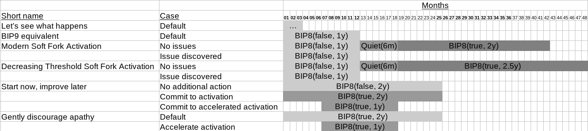
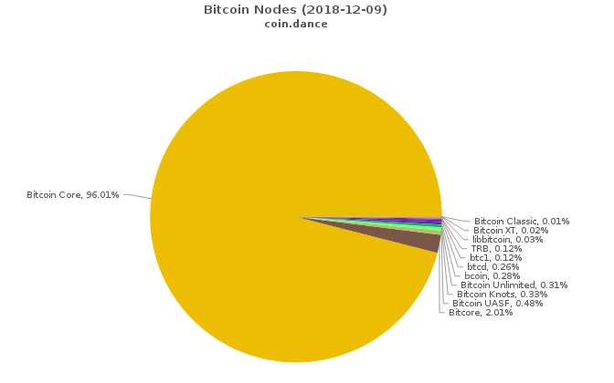
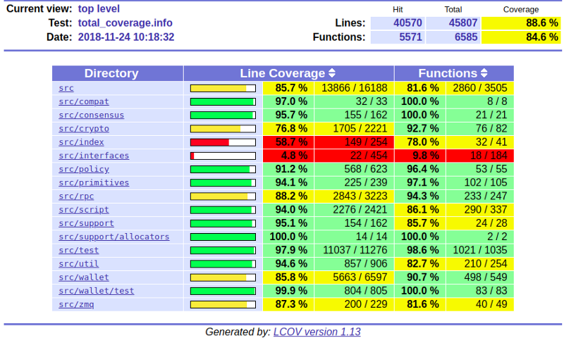
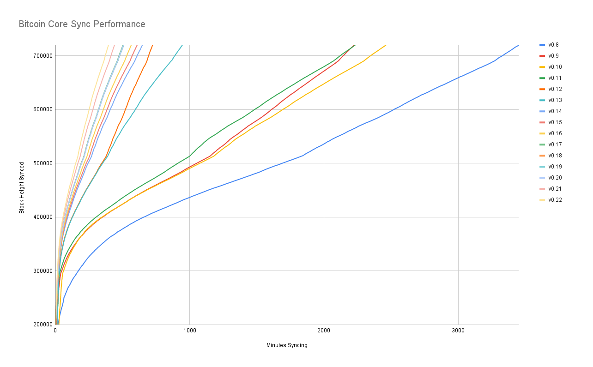
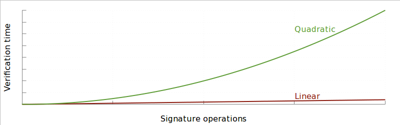
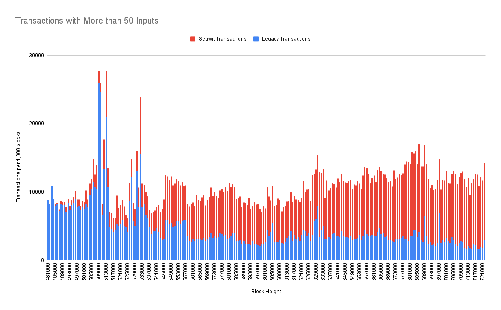
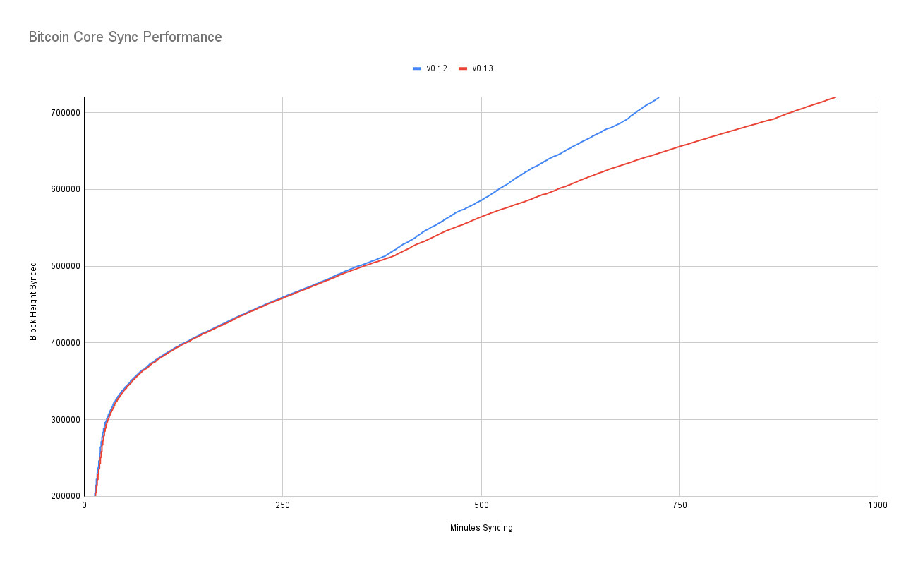
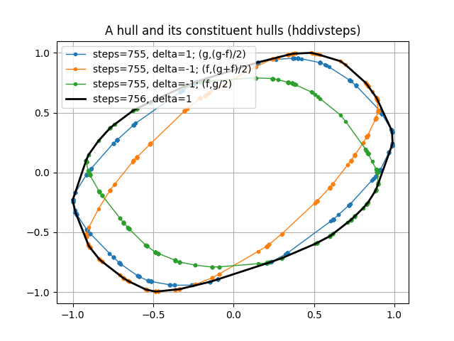
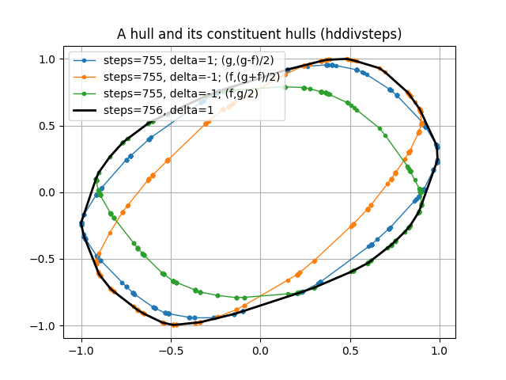
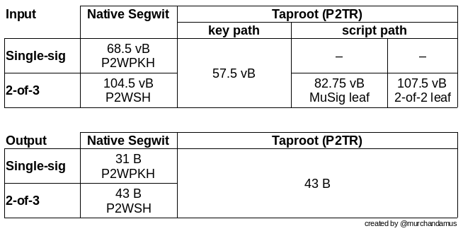

1. Decentralization
1.3. Gregory Maxwell On decetralization
I think questions like this are ultimately the result of a fundamental lack of understanding about what Bitcoin is doing.
The problem Bitcoin is attempting to solve is getting everyone everywhere to agree on the same stable history of transactions. This is necessary because in order to prevent users from printing money from nothing the system must have a rule that you can’t spend a given coin more than once-- like I have a dollar then pay both alice and bob that dollar, creating a dollar out of nothing.
The intuitive way to prevent that excessive spending is to decide that first transaction that spends a coin is valid and any additional spends are invalid. However, in a truly decentralized system "first" is actually logically meaningless! As an inescapable result of relativity the order which different parties will perceive events depends on their relative positions, no matter how good or fast your communication system is.
So any system that needs to prevent duplication has to have a way to artificially assign "firstness". Centralized systems like ripple, eos, iota, blockstream liquid, etc. just have a single party (or a virtual single party) use its idea of whatever came first and everyone else just has to accept its decision.
A decentralized system like Bitcoin uses a public election. But you can’t just have a vote of 'people' in a decentralized system because that would require a centralized party to authorize people to vote. Instead, Bitcoin uses a vote of computing power because it’s possible to verify computing power without the help of any centralized third party.
If we didn’t have the constraint that this system needed to work online, then you could imagine an alternative where consensus could be determined by people presenting large amounts of some rare element. … but you can’t prove you control osmium online, it appears that computing power is the only thing that can work for this purpose online.
When people talk about "51%" all they’re really talking about is people rigging that election, so that they can override what everyone previously thought was the accepted order of transactions with a new order that changes some of their payments from one party to another.
With this understanding maybe you can see that the concern doesn’t even depend on a single person having too much of the hash-power. The attack would work just as well if there were 100 people each with an equal amount and a majority of them colluded to dishonestly override the result.
Also, any mechanism that would let you prevent one party (much less a secret collusion) from having too much authority would almost certainly let you just replace mining entirely. The only known way to do that is to introduce centralization and if you’re willing to do that it’s trivial, if you’re not it appears impossible. People have cooked up 1001 complicated schemes that claim to do it without introducing centralization, but careful analysis finds again and again that these fixes centralize the system but just hide the centralization.
I think people obsess far too much about "51%"-- it has some kind of attractive mystery to it that distracts people. If you’re worried that someone might reorder history using a high hash-power collusion-- just wait longer before you consider your transactions final.
A far bigger risk to Bitcoin is that the public using it won’t understand, won’t care, and won’t protect the decentralization properties that make it valuable over centralized alternatives in the first place. … a risk we can see playing out constantly in the billion dollar market caps of totally centralized systems. The ability demonstrated by system with fake decentralization to arbitrarily change the rules out from under users is far more concerning than the risk that an expensive attack could allow some theft in the case of over-eagerly finalized transactions.
1.4. The decentralist perspective, or why Bitcoin might need small blocks
AARON VAN WIRDUM SEP 12, 2015
Op-ed - The Decentralist Perspective
The block-size limit debate has dominated Bitcoin blogs, forums, chat rooms and meet-ups for months on end, while many of Bitcoin’s brightest minds are gathering in Montreal to discuss the issue face-to-face at the Scaling Bitcoin Workshop this weekend.
So far, however, the two sides of the debate have made little progress coming to a consensus. At least for some part, this seems to result from a difference of visions – visions that are based on a different set of priorities.
One of these visions – represented by Bitcoin XT developers Gavin Andresen and Mike Hearn – is straightforward and clear. For Bitcoin to succeed, they believe it needs to grow, preferably fast. And for Bitcoin to grow fast, it needs to be cheap, accessible and easy to use. This, in turn, means that the block-size limit needs to increase in order for more transactions to fit on Bitcoin’s blockchain, for fees to remain low, and without having to rely on complicated and far-off alternative solutions. This could mean that some aspects of the Bitcoin ecosystem need to specialize further, but that was always to be expected.
On the other end of the spectrum, a majority of Bitcoin’s most active developers think it’s not that simple. For them, Bitcoin’s decentralized nature is sacrosanct, and they believe that an increase of the block-size limit represents a trade-off with this core feature. Some of these developers – perhaps best described as Bitcoin’s “decentralists” – even warn that too big an increase could destroy the system as a whole.
But for many outside this select group developers it still seems unclear why, exactly, big blocks could pose such a grave threat. To find out, Bitcoin Magazinespoke with four of the most prominent of these decentralists: Bitcoin Core developer Dr. Pieter Wuille, Bitcoin Core developer and long-term block-size conservative Peter Todd, hashcash inventor and Blockstream founder and president Dr. Adam Back, and well-known cryptographer and digital currency veteran Nick Szabo.
MINING CENTRALIZATION
According to decentralists, the problem of big blocks is essentially twofold. On one hand there is the basic assumption that bigger blocks favor bigger miners – presumably mining pools. On the other hand is the fact that bigger blocks complicate mining anonymously.
The main (though not only) reason bigger blocks favor bigger miners has to do with latency. As the block size increases, so does the time it takes for a newfound block to transmit through the Bitcoin network. That is disadvantageous to all miners, except for the miner that found the block. During the time it takes a new block to make its way through the network, the miner who found the block gets a head start mining on top of the new block, while other miners are still busy mining on top of an older block. So as a miner find more blocks, it gets more head starts. And as a miner gets more head starts, it finds more blocks. Meanwhile on the other end of the equation, smaller miners find fewer blocks and, as a result, have more trouble turning a profit, ultimately causing them to drop off the network. Bigger blocks tend to centralize mining.
This problem is worsened, moreover, if a miner wishes to remain anonymous, and wants to use Tor. Since latency on the Tor network is always higher, the problem as described above is simply magnified. If smaller miners are disadvantaged by bigger blocks to the point where it’s hard to remain profitable on a regular connection, miners using Tor don’t even stand a chance.
Neither of these arguments against bigger blocks is controversial in itself. The controversy lies in the question how big is too big. Andresen and Hearn believe an increase to 8 megabytes or even 20 megabytes should be OK, and assume that it’s fine to grow this limit to 8 gigabytes over a 20-year time period.
Speaking to Bitcoin Magazine, Bitcoin Core developer and Blockstream co-founder Dr. Pieter Wuille explained why this assumption is not shared by decentralists.
“It is obvious that block propagation is too slow already,” Wuille said. “A recent software update revealed that several mining pools maintain arrangements where they share block headers – the minimal required part of an actual block – the moment they find a new block. All miners in on the deal then start mining on top of that block header instead of waiting for the full block to propagate over the network – waiting would cut into their profits too much.”
Explaining why this is a problem, Wuille continued:
“This practice is harmful for Bitcoin, as it requires a lot of trust among miners. They no longer verify the validity of blocks individually, and instead just rely on their peers. But validating blocks is supposed to be a miner’s main task on the Bitcoin network…”
Moreover, decentralists warn there might be no turning back once bitcoin mining has become too centralized. At that point, the remaining miners could have created a deadlock on the mining market, essentially preventing newcomers to compete profitably.
Core developer and long-time block-size conservative Peter Todd told Bitcoin Magazine:
“The big concern we have here is, as we reduce these security margins, we’ll see the already worryingly small number of pools decrease even further. Even more concerning though, is that while currently it’s pretty easy to start a new pool if an existing one ‘goes rogue,’ bigger blocks can make it much more difficult to do so, because from the beginning you’ll be much less profitable than the big pools.”
And while it has been suggested that miners can connect to a VPS if they prefer to remain anonymous rather than connect through Tor, this is not quite satisfying for decentralists either. Speaking to Bitcoin Magazine, hashcash inventor and Blockstream CEO Dr. Adam Back explained why.
“It is technically possible to mine using a VPS (Virtual Private Server), but miners who do so are not choosing their own transactions,” Back emphasized. “Instead, they connect to a server that does this for them. It’s another form of centralization, at the extreme. And we already see this happening due to bad connectivity in some countries, where miners use VPS services set up in another country to win some time and increase profits…”
REGULATION
Decentralization – and anonymity – might be sacrosanct for decentralists, but that does not mean they are goals in and of themselves. Instead, decentralists cling to these properties because they believe the health of the Bitcoin network relies on them. It’s only through decentralization and anonymity that the system can remain free from outside influence, such as government regulation.
“Bitcoin achieves policy neutrality by decentralization of mining,” Back explained. “If one miner won’t mine your transaction, another will. It’s an additional benefit if miners are many, geographically dispersed and anonymous, since it’s complex to coordinate a policy imposition on many small geographically dispersed miners. And it’s even more complex to impose policy on someone who is anonymous.”
If, on the other hand, Bitcoin reaches the point where only a handful of professional miners will be able to profitably partake in the process of Bitcoin mining, and if these miners are no longer able to do so anonymously, decentralists worry that Bitcoin’s fundamental properties might be at risk.
“It is pretty clear that forcing the Bitcoin protocol to implement anti-money laundering policy and blacklisting of funds is a long-term goal of governments, which can be done by pressuring mining pools,” Todd explained. “Being able to tell regulators that pressure will simply cause pools to leave regulated jurisdictions is important, but without anonymity, there really aren’t that many jurisdictions to run to.”
Furthermore, once more that half of all hashing power is effectively regulated, authorities could even demand a complete freeze of certain funds, Back explained:
“If more than 50 percent of mining is subject to policy, it can actually censor any transaction by ignoring – orphaning – blocks made by other miners. We don’t know if that would happen or not, but given the fact that it would be within their technical power to do it, it should be expected that regulators demand their regulations achieve an effect.”
Moreover, once this sort of regulation does set in, decentralists believe it will probably be too late to fix. Bitcoin would be caught in a regulatory trap without even noticing it – until the trap closed.
Back continued:
“If Bitcoin is already at high policy risk – sort of effectively centralized but not experiencing the side-effects of that yet – and then the policy problem arises, the properties of Bitcoin are lost or eroded. How can you fix it at that point? Suddenly decentralize it? It’s uncertain that the parties who are at that point under central control over the Bitcoin network have the free choice to work to decentralize it. They would have been regulatory captured.”
FULL-NODE CENTRALIZATION
But even mining centralization and regulation might not be the end of it, decentralists warn. Ultimately, over-sized blocks bear with it another – perhaps even bigger – risk: full-node centralization.
Full-node centralization could be an even bigger risk than mining centralization, decentralists argue, as full nodes effectively verify the consensus rules Bitcoin plays by. These consensus rules enforce that Bitcoin has a 1MB block-size limit, but also that the block reward halves every four years, or that the total supply of bitcoin will not exceed 21 million. And – importantly – being able to verify these rules is what makes Bitcoin a trustless solution. In essence, full nodes allow users to check that Bitcoin does as promised.
But as it becomes expensive to run a full node, decentralists worry that verifying the consensus rules could become reserved to a small elite. This could have several consequences.
An obvious consequence would be that it injects trust in the system. Instead of using trustless full nodes, users would, for instance, use web-wallets – which obviously require a lot of trust in the service. But even solutions such as Simplified Payments Verification (SPV) nodes are no better in this regard, as they do not verify the consensus rules either.
Peter Todd explained:
“SPV nodes and wallets are not a trustless solution. They explicitly trust miners, and do no verification of the protocol rules at all. For instance, from the perspective of an SPV node there is no such thing as inflation schedule or a 21 million bitcoin cap; miners are free to create bitcoins out of thin air if they want to.”
And while the cheating of SPV nodes could be seen as a short-term problem, some decentralists argue that a drop in full nodes might even have more severe consequences in the longer term.
According to Wuille:
“If lots companies run a full node, it means they all need to be convinced to implement a different rule set. In other words: the decentralization of block validation is what gives consensus rules their weight. But if full node count would drop very low, for instance because everyone uses the same web-wallets, exchanges and SPV or mobile wallets, regulation could become a reality. And if authorities can regulate the consensus rules, it means they can change anything that makes Bitcoin Bitcoin. Even the 21 million bitcoin limit.”
It is of vital importance for the health of the Bitcoin network, therefore, that it remains possible to run full node anonymously, Todd urged:
“Like mining, having the option to run full nodes totally ‘underground’ helps change the discussion and gives us a lot of leverage with governments: try to ban us and you’ll have even less control. But if we don’t have that option, it starts looking like regulation efforts have a decent chance of actually working, and gives governments incentives to attempt them.”
Commenting on the block size limit debate itself, Back added:
“I believe that the unstated different assumption – the point at which views diverge – is the importance of economically dependent full nodes. It seems that Gavin thinks a world where economically dependent full nodes retreat to data-centers and commercial operation – and basically all users can only get SPV security – is an OK trade-off and cost of getting to higher transaction volume a year early. But most of Bitcoin’s technical experts strongly disagree and say this risks exposing Bitcoin to erosion of its main differentiating features.”
TRADE-OFFS
So what if decentralists are right? Bitcoin mining, and perhaps even running a full node, is reserved to specialists working from data centers. Anti-Money Laundering and Know Your Customer policy might be imposed, and perhaps the protocol rules are regulated to a certain extent. Sure, it would be a blow for drug dealers, CryptoLocker distributors and extortionists, but Bitcoin would still be a global, instant and cheap payments system. In a way, Bitcoin might actually be better of without these outlaws. Right?
Well, not according to decentralists.
Most decentralists maintain that Bitcoin’s distinguishing features are not its global reach, its instant transactions, or its low costs of use. Instead, they argue, Bitcoin’s single most important distinguishing feature is its decentralized nature. Without it, there would be no reason for Bitcoin to even exist.
Well-known cryptographer and digital currency veteran Nick Szabo explained:
“In computer science there are fundamental trade-offs between security and performance. Bitcoin’s automated integrity necessarily comes at high costs in its performance and resource usage. Compared to existing financial IT, Satoshi made radical trade-offs in favor of security and against performance. The seemingly wasteful process of mining is the most obvious of these trade-offs, but it also makes others. Among them is that it requires high redundancy in its messaging. Mathematically provable integrity would require full broadcast between all nodes. Bitcoin can’t achieve that, but to even get anywhere close to a good approximation of it requires a very high level of redundancy. So a 1MB block takes vastly more resources than a 1MB web page, for example, because it has to be transmitted, processed and stored with such high redundancy for Bitcoin to achieve its automated integrity.”
The crucial importance of this trade-off, was seconded by Wuille:
“If we were to allow centralization of mining, we simply wouldn’t need a blockchain in the first place. We could just let a central bank sign transactions. That would allow us much bigger and faster blocks without any capacity problems. No variable block times. No wasted electricity. No need for an inflation subsidy. It would be better in every sense, except that it would involve some trust. Really, if we don’t consider centralization of mining a problem, we might as well get rid of it altogether.”
Szabo added:
“These necessary trade-offs, sacrificing performance in order to achieve the security necessary for independent and seamlessly global automated integrity, mean that Bitcoin cannot possibly come anywhere near Visa transaction-per-second numbers and maintain the automated integrity that creates its distinctive advantages versus these traditional financial systems.”
BITCOIN VERSUS BITCOIN
This leaves us with one last question. If “Bitcoin cannot possibly come anywhere near Visa transaction-per-second numbers” as decentralists claim, then what is the point of it all? Why even bother building software, investing in startups, and spend time evangelizing Bitcoin, if it inherently doesn’t scale?
The point of it all, for decentralists, lies in a classic distinction: the distinction between Bitcoin the network and bitcoin the currency.
Bitcoin the network, decentralists argue, is fundamentally designed as a settlement system, not as a network for fast and cheap payments. While maybe not the most typical decentralist himself, a recent contribution to the Bitcoin developer mailing list by Core developer Jeff Garzik perhaps explains the decentralist perspective best.
Garzik wrote:
“Bitcoin is a settlement system, by design. The process of consensus ‘settles’ upon a timeline of transactions, and this process – by design – is necessarily far from instant. … As such, the blockchain can never support All The Transactions, even if block size increases beyond 20MB. Further layers are – by design – necessary if we want to achieve the goal of a decentralized payment network capable of supporting full global traffic.”
But, importantly, this vision of Bitcoin as a limited settlement network, does not mean that bitcoin the currency cannot flourish beyond these built-in limits.
As explained by Szabo:
“When it comes to small-b bitcoin, the currency, there is nothing impossible about paying retail with bitcoin the way you’d pay with a fiat currency – bitcoin-denominated credit and debit cards, for example, with all the chargeback and transactions-per-second capabilities of a credit or debit card. And there are clever trust-minimizing ways to do retail payments in the works. Capital-B Bitcoin, the blockchain, is going to evolve into a high-value settlement layer, and we will see other layers being used for small-b bitcoin retail transactions.”
Or as Garzik elaborated:
“Bitcoin payments are like IP packets – one way, irreversible. The world’s citizens en masse will not speak to each other with bitcoin (IP packets), but rather with multiple layers (HTTP/TCP/IP) that enable safe and secure value transfer or added features such as instant transactions.”
Moreover, decentralists contend that even these upper layers could include most of the advantages that the Bitcoin network introduced. Once fully developed, technological innovations such as the Lightning Network and tree-chains should allow users to transact in a decentralized, trustless, and even instant fashion – while ultimately settling on the Bitcoin blockchain. While it is true that on-chain transactions will cost more as room in blocks becomes scarce, decentralists maintain that it is the only way to keep that chain decentralized and trustless – and that that does not need to be a problem.
“Yes, on-chain transaction fees will rise,” Todd acknowledged. “But that changes what you use Bitcoin’s underlying blockchain layer for, and how often – not whether or not you can transact at all. A world where you can send anyone on the planet money directly on the blockchain for five dollars – or for near zero via caching techniques like Lightning – is a very good option, and it will buy us time to develop techniques to make blockchains themselves scalable …”
1.5. IRC log 2012-04-04
1333560356|1|wumpus|for errors that are fatal or really require the users long term attention 1333560364|1|BlueMatt|heh, yet another request for sending double spend notifications... 1333560366|1|BlueMatt|wow... 1333560405|1|gavinandresen|while we're cleaning up code... wxAnything aught to be renamed 1333560413|1|jgarzik|heh 1333560441|1|wumpus|gavinandresen: yes 1333560554|1|lh77|What is mintchip? 1333560562|1|dvide|the best ice cream flavour 1333560565|128|erle-|Quit: erle- 1333560581|1|Graet|its the evolution of currency. 1333560588|1|BlueMatt|heh 1333560590|1|Graet|http://mintchipchallenge.com/ 1333560592|1|Graet|:P 1333560598|1|lh77|is it like bitcoin? 1333560600|1|lh77|peer to peer? 1333560604|1|Graet|not at all 1333560612|1|lh77|what does it do exactly? 1333560615|1|Graet|mint = canadian mint 1333560620|1|Graet|read link? 1333560626|1|Graet|i'm going bed :) 1333560638|32|Joric_|#bitcoin-dev 1333560638|128|Joric_|Changing host 1333560638|32|Joric_|#bitcoin-dev 1333560702|128|coingenuity|Read error: Connection reset by peer 1333560710|1|freewil|well one thing mintchip has that bitcoin doesnt is a large organization behind it 1333560724|128|Joric|Ping timeout: 246 seconds 1333560740|1|Diablo-D3|no one has even proven its from the canadian mint 1333560741|1|Diablo-D3|also 1333560745|1|Diablo-D3|its not distributed nor secure 1333560760|1|Diablo-D3|its DRMed virtual money using a central source to issue keys 1333560762|1|BlueMatt|wait, do I agree with Diablo-D3 for once? 1333560776|1|wumpus|that bitcoin has no large organization behind it is a good thing imo 1333560776|1|BlueMatt|damn im getting cynical 1333560783|128|barmstro_|Remote host closed the connection 1333560813|1|Blitzboom|no it’s not 1333560819|1|gavinandresen|awww.... we don't get no respect, BTC isn't one of the currency codes supported by MintChip 1333560820|8|Joric_|Joric 1333560833|1|Blitzboom|it would be good to have funding for developmenta, PR and legal matters 1333560844|1|wumpus|bitcoin is neutral, which is a good thing, and the only way it can work 1333560863|1|gavinandresen|PR is lovebitcoins.org 1333560866|1|wumpus|if it was controlled by an organisation it'd just be another virtual object type 1333560874|1|wumpus|and I would have zero interest in it 1333560893|1|freewil|im just talking about a non-profit to fund development 1333560901|1|gavinandresen|I'm talking with somebody tomorrow about a non-profit for legal stuff about bitcoin 1333560925|1|freewil|gavinandresen, what about paying you to develop full time :) 1333560942|1|wumpus|that's good, as long as it doesn't become a central point of failure 1333560948|1|BlueMatt|gavinandresen pretty much does develop full-time 1333560954|1|gavinandresen|freewil: feel free. TruCoin was paying me until their funding dried up... 1333560955|1|BlueMatt|(and we should pay him) 1333561003|1|gavinandresen|There are several workable models for funding open source projects, if I was more of a business person I'd spend more time thinking about which one makes sense for bitcoin 1333561040|1|freewil|the only ones i really know are donations and support-based revenue 1333561051|1|Blitzboom|satoshi should simply throw in a few hundred k BTC 1333561069|1|gavinandresen|throw in... where ? 1333561080|1|Graet|the "kitty" 1333561081|1|wumpus|in gavinandresens account 1333561094|1|Blitzboom|that non-profit’s bank 1333561140|128|Diapolo|Quit: Page closed 1333561143|1|Blitzboom|yeah, donations should work. there are plenty of large holders who have a healthy interest in it 1333561183|1|BlueMatt|luckily we are a "currency" 1333561192|1|BlueMatt|getting eg mtgox to donate a bit wouldnt be hard 1333561243|1|denisx|isnt deepbit the biggest profitmaker? 1333561248|1|wumpus|support-based sounds interesting, maybe we should add a payment to open issues :-) 1333561258|128|mmoya|Ping timeout: 244 seconds 1333561281|1|Joric|what do you think about blocking mtgox accounts due to 'tainted' coins? that bitcoin AIDS is making me nervous 1333561300|1|BlueMatt|Joric: welcome to the world of finance regulation 1333561306|32|[Tycho]|#bitcoin-dev 1333561321|1|wumpus|well mtgox can decide what they do for themselves right? 1333561340|1|Joric|it's the biggest exchange atm 1333561356|1|Joric|most coins end there 1333561389|1|BlueMatt|wumpus: sort of, though bitcoin isnt technically regulated as a currency, they still have to try to regulate it as if it were to avoid aml issues 1333561421|1|wumpus|BlueMatt: yes, that's the problem with it being so easy to trace 1333561455|1|jgarzik|bitcoin AIDS? 1333561464|1|wumpus|though a global ledger is probably the only way a distributed currency can work 1333561477|1|jgarzik|does mtgox have a list of tainted coins? 1333561482|1|wumpus|yes 1333561491|1|wumpus|they have a naughty list 1333561502|32|barmstrong|#bitcoin-dev 1333561588|1|wumpus|I think the bigger problem is not mtgox specifically but that bitcoin is so dependent on a few exchanges, they are centralized bottlenecks
1.6. Pieter Wuille On neutrality
This is hard to answer, as "blockchain" isn’t a very well defined thing. Often the term refers to some use of cryptography in a distributed system, but what it means beyond that depends on who you ask. To those who use it as a generic term, it is usually little more than a marketing term.
If you assume that at least there is an actual chain of blocks being built, either by a permissionless set of participants based on economic incentive ("miners"), or by a permissioned set of signers with long-term identities, the question you’re asking actually does not make sense. Blockchain consensus algorithms do not compete with or replace databases as such. They are a mechanism for obtaining consensus on a global state, where multiple participants have authority to accept changes. Arguably, each of those participants already needs a database themselves - the blockchain is merely a log of all accepted updates to those databases. Even in Bitcoin, every node actually has a local database with the UTXO set. In Bitcoin Core, that is a LevelDB database, but there is no fundamental reason why another database couldn’t be used.
Of course, in some scenarios all you need is a single authority deciding on all changes to the database. In that case a database is indeed all you need. But that’s a silly comparison: there are plenty of use cases for distributed systems with multiple writers today, in production use, that have no relation with blockchains. Look up Paxos, or Google Spanner for example. The complexity is not in the database part, but in keeping the participants synchronized. That is what a consensus algorithm does. Most production instances I know of this use mutually trusting authorities (and a distributed system is used for performance/latency reasons rather than trust), but algorithms that permit distrusting participants are well known as well, e.g. PBFT.
Now, digging deeper: how does a private blockchain compare with such a system? The answer is trivial: it is effectively a new way of looking at the same thing. Private blockchains (i.e. there is a set of known identities that can approve changes) rely on running a traditional consensus algorithm (e.g. PBFT) between the block signers to make sure only a single chain emerges. Here the "blockchain" is literally the log of changes, as many of its properties (e.g. the ability to temporarily fork) aren’t even used. That log may be useful for auditing purposes, and if you structure it as a hash chain, you could indeed call it a blockchain. But there is no innovation here whatsoever. That doesn’t mean "blockchain technology" is necessecarily useless here, as some of the cryptography for e.g. transaction verification may still be applicable (depending on the use case), but, arguably, the blockchain as a datastructure itself not novel in any way here.
Things get much more interesting when you’re talking about a public blockchain (where anyone can become an authorizer of changes) but its use cases are very limited. I’m going to focus here on proof-of-work, as I don’t believe any solution that completely avoids PoW actually securely offers the same properties. What PoW does is replace the signing of blocks by known identities with betting on particular versions of history and paying for the bet. Everyone who consistently bets with the majority ("miners") gets paid, and those who diverge don’t. There are two fundamental changes here: (a) there must be something of value to pay miners, which typically implies that your blockchain needs to define its own currency, limiting the use cases to effectively just cryptocurrencies (b) you don’t get guaranteed convergence anymore, only probabilistically and under economical assumptions.
To summarize, the answer to your question really depends on what you mean by blockchain, and what kind of thing you’re comparing it to:
-
Cryptography used in blockchains may be widely applicable in a variety of settings, but doesn’t really have anything to do with blockchains or databases themselves.
-
Using consensus algorithms (private or public, including typical "blockchain based" ones) in situations where there is only a single authorizer is silly; you should use the database directly.
-
Using fault tolerant consensus algorithms (either traditional BFT like ones, or PoW) is overkill when your authorizers are trusted (e.g. because they’re all run by the same company). Use something like Paxos instead.
-
Using trustless consensus algorithms like PoW does add something no other construction gives you (permissionless participation, meaning there is no set group of participants that can censor your changes), but comes at a high cost, and its economic assumptions make it pretty much only useful for systems that define their own cryptocurrency. There is probably only place in the world for one or a few actually used ones of these.
1.7. Gregory Maxwell on autonomy
Your prior understanding sounds correct.
Many people have a hard time understanding autonomous systems, there are many in their lives things like the english language-- but people just take them for granted and don’t even think of them as systems. They’re stuck in a centralized way of thinking where everything they think of as a 'thing' has an authority that controls it.
Bitcoin doesn’t focus on anything. Various people who have adopted Bitcoin chose of their own free will to promote it, and how they choose to do so is their own business. Authority fixated people may see these activities and believe they’re some operation by the bitcoin authority, but no such authority exists.
The article might just as well say "Meanwhile, English has recently introduced 'chatspeek'-- an informal abbreviated form of the language-- to attract a younger, more mobile, generation to its platform."
2. Trustlessness
2.1. Pieter Wuille on trustlessness
The term trustless is often misunderstood. I suspect you mean not needing to trust anyone, but if a program being open source helps for that, aren’t you implicitly relying on the people who are capable of reviewing the source code to have actually done so? Isn’t that also a form of trust? Of course it is. Every production system needs to trust various aspects of the infrastructure: the hardware it’s running on, the compiler that was used, the operating system, and last but not least the human operating it.
The trust we’re talking about in "trustless" is an abstract technical term. A distributed system is called trustless when it does not require any trusted parties to function correctly. In that sense, a "trustless wallet" does not make sense: wallets are an implementation aspect of a cryptocurrency, the design of which may or may not rely on trusted parties. The wallet software being open or closed source doesn’t change this.
Does that mean you should use a closed-source wallet? Hell no. Not because it’s "trustless" or not, but because there is no chance it’ll have been sufficiently reviewed (unless, perhaps, you have access to the source code under NDA and paid for thorough review yourself).
2.3. David Harding: Full Validation, The best possible decentralized security
Imagine a scientist reading about an experimental result and then repeating the experiment for herself. Doing so allows her to trust the result without having to trust the original scientists.
Bitcoin Core checks each block of transactions it receives to ensure that everything in that block is fully valid—allowing it to trust the block without trusting the miner who created it.
This prevents miners from tricking Bitcoin Core users into accepting blocks that violate the 21 million bitcoin limit or which break other important rules.
Users of other wallets don’t get this level of security, so miners can trick them into accepting fabricated transactions or hijacked block chains.
Why take that risk if you don’t have to? Bitcoin Core provides the best possible security against dishonest miners along with additional security against other easier attacks (see below for details).
How Validation Protects Your Bitcoins
Bitcoin banks and lightweight (SPV) wallets put your bitcoins at increased risk of being stolen. That risk may be acceptable for small values of bitcoin on mobile wallets, but is it what you want for your real wallet?
Direct theft
Alice deposits 100 bitcoins to Bank.Example.com. The next day, the owners of the site disappear with Alice’s money.
-
Bitcoin bank users are vulnerable to direct theft because they don’t control their own private keys.
-
Lightweight (SPV) wallet users and Bitcoin Core users are not vulnerable because they control their own private keys.
Direct theft is likely the leading cause of stolen bitcoins so far.
Real Example
Bitcoin exchange Mt Gox reportedly had 650,000 bitcoins (worth $347 million USD) stolen from their customer deposits and their own operating funds. They declared bankruptcy on 28 February 2014.
Even when the bankruptcy proceeding is complete, customers are unlikely to recover more than a small fraction of the bitcoins they had on deposit.
Learn More: Collapse of Mt Gox
Bait and switch
Alice installs Example Wallet, whose open source code has been audited. The next day, the authors of Example Wallet push new code to Alice’s device and steal all her bitcoins.
-
Bitcoin bank users are vulnerable because they can only spend their bitcoins when they use the bank’s approved software.
-
Lightweight (SPV) wallet users are vulnerable with most software because auditors can’t easily verify the software you run (the executable) is the same as the program source code, called a deterministic build. However, some lightweight wallets are moving to deterministic builds.
-
Bitcoin Core is built deterministically. Cryptographic signatures from build auditors—many of whom are well known to the community—are released publicly.
Bitcoin.org’s Choose Your Wallet page tells you whether or not wallet builds are audited in the Transparency score for each wallet.
Real Example
In April 2013, the OzCoin mining pool was hacked. The thief stole 923 bitcoins (worth $135,000 USD), but online wallet StrongCoin modified their wallet code to ‘steal back’ 569 of those bitcoins ($83,000) from one of their users who was suspected of the theft.
Although this attack was done with good intentions, it illustrated that the operators of StrongCoin could steal bitcoins from their users at any time even though the users supposedly controlled their own private keys.
Fabricated transactions
Mallory creates a transaction giving Alice 1,000 bitcoins, so Alice gives Mallory some cash. Later Alice discovers the transaction Mallory created was fake.
-
Bitcoin bank users depend on the information reported by the bank, so they can easily be fooled into accepting fabricated transactions.
-
Lightweight (SPV) wallet users depend on full nodes and miners to validate transactions for them. It costs nothing for dishonest full nodes to send unconfirmed fabricated transactions to an SPV wallet. Getting one or more confirmations of those fabricated transactions is also possible with help from a dishonest miner.
-
Bitcoin Core users don’t have to worry about fabricated transactions because Bitcoin Core validates every transaction before displaying it.
Currently the best defense against fabricated transactions, besides using Bitcoin Core, is to wait for as many confirmations as possible.
Real Example
On 4 August 2015, web wallet BlockChain.info began indicating that a transaction had spent the earliest mined 250 bitcoins, coins that some people believed were owned by Bitcoin creator Satoshi Nakamoto.
It was soon discovered that the transaction was invalid. BlockChain.info was not validating transactions with Bitcoin Core and that transaction had been created by a security researcher.
Chain hijacking
Alice believes that there should never be more than 21 million bitcoins—but one day she’s tricked into buying “bitcoins” that are only valid on a block chain with permanent 10% inflation.
-
Bitcoin bank users have to use whatever block chain the bank uses. Banks can even profit from switching their users to a new chain and selling their users’ bitcoins from the old chain.
-
Lightweight (SPV) wallet users accept the block chain they know about with the most proof of work. This lets the hash rate majority of miners force SPV wallet users off of Bitcoin.
-
Bitcoin Core users don’t have to worry about chain hijacking because Bitcoin Core validates every block using all of Bitcoin’s consensus rules.
Preventing chain hijacking is one of Bitcoin Core’s most important jobs. The alternative is to allow miners to do whatever they want.
Real Example
In July 2015, several large Bitcoin miners accidentally produced an invalid block chain several blocks longer than the correct block chain. Some bank wallets and many SPV wallets accepted this longer chain, putting their users’ bitcoins at risk.
Recent versions of Bitcoin Core never accepted any of the blocks from the invalid chain and never put any bitcoins at risk.
It is believed that the miners at fault controlled more than 50% of the network hash rate, so they could have continued to fool SPV wallets indefinitely. It was only their desire to remain compatible with Bitcoin Core users that forced them to abandon over $37,500 USD worth of mining income.
Learn more: July 2015 chain forks
Transaction withholding
Mallory shows Alice $1,000 USD that he will pay her if she sends him some bitcoins. Alice sends the bitcoins but the transaction never seems to confirm. After waiting a long time, Alice returns Mallory’s cash. It turns out the transaction did confirm, so Alice gave away her bitcoins for nothing.
-
Bitcoin bank users only see the transactions the bank choose to show them.
-
Lightweight (SPV) wallets users only see the transactions their full node peers choose to send them, even if those transactions were included in a block the SPV wallet knows about.
-
Bitcoin Core users see all transactions included in received blocks. If Bitcoin Core hasn’t received a block for too long, it displays a catching-up progress bar in the graphical user interface or a warning message in the CLI/API user interface.
Unless you use Bitcoin Core, you can never be sure that your bitcoin balance is correct according to the block chain.
Chain rewrites
Mallory gives Alice 1,000 bitcoins. When Alice’s wallet says the transaction is confirmed, Alice gives Mallory some cash. Later Alice discovers that Mallory has managed to steal back the bitcoins.
This attack applies to all Bitcoin wallets.
The attack works because powerful miners have the ability to rewrite the block chain and replace their own transactions, allowing them to take back previous payments.
The cost of this attack depends on the percentage of total network hash rate the attacking miner controls. The more centralized mining becomes, the less expensive the attack for a powerful miner.

Real Example
In September 2013, someone used centralized mining pool GHash.io to steal an estimated 1,000 bitcoins (worth $124,000 USD) from the gambling site BetCoin.
The attacker would spend bitcoins to make a bet. If he won, he would confirm the transaction. If he lost, he would create a transaction returning the bitcoins to himself and confirm that, invalidating the transaction that lost the bet.
By doing so, he gained bitcoins from his winning bets without losing bitcoins on his losing bets.
Although this attack was performed on unconfirmed transactions, the attacker had enough hash rate (about 30%) to have profited from attacking transactions with one, two, or even more confirmations.
Note that although all programs—including Bitcoin Core—are vulnerable to chain rewrites, Bitcoin provides a defense mechanism: the more confirmations your transactions have, the safer you are. There is no known decentralized defense better than that.
Help Protect Decentralization
The bitcoin currency only works when people accept bitcoins in exchange for other valuable things. That means it’s the people accepting bitcoins who give it value and who get to decide how Bitcoin should work.
When you accept bitcoins, you have the power to enforce Bitcoin’s rules, such as preventing confiscation of any person’s bitcoins without access to that person’s private keys.
Unfortunately, many users outsource their enforcement power. This leaves Bitcoin’s decentralization in a weakened state where a handful of miners can collude with a handful of banks and free services to change Bitcoin’s rules for all those non-verifying users who outsourced their power.
Users of Bitcoin banks |
Users of P2P lightweight wallets |
Users of client lightweight wallets |
Users of Bitcoin Core |
Unlike other wallets, Bitcoin Core does enforce the rules—so if the miners and banks change the rules for their non-verifying users, those users will be unable to pay full validation Bitcoin Core users like you.
As long as there are many non-verifying users who want to be able to pay Bitcoin Core users, miners and others know they can’t effectively change Bitcoin’s rules.
But what if not enough non-verifying users care about paying Bitcoin Core users? Then it becomes easy for miners and banks to take control of Bitcoin, likely bringing to an end this 13 year experiment in decentralized currency.

If you think Bitcoin should remain decentralized, the best thing you can do is validate every payment you receive using your own personal full node such as Bitcoin Core.
We don’t know how many full validation users and business are needed, but it’s possible that for each person or business who validates their own transactions, Bitcoin can remain decentralized even if there are ten or a hundred other non-verifying users. If this is the case, your small contribution can have a large impact towards keeping Bitcoin decentralized.
Do You Validate Your Transactions?
Some people confuse supporting the network with helping to protect Bitcoin’s decentralization.
To improve your security and help protect decentralization, you must use a wallet that fully validates received transactions. There are three ways to do that with Bitcoin Core right now:
-
Use the built-in wallet’s graphical mode. If you request payment using the following screen in Bitcoin Core, your received transactions will be fully validated.

-
Use Bitcoin Core as a trusted peer for certain lightweight wallets. Learn more on the user interface page. If you use a secure connection to your personal trusted peer every time you use the wallet, your received transactions will be fully validated.
-
Use the built-in wallet’s CLI/API interface. This is meant for power users, businesses, and programmers. The user interface page provides an overview, the installation instructions can help you get started, and the RPCdocumentation can help you find specific commands. If you’re using
getnewaddressto create receiving addresses, your received transactions will be fully validated.
2.4. Corallo on trustlessness
… Is everyone awake? Sure. Jumping jacks. Wow, that’s bright. I am more idealistic than Eric. I am going to talk about utility and why people use bitcoin and let’s see how that goes.
Trustlessness is much better than decentralization. I want to talk about trustlessness. People use the word decentralization a lot and I find that to be kind of useless because decentralization is a means to an end. We use bitcoin because we don’t want to trust a third party, and decentralization is a fuzzy word but trustlessness you can assign some meaning to this. There was a piece on linkedin that was a history of ecash and where bitcoin came out of from the community in the 80s and 90s and it clearly birthed bitcoin. He talks a lot about various attempts at building ecash systems and why they all failed, and at the end of the day you had to trust someone. There’s a lot of different forms of that- trusting someone to continue to exist and stay in business, to not seize your coins or whatever. They all failed for those reasons. In Eric’s posting of the original satoshi announcement, you saw that you didn’t have to trust anyone. It was at least a two sentence blurb. Let’s talk about what forms this trustlessness takes in bitcoin. Why do people care about this and how do they use bitcoin?
It’s nice to think about digital gold vs payments argument; I think this is useless for evaluating cryptocurrency, but it’s interesting to loo kat that for what it implies for trusting or why you care about bitcoin. There’s a digital gold aspect of secure settlement where you want to only trust your own node, you want to verify the chain hopefully without inflation, and you get this nice property that you can run your own node and verify the rules and see on your own node the hashrate. You can see it and add it up, and calculate how much hashrate went into confirming these transactions. Maybe you wait a week, or a month, there’s various other issues with mining today. So you wait a while, you can accept transactions and say okay I know for sure without trusting anyone, a central bank, the fed, I don’t trust any of these people, or the government of Venezuela or whatever form that takes.
On the other hand, we have a payments view of trust where people are trying to avoid trusting Paypal, Visa, or someone more direct. So you are looking at bitcoin from the lense of wanting faster payments, you care about not necessarily waiting a week… where the entire modern financial system is built on the idea of coming together nad having trust around Visa or whatever. If Visa says you have paid a dollar then that’s the case. Some people might not want this- maybe you’re censored because you’re a marijuana grower in the US or various other places in the world… maybe you’re in a place where Visa doesn’t work or wherever it is. You want to be able to use bitcoin without necessarily trusting someone like that.
There’s this interesting concept that comes up. There’s this wonderful bitcoin system, hashrate you can see, you can see transactions coming through. But is that enough? Ultimately, people like to use bitcoin for more than just “well I can see a transaction and if it confirms that’s great”- they care about not being censored, about censorship resistance and getting their transactions through hopefully without trusting anyone else. Where do we get this property from?
This is where the decentralization ubzzword comes in. I refer to the concept of consensus-group distribution.. It’s useful to talk about consensus group distribution because it applies not just to proof-of-work and proof-of-stake but other systems. Your system has people putting transactions into blocks. At bitcoin, we have an attempt at consensus group distribution with hashrate and hopefully it’s decentralized and it’s really not today– that’s a huge open question; can we build a system that is in the long-term censorship resistant? It’s unclear. There have been othe rattempts like proof-of-stake and it turns out that stake and wealth has always been incredibly centralized throughout human history. There are also other untested proposals. Bitcoin is still very experimental, as well. Can we build this censorship resistant system that people want?
Also, this comes back to community norms. Why does bitcoin today actually work and have censorship resistance if mining is so centralized? Turns out, that’s community norms. People use bitcoin for censorship resistance, and if miners started aggressively violating that, then bitcoin would have less value, and miners would have less value in their investment. There’s an expectation in the community and this has played a useful role in creaitng censorship resistance. I would argue this is only temporary. If you have the next generation of miners or government, eventually people are going to find pressure points and figure out how to violate censorship resistance and try to censor payments and transactions as government are want to do.
There’s an extension to this community norms concept– in bitcoin we talk about not wanting to trust anyone, but a clear violation of this is when the rules change out from undre you. This was the old 2x fork drama. Who should I have to trust to use bitcoin for the rules to change? I would argue bitcoin applied this new community norm and really grew out of it; this is where the fork happened. You had one part of the community that wanted different norms to change the rules more aggressively, and another part of the community that didn’t want to change rules without broad agreement. This has interestingly resulted in bitcoin being unique that there’s a norm that changes don’t get made easily. Because that is the expectation of bitcoin users, and people expect this to be a thing they rely on for them to continue using bitcoin; it becomes self-perpuating because the community expects it and you thus have this nice property where you don’t have to trust bitcoin for the rules. Other projects are more about the community and who is going to enforce these rules and enforce changes.
Who’s the tech guy in here?
What implications do these concepts of various types of not wanting to trust someone have on scalability and how we look to the future? Blockchains don’t scale. If anyone tells you that they have a blockchain that scales, they are lying to your face. They might be leaving out some tradeoffs they have made. There are a lot of different areas in this overarching concept of not trusting anyone that we can relax and get a more trust-centric system that is more highly scalable. These are all valid approaches, but they are not the approach that bitcoin takes.
We could give up on the decentralization of the consensus group. We could be Ripple or Paypal where there’s a single entity or a small federation that confirms transactions. Of course, you probalby give up some of your cnesorship resistance, and maybe you have programmable money. This is a valid approach. You can also experiment with other ones— proof-of-stake probably lands in this category where you have relatively centralized stake and you end up with a consensus group which is more centralized and maybe they can censor transactions more, or maybe you get other security guarantees. That’s fine, that’s a valid approach.
You could give up on hte concept of self-validation where you give up on everyone running a fully-validating node. Everyone could be a SPV client where they only do partial validation or only see some part of the network, and this encompasses a lot of things, like sidechains and other things and sharding and ohters also fall under this category. If you can only see part of the network, then things could go faster. Other things could be going on that are invalid or incorrect and this might come back to bite you later. You don’t have this digital gold use case anymore because something happening elsewhere– that attempt at not trusting others, well it goes out the window because something happened and now people are posting on reddit that hey don’t accept payments for the next week while we reorg the whole chain or whatever. Again, valid approach, but that’s not bitcoin.
You could also choose to build a centralized payment channel network, something the opposite of lightning network– something focused on centralization instead. You could build a bank. If someone only cares about bitcoin because they only care about not wanting to trust the Fed, then maybe they’re fine trusting coinbase.com and they should be able to use the cryptocurrency that is great for that purpose. It’s interesting, because other systems in the cryptocurrency space make decisions about this. Ethereum has been talking about building in sharding techniques at the base layer, giving up on self-validation as a tradeoff. They are building this for all their users; you’re required to use that trust model.
In bitcoin, we try to avoid making decisions for people. As a community, we have been encouraging people more to build systems on top of bitcoin that gives up some of the trustlessness. If a user wants to build a bank, then they can. If people want to build a sidechain on top, they can. But this doesn’t infect everyone else using the system. It’s not built in, it’s not baked in, it’s not required to force it on everyone else just because the developers or whatever have decided to try that.
What about the future of bitcoin? What does that mean for going forward? Each use-case has different trust models baked in. Encourage different trust tradeoffs for different use-cases. Many interoperable systems for different uses. If people want to use an ETF, then fine. Let them hedge. Reduce usability gaps for those with “stricter” trust models. Continue setting community precedent.
We have to describe how the trust model works to bitcoin users. We want them to pick the thing most optimal to them. This is a massive open challenge in the community of bitcoiners. We should find a way to build these different systems and allow users to use what they want.
We should also try to focus a little bit on the usability gaps between different trust models— centralized websites are going to be infinitely more user-friendly. We should try to reduce those differences when we can. Coinbase.com is always going to be more user friendly, and it’s always more user-friendly to have a trusted system than a completely trustless system. People who want to use bitcoin without trusting others should not be discouraged from doing so simply because the usability might be terrible. You can’t change the rules out from under me. You shouldn’t do that.
2.5. brianddk - Bitcoin v22.0 and Guix; Stronger defense against the "Trusting Trust Attack"
TLDR; Bitcoin v22.0 moves to Guix so that we can "trust the compiler" even less
<tinfoil_hat_fud>
With any software that handles finance or private keys, the question of trust is important. Most have a general concept of this stuff, and that is usually fine for most anyone’s needs. But there is always the rare case where trust policies are too laxed and users get burned, like the Electrum v3.3.3 phishing attack. Here I’ll try to go through the minimal level of trust all the way down to the theoretical limit of what can be done. At the heart of the matter is the concept of extended trust. In most trust-tests, we start with something that has more trust and see if we can connect it to something with less trust. I’ll walk through a few examples from the top down. In general we will go through the following levels:
-
Trust the site
-
Trust the builders
-
Trust the compiler
-
Trust the kernel
-
Trust the hardware
Trusting the site
When downloading software such as bitcoin-core, at a minimum it is
important to ensure you download from bitcoin.org and not some site
like download.com. If you grab software from a sketchy site, it may
come packaged with code to steal your keys (See "Electrum phishing"
above).
In the realm of "trusting the site" there are those who trust the
browser to get you to bitcoin.org and others who are more paranoid
and will ensure that SSL is enforced. Unfortunately, unless the site
uses something like DNSSEC, DANE, or other cryptographic domain
verification, you can just never be sure. Attacks like bitsquatting and
dns-poisoning can get past even the best intentions of DNS security.
So… sites can’t be trusted.
Trusting the builders
In most cases, trusting the builders is the what most recommend. This
process completely ignores WHERE the binaries were taken from (even
download.com) and instead rely on a builder’s cryptographic
signature delivered with, or embedded in, the file. These are usually
either GPG signatures or CodeSigning certificates like Authenticode.
Main issues here is that many user’s don’t know WHO the builders are. In
many cases, most simply assume that a trusted product, must have a
trusted package owner / builder. A recent example of where this went
horribly wrong was when ownership of a popular JavaScript library was
left to a randome contributor. The new owner went about
crafting
back-doors to steal bitcoin. Since JavaScript is interpretive, it was
quickly spotted, but it shows the danger of entrusting new package
builders or maintainers. Clever projects (like bitcoin) get around this
problem by having reproducible builds.
Reproducible builds are a way to design software so that many community developers can each build the software and ensure that the final installer built is identical to what other developers produce. With a very public, reproducible project like bitcoin, no single developer needs to be completely trusted. Many developers can all perform the build and attest that they produced the same file as the one the original builder digitally signed.
In most situations, those who are not developers are fine to stop here. Just insist that the software you use is open-source, well audited, reproducible, with multiple maintainers who all attest to the same verified compiled binaries. Bitcoin meets this test on all counts
Trusting the compiler
For those who may fear an evil cabal of developers, or feel their project is not audited enough, the next level down is to trust nothing but the compiler. These users will build the project from source code removing the need to trust the project builders. Many may imagine that this is the furthest down the "rabbit hole" this topic can go, but in actuality it isn’t. In a 1984 award speech, the recipient, Ken Thompson, posited the question "Should you trust your compiler?". He goes on to outline a method called the "Trusting Trust Attack". Since even the most paranoid users usually trust the compiler, Ken suggested the compiler is the perfect place to put your Trojan.
The basics of this attack are due to the fact that to make a new compiler binary, you generally use the last compiler binary. But what if compiler binary had malicious code to infect new binaries. This is particularly problematic since compilers building compliers goes back pretty far. Android was made with Linux that was made from Minix. Apple was made with BSD and BSD was made from Unix. These build genealogies go back decades. So what if the original Unix back in the 60’s had a trojan in the compiler that has been carried forward for the last 60 years?
As involved as this sounds, there have been many proof of concepts done to prove the attack’s viability. And with distrust of state security agencies getting worse year after year, it’s not hard to imagine that some agency would want to pull off such attack. The main attack "surface" here are what builders call the "seed binaries". These are the previous versions of compiler and tools needed to build the next compiler. If you can "seed" your build with a smaller set of binaries then, in theory, you may get the set so small that examination, byte for byte, could look for "bad code".
In version 22.0, bitcoin moved to the Guix build system for their official builds. This reduced the "weight" of those seed binaries from 550 MB down to 120 MB. The Guix team is prototyping a new compiler build with a reduced seed weight of 357 bytes. That’s a reduction of 99.999935% from the binary seed weight of Bitcoin v0.21.2
This claim is a bit hyperbolic, but less than you might think. The
complier build requires a proto-complier (mes) and a shell (guile). This
reduction is only for mes not guile. Though there is work to do
the same reduction on guile that was done on mes, but that may
still be a few years out.
Trusting the Kernel
Implicit in the trust of the compiler is the trust of the kernel and OS that the compiler is running on. So if a trusting-trust trojan decided to propagate and infect in both a compiler and kernel, then reducing your binary seed may not be enough. This is a harder attack to pull off since a 357 byte seed build will likely be hand audited for the first few iterations. The trojan would need to know to infect the process far enough along to where it wasn’t visible any more.
The solution to this is to bootstrap your compiler build, without a
kernel. This can be done up until a point. The hex assembler and macro
assembler can be loaded directly out of a legacy bootloader (think
0x7C00) and work is ongoing in in the stage0 project that helped in
the mes bootstrap. But realistically, I’m not sure how far they can
take this.
Trusting the Hardware
Imagining if you could bootstrap without the kernel, there is still the
trust of the hardware. A builder is trusting that the processor and
instruction pipeline is not doing something malicious if it detects a
compiler bootstrap is in place. Although this is pretty deep paranoia,
people are still thinking about this stuff. The reduced mes
bootstrap is working to have a x86 and arm bootstrap independent
of each other. Although one can be cross-compiled on the other, it was
thought to be better if arm software didn’t have to trust x86
hardware for a bootstrap, and vice-versa.
</tinfoil_hat_fud>
2.6. CVE-2018-17144 Full Disclosure
Full disclosure
CVE-2018-17144, a fix for which was released on September 18th in Bitcoin Core versions 0.16.3 and 0.17.0rc4, includes both a Denial of Service component and a critical inflation vulnerability. It was originally reported to several developers working on Bitcoin Core, as well as projects supporting other cryptocurrencies, including ABC and Unlimited on September 17th as a Denial of Service bug only, however we quickly determined that the issue was also an inflation vulnerability with the same root cause and fix.
In order to encourage rapid upgrades, the decision was made to immediately patch and disclose the less serious Denial of Service vulnerability, concurrently with reaching out to miners, businesses, and other affected systems while delaying publication of the full issue to give times for systems to upgrade. On September 20th a post in a public forum reported the full impact and although it was quickly retracted the claim was further circulated.
At this time we believe over half of the Bitcoin hashrate has upgraded to patched nodes. We are unaware of any attempts to exploit this vulnerability.
However, it still remains critical that affected users upgrade and apply the latest patches to ensure no possibility of large reorganizations, mining of invalid blocks, or acceptance of invalid transactions occurs.
Technical Details
In Bitcoin Core 0.14, an optimization was added (Bitcoin Core PR #9049) which avoided a costly check during initial pre-relay block validation that multiple inputs within a single transaction did not spend the same input twice which was added in 2012 (PR #443). While the UTXO-updating logic has sufficient knowledge to check that such a condition is not violated in 0.14 it only did so in a sanity check assertion and not with full error handling (it did, however, fully handle this case twice in prior to 0.8).
Thus, in Bitcoin Core 0.14.X, any attempts to double-spend a transaction output within a single transaction inside of a block will result in an assertion failure and a crash, as was originally reported.
In Bitcoin Core 0.15, as a part of a larger redesign to simplify unspent transaction output tracking and correct a resource exhaustion attack the assertion was changed subtly. Instead of asserting that the output being marked spent was previously unspent, it only asserts that it exists.
Thus, in Bitcoin Core 0.15.X, 0.16.0, 0.16.1, and 0.16.2, any attempts to double-spend a transaction output within a single transaction inside of a block where the output being spent was created in the same block, the same assertion failure will occur (as exists in the test case which was included in the 0.16.3 patch). However, if the output being double-spent was created in a previous block, an entry will still remain in the CCoin map with the DIRTY flag set and having been marked as spent, resulting in no such assertion. This could allow a miner to inflate the supply of Bitcoin as they would be then able to claim the value being spent twice.
Timeline
Timeline for September 17, 2018: (all times UTC)
-
14:57 anonymous reporter reports crash bug to: Pieter Wuille, Greg Maxwell, Wladimir Van Der Laan of Bitcoin Core, deadalnix of Bitcoin ABC, and sickpig of Bitcoin Unlimited.
-
15:15 Greg Maxwell shares the original report with Cory Fields, Suhas Daftuar, Alex Morcos and Matt Corallo
-
17:47 Matt Corallo identifies inflation bug
-
19:15 Matt Corallo first tries to reach slushpool CEO to have a line of communication open to apply a patch quickly
-
19:29 Greg Maxwell timestamps the hash of a test-case which demonstrates the inflation vulnerability (a47344b7dceddff6c6cc1c7e97f1588d99e6dba706011b6ccc2e615b88fe4350)
-
20:15 John Newbery and James O’Beirne are informed of the vulnerability so they can assist in alerting companies to a pending patch for a DoS vulnerability
-
20:30 Matt Corallo speaks with slushpool CTO and CEO and shares patch with disclosure of the Denial of Service
-
20:48 slushpool confirmed upgraded
-
21:08 Alert was sent to Bitcoin ABC that a patch will be posted publicly by 22:00
-
21:30 (approx) Responded to original reporter with an acknowledgment
-
21:57 Bitcoin Core PR 14247 published with patch and test demonstrating the Denial of Service bug
-
21:58 Bitcoin ABC publishes their patch
-
22:07 Advisory email with link to Bitcoin Core PR and patch goes out to Optech members, among others
-
23:21 Bitcoin Core version 0.17.0rc4 tagged
September 18, 2018:
-
00:24 Bitcoin Core version 0.16.3 tagged
-
20:44 Bitcoin Core release binaries and release announcements were available
-
21:47 Bitcointalk and reddit have public banners urging people to upgrade
September 19, 2018:
-
14:06 The mailing list distributes an additional message urging people to upgrade by Pieter Wuille
September 20, 2018:
-
19:50 David Jaenson independently discovered the vulnerability, and it was reported to the Bitcoin Core security contact email.
3. Privacy
3.1. Gregory Maxwell - on privacy
For those who wants complete anonymity, they can go for some altcoins supporting it. In my opinion, BTC is supposed to be used by everyone and everywhere as mainstream currency. So please stop doing things like this to push the majority away just for the sake of niche market.
2013-11-15
I can’t seem to find the link to your bank account records, mind posting them for us?
Luke is pretty much the last person you’d expect to give a crap about underground uses. But privacy is not only a consideration for them, or even primarily for them: dope dealers—or whatever you want your bogeyman to be—can buy their way to privacy even in a system which is very non-private.
Financial privacy is an essential element to fungibility in Bitcoin: if you can meaningfully distinguish one coin from another, then their fungibility is weak. If our fungibility is too weak in practice, then we cannot be decentralized: if someone important announces a list of stolen coins they won’t accept coins derived from, you must carefully check coins you accept against that list and return the ones that fail. Everyone gets stuck checking blacklists issued by various authorities because in that world we’d all not like to get stuck with bad coins. This adds friction and transactional costs and makes Bitcoin less valuable as a money.
Financial privacy is an essential criteria for the efficient operation of a free market: if you run a business, you cannot effectively set prices if your suppliers and customers can see all your transactions against your will. You cannot compete effectively if your competition is tracking your sales. Individually your informational leverage is lost in your private dealings if you don’t have privacy over your accounts: if you pay your landlord in Bitcoin without enough privacy in place, your landlord will see when you’ve received a pay raise and can hit you up for more rent.
Financial privacy is essential for personal safety: if thieves can see your spending, income, and holdings, they can use that information to target and exploit you. Without privacy malicious parties have more ability to steal your identity, snatch your large purchases off your doorstep, or impersonate businesses you transact with towards you… they can tell exactly how much to try to scam you for.
Financial privacy is essential for human dignity: no one wants the snotty barista at the coffee shop or their nosy neighbors commenting on their income or spending habits. No one wants their baby-crazy in-laws asking why they’re buying contraception (or sex toys). Your employer has no business knowing what church you donate to. Only in a perfectly enlightened discrimination free world where no one has undue authority over anyone else could we retain our dignity and make our lawful transactions freely without self-censorship if we don’t have privacy.
Most importantly, financial privacy isn’t incompatible with things like law enforcement or transparency. You can always keep records, be ordered (or volunteer) to provide them to whomever, have judges hold against your interest when you can’t produce records (as is the case today). None of this requires globally visible public records.
Globally visible public records in finance are completely unheard-of. They are undesirable and arguably intolerable. The Bitcoin whitepaper made a promise of how we could get around the visibility of the ledger with pseudonymous addresses, but the ecosystem has broken that promise in a bunch of places and we ought to fix it. Bitcoin could have coded your name or IP address into every transaction. It didn’t. The whitepaper even has a section on privacy. It’s incorrect to say that Bitcoin isn’t focused on privacy. Sufficient privacy is an essential prerequisite for a viable digital currency.
So, again, I ask—let’s see your bank records; I’m sure there is an export to CSV. Mtgox transaction dumps? Stock trading accounts. Let’s see you—even just you—post all this before you presume to say that you think that’s what the public wants forced on everyone.
3.2. Andrew Poelstra - on anonymity
I’ve been looking into Bitcoin recently and stumbled upon numerous notes how Bitcoin is not anonymous at all, or how it’s only partially anonymous and you can easily trace your funds.
So, this brings us to my question: is there any true anonymous cryptocurrencies which I can use and there will be no trace left.
I am a fairly new member to the cryptoworld, so please, keep it simple. :)
Bitcoin Stack Exchange
The short answer is no. The long answer is split into three parts, each headed by a bold word.
-
I will talk about the existing privacy tools in Bitcoin.
-
I will talk about some pie-in-the-sky theoretical crypto which would achieve full anonymity (but which can’t be done feasibly today).
-
I will talk about CryptoNote, its limitations, and feasible ways around it that could be implemented today, specifically those that have already been implemented by Monero.
Today, you can do a lot relative to stock Bitcoin in the direction of privacy. Two strategies I should mention are CoinJoin and CoinSwap.
-
CoinJoin works by effectively pasting together transactions. In Bitcoin, each transaction is a list of inputs tied (by digital signature) to a list of outputs. The transaction is valid if the total output value is less than or equal to the total input value (any difference is a “transaction fee” claimed by miners), and if every input is a valid (not already spent) output of an old transaction. CoinJoin takes transactions from two or more users, combines the input and output lists, and has both users sign the resulting transaction. The result is that the standard flow analysis idiom of “all inputs are owned by the same person” and “all outputs are owned by the same person, except maybe for a change output” is broken. CoinJoin is tricky to implement well: output values should be as uniform as possible to avoid grouping them and matching them to input values; the resulting outputs should not be spent at the same time, since this also groups them; the join should involve two distinct parties, neither of whom is some central server participating in every join. Currently there are no good tools out there which satisfy all these requirements, but there are several in development (such as DarkWallet). Keep an eye open.
-
CoinSwap does trustless mixing, even across different blockchains (as long as each has a sufficiently rich scripting system). It is too complex to summarize here, but the result is the same as if two parties switched private keys in person, except that there is no room for cheating. That is, coins are moved between parties but the blockchain does not see this and therefore chain analysis cannot link them — except to the extent that they look funny, so if there are almost no users doing this, their transactions can be linked on this fact alone. To the best of my knowledge, there are no tools which support this. I am developing a Bitcoin wallet for experimental features such as this that will support it, but it may be several months or years away.
Total anonymity, in the sense that when you spend money there is no trace of where it came from or where it’s going, is theoretically possible by using the cryptographic technique of zero-knowledge proofs. As an extreme example, you could imagine that rather than publishing blocks mapping old outputs to new ones (which is what transactions are in Bitcoin), miners published zero-knowledge proofs that they had a valid set of transactions which, in aggregate, mapped the old set of all outputs to the new set of all outputs. You could further obscure this by having the recipient choose the destination address(es) and pass different ones to every miner. That way, only the miner who gets the block (who is probably different for every block) and the recipient knows where money is going.
In what I’ve described, the values of all coins would still be visible, and perhaps tracking could be done by linking similarly-valued coins. We can fix this with homomorphically-encrypted values, say.
The point of this musing is that there are no strong theoretical reasons that what you want is impossible. But I’m going to burst the bubble I just created and talk about practical problems: firstly, to do this kind of general computation is zero-knowledge even remotely feasibly, you need to use a system which has a trusted setup (in cryptographic terms, the scheme is secure only in the CRS (common reference string) model). This means that some party, the scheme’s creator probably, has access to secret data which will allow them to produce false proofs, effectively allowing them to undetectably print money for all time. A recent example of such a thing is the paper SNARKs for C by Eli Ben-Sasson et. al., which provides a lot of historical context.
Secondly, even with this fatal flaw, these schemes are not all that computationally feasible. Zerocoin, now superceded by Zerocash, took this approach and needed to create serious restrictions: all coins have the same value, there is no scripting (even for multisignature transactions, I believe), and even so some serious work went into special optimizations to do whatever was left (such as hashing) in zero knowledge. For ZeroCash research is going into doing the initial setup in a multi-party computation so that no individual has the secret material needed to print coins; there would be several, and as long as even one securely destroyed their data, the currency would be safe from forgery.
However, ZeroCash’s trusted setup is orders of magnitude more complex than any other MPC that has ever been done. And the most efficient MPC schemes known depend on a trusted-setup as well, so we haven’t gained anything.
Having said that, we can get something weaker than total anonymity, and it looks like we can do it in a feasible way. As has been mentioned, CryptoNote-based currencies use ring signatures (contrast group signatures, which involve a trusted party) rather than plain old ECDSA signatures in the proof-of-ownership part of their transaction signature scheme. Arguably the most well-known cryptocurrency that was originally based on CryptoNote is Monero. Whilst Monero has subsequently deviated substantially from its CryptoNote origins, it still implements many of the key concepts below, and additionally improves a lot of the problem areas originally highlighted in this answer.
To understand how CryptoNote works we must first recap how Bitcoin transactions work. Essentially, in Bitcoin each transaction output has a public key associated to it (identified, though not revealed, by the Bitcoin address on the output), and to spend that output you need to produce a small script including a digital signature using this key. When everyone sees that transaction, they see that the old output(s) are spent (so they can forget about it, except as far as keeping historical blockchain data for new users) and that new unspent output(s) have been created. Ring signatures, on the other hand, are associated to an arbitrary set of public keys, and knowledge of only one is required to make a signature. CryptoNote uses this by having each transaction input be a set of potential unspent outputs of the same value, signed by a ring signature using all those outputs’ associated keys. It is impossible to determine which one is the “real” one that the signer is actually spending.
You might ask, if it’s impossible to determine which outputs are being spent, how can double-spending by prevented? CryptoNote solves this using a special ring signature algorithm (which is a modified version of existing signatures, so this is original cryptography and their security proof should be scrutinized — fortunately it is not too complicated) in which the real signing key has a key image associated to it, which must be published alongside the signature. This key image cannot be reversed to get the original key and deanonymize the sender, but if a double-spend is attempted, users will see that the same key image is used twice and reject the second attempt.
This provides good anonymity, but even with the improvements listed presently, this is not a zero-knowledge scheme. This means that linkability is confounded but an adversary with good analysis tools will certainly be able to glean a non-zero (literally, infinity times as much as zero) amount of information.
This is a very promising direction, and these signatures are feasible to verify by ordinary computers (though they are more difficult, so scaling will be worse than Bitcoin’s), but there are some serious limitations. Fortunately, all are fixable. The following list is the result of conversations between myself, Greg Maxwell, Peter Todd, Mark Friedenbach, Adam Back and several others (who I’m sure will contact me to be listed :)), and to the best of my knowledge hasn’t been published anywhere. So aspiring anonymous altcoins developers, here is a wishlist:
-
In Bitcoin, because transaction outputs are incontrovertibly spent, the total list of unspent outputs grows only very slowly. Nodes with limited storage are able to store this, and basically nothing else: when they see a new block, they verify it then update their list of unspent outputs accordingly. In CryptoNote this is impossible since transaction outputs are never definitely spent: there is a giant list of potentially spendable outputs, and a giant list of spent key images, and both of these grow very quickly and never shrink. Current CryptoNote implementations, except for Monero, store this all in RAM, which puts a pretty serious cap on their scalability today. One of Monero’s scalability improvements is to store this set on disk in a very fast LMDB database, but the set of mixable outputs is still unbounded and is expected to grow faster than Bitcoin’s comparable utxoset.
However, this can be further be improved by having users store only the outputs whose keys they own (plus some extras for anonymity) and only a subset of spent key images, which I will describe. The set of outputs would be stored in an insertion-ordered Merkle tree (so a user storing almost none of the tree can easily verifiably append new outputs, but can’t detect duplicates, which is fine). The set of images would be stored in a image-ordered Merkle tree (so a user storing almost none of the tree can easily add a new key image and verify that it didn’t exist before, given a proof of insertion, which is basically a path from the new node to the root of the tree, along with the siblings of each node along the way). To spend an output, the user provides a ring signature including the output, with appropriate key image and proof-of-new-insertion.
Note that to produce a proof of insertion for the new key image, the user needs to store all its neighbors in the key image tree. Since key images are random-looking, how can this be done without storing the whole thing? The answer is prefix-filtering. When a user creates a new key, he creates one whose first 10 bits (say) are a specific ten-bit sequence that all his key images will have. He stores every key image that starts these ten bits so that he can produce proof-of-insertion of such images. The result is a reduction in anonymity (by a factor of \(2^{10}\)) since everyone will know that nearby key images are more likely to be owned by the same person than are far-away ones, but a corresponding reduction in storage requirements (by a factor of \(2^{10}\)) and an increase in key generation time (since on average \(2^{10}\) keys will need to be generated before one with the right prefix comes along). This is a tradeoff that every user will have to make.
Peter Todd has suggested choosing a new prefix every few months or years, and retiring those in which every known key image has been used. This gets more privacy for the storage hit than simply decreasing the prefix length, since two key images in different prefix sets don’t reveal their common owner.
-
With ring signatures, the anonymity set is only as large as you make it, probably just two or three potential keys per signature.
We can improve this to effectively CoinJoin all transactions in each block (with the caveats that (a) miners can deanonymize the CoinJoin, reducing anonymity to the smaller set provided by the ring signatures, and (b) it is possible to miners to detectably cheat, so there is a small window after mining in which block content might be invalidated by revealing its cheating, which increases complexity) (the complexity hit is because it is important that the block content, not the block itself, be invalidated, since otherwise miners could deliberately cheat then reveal the cheating later, giving them a large window in which everyone else is mining a bad chain). The exact scheme is described at the very top of this IRC log.
(The same security can be provided with fancy cryptography, specifically one-way aggregatable signatures (“just the math” by Greg Maxwell), which depends on pairing-based cryptography, which is slow and requires new security assumptions that make some people uncomfortable. The exact way these would be used is described from 21:24:58 onward in these IRC logs. It is very cool that we can get the same security with no new crypto.)
-
With ring signatures, your anonymity can be compromised after the fact by others in your anonymity set. For example, if you spend an output using a ring signature along with two other outputs, then those other outputs’ owners spend them with a single-signature ring signature (so they are incontrovertibly spent), it is now clear which of the three you used is yours, since each can be spent only once. This can be done long after the fact, which complicates analysis.
This can be fixed by requiring a minimum size of anonymity set, as Monero has done on a protocol level since March, 2016. But then we have a new problem — there are only so many outputs of any given size, and since all outputs in an anonymity set must be the same size (so the network knows how much you are spending), this might not be possible. This can be fixed by allowing outputs of any size in the anonymity set, and taking the minimum size to be the spend amount. But then given a ring signature across several outputs’ keys, people will know that the output with smallest size will be the “real” one. This is because each output can only be spent once, so if you mix it with smaller outputs, you are basically shrinking it to the size of those outputs since the network will only recognize the smaller value.
All these problems are addressed in the next point.
-
With ring signatures, you need all potential inputs to have same (or similar) value, which greatly restricts your anonymity set.
In fact, Greg Maxwell and I found a way such that every single output can be read as any uniform distribution of outputs (so 1BTC might be spendable as a single 1BTC output, or two 0.5 BTC outputs, or three 0.33 BTC outputs, etc.) There is a single “real” distribution, but only the creator of the output knows this, and it is not revealed except in the case of leaked keys. Therefore, literally every single output size can plausibly be claimed to be created by every output, and therefore all outputs can participate in each anonymity set. This scheme is described in this writeup.
With this is place, it is feasible to set a minimum anonymity set size, preventing people from using keys with no anonymity set and compromising their own and others’ anonymity. They can still do this compromise by revealing their secret key, but it’s not clear to me that this is even possible to prevent.
Monero has addressed this issue in a similarly powerful manner, by implementing a scheme based on Greg Maxwell’s Confidential Transactions. This novel scheme and implementation is called Ring Confidential Transactions. Because the value of outputs is no longer known under this RingCT scheme, you are no longer forced to only mix with a small subset of outputs (ie. those of the same denomination, which in CryptoNote and pre-RingCT Monero are all ^10 denominated outputs). This massively increases the potential anonymity set, and ensures that even large outputs are not “stuck” with only a handful of matching, mixable outputs.
And by the way, Dash (formerly Darkcoin) does not provide anonymity. They attached a (broken) implementation of CoinJoin to the ordinary Bitcoin client, and at least initially released it as a closed-source software. I haven’t looked into Anoncoin, but the best advice I have for folks looking into altcoins is to assume they are uninteresting (and probably dangerously broken) until someone has demonstrated a concrete technical innovation.
3.3. Tim S. - on pseudonyms
Why does bitcoin use public keys as pseudonyms? Is there any reason for that? What are the advantages of using public key as the pseudonyms? Highly appreciate if someone can give me an answer.
Bitcoin Stack Exchange
More accurately, the pseudonyms most commonly used are addresses, which are derived from public keys (not the longer public keys themselves).
In order for Bitcoin’s idea to work, you must have coins that can only be spent by the owner of a given private key. This means that whatever you send to must be tied, in some way, to a public key.
Using arbitrary pseudonyms (e.g. user names) would mean that you’d have to then somehow link the pseudonym to a public key in order to enable public/private key crypto. This would remove the ability to securely create addresses/pseudonyms offline (e.g. before someone could send money to the user name "tdumidu", you’d have to announce in the blockchain that "tdumidu" is owned by public key "a1c…", and include a fee so others have a reason to announce it), reduce anonymity (by encouraging you to reuse pseudonyms), and needlessly bloat the size of the blockchain. It would also create a false sense of security that you’re sending to who you think you are (if I take the name "Linus Torvalds" before he does, then it’s mine and people might send money thinking they’re paying the creator of Linux, not me).
Using a pseudonym that either is, or can be calculated from, the public key removes these problems: the mere act of sending the money also describes, in cryptographically secure detail, who can spend it. As the existence of vanity addresses shows, it also allows a small amount of customization.
3.5. Gregory Maxwell - Bad privacy contagious
Could you provide a concrete example to explain why reusing addresses by A will affect B if B always carefully choosing address. and how both A and B never reusing addresses prevent it? I’m still not so clear about it.
BitcoinTalk forum 2013-11-15
A always reuses addresses. Blockchain.info uses this to display their name and IP address along with their transactions, everyone else they’ve ever transacted with knows who they are, anyone can identify who they are with a simple google search, etc. Because A reuses so often even if A sometimes doesn’t reuse, the coins they receive inevitably get mixed up with the non-reused one. A is entirely public.
Now B is super careful and paranoid… and we’re not even in a world where blacklisting or whitelisting prevents B from comfortably using his paranoid practices. He never reuses. Someone is trying to figure out who B is because they want to defraud him. Initially they are thwarted by B’s pratices but then they see that B initially received his coins from A. Everyone knows who A is. Moreover, they see when they did so. From that alone they’ve learned a ton of information about B, beyond that they can now go ask A to tell them— they could coerce A, or just trick him, as we’ve already established that A is pretty happy go lucky and not very cautious. Beyond that it isn’t just A, B also transacts with other people who are not hygienic and those all potentially leak information too.
This actually works in practice, too… A nice whitehat hacker on IRC was playing around with brainwallet cracking and hit a phrase with ~250 BTC in it. We were able to identify the owner from just the address alone, because they’d been paid by a Bitcoin service that reused addresses and he was able to talk them into giving up the users contact information. He actually got the user on the phone, they were shocked and confused— but grateful to not be out their coin. A happy ending there. (This isn’t the only example of it, by far … but its one of the more fun ones).
Uh. We’ve gone pretty far offtopic here, perhaps these posts should be split from this thread?
3.6. Chris Belcher - Bitcoin wiki page on Privacy
While Bitcoin can support strong privacy, many ways of using it are usually not very private. With proper understanding of the technology, bitcoin can indeed be used in a very private and anonymous way.
As of 2019 most casual enthusiasts of bitcoin believe it is perfectly traceable; this is completely false. Around 2011 most casual enthusiasts believed it is totally private; which is also false. There is some nuance - in certain situations bitcoin can be very private. But it is not simple to understand, and it takes some time and reading.
This article was written in February 2019. A good way to read the article is to skip to the examples and then come back to read the core concepts.
Summary
To save you reading the rest of the article, here is a quick summary of how normal bitcoin users can improve their privacy:
-
Think about what you’re hiding from, what is your threat model and what is your adversary. Note that transaction surveillance companies exist which do large-scale surveillance of the bitcoin ecosystem.
-
Do not reuse addresses. Addresses should be shown to one entity to receive money, and never used again after the money is spent from them.
-
Try to reveal as little information as possible about yourself when transacting, for example avoid AML/KYC checks and be careful when giving your real life mail address.
-
Use a wallet backed by your own full node or client-side block filtering, definitely not a web wallet.
-
Broadcast on-chain transactions over Tor, if your wallet doesn’t support it then copy-paste the transaction hex data into a web broadcasting form over Tor browser.
-
Use Lightning Network as much as possible.
-
If lightning is unavailable, use a wallet which correctly implements CoinJoin.
-
Try to avoid creating change addresses, for example when funding a lightning channel spend an entire UTXO into it without any change (assuming the amount is not too large to be safe).
-
If digital forensics are a concern then use a solution like Tails Operating System.
See also the privacy examples for real-life case-studies.
Introduction
Users interact with bitcoin through software which may leak information about them in various ways that damages their anonymity.
Bitcoin records transactions on the block chain which is visible to all and so create the most serious damage to privacy. Bitcoins move between addresses; sender addresses are known, receiver addresses are known, amounts are known. Only the identity of each address is not known (see first image).
The linkages between addresses made by transactions is often called the transaction graph. Alone, this information can’t identify anyone because the addresses and transaction IDs are just random numbers. However, if any of the addresses in a transaction’s past or future can be tied to an actual identity, it might be possible to work from that point and deduce who may own all of the other addresses. This identifying of an address might come from network analysis, surveillance, searching the web, or a variety of other methods. The encouraged practice of using a new address for every transaction is intended to make this attack more difficult.
Example - Adversary controls source and destination of coins
The second image shows a simple example. An adversary runs both a money exchanger and a honeypot website meant to trap people. If someone uses their exchanger to buy bitcoins and then transacts the coins to the trap website, the block chain would show:
-
Transaction of coins on address A to address B. Authorized by <signature of address A>.
-
Transaction of coins on address B to address C. Authorized by <signature of address B>.
Say that the adversary knows that Mr. Doe’s bank account sent the government currency which were used to buy the coins, which were then transferred to address B. The adversary also knows the trap website received coins on address C that were spent from address B. Together this is a very strong indication that address B is owned by Mr. Doe and that he sent money to the trap website. This assumption is not always correct because address B may have been an address held on behalf of Mr. Doe by a third party and the transaction to C may have been unrelated, or the two transactions may actually involve a smart contract (See Off-Chain Transactions) which effectively teleports the coins off-chain to a completely different address somewhere on the blockchain.
Example - Non-anonymous Chinese newspaper buying
In this example the adversary controls the destination and finds the source from metadata.
-
You live in China and want to buy a "real" online newspaper for Bitcoins.
-
You join the Bitcoin forum and use your address as a signature. Since you are very helpful, you manage to get a modest sum as donations after a few months.
-
Unfortunately, you choose poorly in who you buy the newspaper from: you’ve chosen a government agent!
-
The government agent looks at the transaction used to purchase the newspaper on the block chain, and searches the web every relevant address in it. He finds your address in your signature on the Bitcoin forum. You’ve left enough personal information in your posts to be identified, so you are now scheduled to be "reeducated".
-
A major reason this happened is because of address reuse. Your forum signature had a single bitcoin address that never changed, and so it was easy to find by searching the web.
You need to protect yourself from both forward attacks (getting something that identifies you using coins that you got with methods that must remain secret, like the scammer example) and reverse attacks (getting something that must remain secret using coins that identify you, like the newspaper example).
Example - A perfectly private donation
On the other hand, here is an example of somebody using bitcoin to make a donation that is completely anonymous.
-
The aim is to donate to some organization that accepts bitcoin.
-
You run a Bitcoin Core wallet entirely through Tor.
-
Download some extra few hundred gigabytes of data over Tor so that the total download bandwidth isn’t exactly blockchain-sized.
-
Solo-mine a block, and have the newly-mined coins sent to your wallet.
-
Send the entire balance to a donation address of that organization.
-
Finally you destroy the computer hardware used.
As your full node wallet runs entirely over Tor, your IP address is very well hidden. Tor also hides the fact that you’re using bitcoin at all. As the coins were obtained by mining they are entirely unlinked from any other information about you. Since the transaction is a donation, there are no goods or services being sent to you, so you don’t have to reveal any delivery mail address. As the entire balance is sent, there is no change address going back that could later leak information. Since the hardware is destroyed there is no record remaining on any discarded hard drives that can later be found. The only way I can think of to attack this scheme is to be a global adversary that can exploit the known weaknessness of Tor.
Multiple interpretations of a blockchain transaction
Bitcoin transactions are made up of inputs and outputs, of which there can be one or more. Previously-created outputs can be used as inputs for later transactions. Such outputs are destroyed when spent and new unspent outputs are usually created to replace them.
Consider this example transaction:
1 btc ----> 1 btc 3 btc 3 btc
This transaction has two inputs, worth 1 btc and 3 btc, and creates two outputs also worth 1 btc and 3 btc.
If you were to look at this on the blockchain, what would you assume is the meaning of this transaction? (for example, we usually assume a bitcoin transaction is a payment but it doesn’t have to be).
There are at least nine' possible[1] interpretations:
-
Alice provides both inputs and pays 3 btc to Bob. Alice owns the 1 btc output (i.e. it is a change output).
-
Alice provides both inputs and pays 1 btc to Bob, with 3 btc paid back to Alice as the change.
-
Alice provides 1 btc input and Bob provides 3 btc input, Alice gets 1 btc output and Bob gets 3 btc output. This is a kind of CoinJoin transaction.
-
Alice pays 2 btc to Bob. Alice provides 3 btc input, gets the 1 btc output; Bob provides 1 btc input and gets 3 btc. This would be a PayJoin transaction type.
-
Alice pays 4 btc to Bob (but using two outputs for some reason).
-
Fake transaction - Alice owns all inputs and outputs, and is simply moving coins between her own addresses.
-
Alice pays Bob 3 btc and Carol 1 btc. This is a batched payment with no change address.
-
Alice pays 3, Bob pays 1; Carol gets 3 btc and David gets 1 btc. This is some kind of CoinJoined batched payment with no change address.
-
Alice and Bob pay 4 btc to Carol (but using two outputs).
Many interpretations are possible just from such a simple transaction. Therefore it’s completely false to say that bitcoin transactions are always perfectly traceable, the reality is much more complicated.
Privacy-relevant adversaries who analyze the blockchain usually rely on heuristics (or idioms of use) where certain assumptions are made about what is plausible. The analyst would then ignore or exclude some of these possibilities. But those are only assumptions which can be wrong. Someone who wants better privacy they can intentionally break those assumptions which will completely fool an analyst.
Units of the bitcoin currency are not watermarked within a transaction (in other words they don’t have little serial numbers). For example the 1 btc input in that transaction may end up in the 1 btc output or part of the 3 btc output, or a mixture of both. Transactions are many-to-many mappings, so in a very important sense it’s impossible to answer the question of where the 1 btc ended up. This fungibility of bitcoin within one transaction is an important reason for the different possibility interpretations of the above transaction.
Threat model
When considering privacy you need to think about exactly who you’re hiding from. You must examine how a hypothetical adversary could spy on you, what kind of information is most important to you and which technology you need to use to protect your privacy. The kind of behaviour needed to protect your privacy therefore depends on your threat model.
Newcomers to privacy often think that they can simply download some software and all their privacy concerns will be solved. This is not so. Privacy requires a change in behaviour, however slight. For example, imagine if you had a perfectly private internet where who you’re communicating with and what you say are completely private. You could still use this to communicate with a social media website to write your real name, upload a selfie and talk about what you’re doing right now. Anybody on the internet could view that information so your privacy would be ruined even though you were using perfectly private technology.
For details read the talk Opsec for Hackers by grugq. The talk is aimed mostly at political activists who need privacy from governments, but much the advice generally applies to all of us.
Much of the time plausible deniability is not good enough because lots of spying methods only need to work on a statistical level (e.g. targeted advertising).
Method of data fusion
Multiple privacy leaks when combined together can be far more damaging to privacy than any single leak. Imagine if a receiver of a transaction is trying to deanonymize the sender. Each privacy leak would eliminate many candidates for who the sender is, two different privacy leaks would eliminate different candidates leaving far fewer candidates remaining. See the diagram for a diagram of this.
This is why even leaks of a small amount of information should be avoided, as they can often completely ruin privacy when combined with other leaks. Going back to the example of the non-anonymous Chinese newspaper buyer, who was deanonymized because of a combination of visible transaction information and his forum signature donation address. There are many many transactions on the blockchain which on their own don’t reveal anything about the transactor’s identity or spending habits. There are many donation addresses placed in forum signatures which also don’t reveal much about the owners identity or spending habits, because they are just random cryptographic information. But together the two privacy leaks resulted in a trip to the reeducation camp. The method of data fusion is very important when understanding privacy in bitcoin (and other situations).
Why privacy
Financial privacy is an essential element to fungibility in Bitcoin: if you can meaningfully distinguish one coin from another, then their fungibility is weak. If our fungibility is too weak in practice, then we cannot be decentralized: if someone important announces a list of stolen coins they won’t accept coins derived from, you must carefully check coins you accept against that list and return the ones that fail. Everyone gets stuck checking blacklists issued by various authorities because in that world we’d all not like to get stuck with bad coins. This adds friction, transactional costs and allows the blacklist provider to engage in censorship, and so makes Bitcoin less valuable as a money.
Financial privacy is an essential criteria for the efficient operation of a free market: if you run a business, you cannot effectively set prices if your suppliers and customers can see all your transactions against your will. You cannot compete effectively if your competition is tracking your sales. Individually your informational leverage is lost in your private dealings if you don’t have privacy over your accounts: if you pay your landlord in Bitcoin without enough privacy in place, your landlord will see when you’ve received a pay raise and can hit you up for more rent.
Financial privacy is essential for personal safety: if thieves can see your spending, income, and holdings, they can use that information to target and exploit you. Without privacy malicious parties have more ability to steal your identity, snatch your large purchases off your doorstep, or impersonate businesses you transact with towards you… they can tell exactly how much to try to scam you for.
Financial privacy is essential for human dignity: no one wants the snotty barista at the coffee shop or their nosy neighbors commenting on their income or spending habits. No one wants their baby-crazy in-laws asking why they’re buying contraception (or sex toys). Your employer has no business knowing what church you donate to. Only in a perfectly enlightened discrimination free world where no one has undue authority over anyone else could we retain our dignity and make our lawful transactions freely without self-censorship if we don’t have privacy.
Most importantly, financial privacy isn’t incompatible with things like law enforcement or transparency. You can always keep records, be ordered (or volunteer) to provide them to whomever, have judges hold against your interest when you can’t produce records (as is the case today). None of this requires globally visible public records.
Globally visible public records in finance are completely unheard-of. They are undesirable and arguably intolerable. The Bitcoin whitepaper made a promise of how we could get around the visibility of the ledger with pseudonymous addresses, but the ecosystem has broken that promise in a bunch of places and we ought to fix it. Bitcoin could have coded your name or IP address into every transaction. It didn’t. The whitepaper even has a section on privacy. It’s incorrect to say that Bitcoin isn’t focused on privacy. Sufficient privacy is an essential prerequisite for a viable digital currency[2].
Blockchain attacks on privacy
Bitcoin uses a block chain. Users can download and verify the blockchain to check that all the rules of bitcoin were followed throughout its history. For example, users can check that nobody printed infinite bitcoins and that every coin was only spent with a valid signature created by its private key. This is what leads to bitcoin’s unique value proposition as a form of electronic cash which requires only small amounts of trust. But the same blockchain structure leads to privacy problems because every transaction must be available for all to see, forever. This section discusses known methods an adversary may use for analyzing the public blockchain.
Bitcoin uses a UTXO model. Transactions have inputs and outputs, they can have one or more of each. Previous outputs can be used as inputs for later transactions. An output which hasn’t been spent yet is called an unspent transaction output (UTXO). UXTOs are often called "coins". UTXOs are associated with a bitcoin address and can be spent by creating a valid signature corresponding to the scriptPubKey of the address.
Addresses are cryptographic information, essentially random numbers. On their own they do not reveal much about the real owner of any bitcoins on them. Usually an adversary will try to link together multiple addresses which they believe belong to the same wallet. Such address collections are called "clusters", "closures" or "wallet clusters", and the activity of creating them is called "wallet clustering". Once the clusters are obtained the adversary can try to link them real-world identities of entities it wants to spy on. For example, it may find wallet cluster A belonging to Alice and another wallet cluster B belonging to Bob. If a bitcoin transaction is seen paying from cluster A to cluster B then the adversary knows that Alice has sent coins to Bob.
It can be very difficult to fine-tune heuristics for wallet clustering that lead to obtaining actually correct information[3].
Common-input-ownership heuristic
This is a heuristic or assumption which says that if a transaction has more than one input then all those inputs are owned by the same entity.
For example, consider this transaction with inputs A, B and C; and outputs X and Y.
A (1 btc) --> X (4 btc) B (2 btc) Y (2 btc) C (3 btc)
This transaction would be an indication that addresses B and C are owned by the same person who owns address A.
One of the purposes of CoinJoin is to break this heuristic. Nonetheless this heuristic is very commonly true and it is widely used by transaction surveillance companies and other adversaries as of 2019. The heuristic is usually combined with address reuse reasoning, which along with the somewhat-centralized bitcoin economy as of 2018 is why this heuristic can be unreasonably effective[4]. The heuristic’s success also depends on the wallet behaviour: for example, if a wallet usually receives small amounts and sends large amounts then it will create many multi-input transactions.
Change address detection
Many bitcoin transactions have change outputs. It would be a serious privacy leak if the change address can be somehow found, as it would link the ownership of the (now spent) inputs with a new output. Change outputs can be very effective when combined with other privacy leaks like the common-input-ownership heuristic or address reuse. Change address detection allows the adversary to cluster together newly created address, which the common-input-ownership heuristic and address reuse allows past addresses to be clustered.
Change addresses lead to a common usage pattern called the peeling chain. It is seen after a large transactions from exchanges, marketplaces, mining pools and salary payments. In a peeling chain, a single address begins with a relatively large amount of bitcoins. A smaller amount is then peeled off this larger amount, creating a transaction in which a small amount is transferred to one address, and the remainder is transferred to a one-time change address. This process is repeated - potentially for hundreds or thousands of hops - until the larger amount is pared down, at which point (in one usage) the amount remaining in the address might be aggregated with other such addresses to again yield a large amount in a single address, and the peeling process begins again[5].
Now are listed possible ways to infer which of the outputs of a transaction is the change output:
Address reuse
If an output address has been reused it is very likely to be a payment output, not a change output. This is because change addresses are created automatically by wallet software but payment addresses are manually sent between humans. The address reuse would happen because the human user reused an address out of ignorance or apathy. This heuristic is probably the most accurate, as it is very hard to imagine how false positives would arise (except by intentional design of wallets). This heuristic is also called the "shadow heuristic".
Some very old software (from the 2010-2011 era which did not have Deterministic wallets) did not use a new address change but sent the change back to the input address. This reveals the change address exactly.
Avoiding address reuse is an obvious remedy. Another idea is that those wallets could automatically detect when a payment address has been used before (perhaps by asking the user) and then use a reused address as their change address; so both outputs would be reused addresses.
Also, most reused addresses are mentioned on the internet, forums, social networks like Facebook, Reddit, Stackoverflow…etc. These addresses you can find and check on https://checkbitcoinaddress.com/ site. It’s like a little bit de-anonymization of pseudo-anonymized blockchain.
Wallet fingerprinting
A careful analyst sometimes deduce which software created a certain transaction, because the many different wallet softwares don’t always create transactions in exactly the same way. Wallet fingerprinting can be used to detect change outputs because a change output is the one spent with the same wallet fingerprint.
As an example, consider five typical transactions that consume one input each and produce two outputs. A, B, C, D, E refer to transactions. A1, A2, etc refer to output addresses of those transactions
--> C1
A1 --> B2 --> C2
--> B2 --> D1
--> D2 --> E1
--> E2
+
If wallet fingerprinting finds that transactions A, B, D and E are created by the same wallet software, and the other transactions are created by other software, then the change addresses become obvious. The same transactions with non-matching addresses replaced by X is shown. The peel chain is visible, it’s clear that B2, D2, E1 are change addresses which belong to the same wallet as A1.
--> X
A1 --> X --> X
--> B2 --> X
--> D2 --> E1
--> X
There are a number of ways to get evidence used for identifying wallet software:
-
Address formats. Wallets generally only use one address type. If a transaction has all inputs and one output of the same address type (e.g. p2pkh), with the remaining output of a different type (p2sh), then a reasonable assumption is that the same-address-format output (p2pkh) is change and the different-address-format output (p2sh) is the payment which belongs to someone else.
-
Script types. Each wallet generally uses only one script. For example, the sending wallet may be a P2SH 2-of-3 multisignature wallet, which makes a transaction to two outputs: one 2-of-3 multisignature address and the other 2-of-2 multisignature address. The different script is a strong indication that the output is payment and the other output is change.
-
BIP69 Lexicographical Indexing of Transaction Inputs and Outputs. This BIP describes a standard way for wallets to order their inputs and outputs for privacy. Right now the wallet ecosystem has a mixture of wallets which do and don’t implement the standard, which helps with fingerprinting. Note that the common one-input-two-output transaction with random ordering will follow BIP69 just by chance 50% of the time.
-
Number of inputs and outputs. Different users often construct transactions differently. For example, individuals often make transaction with just two outputs; a payment and change, while high-volume institutions like casinos or exchanges use consolidation and link:/wiki/Techniques_to_reduce_transaction_fees#Payment_batching[6][7]. An output that is later use to create a batching transaction was probably not the change. This heuristic is also called the "consumer heuristic".
-
Transaction fields. Values in the transaction format which may vary depending on the wallet software: nLockTime is a field in transactions set by some wallets to make fee sniping less profitable. A mixture of wallets in the ecosystem do and don’t implement this feature. nLockTime can also be used as in certain privacy protocols like CoinSwap. nSequence is another example. Also the version number.
-
Low-R value signatures. The DER format used to encode Bitcoin signatures requires adding an entire extra byte to a signature just to indicate when the signature’s R value is on the top-half of the elliptical curve used for Bitcoin. The R value is randomly derived, so half of all signatures have this extra byte. As of July 2018[8]Bitcoin Core only generates signatures with a low-R value that don’t require this extra byte. By doing so, Bitcoin Core transactions will save one byte per every two signatures (on average). As of 2019 no other wallet does this, so a high-R signature is evidence that Bitcoin Core is not being used[9].
-
Uncompressed and compressed public keys. Older wallet software uses uncompressed public keys[10]. A mixture of compressed and uncompressed keys can be used for fingerprinting.
-
Miner fees. Various wallet softwares may respond to block space pressure in different ways which could lead to different kinds of miner fees being paid. This might also be a way of fingerprinting wallets.
-
Coin Selection. Various wallet softwares may choose which UTXOs to spend using different algorithms that could be used for fingerprinting.
If multiple users are using the same wallet software, then wallet fingerprinting cannot detect the change address. It is also possible that a single user owns two different wallets which use different software (for example a hot wallet and cold wallet) and then transactions between different softwares would not indicate a change of ownership. Wallet fingerprinting on its own is never decisive evidence, but as with all other privacy leaks it works best with data fusion when multiple privacy leaks are combined.
Round numbers
Many payment amounts are round numbers, for example 1 BTC or 0.1 BTC. The leftover change amount would then be a non-round number (e.g. 1.78213974 BTC). This potentially useful for finding the change address. The amount may be a round number in another currency. The amount 2.24159873 BTC isn’t round in bitcoin but when converted to USD it may be close to $100.
BIP 0125 defines a mechanism for replacing an unconfirmed transaction with another transaction that pays a higher fee. In the context of the market for block space, a user may find their transaction isn’t confirming fast enough so they opt to "fee bump" or pay a higher miner fee. However generally the new higher miner fee will happen by reducing the change amount. So if an adversary is observing all unconfirmed transactions they could see both the earlier low-fee transaction and later high-fee transaction, and the output with the reduced amount would be the change output.
This could be mitigated by some of the time reducing the amount of both outputs, reducing the payment amount instead of change (in a receiver-pays-for-fee model), or replacing both addresses in each RBF transaction (this would require obtaining multiple payment addresses from the receiver).
Unnecessary input heuristic
Also called the "optimal change heuristic". Consider this bitcoin transaction. It has two inputs worth 2 BTC and 3 BTC and two outputs worth 4 BTC and 1 BTC.
2 btc --> 4 btc 3 btc 1 btc
Assuming one of the outputs is change and the other output is the payment. There are two interpretations: the payment output is either the 4 BTC output or the 1 BTC output. But if the 1 BTC output is the payment amount then the 3 BTC input is unnecessary, as the wallet could have spent only the 2 BTC input and paid lower miner fees for doing so. This is an indication that the real payment output is 4 BTC and that 1 BTC is the change output.
This is an issue for transactions which have more than one input. One way to fix this leak is to add more inputs until the change output is higher than any input, for example:
2 btc --> 4 btc 3 btc 6 btc 5 btc
Now both interpretations imply that some inputs are unnecessary. Unfortunately this costs more in miner fees and can only be done if the wallet actually owns other UTXOs.
Some wallets have a coin selection algorithm which violates this heuristic. An example might be because the wallets want to consolidate inputs in times of cheap miner fees. So this heuristic is not decisive evidence.
Sending to a different script type
Sending funds to a different script type than the one you’re spending from makes it easier to tell which output is the change.
For example, for a transaction with 1 input spending a p2pkh coin and creating 2 outputs, one of p2pkh and one of p2sh, it is very likely that the p2pkh output is the change while the p2sh one is the payment.
This is also possible if the inputs are of mixed types (created by wallets supporting multiple script types for backwards compatibility). If one of the output script types is known to be used by the wallet (because the same script type is spent by at least one of the inputs) while the other is not, the other one is likely to be the payment.
This has the most effect on early adopters of new wallet technology, like p2sh or segwit. The more rare it is to pay to people using the same script type as you do, the more you leak the identity of your change output. This will improve over time as the new technology gains wider adoption.
Wallet bugs
Some wallet software handles change in a very un-private way. For example certain old wallets would always put the change output in last place in the transaction. An old version of Bitcoin Core would add input UTXOs to the transaction until the change amount was around 0.1 BTC, so an amount of slightly over 0.1 BTC would always be change.
Equal-output CoinJoin
Equal-output-CoinJoin transactions trivially reveal the change address because it is the outputs which are not equal-valued. For example consider this equal-output-coinjoin:
A (1btc)
X (5btc) ---> B (1btc)
Y (3btc) C (4btc)
D (2btc)
There is a very strong indication that output D is change belongs to the owner of input Y, while output C is change belonging to input X. However, CoinJoin breaks the common-input-ownership heuristic and effectively hides the ownership of payment outputs (A and B), so the tradeoffs are still heavily in favour of using coinjoin.
Cluster growth
Wallet clusters created by using the common-input-ownership heuristic usually grow (in number of addresses) slowly and incrementally[11]. Two large clusters merging is rare and may indicate that the heuristics are flawed. So another way to deduce the change address is to find which output causes the clusters to grow only slowly. The exact value for "how slowly" a cluster is allowed to grow is an open question.
Transaction graph heuristic
As described in the introduction, addresses are connected together by transactions on the block chain. The mathematical concept of a graph can be used to describe the structure where addresses are connected with transactions. Addresses are vertices while transactions are edges in this transaction graph.
This is called a heuristic because transactions on the block chain do not necessarily correspond to real economic transactions. For example the transaction may represent someone sending bitcoins to themselves. Also, real economic transactions may not appear on the block chain but be off-chain; either via a custodial entity like an exchange, or non-custodial off-chain like Lightning Network.
Taint analysis
Taint analysis is a technique sometimes used to study the flow of bitcoins and extract privacy-relevant information. If an address A is connected to privacy-relevant information (such as a real name) and it makes a transaction sending coins to address B, then address B is said to be tainted with coins from address A. In this way taint is spread by "touching" via transactions[12]. It is unclear how useful taint analysis is for spying, as it does not take into account transfer of ownership. For example an owner of tainted coins may donate some of them to some charity, the donated coins could be said to be tainted yet the charity does not care and could not give any information about the source of those coins. Taint analysis may only be useful for breaking schemes where someone tries to hide the origin of coins by sending dozens of fake transactions to themselves many times.
Amount
Blockchain transactions contain amount information of the transaction inputs and outputs, as well as an implicit amount of the miner fee. This is visible to all.
Often the payment amount of a transaction is a round number, possibly when converted to another currency. An analysis of round numbers in bitcoin transactions has been used to measure the countries or regions where payment have happened[13].
Input amounts revealing sender wealth
A mismatch in the sizes of available input vs what is required can result in a privacy leak of the total wealth of the sender. For example, when intending to send 1 bitcoins to somebody a user may only have an input worth 10 bitcoins. They create a transaction with 1 bitcoin going to the recipient and 9 bitcoins going to a change address. The recipient can look at the transaction on the blockchain and deduce that the sender owned at least 10 bitcoins.
By analogy with paper money, if you hand over a 100 USD note to pay for a drink costing only 5 USD the bartender learns that your balance is at least 95 USD. It may well be higher of course, but it’s at least not lower[14].
Exact payment amounts (no change)
Payments that send exact amounts and take no change are a likely indication that the bitcoins didn’t move hands.
This usually means that the user used the "send maximum amount" wallet feature to transfer funds to her new wallet, to an exchange account, to fund a lightning channel, or other similar cases where the bitcoins remain under the same ownership.
Other possible reasons for sending exact amounts with no change is that the coin-selection algorithm was smart and lucky enough to find a suitable set of inputs for the intended payment amount that didn’t require change (or required a change amount that is negligible enough to waive), or advanced users using manual coin selection to explicitly avoid change.
Batching
Payment batching is a technique to reduce the miner fee of a payment. It works by batching up several payments into one block chain transaction. It is typically used by exchanges, casinos and other high-volume spenders.
The privacy implication comes in that recipients can see the amount and address of recipients[15]
When you receive your withdrawal from Kraken, you can look up your transaction on a block chain explorer and see the addresses of everyone else who received a payment in the same transaction. You don’t know who those recipients are, but you do know they received bitcoins from Kraken the same as you.
That’s not good for privacy, but it’s also perhaps not the worst thing. If Kraken made each of those payments separately, they might still be connected together through the change outputs and perhaps also by certain other identifying characteristics that block chain analysis companies and private individuals use to fingerprint particular spenders.
However, it is something to keep in mind if you’re considering batching payments where privacy might be especially important or already somewhat weak, such as making payroll in a small company where you don’t want each employee to learn the other employees’ salaries.
Unusual scripts
Most but not all bitcoin scripts are single-signature. Other scripts are possible with the most common being multisignature. A script which is particularly unusual can leak information simply by being so unique.
2-of-3 multisig is by far the most common non-single-signature script as of 2019.
Mystery shopper payment
A mystery shopper payment is when an adversary pays bitcoin to a target in order to obtain privacy-relevant information. It will work even if address reuse is avoided. For example, if the target is an online merchant then the adversary could buy a small item. On the payment interface they would be shown one of the merchant’s bitcoin addresses. The adversary now knows that this address belongs to the merchant and by watching the blockchain for later transactions other information would be revealed, which when combined with other techniques could reveal a lot of data about the merchant. The common-input-ownership heuristic and change address detection could reveal other addresses belonging to the merchant (assuming countermeasures like CoinJoin are not used) and could give a lower-bound for the sales volume. This works because anybody on the entire internet can request one of the merchant’s addresses.
Forced address reuse
Forced address reuse is when an adversary pays an (often small) amount of bitcoin to addresses that have already been used on the block chain. The adversary hopes that users or their wallet software will use these forced payments as inputs to a larger transaction which will reveal other addresses via the the common-input-ownership heuristic and thereby leak more privacy-relevant information. These payments can be understood as a way to coerce the address owner into unintentional link:/wiki/Address_reuse[16][17].
This attack is sometimes incorrectly called a dust attack[18].
If the forced-payment coins have landed on already-used empty addresses, then the correct behaviour by wallets is to not spend those coins ever. If the coins have landed on addresses which are not empty, then the correct behaviour by wallets is to fully-spend all the coins on that address in the same transaction.
Amount correlation
Amounts correlation refers to searching the entire block chain for output amounts.
For example, say we’re using any black box privacy technology that breaks the transaction graph.
V --> [black box privacy tech] --> V - fee
The privacy tech is used to mix V amount of bitcoins, and it returns V bitcoins minus fees back to the user. Amount correlation could be used to unmix this tech by searching the blockchain for transactions with an output amount close to V.
A way to resist amount correlation is to split up the sending of bitcoins back to user into many transactions with output amounts (w0, w1, w2) which together add up to V minus fees.
V --> [privacy tech] --> w0
--> w1
--> w2
Another way of using amount correlation is to use it to find a starting point. For example, if Bob wants to spy on Alice. Say that Alice happens to mention in passing that she’s going on holiday costing $5000 with her boyfriend, Bob can search all transactions on the blockchain in the right time period and find transactions with output amounts close to $5000. Even if multiple matches are found it still gives Bob a good idea of which bitcoin addresses belong to Alice.
Timing correlation
Timing correlation refers to using the time information of transactions on the blockchain. Similar to amount correlation, if an adversary somehow finds out the time that an interesting transaction happened they can search the blockchain in that time period to narrow down their candidates.
This can be beaten by uniform-randomly choosing a time between now and an appropriate time_period in which to broadcast the bitcoin transaction. This forces an adversary to search much more of the existing transactions; they have to equally consider the entire anonymity set between now and time_period.
Non-blockchain attacks on privacy
Traffic analysis
Bitcoin nodes communicate with each other via a peer-to-peer network to transmit transactions and blocks. Nodes relay these packets to all their connections, which has good privacy properties because a connected node doesn’t know whether the transmitted data originated from its peer or whether the peer was merely relaying it.
An adversary able to snoop on your internet connection (such as your government, ISP, Wifi provider or VPN provider) can see data sent and received by your node. This would reveal that you are a bitcoin user. Even if a connection is encrypted the adversary could still see the timings and sizes of data packets. A block being mined results in a largely synchronized burst of identically-sized traffic for every bitcoin node, because of this bitcoin nodes are very vulnerable to traffic analysis revealing the fact that bitcoin is being used.
If the adversary sees a transaction or block coming out of your node which did not previously enter, then it can know with near-certainty that the transaction was made by you or the block was mined by you. As internet connections are involved, the adversary will be able to link the IP address with the discovered bitcoin information.
A certain kind of sybil attack can be used to discover the source of a transaction or block without the adversary entirely controlling the victims internet connection. It works by the adversary creating many of their own fake nodes on different IP addresses which aggressively announce themselves in an effort to attract more nodes to connect to them, they also try to connect to as many other listening nodes as they can. This high connectivity help the adversary to locate the source newly-broadcasted transactions and blocks by tracking them as they propagate through the network.[19][20][21][22]. Some wallets periodically rebroadcast their unconfirmed transactions so that they are more likely to propagate widely through the network and be mined.
Some wallets are not full nodes but are lightweight nodes which function in a different way. They generally have far worse privacy properties, but how badly depends on the details of each wallet. Some lightweight wallets can be connected only to your own full node, and if that is done then their privacy with respect to traffic analysis will be improved to the level of a full node.
Custodial Wallets
Some bitcoin wallets are just front-ends that connects to a back-end server run by some company. This kind of wallet has no privacy at all, the operating company can see all the user’s addresses and all their transactions, most of the time they’ll see the user’s IP address too. Users should not use web wallets.
Main article: Browser-based wallet
Wallet history retrieval from third-party
All bitcoin wallets must somehow obtain information about their balance and history, which may leak information about which addresses and transactions belong to them.
Blockchain explorer websites
Blockchain explorer websites are commonly used. Some users even search for their transaction on those websites and refresh it until it reaches 3 confirmations. This is very bad for privacy as the website can easily link the user’s IP address to their bitcoin transaction (unless tor is used), and the queries to their website reveal that the transaction or address is of interest to somebody who has certain behavioural patterns.
To get information about your transactions it is much better to use your wallet software, not some website.
BIP 37
Many lightweight wallets use the BIP37 standard, which has serious design flaws leading to privacy leaks. Any wallet that uses BIP37 provides no privacy at all and is equivalent to sending all the wallets addresses to a random server. That server can easily spy on the wallet. Lessons from the failure of BIP37 can be useful when designing and understanding other privacy solutions, especially with the point about data fusion of combining BIP37 bloom filter leaks with blockchain transaction information leaks.
Main article: BIP37 privacy problems
Public Electrum servers
Electrum is a popular software wallet which works by connecting to special purpose servers. These servers receive hashes of the bitcoin addresses in the wallet and reply with transaction information. The Electrum wallet is fast and low-resource but by default it connects to these servers which can easily spy on the user. Some other software aside from Electrum uses the public Electrum servers. As of 2019 it is a faster and better alternative for lightweight wallets than BIP37.
Servers only learn the hashes of addresses rather than addresses themselves, in practice they only know the actual address and associated transactions if it’s been used on the blockchain at least once.
It is not very difficult to run your own Electrum server and point your wallet to use only it. This restores Electrum to have the same privacy and security properties as a full node where nobody else can see which addresses or transactions the wallet is interested in. Then Electrum becomes a full node wallet.
Communication eavesdropping
A simple but effective privacy leak. Alice gives Bob one of her addresses to receive a payment, but the communication has been eavesdropped by Eve who saw the address and now knows it belongs to Alice. The solution is to encrypt addresses where appropriate or use another way of somehow hiding them from an adversary as per the threat model.
Sometimes the eavesdropping can be very trivial, for example some forum users publish a bitcoin donation address on their website, forum signature, profile, twitter page, etc where it can be picked up by search engines. In the example of the non-anonymous Chinese newspaper buyer from the introduction, his address being publicly visible on his forum signature was a crucial part of his deanonymization. The solution here is to show each potential donator a new address, for example by setting up a web server to hand out unique addresses to each visitor.
Revealing data when transacting bitcoin
Sometimes users may voluntarily reveal data about themselves, or be required to by the entity they interact with. For example many exchanges require users to undergo Anti-Money Laundering and Know-Your-Customer (AML/KYC) checks, which requires users to reveal all kinds of invasive personal information such as their real name, residence, occupation and income. All this information is then linked with the bitcoin addresses and transactions that are later used.
When buying goods online with bitcoin a delivery mail address is needed. This links the bitcoin transaction with the delivery address. The same applies to the user’s IP address (unless privacy technology like Tor is used).
Digital forensics
Wallet software usually stores information it needs to operate on the disk of the computer it runs on. If an adversary has access to that disk it can extract bitcoin addresses and transactions which are known to be linked with the owner of that disk. The same disk might contain other personal information (such as a scan of an ID card). Digital forensics is one reason why all good wallet software encrypts wallet files, although that can be beaten if a weak encryption password is used.
For example if you have a bitcoin wallet installed on your PC and give the computer to a repair shop to fix, then the repair shop operator could find the wallet file and records of all your transactions. Other examples might be if an old hard disk is thrown away. Other software installed on the same computer (such as malware) can also read from disk or RAM to spy on the bitcoin transactions made by the user.
For privacy don’t leave data on your computer available to others. Exactly how depends on your threat model. Encryption and physical protection are options, as is using special operating systems like Tails OS which does not read or write from the hard drive but only uses RAM, and then deletes all data on shutdown.
Methods for improving privacy (non-blockchain)
Obtaining bitcoins anonymously
If the adversary has not linked your bitcoin address with your identity then privacy is much easier. Blockchain spying methods like the common-input-ownership heuristic, detecting change addresses and amount correlation are not very effective on their own if there is no starting point to link back to.
Many exchanges require users to undergo Anti-Money Laundering and Know-Your-Customer (AML/KYC) checks, which requires users to reveal all kinds of invasive personal information such as their real name, residence, occupation and income. All this information is then linked with the bitcoin addresses and transactions that are later used.
Avoiding the privacy invasion of AML/KYC is probably the single most important thing an individual can do to improve their privacy. It works far better than any actual technology like CoinJoin. Indeed all the cryptography and privacy tricks are irrelevant if all users only ever transact between AML/KYC institutions[23].
Cash trades
Physical cash is an anonymous medium of exchange, so using it is a way to obtain bitcoin anonymously where no one except trading partners exchange identifying data.
This section won’t list websites to find such meetups because the information can go out of date, but try searching the web with "buy bitcoin for cash <your location>". Note that some services still require ID so that is worth checking. Some services require ID only for the trader placing the advert. As of late-2018 there is at least one decentralized exchange open source project in development which aims to facilitate this kind of trading without a needing a centralized third party at all but instead using a peer-to-peer network.
Cash-in-person trades are an old and popular method. Two traders arrange to meet up somewhere and the buyer hands over cash while the seller makes a bitcoin transaction to the buyer. This is similar to other internet phenomena like Craigslist which organize meetups for exchange. Escrow can be used to improve safety or to avoid the need to wait for confirmations at the meetup.
Cash-by-mail works by having the buyer send physical cash through the mail. Escrow is always used to prevent scamming. The buyer of bitcoins can be very anonymous but the seller must reveal a mail address to the buyer. Cash-by-mail can work over long distances but does depend on the postal service infrastructure. Users should check with their local postal service if there are any guidelines around sending cash-by-mail. Often the cash can also be insured.
Cash deposit is a method where the buyer deposits cash directly into the seller’s bank account. Again escrow is used, and again the buyer of bitcoins can be near-anonymous but the seller must sign up with a bank or financial institution and share with them rather invasive details about one’s identity and financial history. This method relies on the personal banking infrastructure so works over long distances.
Cash dead drop is a rarely used method. It is similar to a cash-in-person trade but the traders never meet up. The buyer chooses a location to hide the cash in a public location, next the buyer sends a message to the seller telling them the location, finally the seller picks up the cash from the hidden location. Escrow is a requirement to avoid scamming. This method is very anonymous for the buyer as the seller won’t even learn their physical appearance, for the seller it is slightly less anonymous as the buyer can stalk the location to watch the seller collect the cash.
Cash substitute
Cash substitutes like gift cards, mobile phone credits or prepaid debit cards can often be bought from regular stores with cash and then traded online for bitcoin.
Employment
Bitcoins accepted as payment for work done can be anonymous if the employer does not request much personal information. This may work well in a freelancing or contracting setting. Although if your adversary is your own employer then obviously this is not good privacy.
Mining
Mining is the most anonymous way to obtain bitcoin. This applies to solo-mining as mining pools generally know the hasher’s IP address. Depending on the size of operation mining may use a lot of electrical power which may attract suspicion. Also the specialized mining hardware may be difficult to get hold of anonymously (although they wouldn’t be linked to the resulting mined bitcoins).
Stealing
In theory another way of obtaining anonymous bitcoin is to steal them.[24]
Spending bitcoins anonymously
If you give up your delivery address (which you’ll have to if you’re buying physical goods online) then that will be a data leak. Obviously this is unavoidable in many cases.
Wallet history synchronization
Bitcoin wallets must somehow obtain information about their balance and history. As of late-2018 the most practical and private existing solutions are to use a full node wallet (which is maximally private) and client-side block filtering (which is very good).
One issue with these technologies is that they always costs more resources (time, bandwidth, storage, etc) than non-private solutions like web wallets and centralized Electrum servers. There are measurements indicating that very few people actually use BIP37 because of how slow it is[27], so even client-side block filtering may not be used very much.
Full node
Full nodes download the entire blockchain which contains every on-chain transaction that has ever happened in bitcoin. So an adversary watching the user’s internet connection will not be able to learn which transactions or addresses the user is interested in. This is the best solution to wallet history synchronization with privacy, but unfortunately it costs a significant amount in time and bandwidth.
Private information retrieval
In cryptography, a private information retrieval (PIR) protocol is a protocol that allows a user to retrieve an item from a server in possession of a database without revealing which item is retrieved. This has been proposed as a way to private synchronize wallet history but as PIR is so resource-intensive, users who don’t mind spending bandwidth and time could just run a full node instead.
Client-side block filtering
Client-side block filtering works by having filters created that contains all the addresses for every transaction in a block. The filters can test whether an element is in the set; false positives are possible but not false negatives. A lightweight wallet would download all the filters for every block in the blockchain and check for matches with its own addresses. Blocks which contain matches would be downloaded in full from the peer-to-peer network, and those blocks would be used to obtain the wallet’s history and current balance.
Address query via onion routing
Wallet histories can be obtained from centralized servers (such as Electrum servers) but using a new Tor circuit for each address. A closely-related idea is to connect together Electrum servers in an onion-routing network[28]. When creating such a scheme, care should be taken to avoid timing correlation linking the addresses together, otherwise the server could use the fact that the addresses were requested close to each other in time.
Countermeasures to traffic analysis
Bitcoin Core and its forks have countermeasures against sybil attack and eclipse attacks. Eclipse attacks are sybil attacks where the adversary attempts to control all the peers of its target and block or control access to the rest of the network[29]. Such attacks have been extensively studied in a 2015 paper Eclipse Attacks on Bitcoin’s Peer-to-Peer Network which has led to new code written for Bitcoin Core for mitigation.[30][31][32][33][34]
Bitcoin Core and its forks use an algorithm known as trickling when relaying unconfirmed transactions, with the aim of making it as difficult as possible for sybil attackers to find the source IP address of a transaction. For each peer, the node keeps a list of transactions that it is going to inv to it. It sends inv’s for transactions periodically with a random delay between each inv. Transactions are selected to go into the inv message somewhat randomly and according to some metrics involving fee rate. It selects a limited number of transactions to inv. The algorithm creates the possibility that a peered node may hear about an unconfirmed transaction from the creator’s neighbours rather than the creator node itself[35][36][37][38]. However adversaries can still sometimes obtain privacy-relevant information.
Encrypting messages between peers as in BIP 151 would make it harder for a passive attacker such as an ISP or Wifi provider to see the exact messages sent and received by a bitcoin node.
Tor and tor broadcasting
If a connection-controlling adversary is a concern, then bitcoin can be run entirely over tor. Tor is encrypted and hides endpoints, so an ISP or Wifi providers won’t even know you’re using bitcoin. The other connected bitcoin nodes won’t be able to see your IP address as tor hides it. Bitcoin Core and its forks have features to make setting up and using tor easier. Some lightweight wallets also run entirely over tor.
Running entirely over tor has the downside that synchronizing the node requires downloading the entire blockchain over tor, which would be very slow. Downloading blocks over Tor only helps in the situation where you want to hide the fact that bitcoin is even being used from the internet service provider[39]. It is possible to download blocks and unconfirmed transactions over clearnet but broadcast your own transactions over tor, allowing a fast clearnet connection to be used while still providing privacy when broadcasting.
Bitcoin Core being configured with the option
walletbroadcast=0 will stop transactions
belonging to the user from being broadcast and rebroadcast, allowing
them to be broadcast instead via tor or another
privacy-preserving method[40].
Dandelion
Dandelion is another technology for private transaction broadcasting. The main idea is that transaction propagation proceeds in two phases: first the "stem" phase, and then "fluff" phase. During the stem phase, each node relays the transaction to a single peer. After a random number of hops along the stem, the transaction enters the fluff phase, which behaves just like ordinary transaction flooding/diffusion. Even when an attacker can identify the location of the fluff phase, it is much more difficult to identify the source of the stem.[41][42][43][44]
Interactive peer broadcasting
Some privacy technologies like CoinJoin and CoinSwap require interactivity between many bitcoin entities. They can also be used to broadcast transactions with more privacy, because peers in the privacy protocols can send each other unconfirmed transactions using the already-existing protocol they use to interact with each other.
For example, in JoinMarket market takers can send transactions to market makers who will broadcast them and so improve the taker’s privacy. This can be a more convenient for the taker than setting up Tor for use with tor broadcasting.
Receiving bitcoin data over satellite
At least one bitcoin company offers a satellite bitcoin service[45]. This is a free service where satellites broadcast the bitcoin blockchain to nearly anywhere in the world. If users set up a dish antenna pointing at a satellite in space, then they can receive bitcoin blocks needed to run a full node. As the satellite setups are receive-only nobody can detect that the user is even running bitcoin, and certainly not which addresses or transactions belong to them.
As of 2019 the company offers a paid-for API which allows broadcasting any data to anywhere in the world via satellite, which seems to be how they make their money. But it appears the base service of broadcasting the blockchain will always be free.
Main article: https://blockstream.com/satellite/
Methods for improving privacy (blockchain)
This section describes different techniques for improving the privacy of transactions related to the permanent record of transactions on the blockchain. Some techniques are trivial and are included in all good bitcoin wallets. Others have been implemented in some open source projects or services, which may use more than one technique at a time. Other techniques have yet to be been implemented. Many of these techniques focus on breaking different heuristics and assumptions about the blockchain, so they work best when combined together.
Avoiding address reuse
Addresses being used more than once is very damaging to privacy because that links together more blockchain transactions with proof that they were created by the same entity. The most private and secure way to use bitcoin is to send a brand new address to each person who pays you. After the received coins have been spent the address should never be used again. Also, a brand new bitcoin address should be demanded when sending bitcoin. All good bitcoin wallets have a user interface which discourages address reuse.
It has been argued that the phrase "bitcoin address" was a bad name for this object because it implies it can be reused like an email address. A better name would be something like "bitcoin invoice".
Bitcoin isn’t anonymous but pseudonymous, and the pseudonyms are bitcoin addresses. Avoiding address reuse is like throwing away a pseudonym after its been used.
Bitcoin Core 0.17 includes an update to improve the privacy situation with link:/wiki/Address_reuse[46]. When an address is paid multiple times the coins from those separate payments can be spent separately which hurts privacy due to linking otherwise separate addresses. A -avoidpartialspends flag has been added (default=false), if enabled the wallet will always spend existing UTXO to the same address together even if it results in higher fees. If someone were to send coins to an address after it was used, those coins will still be included in future coin selections.
Avoiding forced address reuse
The easiest way to avoid the privacy loss from forced address reuse to not spend coins that have landed on an already-used and empty addresses. Usually the payments are of a very low value so no relevant money is lost by simply not spending the coins.
Another option is to spend the coins individual directly to miner fees. Here are instructions for how to do this with Electrum or Bitcoin Core: https://gist.github.com/ncstdc/90fe6209a0b3ae815a6eaa2aef53524c
Dust-b-gone is an old project[47] which aimed to safely spend forced-address-reuse payments. It signs all the UTXOs together with other people’s and spends them to miner fees. The transactions use rare OP_CHECKSIG sighash flags so they can be easily eliminated from the adversary’s analysis, but at least the forced address reuse payments don’t lead to further privacy loss.
Coin control
Coin control is a feature of some bitcoin wallets that allow the user to choose which coins are to be spent as inputs in an outgoing transaction. Coin control is aimed to avoid as much as possible transactions where privacy leaks are caused by amounts, change addresses, the transaction graph and the link:/wiki/Common-input-ownership_heuristic[48][49].
An example for avoiding a transaction graph privacy leak with coin control: A user is paid bitcoin for their employment, but also sometimes buys bitcoin with cash. The user wants to donate some money to a charitable cause they feel passionately about, but doesn’t want their employer to know. The charity also has a publicly-visible donation address which can been found by web search engines. If the user paid to the charity without coin control, his wallet may use coins that came from the employer, which would allow the employer to figure out which charity the user donated to. By using coin control, the user can make sure that only coins that were obtained anonymously with cash were sent to the charity. This avoids the employer ever knowing that the user financially supports this charity.
Multiple transactions
Paying someone with more than one on-chain transaction can greatly reduce the power of amount-based privacy attacks such as amount correlation and round numbers. For example, if the user wants to pay 5 BTC to somebody and they don’t want the 5 BTC value to be easily searched for, then they can send two transactions for the value of 2 BTC and 3 BTC which together add up to 5 BTC.
Privacy-conscious merchants and services should provide customers with more than one bitcoin address that can be paid.
Change avoidance
Change avoidance is where transaction inputs and outputs are carefully chosen to not require a change output at all. Not having a change output is excellent for privacy, as it breaks change detection heuristics.
Change avoidance is practical for high-volume bitcoin services, which typically have a large number of inputs available to spend and a large number of required outputs for each of their customers that they’re sending money to. This kind of change avoidance also lowers miner fees because the transactions uses less block space overall.
Main article: Techniques_to_reduce_transaction_fees#Change_avoidance
Another way to avoid creating a change output is in cases where the exact amount isn’t important and an entire UTXO or group of UTXOs can be fully-spent. An example is when opening a Lightning Network payment channel. Another example would be when sweeping funds into a cold storage wallet where the exact amount may not matter.
Multiple change outputs
If change avoidance is not an option then creating more than one change output can improve privacy. This also breaks change detection heuristics which usually assume there is only a single change output. As this method uses more block space than usual, change avoidance is preferable.
Script privacy improvements
The script of each bitcoin output leaks privacy-relevant information. For example as of late-2018 around 70% of bitcoin addresses are single-signature and 30% are link:/wiki/Multisignature[50]. Much research has gone into improving the privacy of scripts by finding ways to make several different script kinds look the same. As well as improving privacy, these ideas also improve the scalability of the system by reducing storage and bandwidth requirements.
ECDSA-2P is a cryptographic scheme which allows the creation of a 2-of-2 multisignature scheme but which results in a regular single-sig ECDSA signature when included on the blockchain[51]. It doesn’t need any consensus changes because bitcoin already uses ECDSA.
Schnorr is a digital signature scheme which has many benefits over the status-quo link:/wiki/Elliptic_Curve_Digital_Signature_Algorithm[52][53]. One side effect is that any N-of-N[54] and M-of-N multisignature can be easily made to look like a single-sig when included on the blockchain. Adding Schnorr to bitcoin requires a Softfork consensus change. As of 2019 a design for the signature scheme has been proposed[55]. The required softfork consensus change is still in the design stage as of early-2019.
Scriptless scripts are a set of cryptographic protocols which provide a way of replicating the logic of script without actually having the script conditions visible, which increases privacy and scalability by removing information from the blockchain[56][57][58][59]. This is generally aimed at protocols involving Hash Time Locked Contracts such as Lightning Network and CoinSwap.
With scriptless scripts, nearly the only thing visible is the public keys and signatures. More than that, in multi-party settings, there will be a single public key and a single signature for all the actors. Everything looks the same-- lightning payment channels would look the same as single-sig payments, escrows, atomic swaps, or sidechain federation pegs. Pretty much anything you think about that people are doing on bitcoin in 2019, can be made to look essentially the same[60].
MAST is short for Merkelized Abstract Syntax Tree, which is a scheme for hiding unexecuted branches of a script contract. It improves privacy and scalability by removing information from the blockchain[61][62].
Taproot is a way to combine Schnorr signatures with MAST[63]. The Schnorr signature can be used to spend the coin, but also a MAST tree can be revealed only when the user wants to use it. The schnorr signature can be any N-of-N or use any scriptless script contract. The consequence of taproot is a much larger anonymity set for interesting smart contracts, as any contract such as Lightning Network, CoinSwap, multisignature, etc would appear indistinguishable from regular single-signature on-chain transaction.
The taproot scheme is so useful because it is almost always the case that interesting scripts have a logical top level branch which allows satisfaction of the contract with nothing other than a signature by all parties. Other branches would only be used where some participant is failing to cooperate.
Graftroot is a smart contract scheme similar to taproot. It allows users to include other possible scripts for spending the coin but with less resources used even than taproot. The tradeoff is that interactivity is required between the participants[64][65][66].
nLockTime is a field in the serialized transaction format. It can be used in certain situations to create a more private timelock which avoids using script opcodes.
ECDH addresses
ECDH addresses can be used to improve privacy by helping avoid address reuse. For example, a user can publish a ECDH address as a donation address which is usable by people who want to donate. An adversary can see the ECDH donation address but won’t be able to easily find any transactions spending to and from it.
However ECDH addresses do not solve all privacy problems as they are still vulnerable to mystery shopper payments; an adversary can donate some bitcoins and watch on the blockchain to see where they go afterwards, using heuristics like the common-input-ownership heuristic to obtain more information such as donation volume and final destination of funds.
ECDH addresses have some practicality issues and are very closely equivalent to running a http website which hands out bitcoin addresses to anybody who wants to donate except without an added step of interactivity. It is therefore unclear whether ECDH are useful outside the use-case of non-interactive donations or a self-contained application which sends money to one destination without any interactivity.
Centralized mixers
This is an old method for breaking the transaction graph. Also called "tumblers" or "washers". A user would send bitcoins to a mixing service and the service would send different bitcoins back to the user, minus a fee. In theory an adversary observing the blockchain would be unable to link the incoming and outgoing transactions.
There are several downsides to this. The mixer it must be trusted to keep secret the linkage between the incoming and outgoing transactions. Also the mixer must be trusted not to steal coins. This risk of stealing creates reputation effects; older and more established mixers will have a better reputation and will be able to charge fees far above the marginal cost of mixing coins. Also as there is no way to sell reputation, the ecosystem of mixers will be filled with occasional exit scams.
There is a better alternative to mixers which has essentially the same privacy and custody risks. A user could deposit and then withdraw coins from any regular bitcoin website that has a hot wallet. As long as the bitcoin service doesn’t require any other information from the user, it has the same privacy and custody aspects as a centralized mixer and is also much cheaper. Examples of suitable bitcoin services are bitcoin casinos, bitcoin poker websites, tipping websites, altcoin exchanges or online marketplaces[67].
The problem of the service having full knowledge of the transactions could be remedied by cascading several services together. A user who wants to avoid tracking by passive observers of the blockchain could first send coins to a bitcoin casino, from them withdraw and send directly to an altcoin exchange, and so on until the user is happy with the privacy gained.
Main article: Mixing service
CoinJoin
CoinJoin is a special kind of bitcoin transaction where multiple people or entities cooperate to create a single transaction involving all their inputs. It has the effect of breaking the common-input-ownership heuristic and it makes use of the inherent fungibility of bitcoin within transactions. The CoinJoin technique has been possible since the very start of bitcoin and cannot be blocked except in the ways that any other bitcoin transactions can be blocked. Just by looking at a transaction it is not possible to tell for sure whether it is a coinjoin. CoinJoins are non-custodial as they can be done without any party involved in a coinjoin being able to steal anybody else’s bitcoins[68].
Equal-output CoinJoin
Say this transaction is a CoinJoin, meaning that the 2 BTC and 3 BTC inputs were actually owned by different entities.
2 btc --> 3 btc 3 btc 2 btc
This transaction breaks the common-input-ownership heuristic, because its inputs are not all owned by the same person but it is still easy to tell where the bitcoins of each input ended up. By looking at the amounts (and assuming that the two entities do not pay each other) it is obvious that the 2 BTC input ends up in the 2 BTC output, and the same for the 3 BTC. To really improve privacy you need CoinJoin transaction that have a more than one equal-sized output:
2 btc --> 2 btc
3 btc 2 btc
1 btc
In this transaction the two outputs of value 2 BTC cannot be linked to the inputs. They could have come from either input. This is the crux of how CoinJoin can be used to improve privacy, not so much breaking the transaction graph rather fusing it together. Note that the 1 BTC output has not gained much privacy, as it is easy to link it with the 3 BTC input. The privacy gain of these CoinJoins is compounded when the they are repeated several times.
As of late-2018 CoinJoin is the only decentralized
bitcoin privacy method that has been deployed. Examples of (likely)
CoinJoin transactions IDs on bitcoin’s blockchain
are 402d3e1df685d1fdf82f36b220079c1bf44db227df2d676625ebcbee3f6cb22a
and
85378815f6ee170aa8c26694ee2df42b99cff7fa9357f073c1192fff1f540238.
Note that these coinjoins involve more than two people, so each
individual user involved cannot know the true connection between inputs
and outputs (unless they collude).
PayJoin
Main article: PayJoin
The type of CoinJoin discussed in the previous section can be easily identified as such by checking for the multiple outputs with the same value. It’s important to note that such identification is always deniable, because somebody could make fake CoinJoins that have the same structure as a coinjoin transaction but are made by a single person.
PayJoin (also called pay-to-end-point or P2EP)[69][70][71] is a special type of CoinJoin between two parties where one party pays the other. The transaction then doesn’t have the distinctive multiple outputs with the same value, and so is not obviously visible as an equal-output CoinJoin. Consider this transaction:
2 btc --> 3 btc 5 btc 4 btc
It could be interpreted as a simple transaction paying to somewhere with leftover change (ignore for now the question of which output is payment and which is change). Another way to interpret this transaction is that the 2 BTC input is owned by a merchant and 5 BTC is owned by their customer, and that this transaction involves the customer paying 1 BTC to the merchant. There is no way to tell which of these two interpretations is correct. The result is a coinjoin transaction that breaks the common-input-ownership heuristic and improves privacy, but is also undetectable and indistinguishable from any regular bitcoin transaction.
If PayJoin transactions became even moderately used then it would make the common-input-ownership heuristic be completely flawed in practice. As they are undetectable we wouldn’t even know whether they are being used today. As transaction surveillance companies mostly depend on that heuristic, as of 2019 there is great excitement about the PayJoin idea[72].
CoinSwap
Main article: CoinSwap
CoinSwap is a non-custodial privacy technique for bitcoin based on the idea of link:/wiki/Atomic_swap[73]. If Alice and Bob want to do a coinswap; then it can be understood as Alice exchanging her bitcoin for the same amount (minus fees) of Bob’s bitcoins, but done with bitcoin smart contracts to eliminate the possibility of cheating by either side.
CoinSwaps break the transaction graph between the sent and received bitcoins. On the block chain it looks like two sets of completely disconnected transactions:
Alice's Address ---> escrow address 1 ---> Bob's Address Bob's Address ---> escrow address 2 ---> Alice's Address
Obviously Alice and Bob generate new addresses each to avoid the privacy loss due to address reuse.
It is possible to have CoinSwaps that are completely indistinguishable from any other transaction on the blockchain. They could be said to allow bitcoins to teleport undetectably to anywhere else on the blockchain. Non-CoinSwap transactions would benefit because a large-scale analyst of the blockchain like a transaction surveillance company could never be sure that ordinary transactions are not actually CoinSwaps. They also do not require much block space compared to the amount of privacy they provide.
CoinSwaps require a lot of interaction between the involved parties, which can make this kind of system tricky to design while avoiding denial-of-service attacks. They also have a liveness requirement and non-censorship requirement, meaning that the entities taking part must always be able to freely access the bitcoin network; If the internet was down for days or weeks then half-completed CoinSwaps could end with one side having their money stolen.
As of May 2020, no CoinSwap implementation has been deployed[74][75], but in June 2020, the Human Rights Foundation (a New York-based nonprofit that promotes and protects human rights globally) granted $50,000 to Chris Belcher (one of the main contributors to this very page) to work on the project.[76]
CoinJoinXT
CoinJoinXT is non-custodial privacy technique which is closely related to link:/wiki/CoinJoin[77]. It allows for any number of entities to between them create a so-called proposed transaction graph (PTG) which is a list of connected transactions. In the PTG the bitcoins belonging to the entities are sent to and fro in all the transactions, but at the end of the PTG they are all returned to their rightful owners. The system is set up so that the process of the PTG being mined is atomic, so either the entire PTG is confirmed on the blockchain or none of it is, this means none of the participating entities can steal from each other.
The proposed transaction graph has the freedom to be any list of transactions that obfuscate the transaction graph. For best results the PTG would perfectly mimic the natural transaction graph due to normal economic activity in bitcoin, and so an adversary would not know where the PTG started or ended, resulting in a massive privacy gain.
Like CoinJoin, CoinJoinXT is easy to make DOS-resistant and doesn’t require a prohibitive number of interaction steps. Unlike CoinSwap there is no liveness or non-censorship requirement so funds are secure even if bitcoin is under temporary censorship. However CoinJoinXT uses a lot of block space compared the privacy gain. And CoinJoinXT requires a malleability fix so all the transactions in the PTG have to be segwit-only. As of 2019 only around 40% of transactions are segwit, so an observer of the blockchain could easily eliminate non-PTG transactions by checking whether they are legacy or segwit.
TumbleBit
TumbleBit is privacy technology which is non-custodial and where the coordinating server cannot tell the true linkage between input and output. This is achieved by a cryptographic construct where the server facilitates a private exchange of digital signatures. The protocol is very interesting to any privacy and bitcoin enthusiast.
From the point of view of an observer of the blockchain, TumbleBit transactions appear as two transactions with many (800 in the author’s example) outputs and all transaction outputs must be of the same amount.
Off-chain transactions
Off-chain transactions refer to any technology which allows bitcoin transactions on a layer above the blockchain. Bitcoin payments done off-chain are not broadcast to every node in the network and are not mined and stored forever on a public blockchain, this automatically improves privacy because much less information is visible to most adversaries. With Off-Chain Transactions there are no public addresses, no address clusters, no public transactions, no transaction amounts or any other privacy-relevant attacks that happen with on-chain transactions.
Main article: Off-Chain Transactions
Lightning Network is a huge topic in bitcoin privacy so it is discussed in its own section.
Blinded bearer certificates
This is another way of doing Off-Chain Transactions which is based on blind signatures. The payments through such a system would be very very private. It has been known about since 1983. But the system is custodial so as the issuing server is a central point of failure which can steal all the money. However the concept may still be useful in certain situations where Lightning is not, for example blinded bearer certificates support payments where the receiver is offline.
Main article: Blinded bearer certificates
Sidechains
Sidechains are when another blockchain is created which uses bitcoins as its currency unit. Bitcoins can be moved from the main bitcoin blockchain onto the sidechain which allows them to transact following different consensus rules. Sidechains can have different and better privacy properties than the regular bitcoin blockchain.
Main article: Sidechain
Confidential transactions
Main article: Confidential transactions
Confidential transactions (CT) is a cryptographic protocol which results in the amount value of a transaction being encrypted. The encryption is special because it is still possible to verify that no bitcoins can been created or destroyed within a transaction but without revealing the exact transaction amounts. Confidential transactions requires a softfork consensus change to be added to bitcoin, although they could be added to a sidechain too.
Discussion
Privacy vs scalability
Many of the previously-mentioned privacy technologies work by adding extra data to the bitcoin blockchain which is used to hide privacy-relevant information. This has the side-effect of degrading the scalability of bitcoin by adding more data which must be handled by system. This harms privacy because full nodes become more resource-costly to run and they are the most private way for a user to learn their history and balance. Adding data to blocks also degrades the security of the system, and there isn’t much point in having a private bitcoin if the poor security leads to it being successfully attacked and destroyed. The resource cost of using more block space is shown to the user as a higher miner fee; so privacy technology which uses too much block space may not even be used much if users find the fees too expensive. During the period of high block space demand in late-2017, low-value JoinMarket CoinJoin transactions mostly disappeared (as did most low-valued bitcoin transactions).
Off-Chain Transactions are one way to avoid this trade-off between privacy and scalability. These kind of solutions improve privacy by entirely removing data from the blockchain, not by adding more decoy data. Change avoidance and Script privacy improvements also reduce costs to the system while improving privacy. CoinJoinXT, equal-output CoinJoin, TumbleBit use a lot of block space relative to the privacy gain. PayJoin does not use much extra block space over making an ordinary transaction; relative to the gain of breaking the common-input-ownership heuristic it is very space-efficent. CoinSwap uses very little block space relative to privacy, as it can be understood as an off-chain transaction system which makes a single transaction and then comes back on-chain. Confidential transactions requires a lot of block space along with associated bandwidth and CPU costs, but its privacy gain is substantial, so the debate on that topic could go either way.
In the long term as bitcoin miner fees go up, resource-costly privacy technologies will be priced out and replaced by resource-efficient ones.
Steganography
Steganography is used in cryptography to mean the act of hiding the fact that something is being hidden. For example the content of an encrypted message cant be read by an eavesdropper but it still shows that something is being hidden. Steganographic encryption of a message can be done by embedding an encrypted message into an audio file or image which hides the message in the noise.
An equal-output CoinJoin hides the source and destination of a certain coin, but the structure of the transactions reveals that something is being hidden. So even though coinjoin breaks the common-input-ownership heuristic, the fact that equal-output coinjoins can be detected (even if the detection is imperfect) allows them to be excluded from by the adversary’s analysis. Also the distinguishability of the coinjoins may attract suspicion and prompt more investigation.
The idea of steganography is a good thing to aim for[78]. It greatly increases the privacy because the transactions made by such technology cannot be distinguished from regular transactions. Also it improves the privacy of users who don’t even use the technology, as their transactions can always be confused with actual private transactions. Scriptless scripts are a great example of a steganographic privacy technology where the privacy-relevant information is hidden in the random numbers of the digital signatures. PayJoin, CoinSwap and CoinJoinXT are good steganographic privacy technologies because they can be made indistinguishable from regular bitcoin transactions. Equal-output coinjoins and TumbleBit are not steganographic. Also it is usually easy to see when a centralized Mixing service is being used with common-input-ownership heuristic analysis, but depositing and then withdrawing from a high-volume bitcoin website like a casino or altcoin exchange is better because its possible that the user simply wanted to gamble.
Lightning Network
Lightning Network is an off-chain transaction technology based on payment channels. It has nearly the same security model as bitcoin on-chain transactions. It is not an overstatement to say that Lightning Network is a revolution for bitcoin. See the previous section on #Off-chain transactions.
As well as greatly improving privacy, Lightning Network transactions are also much faster (usually instant) and cheaper than on-chain transactions. Lightning nodes create two-way payment channels between them, and lightning transactions are routed from one node to another. The source and destination node don’t need to have a payment channel directly between them as transactions can be routed over many intermediate nodes.
As Lightning Network transactions happen off-chain, they are not broadcast to every node in the network and are not stored forever in a publicly-visible blockchain. Adversaries cannot look at a public permanent record of all transactions because there isn’t one. Instead adversaries would possibly have to run intermediate nodes and possibly extract information that way. On-chain privacy attacks like the common-input-ownership heuristic, address reuse, change address detection, input amounts revealing sender wealth or mystery shopper payments fundamentally don’t work because there are no addresses or transaction inputs/outputs that work in the same way.
However Lightning Network may introduce other privacy problems, mostly due to how the network is made up of nodes having connections between them[79]. The parts of this network which can be intermediate routing nodes are usually public, and this network information could be overlaid with information about routed packets such as their amount. Lightning nodes also reveal their IP addresses unless run over Tor, and the payment channels are made up of on-chain transactions which could be analyzed using regular blockchain analysis techniques. Payment channels look like 2-of-2 multisignature on the blockchain. Bilaterial closing transactions look like the 2-of-2 outputs have been spent, but unilateral close transactions have a complicated HTLC scripts that is visible on the blockchain.
As of 2019 Lightning is in beta and development continues; the development community is still studying all its privacy properties. Certainly its privacy is better than the privacy of on-chain transactions.
Onion routing
The Lightning protocol uses onion routing[80][81] to improve privacy from the intermediate routing notes. The protocol is aimed to prevent intermediate nodes along a payment route learning which other nodes, besides their predecessor or successor, are part of the packet’s route; it also aims to hide the length of the route and the node’s position within it.
Onion routing overlaid with network topology
Lightning Network’s onion routing is usually compared with Tor onion routing. However, Tor’s network is fully-connected; every node on Tor is directly connected (or has the potential to directly connect) with every other node, meaning that an onion-routed packet can be relayed from and to potentially any other node. This is not so in the Lightning Network, where payment channels do not fully-connect the entire network, and where the network topology is publicly known for routing nodes. Data fusion of the network topology and the small amount of information from onion-routed packets may still be enough to uncover information in certain cirumstances[82][83]. For example, if a Lightning node wallet has only a single payment channel connection going to one intermediate node, then any payments sent to and from the node wallet will have to pass through the intermediate node, which would be able to obtain a lot of information about the wallet node’s payments regardless of the onion-routing used.
A mitigation to this topology problem may be that the entire topology of the Lightning Network is not known. Only nodes which intend to route transactions need to be publicly announced. It is possible for "private channels" to exist which are payment channels that exist, but whose existence is not published.
This doesn’t mean the onion routing used by Lightning Network is useless, far from it, but the privacy is not as strong as with Tor.
Rendez-vous routing
Onion routing from the sender still requires that the destination Lightning node is known to the sender (along with all associated information like channel UTXO). This would mean that a user cannot receive Lightning payments without revealing one or more UTXOs associated with their payment channels. A solution is rendez-vous routing[84][85], also called Hidden Destinations[86], which allow Lightning payments to be sent from a source node to destination node without either the source or destination needing to reveal their nodes and associated information.
A good analogy is that source onion routing is like a Tor connection going via a Tor exit node to its destination, and rendez-vous onion routing is like a Tor connection going to a Tor hidden service.
Atomic Multipath Payments
Atomic Multipath Payments (AMP) is a protocol in Lightning which allows a single payment to be routed over multiple lightning network transactions[87]. For example if a user has five channels each with balance 2 btc, they can send a single payment of 7 btc using the AMP protocol over multiple lightning network paths. In terms of privacy, AMP would result in intermediate nodes not observing the full payment amount of 7 btc but only the partial payment amounts of 2 btc or 1 btc (or any other combination). This is positive for privacy as routed payments would no longer leak the exact payment amount, but only a lower bound.
Common hashlock value
For non-AMP payments, the payment hash is the same for all nodes along the route of a payment. This could allow multiple nodes if they co-operate to know that they routed the same payment based on this common hash value. Although this could also be done using the timestamp of each routed payment.
Scriptless scripts used as a replacement to explicit hash time locked contracts can be used to solve the common hashlock problem. It is possible to add a different random tweak value to the committed random value at each step, as a result there can be a multi-hop path through payment channels in which individual participants in the path wouldn’t be able to tell that they’re in the same path unless they’re directly connected because of this re-blinding[88][89].
Custodial wallets
Lightning-enabled wallets can be of the custodial type, where the wallet is just a front-end that connects to a back-end server run by some company. This is the same situation for web wallets in the on-chain bitcoin ecosystem.
This kind of setup would result in all the user’s Lightning Network transactions being visible to that company and so they would have no privacy, in the same way that using a web wallet has no privacy for the on-chain bitcoin space. As of 2019 Zap Wallet and Lightning Peach work on this model. Peach wallet actually has checkboxes in its GUI saying "I agree to the privacy policy" and looking through the privacy policy reveals the wallet tracks all kinds of privacy-relevant stuff. Needless to say a privacy-conscious user shouldn’t use these kind of lightning wallets but use non-custodial lightning wallets instead[92].
Lightning-enabled wallets still need to interface with the underlying bitcoin network, which can leak privacy-relevant information if done incorrectly. For example, if the wallet obtains blockchain transaction information from a centralized server then that server can spy on all the channel opening and closing transaction. Privacy-aware lightweight wallets usually make use of Client-side block filtering which is a very good fit for Lightning Network-enabled wallets.
Private script types
Advances in script type privacy like Schnorr, scriptless scripts, taproot and ECDSA-2P benefit Lightning Network privacy by making its payment channel blockchain transactions appear indistinguishable from regular single-signature blockchain transactions.
Probing payments to reveal channel states
The balance state of each channel is hidden from the public and is only known to the two entities making up the payment channel. This provides a lot of privacy, as amounts and changes of the amounts are not visible to all. A possible way to defeat this privacy is for an active adversary to send probing payments until the balance is obtained. Such attack has been proved possible, as described in a paper from the beginning of 2019[93], due to the level of detail that lightning implementations provide about routing errors. Although it would seem that such attack would need to pay the routing fees for the probing payments, the attacker may provide a fake invoice, so even when the payment passes through all the route, the last node will send back an error message and will not be able to execute the payment. So the cost for such attack is reduced to the fees needed to open and close the channels used for the attack.
Such an attack can be used for disclosing the balances of a single or a selected group of nodes of the network and even on a large scale to obtain the balance of each channel in the network. In case the adversary repeats this procedure for every payment channel in the entire Lightning Network and continues probing very frequently, then by watching the change in channel states, they could observe payment being routed around the network. A possible way to remedy this attack would be for routing nodes to randomly (for example 1-out-of-20 times) return a routing error even if the channel balance state is actually adequate. This likely would not degrade the user experience of Lightning Network much, but would impose a serious cost on the attacker.
Existing privacy solutions
This section is about bitcoin software which implements privacy features as its main goal, especially avoiding the privacy leaks due to the blockchain.
Privacy cannot be easily separated from any other aspect of bitcoin. It is unusual to have entirely separate solutions only for privacy, the dream is that one day all bitcoin wallets will include privacy tech already built in. But as of late-2018 many privacy implementations are separate applications.
Lightning Network
There are several implementations of Lightning Network as of early-2019; such as LND, c-lightning, eclair, etc.
The network itself can be used on bitcoin mainnet and several merchants and other projects accept it. It is still not usable by the general public. It is expected that one day every bitcoin wallet will be able to send and receive lightning network transactions and so the massive privacy benefits will be included in how regular users use bitcoin all the time.
Lightning Network wallets usually the standard privacy tech like Deterministic wallets and warnings against address reuse.
Some LN wallets such as Zap Wallet and Lightning Peach are actually custodial, they are backed by a centralized server which can spy on everything the user does, so they should be avoided.
Handmade CoinJoin
CoinJoin transactions can be hand-made without a special wallet just using Raw Transactions. This can be very flexible as the coinjoins can take any number of forms. It might be practical in between bitcoin merchants, several of whom might decide to coinjoin together some of their transactions so that the common-input-ownership heuristic would imply they are all the same wallet cluster.
JoinMarket
JoinMarket is an implementation of CoinJoin where the required liquidity is paid for in a market. In JoinMarket terminology there are liquidity taker users who can create a coinjoin for whatever amount they want at any time, they also pay a small coinjoin fee. Liquidity makers are online 24 hours a day and are ready to create a coinjoin at any time for any amount they can, in return they earn coinjoin fees from liquidity takers. Because of this market for coinjoins, JoinMarket users can create coinjoins at any time and for any amount (up to a limit based on available liquidity).
Other people are always available for coinjoining because they earn fees, and coinjoins can be of any amount and happen at any time. JoinMarket can also be a small source of income for operators of liquidity maker bots, who earn coinjoin fees by allowing other people to create coinjoins with their bitcoins.
Privacy is greatly improved by repeating coinjoins many times, for this reason the JoinMarket project includes the tumbler script where coinjoins are automatically created at random times and for random amounts. Bitcoins can be deposited into the JoinMarket HD wallet and the tumbler script will send them via many coinjoins to three or more destination addresses. This feature of using more than one destination address is required to beat amount correlation. For example a user who wants to deposit coins into an exchange would make use of the Generate New Deposit Address button to obtain more than one destination address, the exchange may then combine those coins with deposits from other customers which should resist any tracking based on amounts.
JoinMarket can interface with a Bitcoin Core full node in order to privately obtain the history of its own wallet. There is also an option to use Electrum server, but users are discouraged from using it. There are plans to replace the Electrum interface with one that uses Client-side block filtering.
The software is an open source project with a community based around it. Unfortunately JoinMarket can be difficult to install for people not used to Linux or the command line interface. It is hoped one day there may be work done to make this easier, but as all development is done by volunteers there can be no roadmap for this.
Main article: JoinMarket
Wasabi Wallet
Wasabi Wallet is an open-source, non-custodial, privacy-focused Bitcoin wallet for Desktop, that implements trustless CoinJoin. The CoinJoin coordinator (run by zkSNACKs Ltd., the company that is sponsoring the development of Wasabi) cannot steal from, nor breach the privacy of the participants.
The package includes built-in Tor and, by default, all traffic between the clients and the server goes through it, so IP addresses are hidden and privacy of the users is respected. Under normal conditions, Wasabi Wallet never leaves Tor onion network and it never uses Tor exit relays, significantly decreasing the network attack surface.
Wasabi also includes all standard privacy tech like a Hierarchical Deterministic wallet and address reuse avoidance, as well as mandatory coin control and labeling. The wallet uses BIP-158 Client-side block filtering to obtain its own transaction history in a private way and it has a one-click partial full node integration as it ships with Bitcoin Knots. If the user already has a Bitcoin full node on a local or remote device, then it is possible to specify the IP address and port, or the Tor onion service, and Wasabi will use it to verify and enforce rules of Bitcoin.
In addition to this, it has advanced cutting-edges features like:
-
Opt-in PayJoin
-
Dust attack protections
-
Custom change address
-
Anti wallet fingerprinting
Wasabi also has a complete and detailed documentation containing explanations on the architecture of the program, on its functioning and tutorials on how to use it.
Main article: Wasabi Wallet
Samourai Wallet
Samourai Wallet is a smartphone wallet which implements some privacy features. Stowaway is an implementation of PayJoin. Stonewall is a scheme which creates transactions that look like CoinJoins but actually involve only one person; these fake coinjoins are intended to create false positives in algorithms used by a hypothetical transaction surveillance company. StonewallX2 is a scheme that creates transactions that are identical to Stonewall but involve two participants, making it an actual CoinJoin transaction. PayNyms are an implementation of ECDH addresses. The wallet also has a feature called like-type change outputs where it generates a change address which is of the same type as the payment address; this avoids wallet fingerprinting using address types which leads to change address detection.
By default, Samourai Wallet obtains information about the user’s history and balance by querying their own server. This server knows all the user’s addresses and transactions, and can spy on them. Therefore using the default configuration of Samourai Wallet is only useful in a threat model where the adversary can analyze the blockchain but cannot access this server. In June 2019 with the release and open sourcing of the Samourai Wallet server, Dojo, users may now host their own server privately and direct their Samourai Wallet to connect to it.
Liquid sidechain
As of 2018 the Liquid sidechain implements Confidential Transaction (CT) which allows bitcoins to be transferred on that sidechain while keeping the transaction amounts hidden. The product is developed by the Blockstream company and is aimed at exchanges and traders. It allows fast transfer of bitcoin in a very private way.
As Liquid is a federated sidechain, users generally need to pass AML checks and give up their personal data in order to use it. Its security model is quite close to having bitcoins on an exchange, because if enough of the functionaries get hacked then all the bitcoins on the sidechain could be stolen. However within that security model you get excellent privacy, and the sidechain itself is marketed towards traders and hedgers who certainly want to keep their trading activities private to stop other traders front-running them.
Examples and case studies
Privacy is a very multifaceted and practical topic, it is helpful to follow examples to better understand how all the concepts are related.
Bad privacy example - Exchange front running
-
You are a trader and have an account on a bitcoin exchange.
-
You want to deposit some bitcoins to sell.
-
You send bitcoins to the same exchange deposit address you have used in the past.
-
Because of the address reuse, its easy to see on the blockchain that some bitcoins are being sent to the exchange.
-
The exchange requires 3 confirmations before crediting your account, but in that time the price has already moved against you as other traders become aware of your deposit transaction.
-
You sell the bitcoins for a less attractive price than you otherwise would have.
-
This is easily avoided by clicking the Generate New Deposit Address button on the exchange’s website and depositing there.
Lesson: Address reuse is terrible for privacy.
Bad privacy example - Savings revealed with address reuse
-
You save in bitcoin, using a single-address paper wallet which results in address reuse.
-
All your bitcoin savings to this same address, let’s say it contains $1 million worth.
-
You buy a small amount of bitcoins to add to your savings, depositing in the paper wallet.
-
The person who sold you the bitcoins follows their trail on the blockchain and finds your paper wallet containing $1 million.
-
He mentions it to someone in a cafe or bar.
-
Word gets around. A burglar raids your home and holds you hostage until $1 million in bitcoin is handed over[94].
Lesson: Address reuse is terrible for privacy.
Bad privacy example - Savings revealed with data collection
-
You save in bitcoin. Trading on an exchange which you reveal all your data to.
-
Mostly you buy coins but sometimes you sell. You only ever use this one exchange.
-
Regardless of any blockchain privacy technology you use, the exchange still knows all your trades and can find exactly how much bitcoin you hold at any time.
Example - Evading sanctions
-
You live in a country that is under international trade sanctions from other countries.
-
Because of this you cannot buy the online newspaper you want.
-
You navigate to the newspaper website with Tor so that they can’t tell your origin country from your IP address.
-
You buy bitcoins with cash and send them to wallet software on your computer, then use the bitcoins to buy the newspaper.
-
Bitcoin transactions don’t have geographical information about them, so your payment is not discovered as coming from a sanctioned country.
Example - Transacting with your online poker buddies without revealing your real name
-
You play online poker with some people (for real money).
-
You win big. Lots of money goes to you and your buddies are annoyed.
-
The stakes are in bitcoin which you receive. You sell the coins for cash or via an exchange, or use them to directly buy goods and services.
-
Your irritated poker buddies can’t find your real name.
This example has a very mild threat model where the adversary can’t access the exchange’s AML/KYC records (if you didn’t trade with cash), and they are not your ISP so cannot easily link your bitcoin addresses with your IP address (in the case that you used a lightweight node instead of a full node).
Example - Donation without your employer knowing
-
You earn money in bitcoin, your employer has sent you bitcoins as salary.
-
You want to support X charity or political group with a donation of 0.1 BTC, but don’t want your employer knowing.
-
Deposit 0.3 BTC into a bitcoin casino, altcoin exchange or another bitcoin service website that allows anonymous bitcoin deposit and withdrawals from the general public.
-
Withdraw 0.1 BTC and put the desired donation address as the withdrawal address.
-
Withdraw the remaining 0.2 BTC back into your own wallet (to a brand new address, avoiding address reuse).
If your employer casually analyses the blockchain they will think you are a gambler instead of a supporter of group X. The bitcoin casino doesn’t care who you donate to. The employer also can’t correlate the amounts, because they see you deposit 0.3 BTC but only 0.1 BTC is sent to the group. Privacy comes from mixing your coins with the coins of everybody else who uses that casino in the time period that your coins were deposited.
Example - Donation without anyone knowing
-
You want to support X charity or political group without anyone knowing.
-
Download and install a wallet which is backed by a full node such as Bitcoin Core.
-
Buy the exact amount of bitcoin for cash (get slightly more because of transaction fees and volatility), have the coins sent to your wallet.
-
Send the coins to the group to donation. The transaction should be broadcasted over Tor.
Instead of direct cash trading, the user could have also bought a cash substitute like a gift card and traded it online for bitcoin that wasn’t link to their identity.
The full node is required in this threat model, because otherwise your ISP or another adversary could likely spy on lightweight node communications and discover the user’s bitcoin addresses. Broadcasting the transaction over Tor is required to stop your ISP or a transaction surveillance company from learning that your IP address broadcast the transaction.
Example - Receiving donations privately
-
You have a single donation address for your group or project, anybody can see all donations and their amounts by putting your donation address into a blockchain explorer.
-
You want to spend the donations without anyone on the internet knowing.
-
The donation address is part of a wallet backed by a full node such as Armory.
-
Broadcast a transaction over Tor to deposit the donation money into a bitcoin website which allows anonymous deposits and withdrawals.
-
Withdraw the money straight into another similar bitcoin service website.
-
Take care to use different transactions in order to stop the amounts being correlated.
-
Make sure to wait a little while to stop the timings being used to link together transactions
-
Repeat this for many different bitcoin websites[95] before finally sending the coins back to your own wallet.
Take an example with 1 BTC. Each arrow → is a new withdrawal transaction.
Wallet Casino1 Altcoin Exchange Casino2 Futures Exchange Wallet
1btc -> 1addrA 1btc -> 1addrB 0.1btc -> 1addrE 0.1btc -> 1addrG 0.4btc -> 1addrH 0.25btc
-> 1addrC 0.2btc -> 1addrF 0.9btc -> 1addrF 0.6btc -> 1addrI 0.25btc
-> 1addrD 0.7btc -> 1addrJ 0.25btc
-> 1addrK 0.25btc
As before the full node wallet allows your wallet to learn its own history privately, while Tor broadcasting hides your IP address used when sending a transaction. Using many different amounts stops amount correlation from providing clues that can ruin your privacy. Using multiple bitcoin websites means a single website which co-operates with the adversary won’t be enough to completely ruin your privacy. There is custodial risk as each website has the power to steal your money, but in this example the bitcoin amount is relatively low so the risk is acceptable.
Example - Storing savings privately
-
You want to store value in bitcoin without anybody else knowing what you do with that value, or even that you own bitcoin.
-
Buy the coins in some way and have them sent to your JoinMarket wallet which you’ve configured to use your own full node, all of which run entirely over Tor.
-
Run JoinMarket’s tumbler script which has it create many CoinJoin transactions with the aim to break the link between addresses.
-
Have the coins sent to another wallet which will be used for storing the bitcoins long term. The wallet should be backed by a full node such as Electrum pointed to your own Electrum server.
Note that bitcoin privacy technology like JoinMarket can hide private-relevant information from your transactions but it cant add privacy in other places; for example if you buy the bitcoins in a non-anonymous way such as using an AML/KYC exchange then that exchange will know that your real-life identity bought bitcoins at that time.
Using JoinMarket is non-custodial unlike the previous method which sends bitcoin through many bitcoin service websites, so it is useful where the custody risk is unacceptably high (such as where you’re anonymizing all your hard-earned savings). All the wallets are backed by full nodes in this example to stop a third-party service being able to link together your addresses or link them with your IP address. The full node is run entirely over Tor to stop your internet service provider or any network-level adversary from seeing that you run a bitcoin node.
Example - Stopping incoming payments from different sources from being linked together
-
If you had both payments in the same wallet they may be linked together with the common-input-ownership heuristic.
-
You have a job as a nurse, you also moonlight as a stripper for extra income. Both jobs pay in bitcoin and you don’t want them to be linked together.
-
You send the nurse income into one JoinMarket mixdepth and the stripper income into another mixdepth.
-
You run the JoinMarket tumbler script which will combine both balances without linking them together.
Another way to do this (but with custodial risk) is to deposit the nurse income into a bitcoin service website (like a casino) and then deposit the stripper income but to a different deposit address. After you withdraw both with be combined with all the other deposits of other users of the casino. Probably the best way to do this is to receive one or both of the income streams over Lightning Network.
Example - Withdrawing casino winnings to a bitcoin exchange without either entity knowing the source or destination of funds
-
You have won 10 BTC at a bitcoin casino, you want withdraw them to a bitcoin exchange to sell without either party knowing (maybe because online gambling is blocked in your jurisdiction).
-
Install JoinMarket and point it at your own full node.
-
Have the casino winnings sent to your JoinMarket wallet in three different payments of 5btc + 2btc + 3btc, they should go to seperate mixdepths.
-
Run the JoinMarket tumbler script to mix the coins and have them sent to three different deposit address of the exchange with amounts (for example) 1btc + 2btc + 7btc.
-
Then neither the online casino nor the exchange can use amount correlation to figure out the source or destination. The coinjoin transactions stop them using the common-input-ownership heuristic, and the other JoinMarket features stop address reuse and analysis of the transaction graph[96].
Bad privacy example - Using a blockchain explorer
-
You receive a payment of bitcoin at one of your addresses.
-
You copy and paste the address into a blockchain explorer website and press Refresh until the incoming transaction reaches 3 confirmations.
-
The blockchain explorer website now knows that your IP address is very interested in that particular bitcoin address.
-
This is best avoided by using your own bitcoin wallet (backed by a full node) to tell you when payments have arrived and how many confirmations they have, without any other entity knowing.
This privacy break can be almost entirely fixed by navigating to the blockchain explorer website over Tor. It still reveals that somebody is interested in that bitcoin address but doesn’t reveal their IP address, and does not reveal any other bitcoin addresses controlled by the same user.
Bad privacy example - Privacy altcoin mixing failing due to amount correlation
-
You own 1.456225 BTC for which some privacy-relevant information has been leaked (maybe you bought it from a AML/KYC exchange) and want to send it to another address while breaking the link between the two.
-
You trade the bitcoins for an altcoin which implements some blockchain privacy technology, a so-called "privacy coin", then you trade the altcoin back to bitcoin after making a few altcoin transactions.
-
You send the bitcoins back to your wallet in one transaction.
-
Because the transaction amount is very close to the initial 1.456225 BTC, its not very hard for an adversary to search the entire blockchain and link the two similar-amount transaction going into and out of the altcoin exchange you used.
Lesson: Transactions have amounts visible to all which must be treated with care for privacy.
Example - Privacy altcoin mixing
-
Similar to the previous example, you have bitcoins you want to mix. You trade into and out of a privacy altcoin to do it.
-
When trading back into bitcoin you deposit the privacy altcoin into an exchange to sell, you use several transactions so that the exchange and any observer of the blockchain cannot easily use amounts to link together the before and after addresses.
This method may still fail because privacy altcoins have fewer transactions than bitcoin by a factor of a few hundred, so the anonymity set may be lower. Also there are custodial risks with using exchanges so this method may not be appropriate for large amounts of coin. As privacy altcoins are usually much less scalable than bitcoin, their full node wallets may be more resources-costly to run than bitcoin’s. Privacy altcoins are likely to have a more volatile price than bitcoin which increases the risk of losing part of the money due to price movements.
Example - Daily commerce with Lightning Network
-
You have some bitcoin and want to spend it on regular goods and services. (Coffee, phone credit, VPN, hosting, hotel and apartment rentals, flights, food, drinks, clothes, etc etc) and you want to be as private as possible.
-
You download and install a Lightning Network wallet and use that for all purchases.
-
Privacy attacks like common-input-ownership heuristic, address reuse and change address detection fundamentally don’t work on any Off-Chain Transactions technology.
Bad privacy example - Sending to a static donation address without precautions
-
You own bitcoin and keep it in a custodial wallet.
-
You want to donate to charity or political group X.
-
You create a transaction on the custodial wallet’s website sending some money to the group’s donation address.
-
The custodial wallet server can see where you’re sending it (especially easily if the group uses a static donation address).
-
They disagree with your views and then they close your account.
Lesson: Using a custodial wallet is bad for privacy because the custodian can see everything you do. Address reuse is harmful to privacy (but common with donation addresses).
Bad privacy example - Receiving donations spied on with mystery shopper payments
-
You want to accept bitcoin donations but don’t want to reveal the total donated amount.
-
You set up a web server to give out unique addresses for each visitor.
-
An adversary who wants to get an idea of your total donation income donates a small amount of bitcoin to you.
-
You combine all donations to use as inputs one transaction, thereby linking them together with the common-input-ownership heuristic.
-
The adversary now has a good idea of your total donation income.
Lesson: mystery shopper payments can be used to spy on people, even then they avoid address reuse. Be mindful of what is being revealed with the common-input-ownership heuristic.
Real life example - Bitcoin-stealing malware using static addresses
-
You are a creator of stealware (malware that steals money from its victim).
-
You hardcode some bitcoin address into your malware where the ill-gottens are sent to.
-
Any malware researcher can now see how many bitcoins you have stolen simply by putting the addresses into a blockchain explorer.
Bad privacy example - Bitcoin-stealing malware spied on with mystery shopper payments
-
You are an infosec researcher studying bitcoin-stealing malware.
-
The malware author has coded a ECDH address scheme into their malware.
-
Your analysis of the malware only reveals the ECDH public key rather than bitcoin addresses, so the malware author thinks he is private.
-
You send a small amount of bitcoin to an address derived from the ECDH public key as a mystery shopper payment.
-
The malware author sends all their received stolen coins to an exchange in one transaction, including your payment.
-
You can now look on the blockchain and use the common-input-ownership heuristic to get an idea of total amount of bitcoins stolen by the malware.
-
Also you can now contact the exchange who will tell you the real life identity of the malware author, who can now be put in jail.
Lesson: mystery shopper payments along with the common-input-ownership heuristic can be used to deanonymize even people who avoid address reuse.
Example - Single-use lightweight wallet over Tor
-
You want to anonymously buy something or donate to something online.
-
You install Electrum wallet and configure it to use Tor, or use Tails OS.
-
You buy bitcoins anonymously with cash and have them sent to your Electrum wallet.
-
You spend the entire balance of bitcoins buying or donating to the thing you want.
-
After you’re done you delete the wallet and never use it again.
Your Electrum wallet used a third-party server which can see all your bitcoin addresses and transaction. As you’ve connected to it over Tor, the server does not learn your real IP address. As you only use a single bitcoin address once and never again, the server isn’t able to cluster together any other addresses. As you spent the entire balance there is no change address which can leak information. This setup actually results in strong privacy even though a third-party server is used.
Bad privacy example - Lightweight wallet over Tor used multiple times
Very similar to the previous example, but more than one address and transaction is used.
-
You want to use bitcoin for more than one use-case, for example buying a novelty hat and paying for a VPN.
-
You pay for the novelty hat and have it sent to your mail address.
-
You pay for the VPN to improve your web browsing privacy.
-
As the Electrum wallet queries a third-party Electrum server, that server can link together the two transactions and knows which address is the change address.
-
Therefore the server can easily see that the same person who bought the hat also paid for the VPN. As the hat purchase required revealing your mail address, your mail address can now be linked with the VPN account. So much for anonymous web browsing!
Lesson: The third-party Electrum server was able to link together your two transactions. Avoid this by running your own Electrum server which is backed by your own full node.
Lesson 2: Note that TailsOS as of 2018 uses this privacy model for Electrum(!)
Real life example - Public donation address combined with the common-input-ownership heuristic
-
Go to a website which accepts bitcoin donations like the Tails OS donation page.
-
Take their donation address (in this case
1BvBMSEYstWetqTFn5Au4m4GFg7xJaNVN2) and search it in the www.walletexplorer.com site. -
The site uses the common-input-ownership heuristic, address reuse and possibly other techniques to cluster together addresses.
-
We can see the amount and volume of donations to the Tails OS project: https://www.walletexplorer.com/wallet/04d3d17f766c4e53?from_address=1BvBMSEYstWetqTFn5Au4m4GFg7xJaNVN2 The amounts look realistic so we’re probably on the right lines.
Real life example - Digital forensics aids with investigation of the MtGox exchange
-
Mt. Gox is a now-defunct bitcoin exchange which shut down in 2013 due to insolvency.
-
Its internal database was leaked in March 2014, from which it was possible to build up a near-complete picture of the deposits and withdrawals of its wallets.
-
Address reuse was also a big factor. The common-input-ownership heuristic was less of a factor because that heuristic was broken by mtgox’s import private key feature.
-
Analysis information was also cross-checked by searching the web for all forum posts where a customer writes something like: Help! I made a deposit to MtGox of amount 0.12345 BTC. As I write my transaction has 20 confirmations but the deposit hasn’t appeared in the exchange. The forum posts include a date and time. These posts include enough information to search for the corresponding blockchain transaction.
-
The analysis revealed that there were multiple thefts from mtgox and the exchange was insolvent for most of its existence.
Real life example - Flawed use of the common-input-ownership heuristic exaggerates donation income
-
Go to a website which accepts bitcoin donations like ThePirateBay.
-
Take their donation address (in this case
1z8Tep4BNS79W3kYH8CHA8tWj6nuHYcCM) and search it in the www.walletexplorer.com site. -
The site uses the common-input-ownership heuristic, address reuse and possibly other techniques to cluster together addresses.
-
We can see most of the amount and volume of donations to ThePirateBay: https://www.walletexplorer.com/wallet/00005c945dba011c?from_address=1z8Tep4BNS79W3kYH8CHA8tWj6nuHYcCM
-
The results indicate that ThePirateBay is making hundreds of millions of dollars in donations per day, which is not believable.
-
A possible explanation of what’s actually happening is ThePirateBay accepts donations straight into its account at a bitcoin exchange, which would result that analysis based on the common-input-ownership heuristic gives highly exaggerated figures because it actually finds all deposits to that entire exchange. This has a danger for ThePirateBay that the custodial exchange could block or censor incoming donations.
-
Another possibility is that ThePirateBay is using CoinJoin.
Real life example - Incorrect clusters found by the common-input-ownership heuristic
-
The www.walletexplorer.com website uses the common-input-ownership heuristic, address reuse and possibly other techniques to cluster together addresses.
-
It has a big named cluster called MtGoxAndOthers which has 8.6 million transactions and 3.6 million addresses associated with it as of January 2019.
-
The old Mt. Gox exchange had a feature where users could import bitcoin private keys from their personal wallet straight into the website[101]. There it would be merged with UTXOs from MtGox’s own wallet.
-
It seems some CoinJoin transactions have also ended up in the cluster[102].
-
For example the transaction
5ac0210febf7ce07a737bae8c32f84c1c54d131c21a16ca6b02b6f1edcad15c3which is probably a JoinMarket transaction belongs to the MtGoxAndOthers cluster[103]. -
Another example is the transaction
52757ed33a235ce8e48aeaabab7f6dd9cd3445c3642630123103b154ee59f3f5which is a coinjoin created by the old SharedCoin centralized service[104], it is also in the MtGoxAndOthers cluster according to walletexplorer.
Real life example - Handmade coinjoin mislead a bitcoin analyist
-
The inventor of CoinJoin Greg Maxwell posted a thread on bitcointalk forums called "I taint rich!" which aimed to demonstrate coinjoin and how the common-input-ownership heuristic is not always correct.
-
The thread invited forum readers to create CoinJoins by hand with Greg Maxwell’s vanity address, which he hopes would be a strong demonstration of the flaws of the common-input-ownership heuristic.
-
Many years later, a bitcoin transaction worth 40000 BTC was broadcasted and mined which caused some speculation on bitcoin forums. The handmade coinjoins caused some to come to the wrong conclusion that Greg Maxwell was the owner of the 40000 BTC.
-
A quote from the analyst:
Originally looks like they were owned by someone with the vanity address of GMaxweLL: 14947302eab0608fb2650a05f13f6f30b27a0a314c41250000f77ed904475dbb
If you follow the 40k from that transaction (click the outputs), you get to the transaction you linked to. It’s a short series of transactions.
Basically, someone who owns that address was able to unlock coins from that address, as well as another address that held the 40,000, in the same transaction. So they must have owned both (at least 4 years ago anyway).
Lesson: The common-input-ownership heuristic isn’t always right.
Real life example - The QuadrigaCX exchange wallet analysis
-
In early 2019 the exchange QuadrigaCX shut down and many of its customers were left unable to access their bitcoin deposits, likely forever.
-
A customer wanted to analyze the blockchain to find information about QuadrigaCX’s wallet.
-
They asked on internet forums for other customers to reveal their deposit addresses and transactions, many customers did so.
-
Using www.walletexplorer.com the analyst was able to find a big wallet cluster containing all those addresses, it is likely this is the QuadrigaCX hot wallet. The hot wallet made many transactions, often involve reused addresses and didn’t use CoinJoin; so it’s likely that this analysis is correct.
-
The walletexplorer cluster called MtGoxAndOthers mislead the analyst into believing the QuadrigaCX had something to do with MtGox, when in reality that cluster arises because of CoinJoin.
-
The analyst was unable to find a single cluster with a significant amount of bitcoins which could be the cold storage wallet. However cold storage wallets are likely to create few transactions and never reuse addresses; so its possible such a cluster would never appear on walletexplorer.com which uses the common-input-ownership heuristic. However its also possible that the exchange is insolvent and so there is no cold storage wallet.
Real life example - Stopping Bustabit casino customers getting banned from Coinbase.com
-
Coinbase.com is a bitcoin exchange. Bustabit is an online casino that uses bitcoin.
-
In the United States online gambling is illegal (although state government often operates their own lotteries, and meatspace gambling like in Vegas is legal). Coinbase.com enforces this policy by warning and ultimately banning their customers who use online bitcoin casinos.
-
Some of Bustabit’s customers were being warned and banned by Coinbase.com.
-
Bustabit implemented link:/wiki/Techniques_to_reduce_transaction_fees#Change_avoidance[105] so many of their withdrawal transactions did not have a change output.
-
Bustabit also imported many thousands of re-used addresses into JoinMarket and made them be used as inputs in many CoinJoin transactions.
-
No more Bustabit customers were ever warned or banned
-
It seems the combination of both methods broke the common-input-ownership heuristic and reduced the privacy-relevant information leaked by change outputs, enough that Coinbase.com’s transaction surveillance company partner was unable to identify Bustabit’s wallet addresses anymore.
Real life example - Rare multisignature scripts
-
As of January 2019 multisignature contracts are visible to any observer of the blockchain.
-
This includes their m-of-n values, the most common by far are 2-of-3 multisig[106].
-
Some very unusual scripts such as 12-of-14 multisignature has been used a handful of times on the blockchain. These are easily visible as someone’s wallet who received some money and then spent it.
-
The bitcoin vault of the Xapo company used a 3-of-5 multisignature scheme. At one point when they moved it which resulted in 90% of the coins held on 3-of-5 multisig addresses moving on the blockchain. This revealed the amount of bitcoin in Xapo’s wallet[107].
-
In 2016 the exchange Bitfinex was hacked and part of its wallet was stolen. Bitfinex used 2-of-3 multisignature addresses to store its coins. As the thief moved the hacked coins to regular non-multisignature addresses, the movement of 120,000 bitcoins out of 2-of-3 multisig was visible on the blockchain, and it revealed the size of the theft[108].
Real life example - Freelance IT contractor has his co-workers figure out his salary
-
A user posted on the bitcoin reddit forum[109] about his experience with co-workers figuring out his salary because of address reuse.
-
"As a freelance IT contractor, I had one incident where an on-site specialist found out my daily rate. Surely, he was a bit upset and complained to his manager about the lack of his own compensation. My agency fined me for 50% of the monthly rate. Needless to say, I now create a unique receive address for every invoice, and use another set of addresses for the daily personal-use expenditure."
Lesson: Address reuse is terrible for privacy.
Real life example - Hacker hides destination of 445 btc with CoinJoin
-
In May 2017 a reddit user posted a thread saying they kept 445 btc on blockchain.info’s web wallet, and their coins were stolen[110].
-
They offered a 50% bounty for any help or information leading to finding their bitcoins again
-
The stolen coins turned out to have been mixed through JoinMarket. It seems the hacker put the coins in a JoinMarket yield generator script and allowed them to be used for coinjoins a large number of times. A CoinJoin peeling chain can be seen.
-
All traces are lost from what anybody has been able to tell.
For good advice on how to store bitcoins without having them stolen by hackers see the Storing bitcoins article on this wiki.
-
Online shopping has several potential privacy leaks. Examples are third-party tracking cookies (such as from sites Doubleclick, Google Analytics or Facebook), or data given intentionally to merchants such as name, delivery address or email address.
-
Bitcoin’s blockchain leaks a lot of privacy-relevant information.
-
Data fusion of these two categories of leaks can reveal a lot of information about people using Bitcoin for online shopping. This is the topic of a 2018 paper called When The Cookie Meets The Blockchain[111].
-
For example, if a bitcoin user buys a novelty hat and has it shipped to their home and then later the same bitcoin wallet donates to Wikileaks, then the hat merchant and third-party trackers (who know the user’s real name and mail address) can figure out that the same user donated to Wikileaks.
This is example of the power of data fusion, where two or more privacy leaks which when combined reveal far more information than each individual leak.
The privacy problems of third-party web tracking cookies have been known for nearly a decade but the situation has not improved much. Privacy can be regained in practice in this situation by 1) Using browser extensions such as uBlock Origin, Adblock Plus or Ghostery to block third-party tracking cookies, and/or 2) Using off-chain transaction methods to make payments where much less privacy-relevant information is leaked. Most practically as of 2019 would be using Lightning Network for online shopping.
Bad privacy example - Centralized mixers being easily unmixed with amount correlation
-
BitcoinFog is a centralized bitcoin mixer, it charges 1-3% for a mix.
-
Someone on reddit easily unmixes many BitcoinFog mixes using link:#Amount_correlation[112]
Bad privacy example - Data fusion of blockchain data and IP address transaction broadcasting data
-
A 2018 paper[113] uses blockchain analysis and the tracking of transaction broadcasts to deanonymize bitcoin users.
-
The researchers use address reuse and the common-input-ownership heuristic (the paper authors do not mention the possibility of CoinJoin)
-
The researchers connect to every single listening bitcoin node, and attempt to track transactions as they broadcast. This gives them an idea of the originating IP address.
-
The paper identifies about 22,000 bitcoin users by linking their IP address and bitcoin addresses. About 20,000 of these users come from one IP address which is probably a popular web wallet.
-
The paper collected data during late-2013, but the Bitcoin Core transaction relay algorithm has been changed significantly in the meantime to improve privacy. So the method used should work less well today.
Lesson: Private transaction broadcasting (for example over tor) is necessary for privacy.
Real life example - 2018 paper on analysis of bitcoin ransomware transactions
-
A 2018 paper uses tracking techniques to study bitcoin ransomware[114].
-
Some ransomware uses static addresses (which implies address reuse) while other ransomware requires victims to connect to a http server that hands out new bitcoin addresses.
-
To find ransomware addresses the researchers found online reports by victims and reverse-engineered ransomware binaries to find addresses within.
-
They also used mystery shopper payments, sending 0.001 BTC to ransomware addresses and watching where that coin is sent to. Two ransomware operators (Cerber and Locky) took the bait but one operator (Sage) did not and so his cluster was never found.
-
The researchers use the common-input-ownership heuristic to find clusters of addresses. They know that CoinJoin breaks this assumption and so search for detectable CoinJoin transactions within the clusters which would indicate a break. This was before the invention or implementation of PayJoin so it is assumed that all coinjoins can be detected.
-
The researchers try to match incoming payments to the ransomware clusters with spikes in Google searches for that ransomware, and uploads of the ransomware binary to malware-tracking websites. If there are spikes in google searches or binary uploads without a corresponding increase in incoming bitcoin payments, then that indicates that the researchers have missed some clusters belonging to the ransomware wallets. This is Timing correlation in use. The researchers conclude they are in fact missing most clusters for CryptoDefense, CryptoLocker, and CryptoWall, but probably have all the clusters for the other ransomware they study.
-
A transaction surveillance company called Chainalysis is used to find the ownership of certain addresses. It works particularly well for exchanges which share their data with Chainalysis. With this the destination of ransomware funds can be tracked. The largest known destination is the BTC-E, a now-shut-down Russian bitcoin exchange with lax controls that was widely known to be used by criminals. However the vast majority of funds is sent to Unknown destinations. One ransomware called CryptoXXX is ~95% sent to Unknown, WannaCry had 100% unknown. The researchers write BTC-E in the paper’s abstract and conclusion because that’s the biggest destination they could find, but in reality most of the ransomware money could not be tracked
The paper is an excellent example of transaction tracking. The researchers take great care in their conclusions, as in blockchain analysis it is sometimes easy to trick yourself into thinking you know more than you do. It is worth reading by anyone interested in bitcoin privacy.
Ransomware is a threat. Always keep good backups of your important data.
3.7. Adam Back and Matt Corallo - Fungibility Overview
Introduction
Alright. So let’s get started. Okay. Why fungibility? Let’s start. What does fungibility mean? Bitcoin is like cash. The hope is that it’s for immediate and final payments. To add some nuiance there, you might have to wait for some confirmations. Once you receive a bitcoin, you have a bitcoin and that’s final. So even with banks and PayPal, who sometimes shutdown accounts for trivial reasons or sometimes no reason at all, it’s typically not the case that it’s someone who sent you money… if you were selling something on ebay, and someone bought an item from you, and that person had an account shutdown, the money you received will not be removed from your account. This effects– the multiple hops of people sending you bitcoin, if they are associated with som trade on Silk Road or something like that, it turns out that some exchanges and wallets are using taint-tracing services and up to 4 hops away from you, if something is associated with Silk Road, they will ask you to freeze your funds and take your funds elsewhere. The reality is that for people using bitcoin on those services, the fungibility in bitcoin is actually worse than Paypal, because other people’s actions unrelated to you– and 4 hops away is a very long way away– and potentially anyone who has done any trades with bitcoin is 4 hops away; it’s a very interconnected system. There’s a social networking theory that everyone is within 13 hops globally of everyone else. Paypal doesn’t freeze your funds if your customer’s customer’s do something bad; and in bitcoin this is happening because of companies…
Your lack of fungibility impacts everyone else. So fungibility costs are externalized. Everyone needs fungibility, or nobody has it. “Nothing hide nothing to fear” doesn’t work because while you might have nothing to hide, you don’t necessarily know how the data is going to be interpreted in the future. This impacts the value of the coin because it becomes worse money.
Fungibility can impact permissionlessness. It’s a critical feature of bitcoin that we have this permissionless. You need fungibility for bitcoin to function. If you receive coins and can’t spend them, then you start to doubt whether you can spend them. If there are doubts about coins you receive, then people are going to go to taint services and check whether “are these coins blessed” and then people are going to refuse to trade. What this does is it transitions bitcoin from a decentralized permissionless system into a centralized permissioned system where you have an “IOU” from the blacklist providers. Obviously, we don’t want this to happen. If you don’t have permission to transaction, then you wouldn’t have bitcoin. If someone had to go to a central service to check if their coins are invalid, then this could eventually lead to collapse and lapse of confidence. There is precidence in physical money that there are court cases in the distant pass where there were concepts about for money to be functional, it has to be fungible. So there are rules against… if you unknowingly received lost property, and it turns out it’s stolen, then you lose and have to give it back. But with cash and paper money, that’s not the case,by law in most countries in the world. That’s because of this issue where if you can’t have confidence about receiving money, then it makes the currency non-functional and it impacts the economy.
Taint tracing
Taint tracing is backwards looking. It’s not so much “who is receiving the money” but rathr backwards up to 4-hops. Who was involved in the money? It’s primarily focused on grouping transactions from individual groups of senders, or the UTXOs and who owns those. This is in part…. there are a series of academic papers that look at network analysis, and there are factors about the way bitcoin is used that makes taint analysis easier. Most inputs tend to come from a single donor, so that correlates UTXOs to the belonigng to the same person.
Address reuse is bad.
Another type of attack is network address taint tracing. When someone broadcasts a transaction, then people connect to nodes on the network and try to identify the IP address of the sender by looking at trickle on the network.
Different wallets send slightly different network transactions too, because of differences in parameters. This reduces the anonymity set, where the anonymity set is the set potential of senders.
Transaction censorship is another attack.
Scalability
Fungibility can be a tradeoff with scalability. In some cases, fungibility can hurt scalability. Sometimes fungibility can bring a large scalability improvement. The reason why fungibility impacts scalability s because fungibility aims to reduce information leakage– so this means that sometimes less information goes into the blockchain. And conversely, if we have extremely high scalability, like transaction throughput and bandwidth, this can also in the other direction help fungibility because we can use some types of fungibility that use more data like ring signatures and confidential transactions (see also this talk).
Transaction graph privacy: Address reuse
Address reuse, most wallets are using hierarchical deterministic wallets, which has advantages for backup scenarios. Another type of address privacy is the “stealth address” which hasn’t been so much used because it’s difficult to find payments. So you have to be a full node or you have to rely on a third party service to scan the network for you.
Transaction graph privacy: inputs and outputs
I think this transaction graph privacy refers to the concept of peope being able to scan th eblockchain and being able to analyze the flow of transactions, that’s probably what people think of the most for fungibility. So the most obvious thing to solve fungibility is coinjoin. It’s great. Depending on how coinjoin is done, it can be a slight improvement in scalability. It can reduce the size of transactions, some. It primarily focuses on increasing your anonymity set, making it more private as to which inputs correlate to which outputs, which makes transaction graph analysis a bit harder. It’s not a massive win, but we will talk about that in a second.
Tumblebit authors are going to present soon (tumblebit presentation). I’m going to leave this out. It’s a big scalability win.
Lightning is obviously a massive scalability improvement. It came out of being a scalability solution; it was not designed to be for fungibility. However, it has onion routing for pamyents, so if your goal is to increase privacy about where coins are going and where they came from, then onion routing is one of the big things that everyone hopes for.
Another thing that people think about is ring signatures, which was pioneered by Monero. People like to talk about Monero as a more private bitcoin. Monero, the way it accomplishes better privacy is to for each input spending a given output, you spend an output but you don’t identify which one, but you can validate that the transaction is valid, fi you try to double spend the network can detect it. You can increase your anonymity set here. You can’t say “this output was directly related to this input” you can’t do that.
The next solution that we have kinda for input-output privacy is one-way aggregate signatures. I don’t think an altcoin has implemented this yet. It’s a good idea. The effect on fungibility is that it’s coinjoin for every block. A block becomes a single large transaction. You can’t correlate inputs and outputs other than they appeared in the same block. There’s still some analysis you can do on the p2p network layer, but it’s great for fungibility in consensus history. It has some additional cryptographic assumptions, though. The way that people have proposed doing OWAS is perhaps a little weaker in crypto assumption terms; it has been less studied than the other forms of cryptography. So it is hard to bet a lot of money in it immediately.
Zcash is a bigger step towards fungibility– it hides essentially everything about a transaction, you can only see that a transaction happened at all. It has much different cryptographic assumptions. zkSNARKs are very new and have been studied much less. It’s awesome technology, however it’s highly… it’s laughably large blocks, it’s unscalable. Large transactions. Takes a long time to validate transactions.
Andrew Poelstra will be talking about mimblewimble later. It has OWAS-like protection, ring signature-like protection, and has awesome scaling as well.
So let’s move on.
Balance privacy
A big way which people identify transactions as from the same sender is able to group and split transactions according to different groups of senders. This is balance privacy. The biggest example is that in a given transaction you can see the inputs and outputs and it’s often easy to correlate which output is the change, just based on the output value. A way that people fix this in coinjoin is balance discretization, so that every output is 0.1 BTC or 1 BTC. This is obviously expensive in terms of scalability. You need more transaction outputs to represent the same value.
This is where confidential transactions (CT) comes in. It’s much more expensive cryptographically– more operations, longer to validate, bigger signatures on the inputs, but it’s essentially giving you the same zcash-style privacy of balances where you can see nothing about the balance other than it was a valid spend of the previous output without needing to do any discretization where you have a number of outputs per value.
Mimblewimble of course again, it’s kind of an extended version of confidential transactions. I’ll let Andrew Poelstra get to that.
Zcash also again, it has the same properties where you can’t see anything about the transaction going in or out, but again terrible scaling.
Network attacks
Let’s talk about network attacks. They are kind of the biggest way that we see fungibility loss today. Across the netwrk, if you have a node online for a short period of time, there’s some Chainanalysis firm that makes 50 connections to your nodes instantly. They claim to be Android wallet but they don’t even have the same behavior. So they connect to everyone and do this heavily to correlate transactions and where they came from, which happens to be a good indicator of who sent the transaction.
Big issue in the network stoday and privacy of the users is bip37 bloom filters. I’m sorry. I wrote that. It’s terribly not private. There have been a bunch of posts, one in 2015 and a few before that, essentially the way that the “SPV” wallets do blockchain sync today is they send your addresses to all the peers, and if you’re a Chainanalysis service, then this is massively detrimental because you’re telling them the exact set of addresses, so they can connect which address and which IP addresses are connected to you in the future and they can watch as you move across the network. There’s a few solutions we have for that, like committed bloom filters are maybe a solution. There has been some work in the mailing list regarding flipping away that people do scanning of the chain for addresses in a private way.
Connect-to-everyone attacks. They make 50 connections to everyone. This is terrible. Luckily this is one fo the few slides where I can say there’s not just lots of ways we can fix fungibility but Bitcoin Core has been putting work into how it relays transaction, so that it doesn’t say when you receive a transaction. This will improve the trickle analysis defense. Someone coming from a Chainalysis service opened a pull request against Bitcoin Classic asking this change to be reverted so they could do “better more compliant tracking” and this was obviously rejected from Bitcoin Classic as well.
There has been a lot of effor t randomizing the order in which transactions are sent to your peers. Randomness is not sufficient. Some various anonymity software like tor and such fought hard to learn that randomness is not sufficient protection for anonymity. If you have enough points, you can plot them and then see whether they match the random curve and then group transactions based on that. So it’s not great.
In Bitcoin Core 0.14 and later, there’s some work going in. But randomness has got a lot of work.
Improving transaction relay across the network is a good start. It’s still the case though that man-in-the-middle attacks, like a global passive adversary, can identify where transactoins come from. The bip151 talk tomorrow will be interesting on this front. In Bitcoin Core, there has been some research about how to do really private relay, like if you’re willing to wait for transaction relay using mixnets, where you can run an external daemon and you can handle some transactions to the daemon and then it does some crazy mixnet…. it would be deeply appreciated if someone would go finish that work.
Transaction features identifications
A lot of chain analysis anti-fungibility services have become good at identifying which transactions come from which wallets. Coin selection is one way to determine who you are. A lot of coin selection algorithms give away which output is your chain output, and which wallet you were using based on the change output amount. Many of the coin selection methods are deterministic, so if someone wants to guess, then they can confirm whether they were right based on watching your transactions.
Finally, fee selection– which fee are you using? This could give away whih wallet you’re using.
Another issue is which scripts are used. These scripts are identifiabe. Pieter will talk about Schnorr signatures. People have also thought about using … MAST.. using a merkle tree over the script to reveal only part of the script. This is wonderful because you can say either a multisig of all the participants, or we run whatever contract we were attempting to do, so every transaction looks like a multisig in the default case.
Finally, zkSNARK-based systems… this would be kind of gold standard in that all scripts would look the same.
So finally there’s some non-script transaction features, like in Bitcoin Core, there is incentive compatibility where it sends all transactions with a locktime of the current blockheight so that it can only confirm at the next blockheight. This unfortunately gives away the fact that you are using Bitcoin Core.
Transaction censorship
If someone can successfully censor your coins or any transaction that spends your coins, then your coins are less valuable. If they take 1 day to confirm or 6 hours to confirm, or they can’t confirm, then that’s really nasty because your coins are now worth much less than other coins. Right now there’s no evidence that miners are doing anything gnarly here. However, it would be better if we could always make sure of this. In the near term, if miners continue to be honest, we would like software to notify people that miners have gone bad if they are coerced (perhaps by the US government) or something…
The final one is encrypted transactions. There has been a lot of work thinking about this. You commit to a transaction, the chain knows nothing about the transaction or which coins were moving. This is great for preventing transaction censorship. If the miners don’t know what they were mining, then they can’t censor you.
Conclusions
If you were paying close attention, you might have noticed that a lot of layer 2 solutions like Lightning, a lot of fungibility solutions involve moving transfers off-chain. As Adam mentioned, this is incredibly powerful because there’s less knowledge of all the data moving around. So it’s much harder to attack fungibility. Sometimes having more transactions improves your anonymity set size.
Most of these things have not been implemented or don’t have heavy use– but we do know how to fix bitcoin and make it act like what we want it to be, rather than the traceable asset it acts like today.
3.8. Bitcoin Q+A - Privacy tips
10 Tips to Interact with Bitcoin More Privately
As incredible as Bitcoin is, it still comes with some tradeoffs that users need to contend with. Depending on how you interact with the protocol, there are many pot holes that can trip up new users which can result in information leaks which can, quite frankly, be dangerous. I’ve put together a short 10 step guide to help newcomers improve their privacy when interacting with Bitcoin. This isn’t designed to be a ‘must have’ list for everyone to live by from day 1, everyone has different skill levels and priorities, so understanding and implementing all of this from the start just isn’t going to happen.
The steps list the simplest and most important first, then get more technical the further down you go. Obviously you don’t have to do them in order, but look at the later steps as something to work towards longer term as you look to really lock down your privacy. Listed underneath each step will be the tradeoffs that come with each.
I am by no means a privacy expert and continue to learn from other, far more experienced bitcoiners than myself, so if you think I’ve missed anything please let me know!
Step 1 - Don’t tell anyone
I told you the steps start simple… This may seem obvious but I feel like it needs to be said anyway. The less people that know you have bitcoin, the better. There have been numerous accounts of people being either assaulted physically or hacked online resulting in them losing bitcoin. Think about it, are you really gaining anything by posting a screenshot on Twitter of your latest bitcoin purchase?
Tradeoffs - You can’t flex on Twitter you may find it difficult to help onboard others without giving away the fact you own Bitcoin.
Step 2 - Control your own keys + Practice coin control
Hopefully something you learned early on in your bitcoin career, not your keys, not your coins. If someone else has custody of your bitcoin, you essentially have zero privacy. They know your complete balance, so look to move those coins into a wallet where you control the private keys as quickly as possible.
When selecting a wallet look to use one that offers full coin control. Coin control allows you to label and manage the specific pieces of bitcoin (called UTXO’s) you receive. This can be very useful when you come to spend so that you don’t unwittingly combine UTXO’s from undesirable sources. If all of your bitcoin are coming from the same source eg a KYC exchange then you could possibly place less of an emphasis on this aspect but it’s a good habit to get into.
Here is a website I created to help you compare the different types of Bitcoin wallets.
Tradeoffs - You need to remember to label your UTXO’s so you can easily identify their source when you come to spend.
Step 3 - Be anonymous online
This is a trend that dates back almost to the start of the internet. Create an online persona and keep it completely separate from your real identity. You can create accounts on Twitter and Telegram etc without supplying any personal details. Obviously you need to ensure that when using your online alias you do not give away any sensitive information that could be linked to your real identity, which links back to step 1. The less people know about you, the better.
Tradeoffs - You need to take extra care when online. Some accounts require a phone number so think about obtaining a separate sim.
Step 4 - Use encryption tools
You might think this is a strange one to include at step 4, but there are plenty of tools out there now that use encryption but still have a simple user interface. Scenarios such as getting a bitcoin address from one device to another can leak sensitive info to third parties. Using encryption prevents helps this.
Look for encrypted alternatives to your usual apps such as…
Email - Tutanota or Proton Mail
Notes - Standard Notes
Tradeoffs - While the UX of encrypted services like those listed above has improved drastically, they still have a way to go to match up with their less secure counterparts
Step 5 - Use Tor/VPN Services
When browsing online, your internet service provider can see all of your web traffic. Whether it’s searching for ‘bitcoin wallet’, querying an explorer like kycp.org or connecting to your hardware wallet’s online interface, they can see it all. The aim here is to not tie your bitcoin related information to your network IP.
Now if you were to do those activities listed above via the Tor browser, your ISP would not see any of that traffic. The Tor network bounces your traffic off different ‘relays’ across its network before it reaches its final destination. If using a mobile wallet, you should look to use one with integrated Tor for additional privacy. How tor browser works A VPN acts slightly differently. It provides privacy by ‘tunneling’ your web traffic to a different server which is generally located somewhere in a different country. Whilst this does prevent your ISP from spying on your online activity, you do place some trust in the VPN server you are connecting to. Mullvad is a good option that allows you to pay in bitcoin and does not require any personal information whatsoever upon signup.
Tradeoffs - Tor can sometimes be slow and certain websites don’t work great. VPN’s require a level of trust in the VPN provider.
Step 6 - Buy non-KYC
To buy bitcoin from a KYC exchange, you will need to provide personal information. Usually this info is in the form of name, address, drivers license, and in some cases a selfie holding a piece of paper with the name of the exchange and the date. KYC information not only ties your personal identity to any bitcoin you purchase, but also creates a huge honey pot of sensitive information at risk of being stolen due to incompetent security practices at some of these companies.
Once you purchase bitcoin via KYC, no amount of coinjoining or elaborate spending techniques will erase the fact that on X date and at X time, this person bought X amount of bitcoin from this exchange. Visit kycnot.me for a great list of ways to purchase KYC free bitcoin. Buying bitcoin in person at a meet up or event is also an option but then you risk what we covered in Step 1. As always, there are tradeoffs.
My personal favourite is Bisq and I’ve written a step by step guide on how to make your first purchase. Bisq trade video by KIS Bitcoin Those of you wanting to take it one step further and gain the ultimate in KYC free bitcoin, by mining. Check out @DiverterNoKYC article ‘https://keybase.pub/diverterbtc/Mining%20for%20the%20Streets.doc[Mining for the Streets]’ where he discusses how to set up your own miner at home.
Tradeoffs - You generally pay a premium above the ‘spot price’ to purchase KYC free. (A small price to pay if you ask me). The liquidity is can sometimes be problematic and the UX still needs some work.
Step 7 - Run your own node
You cannot send or receive over the Bitcoin network without interacting with a node. If that node is not yours then you are trusting someone else’s. Let’s say you use the Trezor web interface to interact with your hardware wallet. When you send or receive using the interface, your transaction goes through Trezor’s node which means that they know the balance of all of your addresses and they also know the addresses of every entity you send bitcoin to via their app.
Here is a website I created to help you understand why running a node is important and to also enable you to compare the different types of Bitcoin nodes.
Tradeoffs - You will need to invest some time and energy into setting up our node and ensuring it is kept up to date with the latest software.
Step 8 - Transact off chain
Just like with physical cash, moving bitcoin off chain is much less traceable. There are two main options when transacting away from the Bitcoin base layer…
-
Use Opendime, a USB stick made by Coinkite that allows you to transact bitcoin in the same way you would a dollar bill, by physically handing it from one person to the next.
-
Use Lightning. After you open a lightning channel you can pay as many other users on the Lightning network as your balance permits without creating an on-chain footprint like a traditional transaction would. Lightning channel open and closes still take place on chain and there are ways you can still leak your privacy so it is by no means the magic bullet.
Tradeoffs - Both methods come with added friction and complexity. Particularly Lightning which requires channel management.
Step 9 - Coinjoin
The Bitcoin blockchain is completely public, so if you have bitcoin that is tied to your personal identity (say from a KYC exchange) you can be followed on chain by anyone with the right resources that is surveilling the blockchain. This problem gets worse if you inadvertently combine bitcoin from different sources when making a transaction.
There are different types of Coinjoin implementations, each with their own take on the same basic idea. Two or more users pool their UTXO’s together into a collaborative transaction. The way the transaction is constructed makes it very difficult for surveillance firms to know exactly which transaction output belongs to which of the input owners. At best anyone looking at the transaction can come up with a number of possible scenarios as to who owns which piece of bitcoin, but they can never be 100% sure.
One thing worth noting here is that Coinjoin does not erase your KYC purchase history, it simply stops those coins being tracked from then on. Providing you practice good post mix spending habits!
Samourai Wallet offer, in my opinion, the best and easiest to use Coinjoin implementation and by far the best post mix spend toolset on offer today. Whirlpool coinjoins can be done on your Android phone or via a desktop application that links to your phone wallet. Here is a step by step guide to your first Coinjoin using Samourai.
Non Android users should look into Joinmarket as an alternative although it’s worth noting that it’s a little more difficult to use.
Tradeoffs - All coinjoin implementations come with varying degrees of complexity and fee structures.
Step 10 - Go Google free
This one seems especially timely given the recent automatic roll out of the ‘contact tracing’ apps that are now baked into both Apple and Android phone operating systems. The issue raises some serious questions on how this software could be used for dragnet surveillance in the not too distant future.
There are now teams of people such as Graphene and Copperhead who have created stripped down and secured versions of the Android operating system. They come with all Google Play services removed which takes with it a raft of tracking and data collection software. Thanks to F-Droid, Aurora Store or direct APK downloads you can still access your favourite apps, but do so with caution, each extra app you install broadens the phone’s ‘attack surface’ slightly. Be cut throat and only install what you absolutely need to.
Here is a guide from Matt Odell showing a full installation of Graphene OS in just 20 minutes.
It’s also good advice to go as FAANG free as you can. All of these companies profit from selling your personal data. Linux operating systems are free, open source and have come a long way recently in terms of user experience. Linux operating systems are a great, private alternative and can be installed on pretty much any laptop or desktop.
There are lots to choose from but Ubuntu is one of the most popular and easy to use.
Tradeoffs - Graphene/Copperhead only run on specific phones and require some technical skills to install safely and correctly. Getting to grips with Linux after years of Apple/Windows use make take a little perseverance.
The steps listed here are not gospel and can change as technology and Bitcoin evolve. Nor do they need to be completed in any specific order, carrying out any of them should help, if only a small amount. In my opinion, perfect privacy doesn’t exist in Bitcoin. It’s a spectrum on which we all move along. Hopefully this article will help you make at least one step in the right direction.
One final thing to remember, it only takes a split second to undo years of good privacy practices. Move slow and ask questions.
Want to learn more on bitcoin privacy? Check out these two podcasts…
What Bitcoin Did with Jameson Lopp
Stephan Livera with Pura Vida
-
If you need help getting started with improving your privacy, I offer private support calls for those that benefit from more personalised tuition.
3.9. Chris Belcher - Breaking Bitcoin Privacy
Introduction
Hello everybody. I invented and created joinmarket, the first really popular coinjoin implementation. A couple months ago I wrote a big literature review on privacy. It has everything about anything in privacy in bitcoin, published on the bitcoin wiki. This talk is about privacy and what we can do to improve it.
Why privacy?
Privacy is essential for fungibility, a necessary property of money where one unit is always equal to any other unit. When you receive a coin, you shouldn’t need to do any additional checking about the coin other than validity. It would be a nightmare to have to check a centralized blacklist or some government-run blacklist or whatever. If that happened, that would destroy the decentralization of bitcoin because it would be centralized.
Another reason we’re interested in privacy is censorship resistance. If your transactions are visible to the world, then you could be discriminated against. Similarly, if your landlord could see your coins then your landlord would be able to hit you up for more rent if he sees your increase in salary or income. If you run a business, then competitors might be able to undercut you or compete with you.
We live in a world now where advertisers and social media accesses your data and collects your information. It would be nice if we could avoid that.
When I talk about privacy, I want to say that privacy is something where you can voluntarily reveal information if you want to. If you’re an exchange, you could do proof-of-reserves. You can still reveal things if you want to. Privacy is the act of choosing what you reveal to the world and to whom.
When we talk about privacy and security, we have to talk about threat models. The threat model is the bitcoin transaction surveillance companies like Chainalysis and Elliptic. These companies have a business model based on breaking the privacy of bitcoin, getting transaction data and tracking everything and selling the data to governments and businesses that want to do surveillance. If you run a business and you think your competitors don’t have the skills to spy on you, but really they could just pay a company that offers the service.
On-chain wallet clustering
A big way that privacy is broken on the blockchain is wallet clustering. You find bitcoin addresses, and then you find certain evidence that the addresses are owned by the same person. This is called wallet clustering. You use a bunch of heuristics and assumptions. You find clusters that you believe are owned by the same person; when the adversary sees transactions going between clusters they can get all kinds of privacy-relevant information like transaction time, amounts, where it’s going, which cluster made the transaction, which cluster received it. The clustering is usually based on heuristics or assumptions based on what the adversary thinks is happening. That’s how we can obtain more privacy.
When someone sees a bitcoin transaction on the blockchain, there’s actually multiple interpretations. Someone might be paying themselves or paying a change address or paying someone else. If you want to gain privacy, you have to specifically do the thing that nobody expects you to do. I think that’s how you find privacy. It’s a constant arm race between people making these assumptions, people trying to track, and people interested in privacy trying to break those assumptions.
Heuristic: Address reuse
This is a major privacy leak known since the whitepaper. Bitcoin is pseudoynmous, not anonymous. If you use the same address again and again, then your address is your identity. Suppose you’re using an exchange and you want to sell some amount of bitcoin on an exchange and you send them to a deposit address that you have used many times before. Your unconfirmed transaction gets broadcasted to the network, and because you have used it before everyone in the world can see that you’re depositing to an exchange. They will see that instantly as soon as you are broadcasting it. But the confirmations will take a while, and within that time of a few hours or whatever, the price will move against you. Other traders will see these transactoins and they will open shorts because they know your sell is about to come. So when you do sell, you sell at a less attractive price. So your privacy leak has cost you a real amount of money. All you need to do is use a new deposit address, and then the leak is completely avoided.
About 30-40% of all bitcoin transactions involve an address that has been used before. There’s only one suggestion I’ve heard for fixing this: maybe the name “address” tells the wrong mental model to users. It’s like using an email address or postal address that you use again and again. Bitcoin addresses aren’t like that at all. So we should instead change it to “bitcoin invoice address” and then 15 years later change it to “bitcoin invoice”. Then you would say, please send money to my bitcoin invoice. Maybe that would help the situation?
Common-input-ownership heuristic
A really useful heuristic for the bad guys is the common input ownership heuristic. You look at three inputs and they pay to two outputs. The heuristic is that all three are owned by the same person. So if you imagine the adversary sees this transaction on the blockchain, they can from that deduce a likelihood that the other inputs belong to the same person. In practice, this heuristic is very powerful and you can link many addresses together on the blockchain. The reason it’s so powerful is that in any kind of money it has to be divisible. Most people transact in amounts that aren’t matching the amounts they had received, so they have to join coins together to create the output amount they want.
This common input ownership heuristic was mentioned in the whitepaper. It was one of the few things wrong in the whitepaper. He said that the common input ownership heuristic gives evidence that the inputs are owned by the same person. But you can make a transaction where people come together and contribute inputs to one transaction and it’s called coinjoin. It’s a powerful technique we can use to improve our privacy.
Coinjoin
There are two kinds of coinjoin we have today. There’s equal-output coinjoins. Another is payjoins where the peers pay each other. In equal-output coinjoin, it would be like an input of 5 BTC and an input of 3 BTC, with outputs 1 BTC, 1 BTC, 4 BTC and 2 BTC. We trick anyone using the common-ownership heuristic. In payjoins, this is where you have a coinjoin where users in the coinjoin are paying each other. Say you have 2 BC and 5 BTC, and they pay 3 BTC and 4 BTC. What’s happening there is that someone is receiving money and someone is spending money. The inputs are owned by different people, but the money has changed hands. There’s a few toy implementations of payjoin. This could be used today to create coinjoins for customer-merchant relationships. When you pay a merchant, you could do a coinjoin at the same time.
It’s important to emphasize that coinjoins are deniable. I’ve made these example transactions, but someone can make fake ones where all the inputs and outputs are owned by the same person, and you can’t really tell just by looking at them on the blockchain.
Change address detection
So we have address reuse and common-input-ownership heuristic is about looking backwards. But change addresses are about going forwards. If you know someone’s inputs, then maybe you can tell which of the outputs is the change and which is the payment. There’s a few ways to do this. Normally the payment amount is reused, and the change address is generated newly. If you see a transaction on the blockchain where one output is a reused address then that’s certainly the payment address, and the other one not used before is probably the change address.
Another leak is a mismatch between address formats. If all the inputs are P2SH and one output is P2SH and one is P2PKH then it’s almost certain that the address type that matches is the change address because wallets generally use the same address type. But there is one or two wallets that use different key types for change addresses to break this. Script types the same thing; say if you have two inputs that are multisig and one output is multisig and the other one isn’t, then you can tell the one isn’t is probably a payment.
Consolidation and batching is about how users create transactions. Inherent to how an economy works, merchants have lots of incoming payments and they merge together the coins when fees are cheap on Sunday night and then they do payouts by batching. You can detect change addresses in this way. If you see something you think is a payment, and later the outputs go into a big consolidation and later the other output went to a later payment, then you could say that the business was the likely party that did the consolidation.
Replace-by-fee is another easy leak. It replaces a transaction with one that pays a higher fee, but it reduces the change output amount to pay a higher fee. So that leaks information.
Unnecessary inputs can suggest change outputs. Also, round numbers can indicate change outputs. If one of the outputs is a round number, then that’s probably a payment, and the other one is probably the change output if it is not a whole round number. Also, you can convert the BTC amount to another currency based on the market price and you can tell which amount is probably the change address because the payment is probably a round number in some currency if not BTC.
A paper came out where someone was able to analyze the blockchain and analyze what fiat currencies people are probably doing. It’s linked on my privacy wiki page. It’s really interesting.
Most common
The most common are common-input-ownership heuristic and address reuse. The paper “unreasonable effectiveness of address clustering” finds the three reasons for why clustering is so effective. If you have these two, address reuse and the common-input-ownership heuristic, you can be very effective. It finds that about 0.2% of non-coinjoin clusters contain 22% of all addresses and 23% of all transaction outputs. When you correlate the big transactions, they correspond to big businesses, mining pools and markets and so on. These super-clusters correspond to major exchanges, casinos, mining pools, marketplaces, etc. If you make a bitcoin payment to some business, then anyone who does this simple analysis can generally figure out that you transacted to this business or whatever it might be.
I think the best solution here is payjoin. What would happen with payjoin– remember, it is a coinjoin where in a merchant-customer relationship you merge the two clusters into one cluster. The two wallet clusters get merged together. Even if you just have 5% of all transactions being payjoin, but they were spread around roughly equally in the bitcoin economy, then you could get to a situation where all the wallet clusters are just merging into one giant wallet cluster and this would break the common-input-ownership heuristic.
Identifying clusters
There’s a few ways to put identities to the clusters. There’s mystery shopping payments. If you have a shop, sometimes you have mystery shoppers that come around and see how the shop is doing. You go to the casino, you deposit some money, and then you wait and see in your analysis where those coins end up and in which cluster it is. Then you can identify that cluster as this casino or that exchange. There’s also AML/KYC– if you open an account on an exchange, they ask your name and other private information. When you upload those, they end up in a database like those transaction surveillance company’s databases. They will link your name to those clusters and identify who is making those. If they ever get hacked, then that data will end up in the hands of hackers who will do something with the information.
Forced address reuse, or dust attack. It’s when an adversary sees some addresses on the blockchain and send an amount of money, and they hope the wallet will automatically spend that coin and merge it into other transactions. This will leak some information and identify the cluster.
Then you have timing analysis… there’s a few papers where people have analyzed certain kinds of clusters and you can match it with timezones and google trends and get some evidence of what country a transaction is. Another one is eavesdropping and wire tapping. If you’re sending a transaction or an address to someone in cleartext, then anyone on the wiretap can link that to you on the cluster that they find in the blockchain. It doesn’t have to be wiretapping, it could also be if you’re communicating publicly on a forum. You can avoid this by using encryption to encrypt any of your addresses.
Sometimes you can just ask users to give up their information. They are very happy to do that sometimes.
Example: QuadrigaCX exchange
Earlier this year Quadriga went down and lost a lot of customer’s money. Some users on the internet asked, is there a way to get this information? So they asked users, could you tell us the addresses and let us know? The customers were happy to do this because their money was missing and they want to recover it. So they posted the addresses on a forum. There’s a site called walletexplorer.com that does some basic wallet clustering. They found what was almost certainly the hot wallet of Quadriga. What made this work was that people kept depositing to the same deposit addresses. The hot wallet also did a lot of merging together of inputs. It was fairly easy to find.
The analyst also tried to find the Quadriga cold wallet. They said they didn’t have a cold wallet. The cold wallets can be harder to find because cold wallets almost never do address reuse and they actually make very few transactions. They generally depending on the person who owns them, they often merge all their inputs at once without a change address, and that could do a lot to help privacy.
Example: Bustabit casino
This is another example from about a year and a half ago. They were a bitcoin casino. Online gambling is not allowed in the US. Any customers of Coinbase that deposited straight to Bustabit would have their accounts shutdown because Coinbase was monitoring for this. Bustabit did a few things. They did something called change avoidance where you go through– and you see if you can construct a transaction that has no change output. This saves miner fees and also hinders analysis. Also, they imported their heavily-used reused deposit addresses into joinmarket. At this point, coinbase.com customers never got banned. It seems Coinbase’s surveillance service was unable to do the analysis after this, so it is possible to break these algorithms.
Security/privacy tradeoff trap
We’ve been talking about using coinjoins to improve privacy. The most decentralized and most secure systems are things like basic bitcoin transactions, where you make a payment with an output and a change output and sometimes you merge together inputs. The next level down is joinmarket or Wasabi wallet. They break the common-ownership heuristic and they break the graph. But they have higher miner fees because the transactions are so large, and the system can’t support as many of those transactions. But they are more private, as you saw in the last example. Monero is more private than joinmarket and wasabi but full nodes aren’t prunable… so Monero’s system doesn’t know when a coin has been spent, so they can’t delete coins that are spent. They have a perpetually growing data structure. The transaction output set can’t ever be deleted and every full node has to carry it forever. The system is private, but much less scalable, and therefore less decentralized and less secure. Then there’s zcash which uses zero-knowledge proofs and doesn’t have a transaction graph. The amounts aren’t visible, so it’s more private than monero. But zcash has a trusted setup which has certain cryptographic information that if ever revealed would destroy their system and let users be spied on or cause inflation. It’s even more private, but even less secure or decentralized. There was also Digicash in the 1990s and it used blind signatures. It had information-theoretic privacy, which meant that even if you had an infinitely powerful computer you couldn’t break the privacy. It’s the most private system you could imagine. But unfortunately, it was the most centralized, it had a central server and it could be turned off and in fact it was.
If we’re not careful, you can design a system that trades off security for privacy. We want a system that is both secure and private. There’s no point in having security when you can just turn it off. So what’s the solution?
Off-chain transactions
Lightning network and coinswap are possible solutions. Instead of adding decoy data, they remove transactions from the blockchain. They are more private because less data is being transmitted. It’s similar to change avoidance too. The next generation of privacy improvements would be something that also improves the scalability of the system. It should work by removing data, not by adding decoys.
Lightning network
I think lightning network is very promising for privacy. All the blockchain-based privacy leaks simply don’t work for lightning. There’s no common-input-ownership heuristic because there are no inputs. There’s no address reuse, because it doesn’t have them. There’s no change addresses, none of that. But there are other leaks. For example, on the bottom is a diagram of roughly how lightning works where payments get routed through multiple hops on the network. You can imagine a transaction surveillance company that sets up lots of lightning nodes and channels and then sees the payments. One thing they can see is that the amount is leaked. That can be fixed if we had atomic multi-path payments, which is a lightning payment that is split up and goes over many routes and finally ends at the place it is paying. Then the amount wouldn’t be leaked, you only leak the lower bound. That would be really great.
Another leak in lightning is that today lightning payments work by having a common HTLC value, the R value. If a payment route involves two or three sybil nodes then they could tell the same payment was routed through them. This could be fixed with scriptless scripts to replace the hashlock technique but with cryptographic magic- this is the wrong talk to go over it; if you search for it, you will find it. The way it works is that the Schnorr public keys have a different tweak, a value added to them at each hop, and different nodes can’t tell they are part of the same scriptless script scheme.
Lightning channels still rely on channel UTXOs and they are often revealed. Private channels can help fix this. If you use private channels, you have to reveal your UTXO when you’re receiving a payment. If the adversary sees a UTXO then they can use blockchain-analysis methods to maybe get some information about you.
LN probe payments attacks
There was a paper a few months ago about “On the difficulty of hiding the balance of lightning network channels”. The balance is only known to the participants because an adversary can track a payment going through and seeing the amounts changing at each point…. Adversary opens 624 channels at a total cost of $47 USD (current as of January 2019) and can see all channel states. It’s an attack for discovering channel states around the network. If the channels don’t have enough capacity, they send back a different error message that says “insufficient funds”. Using this, the adversary can send payments through a slowly increasing payment amount until they get back an error message about insufficient funds. By doing that, they can recover information about channel state. They are using a fake payment hash, so their payments never succeed, and they don’t lose money. The only cost is opening up the initial channels. You don’t need to open a channel with every node, just every other node because most nodes are well connected and you only need one side of a channel. Using this technique, you can watch payments go through channels and that would be a privacy leak.
Conclusions
ON-chain privacy is really not great right now, and it can be broken fairly easily by anyone on their laptop if they are a fairly good programmer. There’s a privacy/security tradeoff. We need to target both privacy and security. Payjoin is probably the best thing to work on to merge all the wallet clusters. The lightning network greatly improves privacy, although there are still some problems that can be improved. If you want more information about this, review my privacy wiki page that I worked on and give that a read if you’re interested in this stuff. Thank you.
Q&A
Q: In World War 2, the Germans didn’t know that enigma was broken. They were so sure that it wasn’t broken, and this was a cause of their defeat. How do you contemplate that we don’t know, like what Chainalysis or Elliptic do know? They might not disclose certain research. How do we understand what the adversary is doing?
A: For these transaction surveillance companies, they can have customers who are anyone. So you can leak information from the company and see what information they share with their customers. It can also be observed by the behavior of exchanges and which transactions they ban you for. These surveillance companies publish papers. You can read their papers on Google Scholar. They tell you how it works. This is where I got most of this information from. A lot of these heuristics weren’t invented by them themselves. The common-ownership heuristic is actually in the bitcoin whitepaper and they were mentioned back in 2010 and 2011 on the bitcointalk forums. I think the leaks that exist today are scary enough and we should do something about them. That’s my view.
Wallet fingerprinting is a technique where wallets usually have differences in how they construct transactions, like a different nsequence value or different locktimes or they might choose their inputs differently or how they compose the transaction. You can tell which wallet made a transaction.
Q: What about confidential transactions on Liquid?
A: Confidential transactions are a technology where the amounts are hidden. Any kind of analysis about round numbers or unnecessary input heuristic, those things can’t work. The downside is that far fewer people use Liquid. It’s the same with Monero and zcash- because fewer people use it, you might have a lower anonymity set. I could see some people doing some transactions in Liquid, doing confidential transactions, and then withdrawing over a few transactions and that might be enough to break the link between their addresses. That could work.
3.10. Bitcoin Q+A - noKYC only
noKYC only, Avoid the creep
KYC or ‘Know your customer’ is a regulation that any businesses with a banking relationship has to abide by. Bitcoin exchanges are no different. These rules are imposed worldwide and are geared towards ensuring that a business acting as a money exchange and/or transmitter has ‘suitable’ information on every customer they serve.
Within the Bitcoin space, ‘creeping KYC’ is a disease that is slowly spreading. If you purchase through one of these regulated entities, you essentially tag your bitcoin addresses to your personal identity. This makes it trivial for chain surveillance firms, the companies they work with, or worse, governments, to potentially…
-
Track your spending habits
-
Prevent you from using other regulated services
-
Confiscate your bitcoin
-
Come after you for tax liabilities
-
Generally know more about you than they should
We get it, auto DCA from a Bitcoin only company makes ‘stacking sats’ super simple and easy. We aren’t saying these companies are bad actors, far from it. We merely want you to think about what you have to give up or risk for this simplicity. Read on and come to your own conclusion…
What information will I have to provide?
To buy bitcoin from a KYC exchange, users will need to provide personal information. How much you need to supply varies from one to the next, some may require a simple name for small amounts (you could easily supply an alias) and others may require them all. Most will ask for any combination of the following…
-
Name
-
Address
-
Phone number
-
Drivers license
-
Government ID
-
A selfie holding a piece of paper with the name of the exchange and the date
-
A video call with the exchange
Why is providing this information a risk?
Data leaks
KYC information ties your personal identity to any bitcoin you purchase. The exchange knows…
-
How much you bought
-
When you bought it
-
Your banking information
-
Where you withdraw to
A central party holding millions of people’s sensitive and personal information creates a huge honey pot at risk of being stolen due to incompetent security practices at some of these companies. How would you feel if your name, address, photo and exactly how much Bitcoin you own was stolen from an exchange and being sold to the highest bidder on a darknet market? This sounds like scaremongering but data leaks happen all too often!
Censorship
Most of these exchanges work, in some shape or form, directly with chain surveillance firms (and some, directly with government agencies!) to remain compliant in their chosen jurisdiction. The completely transparent nature of the Bitcoin blockchain means that anyone with the correct toolset (such as a chain surveillance firm) can follow your activity. If you withdraw to, or deposit from an entity that the exchange does not like, they can freeze or even close your account. Not exactly fitting with the censorship resistant properties that Bitcoin is renowned for!
6102 type order
Executive Order 6102 is an executive order signed on April 5, 1933, by US President Franklin D. Roosevelt “forbidding the hoarding of gold coin, gold bullion, and gold certificates within the continental United States.”
If the government in your country were to exercise a similar order against Bitcoin, anyone who bought bitcoin via a KYC source would be an easy target for confiscation. The excuse that you ‘lost it in a boating accident’ isn’t going to get you far when under duress from a three letter agency. Tax agencies worldwide put the onus on the individual to prove innocence, it isn’t for them to prove that you haven’t paid tax.
Not to mention the fact that they will know the addresses you withdrew to and could watch those for any movements (The blockchain is completely transparent don’t forget).
Coinjoin can obfuscate the final address of your coins if you practice good postmix spending habits, but this does not change the fact that they know exactly how much you bought and when you bought it.
Do I have any other options?
Thankfully there are some options out there to purchase Bitcoin via no KYC sources. These are all P2P (peer to peer) exchanges where you are trading directly with another individual and not a centralised third party. Unfortunately some sell other coins as well as bitcoin so we urge you to take care.
You can find more at KYC, not me! and here
Bitcoin ATMs
ATM’s are another great option, but use with caution as some still require varying levels of identification depending on the amount being purchased. A lot will just require a phone number so ensure you use one that is not tagged to your personal identity. Check out Coin ATM Radar for a great overview of what is available in your local area.
Doesn’t buying no-KYC bitcoin come with a hefty premium?
It is absolutelty true that you will see some offers to purchase bitcoin on P2P exchanges for some very high premiums over the spot price. However if you are patient enough you can pick some up at spot or just marginally (1-4%) above. Both Bisq and Hodl Hodl allow you to create a ‘Buy offer’ which is essentially, you telling the market that you want to buy ‘X’ amount of bitcoin at ‘X%’ relative to the spot price. All you need to do then is wait for a seller to accept your offer and complete the trade.
We personally take this approach and have never waited for more than a day for someone to accept the offer of around 2-4% premium, which we are all too happy to pay for the vast increase in privacy gained.
A thought experiment regarding the no-KYC ‘premium’
If you ever sell KYC bitcoin, depending on your jurisdiction, you will likely pay around 20% of your gain in Capital Gains Tax (or equivalent VAT/GST obligations). If you buy a 1 BTC at $10,000 and sell at $20,000, you are liable to pay around $2000 in taxes.
If you bought that same 1 BTC with a 4% premium over the $10,000 spot price you would have paid $10,400 for the same amount of sats and the only person who knows you own them is your trade counterparty.
How else can I get some no-KYC bitcoin?
There are a number of ways, each with varying levels of difficulty and complexity…
What is ‘shotgun’ KYC?
This is where an exchange offers account signup without KYC and subsequently requests it from users when they try to withdraw funds. You can avoid this by steering clear of centralised exchanges with a single point of failure and sticking with P2P options listed above.
Can I un-KYC myself?
Once you have purchased Bitcoin from a KYC source you can never undo that. Not even with advanced techniques like Coinjoin that create forward looking privacy. You have three main options…
Go back out the way you came and start fresh
Sell your KYC bought coins back at the exchange you bought them from. Depending on your jurisdiction, this will likely create a taxable event that you will need to contend with but you will then have a paper trail to prove you no longer own those coins. This process provides you with a ‘clean start’ from which you can begin obtaining bitcoin via a non-KYC source, safe in the knowledge that you are no longer at vulnerable to the risks outlined above (apart from the data leaks as the regulated entities are required by law to hold these records for a while).
Keep two stacks
Cease purchasing bitcoin via KYC sources immediately and completely segregate and label those funds. Start obtaining bitcoin via a non-KYC source, ensuring you maintain complete segregation. This option still leaves you vulnerable to some of the risks outlined above but may be more paletable for those with smaller KYC amounts or those not wanting to sell and deal with taxable events.
You should also consider coinjoining your KYC stack. This will not erase your KYC history but it would give forward looking privacy for future transactions. Whirlpool is by far the easiest and most effective coinjoin implementation, learn more here.
4. Finite supply
4.1. Pieter Wuille - Will there be 21 million bitcoins eventually?
People say the total will be 21000000 BTC.
... however:
-
The 1st 210000 blocks each allow creating 50 BTC.
-
The 2nd 210000 blocks each allow creating 25 BTC.
-
The 3rd 210000 blocks each allow creating 12.5 BTC.
-
…
-
The 10th 210000 blocks each allow creating 0.09765625 BTC.
-
The 11th 210000 blocks each allow creating 0.04882812 BTC, and not 0.048828125 BTC, because only 8 decimals of precision are supported.
-
…
-
The 33rd 210000 blocks each allow creating 0.00000001 BTC.
After that, the reward is 0.
If you sum all these numbers together, you get 20999999.9769 BTC.
... however, either due to an oversight or intentionally, the coins created in the genesis block cannot be spent.
This leaves us with 20999949.9769 BTC.
... however, due to an early problem in Bitcoin, fixed by BIP30, it was possible to create a coinbase transaction identical to a previous coinbase. This caused the coins created by that older coinbase to be irreversibly "overwritten". This happened in block 91842 (overwriting the coinbase of block 91812) and 91880 (overwriting the coinbase of block 91722). Each time, 50 BTC was lost.
This leaves us with 20999849.9769 BTC.
... however, the protocol rules allow creating up to the amounts listed above. Due to various bugs and miners experimenting with code, some blocks claim less than allowed. Those coins can never be recovered.
-
Block 124724 tried to intentionally claim 0.00000001 BTC less than allowed, but accidentally also failed to claim the fees, losing 0.01000001 BTC.
-
Between block 162705 and block 169899, 193 blocks claimed less than allowed due to a bug, resulting in a total loss of 9.66184623 BTC.
-
Between block 180324 and block 249185, another 836 blocks claimed less than allowed, resulting in a total loss of 0.52584193 BTC.
-
Block 501726 had no transaction outputs (except a 0-value commitment), losing the entire 12.5 BTC subsidy.
-
Block 526591 didn’t claim half of the block reward, losing 6.25 BTC.
This leaves us with 20999821.02921183 BTC.
... however, since recently there is a concept of provably unspendable coins. Coins can be sent to an "address" which provably burns them (using OP_RETURN). Bitcoin Core tracks these and removes them from its database, so they are easily accounted for. At least 3.71612692 BTC were burned this way.
This leaves us with 20999817.31308491 BTC (taking everything up to block 528333 into account)
... However, various wallets have been lost or stolen, transactions have been sent to the wrong address, people forgot they owned bitcoin. The totals of this may well be millions. People have tried to tally known losses up here.
This leaves us with: ??? BTC.
4.2. Satoshi Nakamoto - on lost coinst
|
Title: Dying bitcoins Post by: virtualcoin on June 21, 2010, 01:22:35 PM Hello,
if somebody's loosing his wallet (e.g. due to disk crash) he's not able to get back his coins, is he? So every time a person looses coins, they're lost forever? So the bitcoin network will slowly shrink over time? (Because there will always be people who loose wallets!) TIA virtualcoin edit: Forgot to mention the coins of users that are try out bitcoin and then never use it again. Title: Re: Dying bitcoins Post by: laszlo on June 21, 2010, 01:54:29 PM They are lost for good. Think of it like someone losing their wallet in the ocean. It seems like it would be a problem but it's really not that significant. People lose their gold jewelry all the time but it doesn't make much of a difference to the value of gold.
I wonder though, is there a point where the difficulty of generating a new coinbase is so high that it would make more sense to try to recover keys for lost coins or steal other people's coins instead? The difficulty of that is really high so for now it makes a lot more sense to generate but I just wonder what the real figures are.. would that ever become more productive? Maybe Satoshi can address this.. Title: Re: Dying bitcoins Post by: virtualcoin on June 21, 2010, 02:33:31 PM They are lost for good. Think of it like someone losing their wallet in the ocean. It seems like it would be a problem but it's really not that significant. People lose their gold jewelry all the time but it doesn't make much of a difference to the value of gold. But loosing 1 bitcoin in the ocean of a maximum of 21.000.000 coins seems significant to me, so not comparable to gold and jewelry. So only 21000 losses of 1000 coins can happen. That's not much! Title: Re: Dying bitcoins Post by: Gavin Andresen on June 21, 2010, 03:01:44 PM But loosing 1 bitcoin in the ocean of a maximum of 21.000.000 coins seems significant to me, so not comparable to gold and jewelry. But remember that each bitcoins can be divided into 100 million pieces, as needed.So only 21000 losses of 1000 coins can happen. That's not much! And the more valuable they become, the more careful people will be not to lose them. Title: Re: Dying bitcoins Post by: virtualcoin on June 21, 2010, 03:54:43 PM So how am I able to transfer less than BC0.01 without getting the message "error in amount" from the bitcoin program?
Title: Re: Dying bitcoins Post by: laszlo on June 21, 2010, 04:33:00 PM The current user interface doesn't support smaller than 0.01 increments but it is possible to support it in a future revision.
Title: Re: Dying bitcoins Post by: satoshi on June 21, 2010, 05:48:26 PM Lost coins only make everyone else's coins worth slightly more. Think of it as a donation to everyone.
I wonder though, is there a point where the difficulty of generating a new coinbase is so high that it would make more sense to try to recover keys for lost coins or steal other people's coins instead? The difficulty of that is really high so for now it makes a lot more sense to generate but I just wonder what the real figures are.. would that ever become more productive? Maybe Satoshi can address this.. Computers have to get about 2^200 times faster before that starts to be a problem. Someone with lots of compute power could make more money by generating than by trying to steal.Title: Re: Dying bitcoins Post by: summy on June 22, 2010, 11:51:25 AM Last but not least one can make tons of backups. Once could also setup a bank, even insurance could be made. You could also put your a wallet onto a media (cdrom, tape, whatever) and put it into a safe, like you would to it with money or gold. Then you can have a small wallet.
In most regards bitcoin is just like any other currency. If you are stupid enough to not keep it save it's your fault. It's like walking on the beach with all your money. Simply don't do it! Maybe I could create a bank, but I'd have to think about away to make myself trustworthy. ;) If you put your money onto a bank account you also have to trust them. If they mess up their system and nobody knows who was the owner of the money it's exactly the same. Inside the bank your money only exists in a virtual way. Most of the time (not always, because they invest your money) it is backed up by something physical, but if you loose the data to link the physical with the virtual stuff the system is completely messed up. To make it short: BitCoin is just money, so don't think of it as something too abstract. You can secure it, like every other money. In most situations it's easier. It isn't that easy to encrypt your money before you put it in your safe, is it? ;D Title: Re: Dying bitcoins Post by: SmokeTooMuch on June 23, 2010, 07:41:14 PM last weak my hard drive crashed, good thing i backed up my wallet :)
as soon as i got my hard drive exchanged by western digital i will be back in the bitcoin system. Title: Re: Dying bitcoins Post by: Come-from-Beyond on September 18, 2012, 05:39:47 PM Wouldn't it be good to modify the protocol, so any coins that weren't moved for 1000 days (for example) could be returned back into the system and mined again? We would get rid of some issues this way (lost coins, wasted space). Anyone who hoards bitcoins should just transfer the coins from wallet to wallet once a year.
Title: Re: Dying bitcoins Post by: FreeMoney on September 18, 2012, 05:43:51 PM Network size is not determined by the number of units. If it was we could have been ten times bigger now for the cost of one extra "0"!
Title: Re: Dying bitcoins Post by: Kupsi on September 18, 2012, 05:54:37 PM Wouldn't it be good to modify the protocol, so any coins that weren't moved for 1000 days (for example) could be returned back into the system and mined again? We would get rid of some issues this way (lost coins, wasted space). Anyone who hoards bitcoins should just transfer the coins from wallet to wallet once a year. So if I'm going to jail for 10 years, my coins will be stolen from me? Bad idea.Two other threads on the topic from within the last month: https://bitcointalk.org/index.php?topic=104422.0 (https://bitcointalk.org/index.php?topic=104422.0) https://bitcointalk.org/index.php?topic=109117.0 (https://bitcointalk.org/index.php?topic=109117.0) Title: Re: Dying bitcoins Post by: hazek on September 18, 2012, 06:15:22 PM Come-from-Beyond you do realize that you can take the Bitcoin source code, modify it how ever you like and start your own crypto currency that will follow the rules you want it to follow..
If you aren't happy with Bitcoin the way it is, why not do that? We'll all be thankful and move to your currency if it turns out better than Bitcoin! Title: Re: Dying bitcoins Post by: Technomage on September 18, 2012, 06:21:40 PM I don't get where this argument comes from. I've seen it many times. Making this argument requires a fatal flaw in logical thinking. Let me explain this in a simple way:
People lose bitcoins -> value of remaining bitcoins go up -> average bitcoin user has less bitcoins -> people lose less bitcoins on average -> price still goes up -> average bitcoin user has again less bitcoins -> people lose less bitcoins on average. So in the long term this will only cause the price of bitcoins to go up a bit and for people to lose less bitcoins after that. Even in a million years we wouldn't reach 0 bitcoins and as you all should know, bitcoins can be divided to smaller pieces quite effectively. This argument is broken even without taking into account how educated people are in using Bitcoin. That is entirely irrelevant for countering this argument. Taking care of your bitcoins is a smart thing to do though, so I'm all for it. :) Title: Re: Dying bitcoins Post by: Come-from-Beyond on September 18, 2012, 06:24:16 PM Come-from-Beyond you do realize that you can take the Bitcoin source code, modify it how ever you like and start your own crypto currency that will follow the rules you want it to follow.. If you aren't happy with Bitcoin the way it is, why not do that? We'll all be thankful and move to your currency if it turns out better than Bitcoin! Ok. I'll send u personal invitation. It's almost ready, just tuning minting algo. Should take 2-3 months. Title: Re: Dying bitcoins Post by: Come-from-Beyond on September 18, 2012, 06:27:08 PM Wouldn't it be good to modify the protocol, so any coins that weren't moved for 1000 days (for example) could be returned back into the system and mined again? We would get rid of some issues this way (lost coins, wasted space). Anyone who hoards bitcoins should just transfer the coins from wallet to wallet once a year. So if I'm going to jail for 10 years, my coins will be stolen from me? Bad idea.Two other threads on the topic from within the last month: https://bitcointalk.org/index.php?topic=104422.0 (https://bitcointalk.org/index.php?topic=104422.0) https://bitcointalk.org/index.php?topic=109117.0 (https://bitcointalk.org/index.php?topic=109117.0) This thread is better. It was started quite earlier. :) Title: Re: Dying bitcoins Post by: DannyHamilton on September 18, 2012, 06:34:46 PM I don't get where this argument comes from. <snip> I'm pretty sure it comes from over 2 years ago. Hello, <snip> You know, back when Satoshi himself (or herself? or themselves?) was/were still participating in dicsussions. Lost coins only make everyone else's coins worth slightly more. Think of it as a donation to everyone. Title: Re: Dying bitcoins Post by: Kupsi on September 18, 2012, 06:49:59 PM This thread is better. It was started quite earlier. :) Yes, if you're not looking for updated information...Title: Re: Dying bitcoins Post by: Gabi on September 18, 2012, 07:47:54 PM Wouldn't it be good to modify the protocol, so any coins that weren't moved for 1000 days (for example) could be returned back into the system and mined again? We would get rid of some issues this way (lost coins, wasted space). Anyone who hoards bitcoins should just transfer the coins from wallet to wallet once a year. NoNo it's not a good idea. It's a shitty idea In case it is not clear: NO Why the hell every week someone must come up with the same fail idea? Title: Re: Dying bitcoins Post by: justusranvier on September 18, 2012, 07:52:31 PM Why the hell every week someone must come up with the same fail idea? Because the idea of not being able to steal other people's money fills them with great anxiety.Title: Re: Dying bitcoins Post by: Gabi on September 18, 2012, 07:53:26 PM True that :D
Title: Re: Dying bitcoins Post by: nameface on September 18, 2012, 08:13:43 PM But loosing 1 bitcoin in the ocean of a maximum of 21.000.000 coins seems significant to me, so not comparable to gold and jewelry. But remember that each bitcoins can be divided into 100 million pieces, as needed.So only 21000 losses of 1000 coins can happen. That's not much! And the more valuable they become, the more careful people will be not to lose them. AMEN! By the time 1,000,000 coins have been lost, one coin might be worth $1,000,000 :) People don't tend to lose $1,000,000 worth of anything very often. There will forever be 20 million+ BTC in existence. IMO if things continue to progress well it'll get harder and harder for people to lose coins as there will always be more and more technological innovation happening to prevents this. Title: Re: Dying bitcoins Post by: Come-from-Beyond on September 18, 2012, 08:38:46 PM Why the hell every week someone must come up with the same fail idea? It's not exactly the same. Most of my recent topics were made to find an answer for one important question. And I think I got it. It's impossible to have consensus regarding protocol changes in Bitcoin. It's a win-or-lose game, no anything in between allowed. So next-gen coin should have a protocol that could be adjusted by anyone without breaking the whole system. Title: Re: Dying bitcoins Post by: hazek on September 18, 2012, 09:00:47 PM So next-gen coin should have a protocol that could be adjusted by anyone without breaking the whole system. We have that, it's called central banking and fiat currencies (FED + dollar, ECB + euro, and so on..) Title: Re: Dying bitcoins Post by: Desolator on September 19, 2012, 05:12:10 AM The subdivision thing cures this entire problem. Let's say 90% of all BTC are destroyed. Now the value of 0.1BTC is approximately the value that 1 BTC used to be, since there are only that many floating around. Life goes on. We're not in trouble of "running out" until like 99.999% of all BTC are destroyed because then there actually wouldn't be enough to go around.
Title: Re: Dying bitcoins Post by: Come-from-Beyond on September 19, 2012, 05:17:46 AM So next-gen coin should have a protocol that could be adjusted by anyone without breaking the whole system. We have that, it's called central banking and fiat currencies (FED + dollar, ECB + euro, and so on..) Really? I'd like to increase emission of new dollar banknotes. What should I do? Title: Re: Dying bitcoins Post by: kjj on September 19, 2012, 02:55:06 PM So next-gen coin should have a protocol that could be adjusted by anyone without breaking the whole system. We have that, it's called central banking and fiat currencies (FED + dollar, ECB + euro, and so on..) Really? I'd like to increase emission of new dollar banknotes. What should I do? Wait a few minutes. Title: Re: Dying bitcoins Post by: Gabi on September 19, 2012, 02:58:31 PM +1 what hazek and kjj said
Title: Re: Dying bitcoins Post by: Come-from-Beyond on September 19, 2012, 03:23:11 PM +1 what hazek and kjj said -1, coz no usefull info were provided. Title: Re: Dying bitcoins Post by: kjj on September 19, 2012, 03:28:24 PM +1 what hazek and kjj said -1, coz no usefull info were provided. You said you wanted to "increase emission of new dollar banknotes". This is something that congress already does to you today. If you aren't happy with the current rate of emission, just wait a few minutes and it will be higher. Title: Re: Dying bitcoins Post by: Phinnaeus Gage on September 19, 2012, 03:39:12 PM But loosing 1 bitcoin in the ocean of a maximum of 21.000.000 coins seems significant to me, so not comparable to gold and jewelry. But remember that each bitcoins can be divided into 100 million pieces, as needed.So only 21000 losses of 1000 coins can happen. That's not much! And the more valuable they become, the more careful people will be not to lose them. Exactly, for if all twenty-one million coins were lost, sans one, that one bitcoin can still be divisible even beyond the hundred millionth mark. ~Bruno~ Title: Re: Dying bitcoins Post by: Come-from-Beyond on September 19, 2012, 04:31:41 PM You said you wanted to "increase emission of new dollar banknotes". This is something that congress already does to you today. If you aren't happy with the current rate of emission, just wait a few minutes and it will be higher. I expected other scenario. Without mediators. But thx anyway. |
4.3. chytrik - How can we trust supply won’t be increased in 2140 by just a few lines of code?
The bitcoin network is composed of 'bitcoin full nodes', which are computers located all around the world, each one running independently to verify the state of the network.
Part of that verification includes making sure that the right number of coins are being created with each passing block, such that the total number of coins in existence is known, and predictable.
To change this 'coin issuance schedule', you would have to change the code running on all of those computers, so that they would all independently agree on some new issuance schedule, and could all continue to verify which blocks are valid (or not), in independent consensus. If you could only change the code on some of those computers, then those computers would start to follow blocks which the remaining bitcoin network nodes would consider invalid, effectively creating an altcoin-fork of the network (similar to what happened with 'bitcoin cash').
Anybody, at any point in time, could create some software that changes the issuance schedule. Thats easy. The hard part is convincing everyone that is running a bitcoin full node to switch to this new code, which creates more coins. Nobody has the authority to push such a change onto the network (top-down governance), rather it is the independent choices of all of the network’s nodes (bottom-up governance) that defines the network.
So the answer is that you don’t have to trust someone to not increase the supply. You just have to run some code that will verify that they haven’t.
4.4. Paul Sztorc - Security Budget in the Long Run
A discussion of Bitcoin’s ability to resist 51% attacks (ie, its “security budget”). Competition makes it difficult for one network to collect enough fees – instead, we should try to collect fees from all networks.
This post is a somewhat more-empirical sequel to “Two Types of Blockspace Demand”. And to my Building-on-Bitcoin talk.
1. The “Security Budget”
Bitcoin’s “security budget” is the total amount of money we pay to miners (or, if you prefer, the total amount spent on mining – they are the same thing). When this value is low, 51% attacks are cheap. In 2018, BTC’s security budget was about $7 million per day. So, the suppression of BTC (via a never-ending campaign of 51% attacks) would cost –at most– $2.6 billion per year.
$2.6 B is pretty low – by comparison, the 2017 annual US Military Budget was $590 billion, and the FED’s annual operating expenses totaled $5.7 billion.
2. The Block Subsidy
Fortunately, we can expect the block subsidy to give us more security in the future. Even though it “halves” once every four years (effectively falling by a factor of 0.84 per year), it hits for full force no matter how high the BTC exchange rate climbs. As long as annual appreciation 19%, it fully compensates for the PP lost to the halvening. Historically, the rate has been _much_ higher than 19% (more like 70%), and so the security budget has increased substantially over time, and will continue to do so for a while.
Of course, eventually the exchange rate must stop appreciating. Even if Bitcoin is outrageously successful, it will apparently reach a point where it simply cannot grow faster than 1.077 per year1 , as this is apparently the growth in the nominal value of all the world’s money.
Here I show the growth, and ultimate decline of the security budget:
Above: Bitcoin’s security budget over time. Each row refers to a different year. Theoretical max exchange rate from the Game and Watch paper. Imputed exchange rate is historical rates and growth factors, with some manual “blending in” so as to more rapidly approach the theoretical maximum. Defense budget extrapolated from wikipedia data. “Safety Ratio” is the percentage of military budget that would be needed to disable Bitcoin. All numbers are in nominal dollars.
The “indifference” epoch is one where Bitcoin is vulnerable, but few adversaries squander their opportunity to attack because they are not paying attention. The “healthy” epoch is one where BTC should be able to deter 51% attacks even from ultra-wealthy motivated adversaries. But the “decline” epoch shows us a bleak future, in which 51% attacks on Bitcoin are easy again.
Transaction Fees
i. The Desired “Fee Pressure”
As is commonly known, transaction fees are expected to come to the rescue. As Greg Maxwell remarked:
fee pressure is an intentional part of the system
design and to the best of the current understanding
essential for the system's long term survivalPersonally, I'm pulling out the champaign that market
behaviour is indeed producing activity levels that can
pay for security without inflation.This view, (of a needed “fee pressure”), is common. Roger Ver has compiled similar quotes from other Bitcoin intelligentsia. Roger did this in order to discredit them politically, but the quotes are nonetheless accurate.
ii. The Dual Nature
The dual nature of Bitcoin (as both a money-unit, and a payment-rail) has confused people since Bitcoin was first invented.
In general, monetary theorists and economics ignored the payment-rail (and dismissed Bitcoin as supposedly having “no intrinsic value”). Businessmen and bankers ignored the money-unit (and regarded purchases of BTC as hopelessly naive), and instead tried hopelessly to rip-off the “blockchain technology”.
The confusion persists today in the “scaling debate”, in the form of a discussion over whether or not the “medium of exchange” use-cases are more valuable than the “store of value” use-cases.
And I think it persists in long-run security budget analysis, as well. Consider the following table:
| Revenue Source | Block Subsidy (12.5 BTC) | Transaction Fees |
|---|---|---|
Market’s Units |
…of BTC |
…of block space |
Price Units |
… $ (PPP) per BTC |
$ (PPP) per byte |
If BTC price = moon… |
…SB Goes Up |
…SB Unaffected |
Meme |
Store of Value |
Medium of Exchange |
Slogan |
“Digital Gold” |
“P2P Electronic Cash” |
While the two are mixed into the same “security budget”, the block subsidy and txn-fees are utterly and completely different. They are as different from each other, as “VISA’s total profits in 2017” are from the “total increase in M2 in 2017”.
VISA’s profits are a function of how cost-effectively VISA provides value to its customers, relative to its competitors (MasterCard, ACH, WesternUnion, etc). Changes in M2 are a function of other things entirely, such as: election outcomes, public opinion, business cycles, and FED decisions. There is some sense in which M2 “competes” with the Japanese Yen, but there are really no senses in which it competes with MasterCard.
iii. Are fees truly paid “in BTC”?
Transaction fees are explicitly priced in BTC. But, unlike the block reward, they do react to changes in the exchange rate. As the exchange rate rises, a given satoshi/byte fee rate becomes more onerous, and people shy away from paying it.
And so tx-fees are not really “priced in BTC”, despite the protocol’s attempt to mislead us into thinking that they are. They are actually priced in purchasing power, which –these days (pre-hyper-bitcoinization)– is best expressed in US Dollars.
So, it is entirely appropriate to say, for example, that “in Dec 2017, BTC had tx-fees as high as twenty-eight dollars”. And it would be inappropriate to say that the tx-fees were “as high as .0015,0000 BTC”. For if the BTC price had been 10x higher2, the tx-fees would have only reached .0001,5000 BTC.
iv. Stimulating Production
Whenever prices rise, entrepreneurs are induced to produce. (Owners are also induced to sell, but we are not interested in that right now.)
The supply of BTC is famously capped at 21 million. The produced supply (aka the “new” supply) is currently capped at 12.5 BTC per block, until the next halving.
The supply of a completely different good, “btc-block-bytes”, is also capped. It was first (in)famously capped at 1 MB per block, and now is capped at something-like 2.3 MB per block.
As was just said: whenever blocks become more valuable, entrepreneurs search for ways to produce more of them.
One way is to reactivate older, marginally unprofitable mining hardware. Production then hastens…temporarily. Of course, after the next difficulty adjustment, block-production will return to its equilibrium rate (of 1 block per 10 minutes).
Alternatively, entrepreneurs can create, and mine, Altcoins.
v. Altcoins as Substitute Goods
Alt-“coins” are very poor substitutes for Bit-“coins”. Each form of money, is necessarily in competition with all other forms: money has strong network effects; the recognizability property has super-linear returns to scale; exchange rates are transaction frictions that are inconvenient; etc. What people wanted was a BTC. They wanted to get rid of all their other forms of money!
But it is the reverse when we consider transaction fees and “btc-block-bytes”: Altcoin-blockspace is a pretty good substitute for Bitcoin-blockspace. Remember that this type of demand has nothing to do with obtaining BTC. Users merely wish to buy something using the Bitcoin payment-rail. This image from 2013 FINCEN Congressional testimony hopefully makes it clear:
Since the amount of coin sent in a blockchain payment is always configurable, it will always be possible to send someone “twenty dollars” worth of LTC; or “one BTC” worth of DOGE; or “one sandwich” worth of EOS. All of this is made much easier by the “exchangers” (ie: Coinbase, ShapeShift, SideShift, BitPay, LocalBitcoins, multi-currency wallets, CC ATMs, etc) which now take numerous forms and are easy to use.
Furthermore, this (true) premise –that Altcoin-payments are indeed substitutes for Bitcoin-payments– is occasionally explicitly admitted3, even by hardcore maximalists. Especially during the last fee run-up in late 2017:
vi. Competitive Demand for the Payment Rail
The supposedly-essential “fee pressure” has, for the moment, deserted us.
See this graph (from this page) for BTC-priced fees:

And this graph (from this page) for USD-priced fees:
We see that fee pressure has crumbled. Today, a typical transaction will cost 30-40 cents – much cheaper than a VISA txn.
Compare the historical data, given in 90-day moving-average…
…to the two graphs below:
We see that BTC’s crossing of the “1 USD per transaction line”, in May of 2017, coincides with the rise of Altcoins. We also see that the “pressure” of late 2017 quickly canceled itself out, and then some. Finally, we see that this release-of-pressure coincided with a sudden (and unprecedented) decline in BTC-transactions.
To me, this data refutes the theory that users will pay high BTC fees willingly. In fact, they seem to have only ever paid high fees unwillingly – during a brief “bubble” time (of relative panic and FOMO).
If that theory is indeed false, then total fees will not be any higher –in USD terms– than they are today.
According to blockchain.info, fees in the last 12 months totaled $70 million. (In the 12 months before that, they were $770 million).
Revisit the chart above, and you will see that this barely registers. After all, when $70 M is priced in the units of the chart (billions), it is just $0.07.
If the consumer is cost-conscious, and will only pay the lowest tx-fees, then how can we get those numbers up?
vii. Alternative Fee-Sources
a. Lightning Network
The Lightning Network (if successful) will allow very many “real-life transactions” to be fit into just two on-chain txns.
The immediate effect of this, is to lower on-chain transaction fees; but the ultimate effect is increase them. LN boosts on-chain fees by increasing the utility of each on-chain txn (by allowing each to do the work of many txns), and by therefore making high on-chain fees more tolerable to the end user.
Exactly how much will LN boost fees?
At this point – it is anyone’s guess. But my guess is that they cannot realistically increase by more than two orders of magnitude.
First, on-chain txns are needed to create, and periodically maintain, the LN. So LN-users will still be paying on-chain fees; and will still prefer to minimize these costs. Meanwhile, Altcoins will have their own Lightning Network (they will copy LN, just as they’ve copied everything else). All of these LNs will compete with each other, the same way that different blockchains compete with each other.
Keep in mind, that the fees paid to LN-hubs4 will, by definition, not be paid to miners. So, there is no sense in which LN-fees “accumulate” into one big on-chain txn-fee (in contrast to how the economic effect of each LN-txn does accumulate into a single net on-chain txn).
Second, the LN user-experience will probably always be worse than the on-chain user-experience. LN is interactive, meaning that users must be online, and do something [sign a transaction] in order to receive money. It also means that your LN-counterparties can inconvenience you (for example if they stop replying, or if their computers catch fire) or outright harass you. LN also comes with new risks – the LN-design is very clever at minimizing these risks, but they are still there and will still be annoying to users. Users will prefer not to put up with them. So they will tend to prefer an Altcoin on-chain-txn over a mainchain-LN-txn.
b. Merged-Mined Sidechains
Merged-Mined Sidechains do whatever Altcoins can do, but without the need to purchase a new token. So they have infinitely lower exchange rate risk, and are more convenient for users.
On top of that, MM SCs send all txn-fees they collect to Bitcoin miners. Under Blind Merged Mining, they do this without requiring any users or miners to run the sidechain node software.
A set of largeblock sidechains could process very many transactions. In the next section, I will assume that the total Sidechain Network replaces VISA, (and VISA alone), and captures all of its transaction fee revenues. VISA is only a small percentage of the total payments market (which includes checks, WesternUnion, ApplePay, etc), but it is a good first look.
viii. VISA’s Transaction Fee Revenues
Contrary to what I believed just moments before looking this up, VISA does not earn any money off of the interest that it charges its customers.
Observe page 40 of their most recent annual report:
Our operating revenues are primarily generated from
payments volume on Visa products for purchased goods
and services, as well as the number of transactions
processed on our network. We do not earn revenues
from, or bear credit risk with respect to, interest
or fees paid by account holders on Visa products.Instead VISA’s revenue comes from transaction fees. This perfectly facilitates our comparison.
Total revenues were 18,538 $M in 2017, up from 11,778 $M in 2013. This corresponds to quite an annual growth rate – 12% per year.
If we assume that current trends holds, we get the following:
Above: The ‘security budget table’ from earlier in this post, plus a new column: VISA transaction fees. These fees are added to the base block subsidy amounts, to get a new total security budget.
This security budget does seem to be much safer in the long run, and safer in general.
Conclusion
To deter 51% attacks, Bitcoin needs a high “security budget”. Today’s tx-fee revenues are not high enough; we must ensure that they are “boosted” in the future.
Higher prices (ie, higher satoshi/byte fee-rates) are one way of boosting revenue. Unfortunately, competition from rival chains acts to suppress the market-clearing fee-rate.
A better way, is to attempt to devour the entire payments market, and claim all of its fee revenues. This can be done using Merge Mined Sidechains, without any decentralization loss.
Updates
Update (4/2020): Tweetstorm 14 months later
Update (12/2020): Yet more evidence that I am right: “As BTC fees have gone up recently…LTC, not lightning, has been seeing increased payments”.
Plus, see an updated chart:
Update (2/2021): A table to address the argument that “Altcoins are sometimes hard to use”.
Footnotes
-
The math is that 1.077 = (25.94/5.85)^(1/20). And note that 1.077 is below the required “stasis rate” of 1.19. ↩
-
I mean that if the USD/BTC price had been 10x higher, throughout the “bubble” of late-2017. In other words, if Bitcoin had started Jan 2017 at around 9,000 USD/BTC and then risen to 190,000 USD/BTC. ↩
-
I do remember there being much more of this, but I could only find a few examples (before giving up). Please message me if you can find/remember any other examples. I guess I will eventually remove this paragraph if I never find any more. ↩
-
By “fees paid to LN-hubs”, I mean the fees that you would pay, (off chain), to any Lightning Node that your LN-payment routes through. ↩
4.5. David Harding - Fee sniping
Also covering Anti fee sniping
Fee sniping occurs when a miner deliberately re-mines one or more previous blocks in order to take the fees from the miners who originally created those blocks. Although re-mining a previous block is less likely to succeed than simply extending the chain with a new block, it can be more profitable if the previous block is worth much more in transaction fees than the transactions currently in the miner’s mempool.
Fee sniping is a problem that may occur as Bitcoin’s subsidy continues
to diminish and transaction fees begin to dominate Bitcoin’s block
rewards. If transaction fees are all that matter, then a miner with
x percent of the hash rate has a x percent chance of mining the
next block, so the expected value to them of honestly mining is x
percent of the
best
feerate set of transactions in their mempool.
Alternatively, a miner could dishonestly attempt to re-mine the previous
block plus a wholly new block to extend the chain. This behavior is
referred to as fee sniping, and the dishonest miner’s chance of
succeeding at it if every other miner is honest is (x/(1-x))^2. Even
though fee sniping has an overall lower probability of success than
honest mining, attempting dishonest mining could be the more profitable
choice if transactions in the previous block paid significantly higher
feerates than the transactions currently in the mempool—a small chance
at a large amount can be worth more than a large chance at a small
amount.
The problem is actually worse than described above because every miner who chooses to mine dishonestly reduces the number of honest miners trying to extend the chain. The smaller the share of hash rate controlled by honest miners, the greater the probability that a dishonest miner will be successful, so a single large miner rationally choosing to mine dishonestly can set off a cascade of ever smaller miners also rationally defecting to dishonest mining. If that persists for an extended period of time, confirmation scores cease to be a proxy for transaction finality and Bitcoin becomes unusable until the problem is resolved. We expect the most likely resolution would be centralization of mining—a cartel representing a majority of hash rate agreeing to never reorg each others’ blocks can restore stability to the system, but that comes with the increased risk that they’ll later censor certain transactions.
Mitigations
-
Block transaction limit: without a limit on the number of transactions that can be contained within a block, such as a block size or block weight limit, dishonest miners could take all the transactions they know about now and try to put them into the oldest block they’re working to re-mine. All other blocks would be empty, with miners only creating them to bury their re-mined block under as much proof of work as possible.

Limiting the number of transactions that can be contained within a Bitcoin block produces two desirable effects:
-
It tends to prevent any new block at the tip of the chain from containing all pending transactions, leaving some transactions for the next block. If the amount of transaction fee expected from honestly mining the next block is close to the amount of transaction fee available from dishonestly re-mining the previous block, all rational miners will behave honestly.
-
It ensures that, even if dishonest miners do re-mine blocks, they won’t be able to achieve maximum revenue by leaving the blocks near the tip empty—those blocks will need to contain fee-paying transactions. Other dishonest miners may attempt themselves to fee snipe those transactions, reducing the revenue of the initial fee sniping miner and possibly discouraging them from fee sniping in the first place.
-
-
Rearrangement protection (anti fee sniping): even with a block size limit, a dishonest miner doesn’t need to use the exact same set of transactions included in the block that they’re attempting to re-mine. They can replace any low feerate transactions in that block with higher feerate transactions from their mempool. This has the benefit of burying higher feerate transactions further back in the chain where other dishonest miners will have to work harder to re-mine them a second time.

It’s possible to limit this abuse by preventing miners from being able to include pending high-feerate transactions in the re-mined version of any previous block. Miners would only be allowed to include pending transactions in blocks after the current chain tip. In other words, in an ideal situation, there wouldn’t be any difference between the regular transactions in blocks created by economically rational dishonest miners and blocks created by honest miners. This can reduce the revenue available to the dishonest miner and make them more vulnerable to fee sniping by other dishonest miners—again reducing the initial dishonest miner’s expected rewards possibly enough to keep them mining honestly in the first place.
This rearrangement protection is commonly called anti fee sniping. Originally implemented in Bitcoin Core, anti fee sniping is now also used by several other wallets.
All wallets that implement anti fee sniping today use nLockTime height locks to prevent a transaction from being included in the re-mined version of a previous block. It’s also possible to implement the same protection using BIP68 nSequence height locks, which could help make regular wallet transactions look like contract protocol transactions and vice versa.
We’re unaware of any developers who think the above mechanisms are a complete solution to the fee sniping problem, but every other mitigation that has been proposed so far seems to have significant downsides. None of those alternatives appears to be an active area of research and development.
4.6. Peter Todd - The Essence of Bitcoin
Peter McCormack: Hi there, Peter. How are you?
Peter Todd: I’m great, thanks.
Peter McCormack: Thank you for coming on the podcast. I’ve wanted to talk to you for quite a long time. I followed a lot of your work. And, one of the things that really stood out for me is when I went on your blog, and not only did I not understand the content of your articles, I didn’t even understand what they were about.
Like there’s a certain level of technical competence that I think you have to have to kind of understand this work. And, I then read about a story that you were emailing Hal Finney and Adam Back when you were at like 15?
Peter Todd: Yep.
Peter McCormack: I’ve got to ask about this. What’s the background? How does a 15-year-old start talking to Hal Finney and Adam Berk about Hashcash? What’s the journey to that?
Peter Todd: Well, the great thing with the Internet is, no one knows that you’re dark, and even when they do, they don’t care. And I mean, if you go back far enough, as a young kid, I watched a lot of Star Trek and thought the ideals of democracy and freedom of speech, they’re all said and well and good.
And, my dad’s an economist by training. So initially, really early on, I got interested in the freedom project, which is a decentralised censorship resistant publication network. Long story short is, it lets you make a website that no one can take down, lets you publish.
And I thought, “Oh! That’s really cool.” And, got interested in it, did a little bit of work on it. So actually, first time I kind of worked on creating an exploit, was actually against Freenet. The work I created a tool to go and map out the interconnections of different nodes, so those are all well and interesting.
But, I think the big issue with Freenet network, was, as I was thinking to myself, “Well, obviously the next step is you need decentralised money. Just being able to publish your thoughts isn’t enough. Political movements need money. Take a look, political movements for the marginalised, the poor.
If you’re a rich person, you have the way of funding the things you need to fund to make your political movement happen, whereas the poor don’t have that. We are often kind of talking about it in reverse, the rich will gain politics, and so on. And, reality, I mean you can’t kind of stop that. But, for the disadvantage, you definitely need that option to be able to move money around. You need to be able to without surveillance.
So, I think long story short is, somehow or another, I wanted upon a mailing list, the Blue Sky mailing list, which if I remember correctly, it was advertised on the Freenet mailing lists. So, I signed up, we started talking about stuff, and I spent a lot of time trying to invent Bitcoin, and like many people completely failed at it.
And, it’s really interesting looking back and seeing just how wrong I was, in almost 180 degrees offset what was the right answer. And, a lot of people, I think, had that experience.
Peter McCormack: So you tried to invent a Bitcoin?
Peter Todd: Yeah. I was one of many, many people trying to create decentralised currency. And, really failed at us.
Peter McCormack: What was version?
Peter Todd: Well, I think … I mean, I didn’t have a proposal, ’cause I realised all my thoughts on it weren’t going to work. But, I think what I caught so wrong was I had thought about Hashcash in terms of the thing that controls the creation of money. And, that’s not actually an important thing. The creation of money is not the important thing. It’s preventing double-spending that is.
The creation is just a onetime event. Allowing money to be moved consistently, and accurately without double spend, is actually the critical thing. And, unfortunately, because I tied proof of works to the creation so tightly, I never really came up with the concept of, “Well hang on.” No, no. We tied proof of work to the changes in the ledger, to make sure it’s difficult three or at the changes.
Peter McCormack: Right.
Peter Todd: And, my thinking on my kind of solution where we have some kind of decentralised database, how do you do that? I don’t know. It can be attacked, it can be civil attacked. And, I just constantly shot down ideas, and could never figure out, how do you make this work, when the answer was juts so simple. But, it was 180 degrees opposite what I was working on.
Peter McCormack: But, I’m guessing you’re saying it’s simple ’cause the answer was Bitcoin, right?
Peter Todd: I mean, literally someone could have sat down … Like honestly, it’s to the point where one tweet from the future, saying how Bitcoin works, would probably have been enough info for me to have created Bitcoin.
Peter McCormack: But, what is the key, the one key element then?
Peter Todd: Using proof of work to make changes to the ledger difficult. That one sentence, I think, encapsulates the key part of Bitcoin that we were missing back then.
Peter McCormack: So, it’s more the game theory than the code?
Peter Todd: I don’t even … The point is, I don’t even think the game theory part is a really critical thing. Like, absolute core of it that you must have is tying proof work to changes to the ledger, to make it expensive to change. You could probably have Bitcoin without even a financial reward. It would still work far better than any of the crazy ideas people had come up back then.
Peter McCormack: So, the Bitcoin white paper comes out, you’re obviously are aware of it, you read it. Is it obvious at the time or?
Peter Todd: Absolutely.
Peter McCormack: Oh, immediately you could?
Peter Todd: Yeah. For me, I believe I read the Bitcoin white paper for the first time, like late 2009. And, I remember, you know when I read it, I was like, “Oh, shit! I should’ve thought of that.” It was actually, for me, it was opposite many people.
For me, I read it, and this is obviously gonna work. And, only later did I come up with reasons why it wouldn’t.
Peter McCormack: Right.
Peter Todd: Whereas, for many people, they read and think, “How would this ever work?” And then, later they’re convinced it does. But, I’d been primed, ’cause I’d already worked on this and tried very hard. So, when I saw it that’s … It just was so obvious to me. “Oh, I was wrong. This was the missing piece”
Peter McCormack: How, as a 15-year-old, do you make the leap from realising that there is a need for money to finance certain projects and things, to it must be having to be a decentralised type of money that doesn’t already exist? How do you make that leap?
Peter Todd: I mean, the idea of e-money and cypherpunk stuff around that was not exactly like an unknown concept. I partly even read Sci Fi stories at the time talking about that. The notion of credits is really sort of a common term in Sci Fi stories. I mean. it’s just …
And also, money itself has a property. I mean, sure, it’s issued by the government, but paper money I can give to you, and no one can stop me. The idea that money would have to be controlled on transaction basis is this very new thing, pushed by big companies who want to go make money off this, and Law enforcement who would like to surveil everyone. This is the opposite of how money should work. This is not the status quo.
Peter McCormack: So, this Bitcoin worked then, or is it working?
Peter Todd: I mean, in terms of doing what money should do, it’s a hell of a lot closer than say PayPal. It’s a lot closer to what PayPal was meant to be. I mean, people who started PayPal wanted to create censorship resistant e-currencies. They didn’t have the tech to do it, and they didn’t have the legal frameworks to get away with it.
So, they didn’t. But, that was the initial concept with PayPal. So, Bitcoin’s a lot close to that. I mean, Bitcoin has scaled boldy problems. But, the core thing of what Bitcoin does is much closer to that than alternatives, certainly closer to things like Liberty Reserve, which of course got shut down.
Peter McCormack: Yeah, I guess there’s always been the centralised problem, right?
Peter Todd: Yeah. Centralisation kills things if they have adversaries. Often centralisation’s way to go. I mean, I have approached it myself, called Open TimeStamps, which is absolutely centralised. There are four calendars of the Open timeStamps system. I run two of them, two other people run another two.
It’s a centralised system. But, Open TimeStamps doesn’t really have adversaries in this way that Bitcoin does. And, no one’s going to profit by shutting down Open TimeStamps in the way you would with Bitcoin.
And also, because Open TimeStamps relies on Bitcoin for the truth of the timestamps, the central third parties on a position to fake things.
Peter McCormack: Okay. So, I wanna … I should’ve asked this at the start. I love asking this question, ’cause it’s so simple. And, the first time I heard it was when Epicenter asked Adam Berk, and it also blew my mind, just hearing it set out. So, I’m just gonna ask you again. What is Bitcoin? The answers are always different as well.
Peter Todd: Well, I’ll give you a different answer.
Peter McCormack: Okay.
Peter Todd: Which is, Bitcoin is a shared data structure, that we make artificially expensive to change, by destroying energy every time we update it.
Peter McCormack: Yeah. I’ve heard that one like four times. No. I’m joking. Yeah. I’m only joking. Okay. Okay.
Peter Todd: Bitcoin is an elephant, and it’s pink with like little spots.
Peter McCormack: I love the energy angle. So, you’ve been around since the start, right? It’s 10 years and-
Peter Todd: Not quite.
Peter McCormack: Pretty much.
Peter Todd: I mean, I’ve known about Bitcoin, since nearly the start. But, I actually got more active into it a bit later. And, the reason is, I mean, relative to many other developers, but the reason is because when I first learned about Bitcoin, well, I’d just started a new job at a crazy startup. And then, I was crazy enough to then also try to do a physics degree, while I was at the startup. So, I didn’t exactly have a lot of free time.
Peter McCormack: But, I mean, I’ve gone through the exercise of going through old mailing lists, and old Bitcoin talk forums. And, there’s a number of names I recognise. A number I don’t. And, I’ve seen you in there commenting and talking. So, you were there like pretty much since the start.
Peter Todd: I mean, I started working on this stuff full time 2014.
Peter McCormack: 2014.
Peter Todd: Which is a lot earlier than many people.
Peter McCormack: But, having been there, through the whole experience, how do you take it all in, because even though you knew it would work, there’s a difference between knowing theoretically it would work.
Peter Todd: Well, remember, I thought it would work.
Peter McCormack: You thought it would work?
Peter Todd: And then, I started realising, hang on, this isn’t as good as it sounds.
Peter McCormack: Right. Okay. We’re going to come back to those things. But, 10 years on is still exists. It holds billions of dollars in value. At one point, hundreds of billions. There is the talk of ETS. We have futures. We have so much happened. Did you foresee all this?
Peter Todd: I mean to be perfectly honest, this it doesn’t really surprise me that much. I mean, you always gotta be a bit careful. I mean, your memory of what you thought five years ago can be a bit vague. But, I don’t think if you’d asked me that many years ago, would it? Could it get to where it is now? I would have said no.
I think I would have said, “Yeah, I mean, this is plausible. It is an obvious utility. Digital gold is obviously useful. So, if things don’t fail and it continues to grow, I mean, surely could get to this point.”
I think the more interesting question is, well, how big could it get? And, I would actually put relatively small limits on it. We’re not gonna see … First time I bought Bitcoin, I bought it for 20 cents of a Bitcoin.
Peter McCormack: Right.
Peter Todd: And, I tell you, that was the best financial decision of my life. The worst financial decision of my life was only buying $20 worth.
Peter McCormack: Hold on. What is that? That’s like a hundred Bitcoin. Yeah. But, we won’t have hindsight.
Peter Todd: But, the thing with that is looking at how that grows. I mean, how many zeros is that times? Call it 10000 times growth or whatever, depending on what price you pick. We’re not going to get another 10000. The world economy is too small for that. We’re not that far away from having more money in Bitcoin than in the US dollar and gold combined.
Yeah. That’s if I remember correctly, it’s like a hundred X. That’s pretty … That’s a lot smaller than 10000X.
Peter McCormack: Yeah. But, I’m not convinced you care that much about price beyond the wider kind of a PR [inaudible 00:12:17] and brings people into the system. I don’t think you’re that. I don’t see you as somebody that is incentivised by the price.
Peter Todd: Well, I mean price is a funny thing, ’cause people often say, the price doesn’t matter. And, that’s definitely not true. Bitcoin security model relies on it being valuable. There is no getting around that. And, it probably would not work, if the price was said a thousand times less. Someone would probably attack it for kicks and giggles.
Peter McCormack: So, you were saying you started to look at the reasons why it won’t work. What were the main issues that you found, and where the things you attempted to try and break?
Peter Todd: Well, really, like the one big thing for me was when I realised, “Oh yeah. Scalability really matters, and this stuff doesn’t scale.”
Peter McCormack: Right.
Peter Todd: I figured that out, you kind of says embarrassingly late. But, in terms of like how long I was looking at Bitcoin seriously, fairly early. From the time I started looking at Bitcoin seriously, to when I realise this, and how important it was, we’re probably talking like three or four months.
And, that was while I was at a startup, doing a university career at the same time. Simple truth is, I just didn’t pay that much attention to it for quite a few years. And, when I realised that, well, I got very active and tried to solve this problem. And, also importantly got very active in debating people who thought it wasn’t an issue.
Peter McCormack: So, were you debating Rodger?
Peter Todd: Oh, he wasn’t around but around then.
Peter McCormack: Like you were going about earlier, okay. So, who would be debating this?
Peter Todd: Gavin Andresen, and actually literally debating Gavin Andresen on Bitcoin talk forums was probably the thing that got my name up there.
Peter McCormack: Right, okay. Because-
Peter Todd: There is a thread on Bitcoin talk where I disagree with Gavin Andresen, and it just spiralled.
Peter McCormack: And what? The disagreement was what? Block size?
Peter Todd: Exactly.
Peter McCormack: Okay. What did he want?
Peter Todd: His viewpoint was, yeah, he can … If I remember correctly, his exact viewpoint was you can have an unlimited block size. And, that was just such an extreme position. I laid out, very carefully, why this did not work. And, it wasn’t the first time there’d been a disagreement on that, but at least for me personally, that was the timeline when, “Hey, this is Peter Todd, the guy who disagrees with Gavin Andresen on this. And, these seem are a good point.
That’s really why my name got known. And, things just built on there.
Peter McCormack: But, there are different reasons why … Well, people give different reasons for why a larger block size won’t work. Some people I’ve heard discuss it because it doesn’t scale in computer power, ’cause of nodes.
Peter Todd: Remember, the notes Gavin’s view there was an unlimited block size. He thought the incentives were such that miners would voluntarily restrict the size of their blocks, even though they could make the biggest blocks if they want. And, I laid out basically with a bit of math and game theory why this is a bad idea.
That wasn’t even like a bigger picture. It’s just this is broken, because miners can do this when they create a bigger block, they’re going to push out the competitors. That’s kind of the arguments in a nutshell. And, the simple reality was, I was right on that. And, that’s just so well supported by academic research since. And, Gavin was just dead wrong.
Peter McCormack: And, has he ever come back and said, “You were right”?
Peter Todd: Nope.
Peter McCormack: Okay.
Peter Todd: I mean, there’s a reason why he’s no longer involved in Bitcoin in any real sense. He just wasn’t competent enough to do it.
Peter McCormack: Yeah. There’s probably more than one reason as well, right?
Peter Todd: Supporting Craig Wright was probably not the best move. But, all that stems from the fact he just isn’t that competent at what he was doing.
Peter McCormack: And, I guess it requires a certain level of competency to be able to work at that level. And, it doesn’t feel like there’s a lot of people at that level.
Peter Todd: No, definitely not. No. Most programmers in general, do you not have the capability to work on this stuff, because they don’t think it adversarially. It’s a tough thing for people to imagine. Most people are just not used to imagining, “All right, what are the bad things that could happen?”
Whereas for whatever reason, I, and a few other people, are good at that. I’m quite happy to imagine all the ways people could screw people over.
Peter McCormack: What do you make of Luke’s ideas around a smaller block? Is it 300K?
Peter Todd: I think his technical arguments for that are good, but I think he doesn’t understand the social side of that, which essentially makes it impossible. And after all, I mean, let’s face it, Luke is a crazy evangelical Catholic. He has very, very, very strong beliefs that are ultimately driven by very strongly held principles.
He is, to us, an evangelical crazy Catholic. But, that comes from him having very well defined beliefs and very strongly held principles. And, the logical conclusion of that is his belief system.
And, I think what Luke … I’m not even sure I could say that he fails to see, ’cause he may very well understand this perfectly, but you know why Luke would say something like that is, he has the principles, and he takes it to his conclusion. Whereas the way I’d put is, “Yeah. I mean, he’s not wrong, but it just ain’t gonna happen.”
Peter McCormack: Right. Okay. Where do you envisage the block size being in the future? Do you think it was gonna stay as it is, or do you think at some point there’ll be a change?
Peter Todd: Oh, I think it’s plausible actually for the rest of life of Bitcoin, we’re not going to see another block size increase. And, the reason why I say that’s plausible is ultimately things lightning and whatnot work pretty well. And, what would it be right now? Like 15 transactions per second or something is actually a fair amount.
And, the way people use Bitcoin, like after all, for Bitcoins be wildly successful, it doesn’t necessarily mean that people are actually making payments on it. Bitcoin as a store of value can be an incredible success story.
I think the bigger threat we would have is actually Bitcoin’s inflation schedule, ’cause in the long run … And, this isn’t a short term thing, but this is like 10, 20 years down in the future, there might not be enough inflation to pay for security.
Peter McCormack: I just wrote that down, actually. So, I’ve got a couple of questions about that. So, if it’s just a store of value, and there wasn’t enough Bitcoin being moved around for fees, and the mine of rewards have dropped, that’s a huge risk for the security of Bitcoin, right?
Peter Todd: Absolutely.
Peter McCormack: And-
Peter Todd: But, that’s a risk like 10, 20 years in the future. That is a very long time. And, by then, who the hell knows what the risks are?
Peter McCormack: But Peter Todd thinks adversarially, and I think that goes into the basket of things that you probably are thinking about now.
Peter Todd: Yep. Well, let me look this way. If I were able to go back in time, and redo Bitcoin, ’cause of course, I am Satoshi as is everyone else.
Peter McCormack: I’ve read it. I’ve read you invented Bitcoin at 12.
Peter Todd: Yeah, yeah. If I was able to go back in time and create Bitcoin from scratch, I would have made it have a perpetual say 0.5% or 1% inflation rate.
Peter McCormack: Okay. That’s controversial, for some people.
Peter Todd: I’ll put it this way if you can’t afford like a 0.1% or 0.5, or even a 1% inflation rate, what the fuck are you doing with your life? It’s 1% a year. So what?
Peter McCormack: So, who have you discussed that with? And, like you don’t have to name names. But, have you discussed that with people? What’s the general reaction? Because there’s no reason for that not to be introduced in the future, right? I mean …
Peter Todd: I think the general reaction is … Well, first of all, Bitcoin right now has what a 4% inflation rate. We’re a long way from any of this discussion being relevant. So, I think the general reaction right now is, it’s pushing it to the future. It’s just not a discussion worth having right now.
It’s drama, and of course, you look at my twitter account, and I don’t shy away from that. But, most of the development community wouldn’t really wanna touch the issue. And, I think they’re right. There is no reason to touch this issue until it actually matters.
Peter McCormack: What about if Lightning Network is hugely successful? And, people stop using the base chain, because Lightning is fast, and it’s cheap, is instant. Could we get to the point where there’s no argument to use the basechain, because Lightning is as trusted as the base chain? Do you see what I’m getting at?
Peter Todd: Well, I mean, Lightning security model is riskier than the base chain. It just doesn’t … Lightning, there’s a good reason to use it beyond scale. I mean, Lightning has much better UI experience. But, the simple reality is the Lightning security model is more dangerous than Bitcoin itself, assuming that you’re able to wait for confirmations.
Under certain cases, Lightning can actually be much more secure. I mean, if I go pay you with Lightning, the security of that payment from the point of view of being reversed 10 seconds from now is far better than the main chain ever could be. In effects, it will be better probably what an hour or two into the future.
But overall, if you’re making big payments that aren’t time sensitive, main chain has better security. On the other hand, this idea of Lightning taking my transaction fees, that’s not unique to lightning. Tons of things do this. Exchanges do this. Probably the most payment volume that happens is actually on exchanges. Liquid side chain does this as well. Liquid takes transaction fees away from the main chain.
There’s no end of things that take transaction fees away from the main chain. And, the inflation arguments I would give is very simple. It’s, well, make sure you always have this mechanism to ensure that the chain keeps marching forward.
Even with transaction fees, you actually need this for a kind of subtle to game theory technical reasons. The simple reality is, Bitcoin without an inflation subsidy has a much worse security argument than Bitcoin with an inflation subsidy, even if you have transaction fees paying for things.
Peter McCormack: I haven’t heard you talk about this a lot though, right? So, are you waiting? Is it a case of priorities? Deal with what needs to be dealt with now? And, you’ll bring this up in 10 years?
Peter Todd: Yeah. It’s just isn’t relevant for literally like another 10 years or so.
Peter McCormack: What about 10-minute blocks across the solar system though? When is that going to be a precedent? I read that.
Peter Todd: Well, yes. I did a talk, actually. I believe the title of the talk was a solar powered space miner. Yeah. Solar Powered Space Pirates, a Threat to Bitcoin. And, the simple answer to that is yes, if space travel becomes cheap enough that big mining operations are operating far enough away from earth that the speed of light gets people out of consensus, yeah, Bitcoin’s fucked, and we’ll probably have to increase the block control.
Peter McCormack: And, say are you general evil?
Peter Todd: Yes, I’m a bad person capable of love.
Peter McCormack: Okay. Outside of Bitcoin, ’cause other Bitcoiners are very Maximalist in nature. But, I have seen you talk about Zcash and a theory. Like, what’s your position on alternative coins and alternative currencies?
Peter Todd: Well, the thing is, I’m not a Bitcoin Maximalist. I’m a Maximalist. Anyone who understands economics and finance, and how markets work will be a Maximalist because it is more efficient to have one currency than a whole bunch of different ones. That’s just not a controversial opinion. And, it’s a controversial opinion amongst scammers who want you to go by their ICO.
But, standard non-scam driven, economic thinking, this is not a controversial opinion. This is how the Euro got created. And, there are certainly downsides to not having multiple currencies. The one world currency thing has a lot of very real economic problems. But, they’re not problems that apply to things like Bitcoin.
For digital payments in a decentralised environment, it’s just natural to end up with one coin. Whether or not it’s actually Bitcoin, who the heck knows? But, Bitcoin’s technical design and sort of technical ethos currently are definitely the most suitable for being the one currency everyone uses.
That’s just a matter of like simplicity, reliability, of disinterest in making deep dangerous changes. And, there’s just … Conservatism is a good thing for that store of value. It’s just a pretty obvious set of combinations that mean Bitcoin’s kind of the default there.
Peter McCormack: But therefore, is it good to have competing alternative currencies?
Peter Todd: I mean, it’s not going to hurt things. But, for the most part, the competing alternative currencies are scams.
Peter McCormack: Every single one?
Peter Todd: Well, some are more scammy than others.
Peter McCormack: Is Ethereum a scam?
Peter Todd: Ethereum is a funny example, because the way it was launched, and the way it was promoted, that’s much more of a scam than any of the surf currency itself. Had Ethereum, for instance, been launched. I mean, it’s hard to kind of come up with an example of where this would be possible.
Let’s suppose, hypothetically, somehow launch Ethereum, where it was just an add on to Bitcoin, where somehow the people behind Ethereum were making money off of it. This isn’t really technically feasible, but let’s assume for the sake of argument was. It would still wind up being a scam, even without a separate currency, because they were advertising things that they knew would not be possible.
Ethereum is just a bed of lies if you will. And, I think it’s very unfortunate, ’cause it also means a lot of academics, because they can get grant money from this, and because Ethereum is easy to experiment on. I think it’s pulled down ethical standards of academia.
And, it’s just an unfortunate position to be in. And, this is also … I mean, maybe a good way to explain this is the private chain side of things. Well, some of that’s perfectly reasonable. A lot of the more grandiose claims made are effectively scams. And, it’s sort of a new interesting category of scam where it’s not like we’re directly ripping people off, but rather were lying about what our products can actually do, and we’re getting away with it because it’s security.
And, in security, well I can sell you a magical rock that keeps lions away. How do you know it doesn’t work? There are no lions around.
Peter McCormack: So, what are the main claims for Ethereum then that you think of false?
Peter Todd: I mean, it’s a funny one, ’cause it’s tough to pin down because the main claims were designed to be vague. Claims like this is a world … A great example is the world computer thing. What does that actually mean?
When you start thinking about any reasonable interpretation of it is, no, this is total bullshit. But, it’s presented in a way which is vague enough, it’s tough to argue against. You’ve got to play pin people down on what does a world computer mean? What’s it actually computing?
Now, you ask a normal person, I think, “Oh yeah, computations done somehow on Ethereum.” And, it’s no, that’s not how it works at all. Your Ethereum node redoes the computation. It’s not a computer, it’s a verifier, whereas the sort of general way of building consensus applications I push is client-side verification, which is quite explicit.
Yes, we have this big dataset that your computer verifies. And, other people don’t even have to verify the data. They don’t even necessarily know what it means. They may never even have a copy of it. But, if I want to convince you that something’s true, like I just sold you a house, I give you the data to prove it’s true, and you verify that data yourself, and you come to a conclusion that yes, you now own a house, or no, I’m trying to defraud you.
That is a sane way to talk about block chains. A world computer is not. A world computer is a pie in the sky scam material. And, even Vitalik, I mean he’s kind of admitted, “Well, the world computer stuff was a bit of a red herring.” I’m sorry. The moment you say red herring, and please go and invest in my thing, you’re probably scamming someone.
Peter McCormack: I don’t get the feeling he intentionally scammed somebody.
Peter Todd: You know about his quantum computing thing?
Peter McCormack: No, tell me.
Peter Todd: Well, just prior to Ethereum, he was involved in a quantum computing scam.
Peter McCormack: Okay.
Peter Todd: And, essentially what the scam was was they would do simulated quantum computing that would somehow be better than anything else. It just didn’t make any sense. And, his claim is, “Oh! I kind of young, and just had higher hopes for it. That’s all.” No, you weren’t that stupid.
First of all, you were like 19, at university. You knew what this was. You knew this was bullshit. Yeah. The guy’s got the mind of a scammer, basically. He’s got the intentions of a scammer.
He’s very clever about it. He’s not someone who is careless. He’s not someone who gets himself clearly involved in a scam in the way that you can prosecute. But, he’s pushing dishonest stuff. I mean, that’s what scammers do.
Peter McCormack: So, ETH 2.0, I’m guessing you’ve read some of the specs.
Peter Todd: I mean, it’s one of those things where he just go put up a whole bunch of complex shit on the wall to try to be resistant to criticism. I think I believe Greg Maxwell was the one who deserves credit for this. But, he’s pointed out how the general approach of Ethereum crowd is, they put something out, it gets shot down because it doesn’t work. So, rather than go back and fix the problems, they make it more complex.
And, if you keep repeating this, eventually you appear to be secure, not because you’ve actually created something secure, but rather, you’ve created something sufficiently complex, it’s just too much work to criticise.
Peter McCormack: Yeah. I mean, I’ve read James Press, which is medium posts recently looking at ETH 2.0. I don’t know if you saw it.
Peter Todd: I might have.
Peter McCormack: I mean, the only thing I could think of when I was reading this is, “This just seems an insanely complicated way of creating a distributed database.” I was written about sharding, and then I was reading about state rent, and that certain things would be on chains. And, I was just thinking, “What’s this for?” I just can’t get my head around it.
Peter Todd: It is designed to be sufficiently complex that you can’t criticise it. Now, on the other hand, if I wanted to explain to you how Open TimeStamps works, I could do that in a morning, including the part where I explain how hash functions work. It is dead simple.
If I wanna explain to you how my proof Marshall Project works, I’d probably have to go spend the afternoon as well. This stuff is designed to be dead simple. I mean, this is why, on my twitter profile for a long time, the pinned tweet was, “A blockchain is a chain of blocks.”
Peter McCormack: I knew that was coming.
Peter Todd: Yeah. Blockchains are not complex things. People try to make them complex things, so they can go sell stuff, or in the case of academic skill, write papers and make them relevant. But, they just aren’t that complex.
Peter McCormack: Yup. And, they have one purpose. Like, Jimmy talks about this a lot. The blockchain has a really good purpose for Bitcoin and money. Nothing else really. And, I’ve tried-
Peter Todd: I actually disagree on that.
Peter McCormack: Well, that’s good, because I’ve tried to be open-minded, and tried to kind of just be as open-minded as a can say, “Okay. Is there something else here?” Like-
Peter Todd: You’ve gotta remember because I define a blockchain is a chain of blocks, I would actually have the viewpoint that, “Yeah. Blockchains are worth adding basically anything.” I mean, the moment you have a data structure, where you even wanna create a backup of it, it might as well throw it blockchain in there so it can update and ensure you have a complete copy.
My Open TimeStamps project, it’s a centralised system that creates timestamps, long story short. Well, one issue with it is if the central servers go down, you want to have a backup of all the timestamp proofs they made. How do you make that backup? Well, currently, you go and go through this HTTP, RPC, restful protocol, total box standard stuff, and he just download one after another.
How do you know that your copy of the back up is the same as mine? Well, obviously you gonna add hashing to it. Well, how are you going to add hashing to it? Well, why don’t you go and make updates, and have one update hash another? Oh, what do you know? We’ve created a blockchain.
Peter McCormack: Indeed a blockchain, yeah. Okay. So, I met with Zac Prince of Block Fight, and we have a long chat about Bitcoin. They do crypto back loans. And, it’s a market that makes sense. But, he also said, it doesn’t make sense when they’re Lending money, say to Argentina, that if you’ve got to lend out Bitcoin because it’s volatile.
He said it makes sense to do a stablecoin. A stablecoin is built on Ethereum. So, whether it’s a scam or not, the fact that people are building things that people are using, how do you sit with that?
Peter Todd: Well, so the point I’d make there is, the stable coin’s built on top of Ethereum. From a tech perspective, that could actually be the right decision. And, the reason why there can be the right decision is, yeah, I mean the infrastructure is there. We know we can throw together something. It doesn’t work as well as it could. But, the tooling’s there, we can get it done, push it out the door.
I’ve literally told clients of mine, “Well, you actually might want to build this on Ethereum, ’cause alternatives don’t exist yet.” We know they can exist, but the effort to actually make it work hasn’t been done yet. And, in all equally, I’d say the stable coin idea is just an obvious no brainer.
You might want to have exposure to this currency. Why wouldn’t you want to have some nice digital way of doing it with a well-defined trust relationship? It’s just not a complex thing to talk about. It has very obvious reasons to, in much the same way like having an ETF, it makes a lot of sense for certain people.
Now, having an algorithmic stable coin, where you try to do consensus, decentralised magic to keep the price stable, there’s a pretty good reason. I think those are impossible. It’ll never work.
But, a trusted stable coin, where you have a central issuer, who you have legal mechanisms to ensure that you get your money back, yeah. I mean, why not? Hell, in some cases, a stable coin that’s actually a total fraud can actually make sense. If I’m a trader, and I want to temporarily move out of a position into a stable thing, and then move into another position, even if the stable coin is a total fraud, and there’s no US dollars or whatever backing it, it can still be useful for me as a trader, because my risk of the stable coin going belly up, and the fraud playing out maybe less than the risk I have of not moving my currency, not moving my assets into that stable currency for whatever reason I needed to.
Peter McCormack: I only see the two use cases. I see Bitcoin and a stable coin. That to me is pretty much all I think we need, personally. I mean, you probably can think of some great other examples.
Peter Todd: Well, if you’re talking about money, and things related to money, I think you’re a lot more right than people would want you to be.
Peter McCormack: Yeah. Well, do you know why? Because other people want to invent other uses for blockchain, ’cause they want to monetise it. And, other people want to shoot down stablecoin-
Peter Todd: So, I guess the way I’d put it is, if there’s a money component involved, I think you’re ultimately right. If there’s not a money component involved, and we’re just trying to do something related to some asset or some data structure, which for a reason we what consensus over, I mean, yeah, block chains basically always make sense.
But, that’s because of blockchain is just a chain of blocks. It is not rocket science. I mean, I love the example GET. People say, “Oh, but then is GET a blockchain?” And, my answer is, well yeah. it’s basically a blockchain. It doesn’t quite precisely match the linear chain of blocks in how we use it. But, why GET is a set of hashed things in a direct acyclic graph is essentially the same reason why Bitcoin is a chain of blocks.
I want to make sure that my copy of the source code on my computer is the same as your copy. That’s why Bitcoin is blockchain. That’s why GET has something nearly a blockchain.
Peter McCormack: What about privacy coins? Obviously, I’ll see you tool more about Zcash than-
Peter Todd: Say proof of what?
Peter McCormack: Privacy coins.
Peter Todd: Oh, privacy coins?
Peter McCormack: Yeah. So, I’ve seen you talk about Zcash more than, say, Monero. What’s your position on privacy coins?
Peter Todd: I mean, they make a lot of sense if they work. The only reason I want to talk more about Zcash that Monero is Monero has less wrong with it.
Peter McCormack: Okay.
Peter Todd: Monero definitely could, in theory, have less privacy than Zcash. The underlying idea of what Monero is, it certainly has the potential for less privacy than Zcash. But, the Monero people have just done a competent job implementing something with very little drama, and the people behind it all seem pretty ethical. And, there’s very little criticised about Monero.
Peter McCormack: It’s the only other crypto I hold. I’ve got Bitcoin and Monero.
Peter Todd: Yeah. I mean, I hold essentially trivial quantities of Monero and Zcash, enough to use on occasion. But, in theory, Zcash should be better. Its privacy, the potential for privacy’s much better.
Peter McCormack: Is that ’cause it uses Zcash nodes?
Peter Todd: Exactly. Yeah. The difference is, in Monero, your payments might’ve come from immediately one of say 10 different people, and then of course you know a hundred and so on, whereas in Zcash, the moment you do a payment, if it’s a shielded payment, you’re now part of this big anonymity set.
What’s wrong with Zcash is sort of all the implementation details and sort of the people behind it.
Peter McCormack: Wow! So, I interviewed Zooko last week. And, one of the most important questions I think I put to him is I said, “Is a Zcash a company?” ’Cause that’s what it feels like. It feels like it’s a company.
Peter Todd: Yeah, it is, effectively. And, the reality is the way they do … The way they will do Zcash is very explicitly centralised. And, they kind of try to put fake leaves on edge. But, probably it’s a company of a few different people with really dubious ethics. It’s just …
I mean, it’s kind of fortunate, ’cause it’s a scary thing to have. The best privacy tech out there, for that type of use case, run by people who will lie to you.
Peter McCormack: Yeah. And, I’m not surprised that it seems like [inaudible 00:38:40] brothers have a preference to Zcash. It didn’t surprise me.
Peter Todd: Yeah. Well, the thing I think with it is, people in that kind of sphere, they would rather work with people who are not totally ethical. I get the sense this is why Coinbase and Zcash kind of seemed to get along, because they kind of see eye to eye on, “Well, we’re not going to strictly tell everyone exactly how this really works. We’re happy to Futz with stuff.”
I mean, when they did the trustee set up. The simple reality is they botched it. And, rather than just come and say, “Look, here’s where we made our mistakes. Here’s what we’re going to do better.” They just lied. They said it was multiparty set up in. And, the reality is, it wasn’t.
It was intended to be, but due to technical failures, I don’t think you can make that claim. In the Bitcoin world, I think had that happened with the people behind Bitcoin, they would have said, “Look, we screwed up this, this, and this. We’re going to fix this next time. Here’s the timeline where we roughly wanna do it. Here’s why this isn’t necessarily a big deal, et Cetera, et cetera.”
Had Zcash has simply done that, I think Zcash would still be a success. But, that’s not the way they think. They think, “Well, shit, we got to have good PR on this. We’ve got to preserve our money coming in.” And, after all, I mean, they get a ton of money from Zcash. They have incentives to hide flaws, because that’s her income, whereas in the more long term view, would be, “Well, all right, we might lose some money in the meantime, while we lose some market confidence. But, the longterm effect will be people will actually trust us.”
I don’t trust Zooko not to lie me.
Peter McCormack: Yeah. I’ve got to say, I trust Ricardo a bit more.
Peter Todd: Yeah.
Peter McCormack: You’re a big fan of Ripple Coin, right?
Peter Todd: Well, I think Ripple’s wonderful idea. You mean Ripple, the original concept to like peer to peer payments, right?
Peter McCormack: I’m on about Ripple Coin.
Peter Todd: Yeah. That’s remarkably scammy.
Peter McCormack: Yeah.
Peter Todd: It’s interesting. So, I, at one point, worked for R3. And, I should be careful what I say here, cause there’s probably NDAs, and they’re a bit … They are not very happy with me. But, long story short, I think what I can say is, initial was working as a consultant, evaluating other coins, and other systems. And, I think their business plan there was let’s just go buy something and let’s package it up and sell it to banks. A perfectly reasonable thing to do, act as middlemen.
Well, they had me analyse Ripple, ’cause at the time, there was a lot of interest among banks. And, I analyse it, and said, “Yeah, the centralised system obviously.” Which isn’t necessarily a bad thing. For banks, I think, that would have been fine.
Of course, I soon found out, they weren’t saying it was centralised banks. They were just flat out lying about what it actually was. So, when I did a big presentation in front of most of the world’s major banks and representatives from them, they’re like, “Wait, Ripple’s what?” ’cause they’d been lied to.
And, ripple these days, I don’t actually get the sense that’s true anymore. I get the sense that Ripple, the company, has become much more reasonable. But, Ripple’s tied to currency, and they don’t have any ability to get rid of this currency, which doesn’t really … It isn’t needed for technical reasons.
So, I think they’re putting in a very awkward position where there’s rabid fan base of big holders, essentially.
Peter McCormack: Very strange group.
Peter Todd: Yeah. Very, very strange. And, I would not be surprised if … Like as an example in Twitter, you say something about Ripple and the XRP troll army comes down on you. I would not be surprised if, for the most part, that sort of army of crazy people is actually not that involved with Ripple, the company selling things to banks. I don’t think that that dumb.
But, they can get away with it. There’s no mechanism for Ripple, the company, to actually extract themselves from the currency. Like it or not, they created the currency. They own a big chunk of it. They can’t get away from that. And, I mean this is one of the real dangers of creating coins for services. You might get tied to a coin that’s pointless.
Peter McCormack: Well, that’s why I call it Ripple Coin. I never changed from Ripple Coin, because I think it’s important for people … It was like with Bitcoin cash becoming BitCash. The alternative name, I think, was important.
I always call it a Ripple Coin, because I think people have to know, they have to know, it was created by the company. That it wasn’t a gift.
Peter Todd: I mean, it’s worse than that. I mean, last I checked in government, I haven’t looked very recently, the consensus was still controlled by the Ripple company. You can’t get away from the fact Ripple’s architecture is centralised.
The XRP community can say all they want. “Oh, all you know, it’s just nodes. You can go pick a different set.” Well, yeah. I mean, I can go pick a different currency. Unless you and I agree on the same set of nodes, the reality is we’re not looking at the same currency. And, that was really all my paper was.
I just pointed out. Yeah. Obviously, if you pick a different set of central nodes controlling the consensus than me, we can get out of consensus, and all hell will break loose. Thus, the only sane thing to do is pick the same set of servers for control of consensus.
Peter McCormack: One thing I do want to ask you about is because I think one thing, a lot of other alternative currencies have managed to do, whether it’s right or wrong, but by design have been able to create an incentive structure and financial incentives for developers.
Bitcoin is still largely voluntary, or there are some contributions in different ways. I know you’ve had a contribution. But, it’s-
Peter Todd: My point is not voluntary in the sense that developers go unpaid. It’s voluntary in the sense that the currency itself isn’t directly paying developers.
Peter McCormack: Of course, yeah.
Peter Todd: But, the reality is there’s enough money floating around for developers get paid, even total screw ups like me.
Peter McCormack: Are you still working on Bitcoin?
Peter Todd: I’m not working on Bitcoin core. But, I am working on projects around it like Open TimeStamps and Proof Marshall. And, I’ve had surprisingly good success getting paid for that.
Peter McCormack: I guess it depends on who you are though. And, the reputation you’ve built, you can be funded. But, when you say there is funds available for developers, I mean, how do they go about receiving funds? How do they do it?
Peter Todd: I mean, it’s kind of like anything. You do a bit of work, you show that you’re competent, and you find someone who’s interested in paying you to do more work. If you’re competent, and you prove that, the simple reality is there are ways to go get money. It is not the hardest part.
The hardest part is getting to the point where you’re confident. And, the things that us, even in coins which have developer funds, getting money out of those developer funds is surprisingly hard.
Peter McCormack: Right, okay.
Peter Todd: Like Zcash is a great example where the Windows clients for Zcash we’re completely unmaintained because Zcash wasn’t giving them any money.
Peter McCormack: Okay. So, ’cause I sort of say would Luke put up his patron, and I supported them. It just feels like there should be almost like something he shouldn’t have to worry about.
Peter Todd: How? I mean, the simple reality is, having funds in these coins is not a magic solution to that either. Yeah. The bigger problem is more you getting to a position where you’re doing interesting work that’s getting valued. And, if you’re able to do that, and actually contribute, getting that money is not that hard.
Peter McCormack: Is there enough developers coming through? ’Cause we talked earlier about enough of the kind of biggest and brightest minds who can really think adversarially or think outside the box. But, are there enough developers coming through who can we just work on more simpler tasks?
Peter Todd: The impression I get is mostly yes. But, the interesting thing about this is like Bitcoin core itself, that actual core software, I may not be very popular saying this, but I think it’s true that they’ve got good enough developers, maybe a little too many.
Bitcoin core itself doesn’t necessarily need to change that much. And, it can change on a somewhat slower basis than it has. I mean, it’s not really a big concern. The more interesting thing is like all the periphery infrastructure around it. Things like libraries that actually work are well documented and so on.
And, that’s not very sexy work. So, that may actually be the thing where we need more money put into. But, when you look at other coins, which should do over funds, they don’t do a good job with this either. So, it’s not like this is a magic solution that’s proven to work. This seems to be more a solution which has proven to make the people founded the coin a ton of money.
Peter McCormack: Yeah. I spoke to Brian Bishop. And, I think he says something along the lines of, “It would be great if some parts of the cost start to become compartmentalised, ’cause it’s kind of a big sprawling mess right now.” Is that correct?
Peter Todd: Oh, yeah, yeah. The fundamental like Bitcoin core architecture is not, I think, how you would do it these days. I think in the context of when it was created, it was probably the right decision to make. Do this very simple thing, which one person can create, and one person can comprehend, and it’s just one code base that’s very easy to review. But, for what we want it to do now, it’s probably not ideal.
On the other hand, I mean, people often think, “Oh! Bitcoin core doesn’t have this feature. It’s terrible.” Well, so what? Just turn on Bitcoin core node, grab the data from it and do whatever you need to do. What do you need to do? Do you need to have an index of transactions? Just follow the blocks and index your transactions. It’s slightly less efficient. But, so what?
Peter McCormack: Even if people who kind of want the base change essentially ossified. Is that the word they use?
Peter Todd: Base protocol is pretty stable. Not quite as stable as say TCP/IP. But, it’s reasonably stable. And, equally, so has the stability of TCP/IP held back the Internet. I don’t think you’d make the case at all. If anything it’s helped it by having the simple thing that works, and you can build on top of it.
Peter McCormack: I wanna ask you a bit about the work you’ve been doing. But, before that just one kind of … I’ll say one final question. I haven’t got through hardly anything here. This has been great. But, I do want to ask you about your views on fungibility, because in doing my interviews, I’ve kind of had two different perspectives.
There are some people who do want fungibility on the base chain. But, there are some like Saifedean wouldn’t. Saif’s view is that we want to say a completely transparent based chain, so we can ensure nobody is operating with say, fractional reserves. Where do you sit in that kind of field?
Peter Todd: I think his viewpoint is technically ignorant there. You can definitely have … I mean, as an example, ideally, Zcash would be completely non-transparent. In reality, it’s nearly entirely transparent, ’cause you’re actually using the shielded transaction features is hard and discouraged.
But, in theory, Zcash could be completely shielded. And, even then, it’d still be easy to be transparent. The better argument to make there is all the technology for privacy on base chains is potentially dangerous.
Peter McCormack: Okay.
Peter Todd: Yeah. Example being, with Zcash, you have that trusted set up. A trusted setup could easily fail. Implementation bugs could easily cause it to fail. In fact, the fundamental Zcash library, the thing that verifies transactions, just prior to release, they found a bug in it that could have allowed a moment of inflation. And, that’s not even like a trusted set up failure. It’s just a simple bug in it.
And, it’s not an easy bug to find. You really got understand math in very deep detailed find something like that, because you’re relying completely on the math to protect you from inflation. Whereas in Bitcoin you’re relying on stuff you could explain to a drunk art student. Speaking about a fine arts degree.
So, I’m a little bias there. I liked this level. But, that’s useful, ’cause it means tons of eyes can see this stuff. When Bitcoin had this some recent inflation exploit-
Peter McCormack: CV bug.
Peter Todd: Yeah. Had that actually being used, chances are alarm bells would have gone off in tons of places, because people are looking at, doing the math, figuring out how many Bitcoins are in existence. Does this number make sense? Any idiot can do that. It’s not hard. For Zcash to do that, you need to re-implement all Zcash nodes. And, it is a nightmare.
Peter McCormack: So, I guess you’re keen on some form of fungibility, but do you … Are you keen on it, say as a side chain or some kind? Like how do you-
Peter Todd: Well, I mean, Lightning adds that. Any add on to Bitcoin that’s scalable will naturally have better fungibility. And, the reason is, to scale, you have to distribute less data to less people. It’s just not possible to create a scaling solution that doesn’t at least add privacy to some adversary.
As an example, Coinbase. Let’s suppose, well, PayPal. Let’s go really out there. PayPal, compared to Bitcoin, has better privacy against most adversaries. If I pay someone with PayPal, North Korean spies don’t know what I did.
Obviously, the US government probably has a full copy of everything. But, most of my adversaries now do you not know that I made that payment, and have no way of knowing. That is categorically better than Bitcoin from that narrow perspective.
If my adversary’s US government, totally different discussion. But, PayPal scales. And, the only way it could scale is by reducing the data available to the bad guys.
Peter McCormack: Okay. All right. Look, we’ve done a lot here, but I do want to cover some of your work. So, when I spoke to Jack Ma, he was like, “Peter’s really busy working on Proof Marshall.” I don’t know anything about it. Can you tell me, what is Proof Marshall?
Peter Todd: Well, all right. So, first of all, my simpler project is Open TimeStamps. And, Open TimeStamps proves data existed in the past. The problem with Open TimeStamps is it doesn’t prove anything about whether conflicting data also existed. An example being, I sell your house. I give you a sign digital document saying, “I, owner of 1234 Main Street sell it to you.”
What you don’t know is if I already sold that someone else. Proof Marshall fixes that problem by … It’s a library to create data structures where you have consensus over. And, what consensus means there is simply, in the definition of selling a house, all the possible places where I could have put that data, you now can see. Thus, you can rule out me selling the house to someone else.
And, how do you do that? Well, you throw in a whole bunch of Merkle trees and hashing. This is … I mean, what’s hard about Proof Marshall is that the strategy for the implementation is effectively taking pointers and abstracting that concert.
Pointers are such a low-level fundamental idea in computer science that just … The low-level mechanics of actually implementing this is challenging and tricky to do well. And, you get a lot of issues. Like, if I’m giving you a math proof that now you own this house, I want to make sure that even if the code or writing that application isn’t that careful, that math proof won’t, for instance, use up all the memory in your system.
Turns out that’s actually a hard problem. It’s not a hard problem for like Bitcoin level reasons. And, this is an economics problem. It’s just, it’s a tough thing to implement at a computer science level, or maybe I’m just not a very good coder.
Peter McCormack: So, what’s your status? Where are you at with the project?
Peter Todd: About two weeks, for sure.
Peter McCormack: All right. Is that this week?
Peter Todd: No. I mean, truthfully, it’s something where I’m always thinking, “All right, I could finish this in two months.” But, two months later I say, “Oh, yeah. I didn’t realise but this isn’t this.”
I mean, as an example, the first version I had, for how it would represent, how it would obstruct a pointer, made the assumption that you always hash the data. And, I did a bunch of work in that, and I was, “Oh, yeah. That doesn’t actually work. That causes other technical problems that, long story short, this doesn’t work.”
Another example was I had this … My most recent implementation had a thing where when you took the data, in processing, and deserialised it, you would make a copy of it. And, I naively thought, “Oh, that’s not big deal. Make a copy of it. It’s all well, and good.” Of course, I go through the adversarial think, I was, “Oh, shoot. Because I made a copy of this, now my API doesn’t have a good way of assuring I don’t run out of RAM, ’cause all of these extra copies.”
So, I had to effectively redesign it so that all the data can be operated on directly. If you’re a programmer, the term I would say is the serialised version of it is identical to what you would process in main memory. Thus, you don’t have to make a copy to process it.
And, this is all like very much in the weak technical stuff. But, to make a robust implementation that works well, you have to solve these problems. And, it’s just hard. And, because it’s still at such a fundamental level of design, having two people work on it once, it’s very challenging.
Peter McCormack: Okay.
Peter Todd: ’Cause if I make a change, I’m usually changing how any of the code works. And now, if I have a partner working with me, suddenly everything they’re doing is broken. Maybe if I was sitting next to a guy in an office, this might go faster. But, it’s just not there. And-
Peter McCormack: It’s a one-man project.
Peter Todd: Yeah, yeah. For now. But, if it works, it’ll eventually work, and long store short is it’ll be a nice library to write consensus applications, to do all kinds of things you want. As an example, you could even implement GET and Proof Marshall to just have a good way of making sure you and I have the same copy code. Certificate Transparency is another example.
When you go to a website, the certificate that proves your talking to the computer you think you’re talking to, like your bank, for instance, that are published in a blockchain. The people who create certificate transparency, of course, hate the term blockchain and probably would strangle me if I said this in front of them. But, the reality is the data structure is effectively blockchain.
In proof Marshall, you could do things like that and … All right. You can do them now, but it’s just a lot less work when you have a library that just does it for you. It’s like … I mean, SQL databases are like this.
Sure. Prior to dimension SQL, you could, in theory, do anything you do with. It was just so much more work to get there.
Peter McCormack: I think I’ve kept up with about a good 50% of today.
Peter Todd: Well, it’s enough to do a 51% attack.
Peter McCormack: Well, yeah. I do wanna do that. I wanna 51% attack. We’re just going to have to do another one another day, ’cause there’s so much more wants to talk to you about. But, there is a couple of final closing things I want to talk to you about. One is just a bit left field.
I’ve noticed you tweet quite a bit about journalism. Why does that get to you so much?
Peter Todd: I think this really comes down to … And, I’ll say straight off, this is an example of not staying in your lane. This kind of phrase going around, stay in your lane, only talk about the stuff that you’re supposed to do professionally, and so on. And, I really don’t care what that for Twitter.
And, a lot of that gets down to, what does it take to have a society of the functions? You have to have people agree on basic facts around the world. And, I think the reason why I’m critical of that, same reason ultimately I’m critical of many scams in the crypto world, where people were saying things, but the projects just aren’t true, and polluting the ecosystem of ideas with false things.
And, unfortunately right now, we have a big problem with journalism where, first of all, it’s not very fun. It’s not well funded. It just isn’t that money to actually pay journalists to do their job properly.
I have quite a few friends who are journalists, and I see this every day. I mean, the timelines they have to operate on are ridiculous. There’s no way for them to do a good job given how fast they have to put out articles with how little help. And, on top of this to make money, you wind up with all kinds of dark practices, like clickbait.
And, when you combine that with the very ugly political landscape of the US, you get really ugly things like Covington, where I think it’s pretty fair to say major media organisation are, “Oh, this is a great story. Fits our narratives really well. We’re going to get a ton of clicks on this. Let’s rush published before anyone else does.”
And, the rush to publish is a really big deal. I’ve been told, directly by people managing media organisations in the crypto space, that collectively people like me are a huge competitor to them, because I can tweet faster than they can publish, and literally minutes matter in this stuff. If they’re not first to publish, they will get less clicks, less views, less money.
It sounds so stupid, but this is the truth of it. And, that pushes a cycle that just doesn’t allow for good research and good work. And, unfortunately, there are no easy ways to stop this. Maybe one of the solutions could be more use of defamation laws, and life moves on. But, there are very like very, very real risks to this for freedom of speech.
Peter McCormack: Yeah. I mean, my last interview that went out yesterday was Andrew Torba from Gab.com. What do you think of Gab? I mean, the content is tasteless. But, do you agree that …
Peter Todd: I’ve never actually looked at Gab’s website itself. And, I’m kind of sympathetic to them. I mean, I think organisations like that should be able to exist. I think the fact that they’ve been deplatformed from payment providers is a straight up antitrust issue. And, they’re not the only example of this.
I mean, the fact of the matter is companies like PayPal, MasterCard, Visa, are able to restrict freedom of speech very effectively. Not as effectively as they could without safe things like Bitcoin. But, the amount of control they have over what content gets produced is very scary.
Where deplatforming ends up is people being able to restrict speech, because they can say, “I don’t like what you’re publishing, and we’re going to cut off your money.” And, you can’t, for instance, do journalism without access to a flow of money to go pay people to do stuff.
And, this is a very, very real issue. What Patreon has done is scary. Now, as a libertarian, I’d say Patreon itself, I don’t have issues with them cutting off people. What I have issues with are the payment providers who have now said, “Oh, you’re trying to compete with Patreon, we’re going to cut you off as well.”
That’s where I think this crosses the line. It’s getting very scary as a society. So again, do I support Gab itself? Whatever. Let them do what they want. But, do I support fighting back at why Gab has a hard time running a business. That’s what matters to me.
And, I’m just not that concerned about people spreading hate on the Internet. I don’t think that’s actually a big concern for society. Particularly when we go see the left’s doing exactly the same thing but in a different context. There’s no like clear moral high ground here. And, obviously, if the left can do this, and society hasn’t collapsed, it’s not necessarily such a bad thing.
And, in some ways that kind of thing pisses me off more ’cause I definitely identify as liberal.
Peter McCormack: Well, yes I do sometimes. But, I was saying to Andrew that like politically, I’ve got no idea anymore where I am, because I’m finding so much to dislike about everyone. But also, there are these certain conservative things I do like, and then there’s a kind of liberal things I like. And, I’m just so confused. I don’t know where to position myself.
Peter Todd: I mean my entire adult life … I live in Canada. My entire adult life I’ve voted for the Liberal Party, which in Canada, the Liberal Party’s what the name suggests. It’s the Liberal Party.
These days I’m not sure I identify with them anymore. I’ll probably still go on voting for them because they’re the best of bad options. But, yeah. And, I think part of it too is like many of the social issues I do care about. Like freedom of speech, and gay rights and so on. A lot of that’s actually kind of solved.
Abortion’s legal in a lot of places. Gay Marriage is legal. The things that I cared about, we solve those problems.
Peter McCormack: Through free speech.
Peter Todd: I mean just through like the way politics moved. The Conservative party’s eventually, “All right, fine. We’ll go along with this.” And then, probably isn’t … At least in Canada, it’s probably not going to get reversed. So, now it’s like, “Oh, do I need to go vote for liberals again? I mean, the things that we’re fighting for gut solve, the things that they’re now fighting for, I don’t agree with. It’s a very strange situation to be in.
Peter McCormack: I think we could do a whole show on this. All right. Just to close out. We’ve had 10 years of Bitcoin. So, we look back. Looking forward over the next 10 years, what are the key things you would like to see happen? And, what are the most important things, not just in terms of code and develop it, but just overall for Bitcoin? What’s gonna be important?
Peter Todd: Well, I’ll give you a very specific answer, which is the things I’m working on with client-side validation like Proof Marshall I think are critical to moving this stuff to the next step. Getting past this narrative of all we need some Ethereum chain, where everything’s in one place, which we knew just doesn’t work.
I think smart contracts are actually really useful. But, they’re not useful done in the way Ethereum people want to do them. It doesn’t work technically. So, yes, this is kind of very narrow answer. But, this is the stuff I’m directly working on. And, I think that’s a very fruitful ground for making new and interesting things.
Beyond that, I mean, I’m sure the Lightning crowd, and so someone will do great work in making payments better and so on. But, on the store of value stuff, just not screwing up is enough to make that possible. So, that’s kind of my answer there.
Peter McCormack: Great. This was utterly fantastic. Thank you so much for coming on.
Peter Todd: Thank you.
5. Upgrading
5.1. David Harding - Harmony and Discord
Harmony and Discord
Bitcoin experts talk often of consensus, whose meaning is abstract and hard to pin down. But the word consensus evolved from the Latin word concentus, "a singing together, harmony,"[1] so let us talk not of Bitcoin consensus but of Bitcoin harmony.
Harmony is what makes Bitcoin work. Thousands of full nodes each work independently to verify the transactions they receive are valid, producing a harmonious agreement about the state of the Bitcoin ledger without any node operator needing to trust anyone else. It’s similar to a chorus where each member sings the same song at the same time to produce something far more beautiful than any of them could produce alone.
The result of Bitcoin harmony is a system where bitcoins are safe not just from petty thieves (provided you keep your keys secure) but also from endless inflation, mass or targeted confiscation, or simply the bureaucratic morass that is the legacy financial system.
Discord
Discord is the enemy of harmony. If, in the great chorus of Bitcoin full nodes, half the singers decided to suddenly switch tunes, the harmony would be lost. In its place would be two smaller singing groups who try to out sing each other (or who may compete through less scrupulous means), leaving everyone worse off.
This is what a contentious hard fork has the potential to do. Some people will program their full nodes to sing one song; other people will program their full nodes to sing a different song. In the cacophony that results, there will surely be confusion, recriminations, and loss of confidence.
For this reason, contentious hard forks are to be avoided.
But this doesn’t mean we have to sing the same song forever. We have other options. The first is gathering widespread agreement to change to a new song---to hard fork the system without giving discord a foothold.
The second way is to add new layers to the existing harmony. A chorus will often sing accompaniment to an orchestra, and together they can entertain audiences neither of them could have pleased alone. Soft forks are the preferred method for adding new features to Bitcoin because they allow old nodes to continue to sing the same old song (unless they’re miners), while new nodes get to partake in the expanded choices.
Given two forking paths to the same feature, a soft fork is the safer option because it leaves no room for discord, and no risk that the essential harmony that underlies Bitcoin’s security will be lost.
[1] Cassell’s Latin Dictionary, Wiley Publishing, fifth ed.
5.2. Eric Lombrozo - Changing Consensus Rules Without Breaking Bitcoin
Introduction
I’d like to talk about … we actually discovered we can replace the script completely with soft-forks.
It’s important to note this quote from satoshi, from summer 2010: “I don’t believe a second compatible implementation will ever” ……
Comparing open-source development to bitcoin’s blockchain
… a lot of the inspiration came from the development of open-source. All source code is public, analogous to all blockchain being public. All changes are logged, same as all ledger additions, and subject to audit. The way that git works, our main tool, is by chaining these commitments, using hashes. I’ts very similar to a blockchain, except instead of using double sha256 proof-of-work, it’s actually proof of actual developer work and people working on code. The typical workflow is to clone the codebase- similar to syncing to the blockchain. And pull requests are similar to broadcasting transactions, you’re suggesitng that you are wanting to change the state of the system. Then there’s code review (validity), and merging the changes (including the changes in some block or some future block). There’s a lot of parallels.
Code forks vs chain forks
But there’s a huge difference around code forks versus chain forks. It’s hugely different. You have these chains, yes, but you also have arrows merging into nodes. We don’t have a way in bitcoin to merge two blockchains that have already diverged. There have been some ideas for blockchains that could be able to do this, like DAGs in general, but it’s a hard problem to merge different histories and still have the same kind of security that bitcoin has right now.
Compatibility
It’s important to note changes that affect compatibility. In other code bases, compatibility might not matter. In the case of consensus rules, compatibility matters. Also in other aspects too, such as the p2p network layer. There needs to be some level of compatibility otherwise you get partitions of the network. Bitcoin doesn’t work well when you have permanent partitions.
BIP process
The BIP process was developed to document proposals and ideas and specifically ideas that involve compatibility issues. If you want to submit code and it doesn’t impact compatibility, then it’s probably not necessary to submit a BIP. The thing is that different BIPs have different levels of compatibility requirements. This was not really clear in the original way that the BIP process was documented, which is why I worked on bip123, which separates these different kinds of changes.
bip123
The first distinction I made was the difference between consensus and non-consensus changes. In bip123, there’s the consensus layer, the most fundamental level and hardest one to change, and then the peer services layer including message structures and peer discovery which could be upgraded. You could have a migration path where you deprecate older calls and then once nobody is using the old stuff you don’t have to support it anymore. Then there’s the RPC layer for interfacing with node software at the higher layer, and then there’s the application layer for bip39 or bip32 where you want to have wallets that share encrypted keys or stuff like that.
Consensus forks
Consensus forks, you know, split the blockchain and we don’t have a merge process in bitcoin. There might be some future ideas in future crytpocurrencies to allow for merging chains together. But for now there’s no way to merge incompatible chains. The way iit’s resolved is that if the rules and validity are all the same on competing chains then the consensus rule is to follow the chain with the most work. If there’s any kind of partition, then as soon as the partition is resolved, then there’s a reorg and the chain which has less work is not followed. The history of the chain with the most work becomes the one that is accepted. It resolves temporary partitions, but not permanent partitions. If you have an incompatibility problem at the p2p network layer, and nodes are banning each other and creating a network partition, then this kind of rule isn’t going to be able to resolve that partition. It’s not going to fix it. Or once it fixes it, you’re going to get a really really bad reorg. The great firewall of China suddenly goes up and blocks all bitcoin traffic and then the next morning everyone’s transactions are screwed or whatever…
Soft-forks guarantee eventual consistency as long as there’s majority hashrate enforcing the new rules. Hard-forks can create permanent partitions. This is all basic stuff. This is obvious now. We’re aware of it now, that hard-forks always split the chain unless the legacy chain is either abandoned or destroyed. I think that in 2017, we can all look at this and say yes and we’ve seen plenty of examples of this phenomena. This wasn’t obvious back when Satoshi was writing those earlier posts.
Even Satoshi broke Bitcoin a few times
Before we all knew this, Satoshi introduced hard-forks and broke consensus. I don’t think this is well known. Cory Fields found this commit 757f0769d8360ea043f469f3a35f6ec204740446 and informed me of it. I wasn’t aware of it. There was actually a hard-fork in bitcoin that Satoshi did that we would never do it this way- it’s a pretty bad way to do it. If you look at the git commit description here, he says something about reverted makefile.unix wx-config version 0.3.6. Right. That’s all it says. It has no indication that it has a breaking change at all. He was basically hiding it in there. He also posted to bitcointalk and said, please upgrade to 0.3.6 ASAP. We fixed an implementation bug where it is possible that bogus transactions can be displayed as accepted. Do not accept bitcoin payments until you upgrade to 0.3.6. If you can’t upgrade right away, then it would be best to shutdown your bitcoin node until you do. And then on top of that, I don’t know why he decided to do this as well, he decided to add some optimizations in the same code. Fix a bug and add some optimizations.. okay, well, he did it.
One of the interesting things about this commit which isn’t really described in Satoshi’s bitcointalk post is the addition of the OP_NOP opcodes. Before, they were just illegal. If this was found by the script interpreter then it would exit false and fail. And now they basically don’t do anything, they are just NOPs. This is technically a hard-fork that he introduced if any transaction was to use these, and or if any transaction in the past had used these in a way that breaks the chain given the new rules, especially since this was not phased in with an activation height or grandfather clause. The previous rule was that they were illegal. Because now transactions that would have been invalid before are now valid. At the time, nobody was using the NOPs so it probably didn’t effect anyone that we know about– someone might have had a pre-signed transaction that was not broadcasted that used the previous features. The network was really small and probably everyone knew each other that was running a node. So it was easy to get everyone to upgrade quickly. Nobody seemed to care.
There was a genius to this: by doing this hard-fork, it actually enabled future soft-forks. We can now repurpose these NOPs to do other things. I’ll get into that in a second.
BIP classification
Early BIPs had no classification. It’s hard to really prioritize them or see which ones might be more difficult to review if you just look at them by name. By adding bip123, it makes it more clear which ones are consensus-critical. bip16, bip17 and bip18 are touching consensus-critical code. The URI scheme is probably very localized to a single unit that is easy to review. So it makes it much easier to know what to expect in terms of how hard it is going to be to review a particular BIP.
Some of these over here are later BIPs. We see that– we have several soft-forks that were actually deployed, and other stuff that was not soft-forks like peer services changes that were added. And then over here, we see consensus changes are easy to spot. I’m not going to get into this story too much, but bip64 is not a consensus change. This was the reason that bitcoinXT was created actually. There was a dispute. Bitcoin Core developers did not believe that the getutxo feature should be at the p2p level. It was not a consensus change. It became a much more serious situation later on with the whole block size thing which I’ll get into in a second. Here you can see it’s easy to see which particular BIPs are probably– need to be reviewed more rigorously.
Hard-fork mania
In 2015-2016 there was this hard-fork craze that came about. There was a whole bunch of BIP submissions about hard-forks. None of these were actually deployed. But it’s interesting to note that there was this period of time that there was such a mania for hard-forks. During this time it’s also interesting to note that people were still working on some ideas for soft-forks.
There were some breakthrough discoveries about things that we could do with soft-forks that we didn’t think were possible or that we thought were really hard to do. It was a generalization of what kinds of things could we add to the protocol using only soft-forks. It might be obvious now, but it wasn’t always.
A brief history of bitcoin forks
The first set of forks were all activated by basically just updating the software. There was no activation mechanism coordinated or whatever. Satoshi would just say hey I released a new version, install it and don’t send bitcoin until everyone has upgraded. This works well when you have a network with only like ten machines. It doesn’t work very well when you have a network with thousands or millions of machines. It’s really hard to get everyone to upgrade all at once. Also, there are security reasons why it’s very important to not include auto-updating code everywhere.
That didn’t work so well. But that’s the example of 0.3.6 that Satoshi did. That was done that way.
Blockheight activation
After that, it was decided that using blockheight as an activation trigger would be better because it would give people some time to upgrade their software so it wouldn’t be right away. Satoshi’s 1 megabyte blocksize limit in September 2010 was an example of this where it was using the blockheight to activate the rule.
It’s also possible to activate with a flag date using the median time. This made it easier to predict when it would happen. This was used for bip16 and bip30 deployment.
Fork: imposing 1 MB blocksize limit
In 2010, Satoshi added the 1 megabyte block size limit. This was an early soft-fork attempt. It was hardcoding a particular blockheight and if it’s above that blockheight then enforce it and if not, don’t. It assumes that everyone has upgraded their software by this time. This was the first crude mechanism which wasn’t just wait until everyone upgrades and don’t send transactions until then.
bip16 pay-to-scripthash (P2SH)
And then came bip16, right. And bip16 started to use other mechanisms like for instance like the anyonecanspend idea where old nodes would accept the transactions as valid and new nodes could have new rules on that and you could add functionality to this. This idea was reapplied in segwit and it made a comeback in a pretty strong way.
Soft-forks vs hard-forks
By this time the distinction between hard and soft forks started to congeal. At the beginning there was not a good distinction. But there was a post from gavinandresen where he said there are “soft-rule changes and hard rule changes.. soft rule changes tighten up the rules, old software will accept all the blocks created by new software, but the oppsoite might not be true. Soft changes do not require everyone to upgrade. Hard changes modify the rules in a way that un-upgraded software considers illegal. At this point it is hard to deploy hard changes and they require every merchant and miner to upgrade”. It was appreciated at this point that it was a difficult problem. And then a few years later, I guess gavinandresen didn’t think it was that hard anymore.
Non-standardness
Then there other recommendations like “consider transactions non-standard” if it has an unknown version number. You would bump the transaction version number. You could still include such a transaction in a block, but it wouldn’t propagate over the p2p network. This would reduce the risk of sending transactions that might not validate correctly if some nodes aren’t validating the nodes correctly.
isSuperMajority: First used miner activation mechanism
This was around the first time that miner activation concept was invented or started to be used. Track the last number of blocks, the last 1000 blocks, if a certain number of them signal a higher block version then you know miners are going to be enforcing a new rule and then it’s time to upgrade if you want to be safe. Unfortunately there’s a lot of issues with this. If ther’es a cooperative scenario where the incentives with the miners are aligned then it helps to make a smooth transition. When the miners and user interests are not aligned hten there can be a lot of problems here, such as false signaling, validationless mining… just because someone is signaling something doesn’t mean anything in particular. Miners might signal for a change but after activation they could trivially choose not to enforce it. And then there’s this 95% threshold warning which indicates hey something might be up. isSuperMajority used 95% as a safety threshold. I think that unfortnuately this established a narrative that miners are the ones that are able to change the protocol. This was the first time that it was provided and it was to smooth out the process. It wasn’t politicized at this point because most of the soft-forks at the time… there weren’t any conflicts or obvious conflicts there.
We had this super majority mechanism which incremented the block version but you could only deploy one soft-fork at a time. You’re stuck on that one, and then what do you do if it doesn’t get activated? 3 different soft-forks deployed that way: bip34, bip65, and bip66.
Versionbits (bip9)
Versionbits
bip9 was developed after that, with the idea that we want to be able to
deploy multiple soft-forks at the same time. When I first got into
bitcoin, I thought bitcoin would get obsolete, some better tech would
come around and it would be better structured and I didn’t see an
upgrade path for bitcoin that could remain backwards compatible. When we
started to look into versionbits, I thought hey this is a version
upgrade path where we could actually add new features and deploy
multiple soft-forks simultaneously and maybe we could even scale up the
process a little bit. We did 2– we did the
checklocktimeverify
bip65
checksequenceverify
bip112 bundle, and then came
segwit,
and segwit is where everything changed.
checklocktimeverify
In checklocktimeverify (bip65), the transaction version is bumped, which indicates it’s going to be using this new feature potentially. And there’s new rules. It’s basically redefining NOP2 which Satoshi enabled with the hard-fork he did before. Had Satoshi not done that hard-fork, then there wouldn’t be NOP2 available, and it wouldn’t have been possible to implement checklocktimeverify like that. Old nodes treat it as a NOP (no operation).
This is an example script: notice that if OP_CHECKLOCKTIMEVERIFY is a NOP then the script interpreter just drops the entire line after the ELSE and that’s how old nodes would evaluate the script.
Origin of soft-fork for segwit
In this context, of seeing all these interesting developments happening with soft-forks, I thought it would be neat if we could have a more abstract soft-forking framework like a plugin kind of thing where rather than having a few people reviewing every single soft-fork proposal that everyone makes then instead have a screening process and modularize it more so that it’s possible to have more unit tests and a clear execution pathway. I proposed this idea. We were concerned about the sequence of rules.. so if there’s a set of rules that need to be checked and it doesn’t matter in what order you can check them, then you can just chain all the different soft-forks. I thought this would be a good way to generalize this, the execution flow is easy to follow this architecture, and it’s encapsulated (chat log exercept: “the execution flow is even easier to follow with this kind of architecture” and “because in the stable consensus code itself the specifics of the rule are encapsulated” and “and in the rule definition itself there’s nothing else BUT the rule definition” and some comments about extension blocks). So the rule definition could be this module that whoever wrote it could write unit tests for it and just make sure it works perfectly.
And then luke-jr just out of the blue as a matter of fact, it was pretty crazy, he just said to me, say a soft-fork for segregated witness. And I was like, could we really do that with a soft-fork? At this point, Pieter Wuille had been working on a segwit implement for the Elements Alpha project and it was there done as a hard-fork and even gmaxwell didn’t think it would be possible to do this as a soft-fork. And according to luke-jr it was obvious that it would be doable as a soft-fork and he blurted out the answer. Note that sipa is Pieter Wuille. I was skeptical about this and luke-jr said in theory it should be possible and sipa was wondering, well, how do you do that? He said it probably entails p2p changes… we could do it with external data blobs and blocks like extension blocks.
Luke-Jr mentioned that it could be done like p2sh’s mechanism in bip16. The changes in transactions referring to each other… so you have to make the transaction not contain scriptsigs. That was the lightbulb moment. It took another 2 weeks for it to sink in. I was just trying to do a simple soft-fork plugin thing and I did not expect segwit to come out of this. I was just thinking about consensus structure and luke-jr ends by breaking soft-fork plugins and then he runs off to bed. This was the end of that chat.
I recently looked this up for a new article that Aaron van Wirdum published in bitcoinmagazine where he looks over the history of segwit. I was trying to find the original chat history for this and just looking back at this it was funny because at this point none of has had realized what we had stumbled across. It wasn’t until a few weeks later that we realized what we found. This happened between the Montreal and Hong Kong scaling bitcoin conferences. At Hong Kong we didn’t have the transaction malleability fix yet and people wanted bigger blocks and lightning and this solved all these things and we were able to do it with a soft-fork. It totally changed the roadmap at this point.
versionbits in practice
Once we had segwit implemented, then we were thinking we’d deploy with versionbits bip9 which made the most sense. We talked with some miners and after discussion it seemed that everyone agreed it would be a good idea to deploy this. ….. bip9 was designed in a way such that instead of incrementing the version every time we do an upgrade, we used different bits in the version number and ew could parallelize this and do multiple upgrades at the same time. Here’s the state transition diagram. It was designed to– if it fails, the failure mode was that nothing changes. Status quo was favored. If miners are not going to signal for it then it just fails after a certain timeout. We did not anticipate other stuff like asicboost and other issues that came up. This was assuming that in the worst of cases okay no change stay with status quo. We were happy with this but it caused some problems because miners started to misconstrue this as a vote.. in litecoin, this is segwit signaling in this chart here, and then the price is over here, and you would have to be stupid to not see a correlation here. Miners were starting to get close to the threshold and then drop their hashrate on it. This is an attack vector and it’s not sustainable forever.
Flag dates and user-activated soft-forks
So then we started to think maybe miner-activated soft-forks on their own aren’t good enough. Well what about going back to user-activated soft-forks like the flag date? This is when shaolinfry proposed bip148 which required that miners signal segwit. It was kind of like a rube goldberg device where one device triggers another. This was a way to trigger all the nodes already out there ready to activate. And so we did some game theory analysis on this and actually NicolasDorier did some nice diagrams here. Here’s the decision tree if you decide not to run a bip148 node– if the industry or miners decide not to go along with it, thenyou get a chain split and possibly a massive reorg. On the other hand if you do run a bip148 node, then they would have to collude for you to get a permanent chain split. The game theory here- it’s a game of chicken yes, and assuming it’s not in their interest to do that, then they will opt to not go for the chain split. But if they do split the chain then it will probably be for reasons related to real economic interests like bcash where it’s controversial and some people might wonder. My personal take is that I think it would be ineviatable that some miners would have interests that encourage them to have another chain. It didn’t really adversely effect bitcoin too much and some of us got free money from bcash so thank you.
The problem with bip148 is that the segwit2x collusion agreement came up and it was too late to activate with just bip9. James Hilliard proposed a reduction of the activation threshold to 80% using bip91. It was a way to avoid the chain split with the segwit2x collusion agreement, but it did not avoid the chainsplit with the bcash thing which I think it was inevitable at that point. The bcash hard-fork was a separate proposal unrelated to bip91 and bip8.
Some of the Bitcoin Core developers preferred bip8 over bip148. You can see the distinction here. The main difference is that bip8 does not have a transition from the start state to a failed state. In bip8, miners get a chance to signal and activate, but after a certain threshold rather than going to the failed state it goes to the locked in state. This does not allow miners to stall forever or to stall to the point where it fails. But it does still feed the narrative that miners are activating the fork and it still allows miners to stall for a long time. Others weren’t too happy about that with bip8.
Future of soft-fork activation
This is a big dilemma about how we are going to deploy soft-forks in the future. I’m really happy that segwit activated because now at least we can see some protocol development in second layer or higher-layer stuff that does not require tinkering with the consensus layer. I think this will usher in more innovation. At some point we’re probably going to want to add more features to the bitcoin protocol. This is a big philosophical question we’re asking ourselves. Do we do a UASF for the next one? What about a hybrid approach? Miner activated by itself has been ruled out. bip9 we’re not going to use again.
Interesting changes requiring soft-forks
Near-term soft-forkable changes that people have been looking into include things like: Schnorr signatures, signature aggregation, which is much more efficient than the currently used ECDSA scheme. And MASTs for merkleized abstract syntax trees, and there are at least two different proposals for this. MAST allows you to compress scripts where there’s a single execution pathway that might be taken so you can have this entire tree of potential execution pathways and the proof to authorize a transaction only needs to include one particular leaf of the tree.
We’re looking at new script versions. At this point we don’t need to do the OP_DROP stuff, we can add new opcodes and a new scripting language or replace it with something that’s not a stack machine if we wanted– not that we want to, but in principle we could replace it with another language. It gives us that option. It’s something interesting to think about. Satoshi thought that bitcoin script would be the extensability mechanism to support smart contracts, and now we’re looking at the opposite which is that the way the proofs are constructed. Adding new scripting languages turns out to be simple.
Potential changes requiring hard-forks
Some changes in the future might require a hard-fork. Here are a few that are on the wishlist. Structural changes to the blockheader could allow for adding an extra nonce or chaining headers so you can add more fields or commit to other kinds of data structures, insead of having to stick stuff into the coinbase transaction.
Withholding attack fixes, proof-of-work changes, things like that.
Another change that would be nice is splitting the transaction inputs and outputs into separate merkle trees. You could construct much shorter proofs. If you’re interested in whether a particular UTXO is in a block, you don’t need to download the entire transaction. This would be a nice little feature.
Also if we do want to increase blocksize then my particular take is that it seems silly to bump it 2x once, and then blocks fill up and then we hard-fork again? Every time we hit the limit we hard-fork again? We might as well add a percent increase per annum and have something where it grows gradually. Agreeing on the exact numbres and timeframe are obviously some areas where it might cause disagreement.
Hard-forks and inevitable chain splits
Hard-forks might inevitable cause chain splits. I think this is something that we have come to accept. I think that back in 2015, we thought hard-forks might be a way to upgrade the protocol and assume everyone has the incentive to switch. We’ve seen several hard-forks now. The ethereum hard-fork is an example where people with different ideologies decided to stick it out and mine the old chain. I think we’re going to see that in bitcoin. Even a tiny group of people tha tdon’t want change, we’re going to see a chain split. I think at this point, avoiding a chain split is not an option, but rather we have to work to mitigate the chain splits. This means including things like replay protection, using different address formats, protecting SPV clients, things like that. Market mechanisms and price discovery, liquidity, trying to see whether or not the market actually supports the changes.
Are there situations where the legacy chain will be voluntarily abandoned? I think if we were doing a hard-fork that was a win for everyone and maybe just some guy that just hasn’t connected to bitcoin in years and has a node that he hasn’t spun up… there’s going to be a few of these people out there. There could be a hard-fork where everyone agrees, but still the logistics and coordination is difficult and it probably needs to be done with a lot of anticipation and some mechanism to mitigate any kind of issues there.
Is it practical or ethical to kill the legacy chain? My personal belief is that as long as people want to use the chain, even a few people, then attacking the chain (like mining empty blocks indefinitely) is tantamount to attacking people’s personal property. I think this could be a serious problem.
If both chains survive, which one gets to keep the brand? This is the multi-billion dollar question. My personal view is that whoever is proposing the change, the onus is on them to demonstrate widespread support. The people who want to keep the status quo don’t have to demonstrate anything. The change needs to demonstrate overwhelming support.
Conclusion
I’m not sure how things are going to develop now. We’ve learned a lot in the past few years. Hopefully we will be able to do at least a few more upgrades. If not, then I’m happy we got segwit in so that we can start to do second layer stuff.
Q&A
Q: What about the research going on spoonnet and spoonnet2 for hard-forks?
A: There’s a lot of interesting stuff there. jl2012 has been working on interesting stuff there. I think that at the end of the day there’s still going to be political issues even if you have a technical solution to the logistical issues… if you can’t get people to agree, then you’re still going to have problems. But it’s good to have ideas for replay protection. If you’re going to split, then split for good, and make sure there’s no way to merge again, and make sure you have a good way of coordinating that. This doesn’t fix the political aspects though.
5.3. Aaron van Wirdum - The Long Road To Segwit
Publish date: Aug 23, 2017
Segregated Witness (SegWit) has activated on Bitcoin. As of today, all SegWit-ready nodes on the Bitcoin network are enforcing the new rules, marking Bitcoin’s biggest protocol upgrade to date.
But activation did not come easy, and it did not come fast.
This is a look back at the long road to SegWit.
The Problem
Bitcoin transactions consist of two main parts. One part is “base transaction data.” That covers which bitcoins are being moved and where they are being moved to, as well as some other data. The second part is called the “witness.” This contains a bit of code with cryptographic signature data, which proves that the owner of a bitcoin really did want to spend the bitcoin.
It’s this signature data that brings a slight complication with it. In what is referred to as the “https://btcmagwpstage.wpengine.com/articles/the-who-what-why-and-how-of-the-ongoing-transaction-malleability-attack-1444253640[malleability bug],” Bitcoin signatures can be slightly altered by anyone, even after these signatures are created and without invalidating the signatures. This in turn means that the appearance of the whole transaction, and more specifically the transaction identifier, can be altered by those relaying transactions over the Bitcoin network or by miners that include transactions in blocks.
This doesn’t need to be a big problem in itself. Transactions are still valid and will move the bitcoins from the same place to the same place, under all the same conditions. However, it does complicate creating newer transactions depending on unconfirmed transactions: New transactions need to know the transaction identifier they rely on. This, in turn, makes it significantly harder to build certain second-layer protocols on top of Bitcoin, like bi-directional payment channels.
The Idea
The general idea to solve the malleability bug by “separating” signature data from other transaction data stems back several years.
As far back as 2012, the likes of Bitcoin Core http://www.bitcoinstats.com/irc/bitcoin-dev/logs/2012/01/20#l1327031650.0contributors Russell O’Connor, Matt Corallo, Luke Dashjr and Gregory Maxwell, as well as Bitcointalk moderator “Theymos,” discussed the issue on IRC Bitcoin development channels — but at that time they didn’t see a tenable way of pulling it off on the Bitcoin network.
A year later, in August 2013, the issue resurfaced, as Bitcoin Core contributors Peter Todd and Gregory Maxwell were having similar discussions on IRC. But now, the two were making progress with their ideas to counter malleability. “I’m talking about making the [entirety] of the scriptsig largely [separate],” Maxwell wrote. “I’d even suggest using as [transaction ID] the transaction without the scriptsigs.”
Another month later, Maxwell and, this time, well-known cryptographer Dr. Adam Back were discussing the malleability issue on IRC once again. Now, Back suggested computing the transaction ID by omitting the signature. Though, Maxwell commented, “getting the sig out of the txid could help but that would be a very deep hardforking change … and it’s actually tricky to make secure.”
The Sidechain
In August 2014, blockchain technology company Blockstream was founded by the same Adam Back and Gregory Maxwell, as well as entrepreneur and investor Austin Hill and several Bitcoin Core developers, including Dr. Pieter Wuille. The company was set to focus on sidechains: alternative blockchains that can effectively be pegged to Bitcoin.
By early 2015, Blockstream engineers decided to implement a new feature in the company’s prototype sidechain Elements, which was publicly announced in June of that year. This feature would conclusively solve the malleability issue on the sidechain — by separating base transaction data from witness data into different data structures.
The name of this new feature was, of course, Segregated Witness.
The Block Size Dispute
It had been looming for some time, technically since October 2010, more concretely since February 2013 and finally publicly, bursting onto the scene by the spring of 2015: the block size limit dispute.
Former Bitcoin Core lead developer Gavin Andresen and Bitcoinj lead developer Mike Hearn, in particular, believed that Bitcoin’s 1 megabyte block size limit should be increased with a hard fork, an incompatible protocol change that would require almost the entire Bitcoin ecosystem to upgrade. No easy task — even more so because there was no community-wide consensus for this change.
Regardless, by the summer of 2015, Andresen and Hearn announced that they would move forward with their plans, using the alternative Bitcoin XT software client. The controversial nature of the effort put the Bitcoin development community and industry in somewhat of a state of emergency.
In an attempt to resolve the divide and potentially help figure out a resolution to the block size dispute, two conferences (or workshops) were quickly organized in the latter half of 2015: Scaling Bitcoin Montreal and Scaling Bitcoin Hong Kong.
One of the most promising scaling proposals presented in Montreal was the lightning network, a sophisticated second-layer scaling solution that was detailed in a white paper published by Joseph Poon and Thaddeus Dryja only months earlier. The only problem: this solution would require a malleability fix.
The Soft Fork
At this point in time, developers were still not sure if and how the malleability bug could be fixed. Most still thought Segregated Witness could not be implemented on Bitcoin’s main chain without a hard fork.
But not Bitcoin Core contributor (and Bitcoin Knots maintainer) Luke Dashjr.
In October 2015, right between the two Scaling Bitcoin conferences, Bitcoin Core contributors Eric Lombrozo, Pieter Wuille, Wladimir van der Laan and Luke Dashjr discussed a potential new model for soft forks on IRC. During this chat, Dashjr pointed out that the proposed mechanism wouldn’t work for all potential soft forks, like a SegWit soft fork.
Interestingly, what Dashjr considered obvious — the option to deploy SegWit as a soft fork — had not even been considered by others at all. And even Dashjr didn’t seem to realize the implications of this possibility at first.
To deploy SegWit as a soft fork, witness data had to be placed in a new part of a Bitcoin block. And the “anchor” for all of this witness data (the “Merkle root”) had to be moved to a somewhat unconventional part of a Bitcoin block: the coinbase transaction that rewards miners new coins.
While unconventional, the Bitcoin Core contributors would, over the days and weeks that followed, also come to realize that this method opened up an interesting “bonus.” By creating a new part of a Bitcoin block for the witness data, Bitcoin’s block size could be increased in such a way that non-upgraded nodes wouldn’t notice. This could actually increase Bitcoin’s block size without increasing Bitcoin’s existing block size limit.
Mere weeks before the second Scaling Bitcoin workshop, several Bitcoin Core contributors thought they may finally have found at least a temporary solution for the block size limit dispute. Segregated Witness would effectively increase the limit in a backward-compatible manner, while at the same time fixing the long-standing malleability bug, thereby enabling more advanced scaling solutions like the lightning network.
A win-win-win solution — or so they thought.
The Presentation
Segregated Witness — as a soft fork — was first presented by Pieter Wuille in December 2015, at the second edition of the Scaling Bitcoin workshops in Hong Kong. Many first heard about the proposal there, and it initially seemed to be welcomed with enthusiasm.
Shortly after this second edition of Scaling Bitcoin had ended, Gregory Maxwell proposed what has become known as the scaling roadmap, which featured SegWit as a centerpiece. This roadmap was quickly endorsed by the Bitcoin Core development team, as well as other developers and users in the broader Bitcoin ecosystem.
The Critique
But despite initial excitement, Segregated Witness had its critics, too.
Concerns about the proposed protocol upgrade varied. Jeff Garzik, the former Bitcoin Core contributor — who would soon after found his own development company Bloq — did not consider SegWit a sufficient short-term scaling solution. Bitcoin XT lead developer Mike Hearn, meanwhile, was not convinced by the proposal at all: He dismissed the solution as an “https://blog.plan99.net/the-resolution-of-the-bitcoin-experiment-dabb30201f7[accounting trick]” and completely quit Bitcoin development shortly after.
Jonathan Toomim, developer for alternative software client Bitcoin Classic, argued that the proposal was “ugly and awkward,” suggesting it would be better implemented as a hard fork. Even Bitcoin Core contributor Peter Todd had his concerns, in particular related to mining.
Most of these issues were deemed either solvable, unconvincing or worth the trade-off by the Bitcoin Core development team at large, however. Development of the soft-fork upgrade commenced.
The Development
Even though a version of Segregated Witness was already implemented on Elements, the code for the Bitcoin main chain version mostly had yet to be written, not only because it needed to be implemented as a soft fork, but also because SegWit for Bitcoin would enjoy a range of new features not present in Elements: for example, the “witness discount” necessary to increase the block size, new compatibility for the peer-to-peer network and more.
The concrete Bitcoin Improvement Proposal for SegWit, BIP141, was authored by Pieter Wuille, Ciphrex CEO Eric Lombrozo and independent Bitcoin Core contributor Dr. Johnson Lau. By early January 2016, in the midst of a heated scaling debate, these and other Bitcoin Core contributors launched an initial dedicated test network for the protocol upgrade, which was dubbed SegNet. Another two weeks later, this testnet was taken public for the wider Bitcoin development community to experiment with. And by March, SegNet was upgraded to support test versions of the lightning network.
Development continued for the months to come, taking in feedback from Bitcoin’s development community, fixing bugs, improving the codebase accordingly and launching several more iterations of SegNet(s).
Meanwhile, Bitcoin Core contributors also reached out to the broader Bitcoin industry, which over time led to a consistently growing list of companies and projects committing to supporting Segregated Witness.
By June, the Segregated Witness code counted 4,743 lines of code (including test code) and proposed removing or modifying 554 existing lines of Bitcoin Core code. After more review from several contributors, Bitcoin Core lead maintainer, Wladimir van der Laan, merged it into Bitcoin Core’s “master branch” by the end of that month.
The Meetings
At the same time that SegWit was being developed, block size tensions in the Bitcoin community were once again heating up. This time spearheaded by Bitcoin Classic, a number of Bitcoin companies and miners appeared determined to hard fork in order to increase the block size limit to 2 megabytes.
In what is perhaps best described as an emergency meeting, once again in Hong Kong, several Bitcoin Core contributors, mining pool operators and other Bitcoin industry members met to discuss the scaling issue.
The meeting led to an agreement that came to be known as the “https://medium.com/@bitcoinroundtable/bitcoin-roundtable-consensus-266d475a61ff[Bitcoin Roundtable Consensus]” (or the “Hong Kong Agreement”). The Bitcoin Core contributors present at the meeting agreed to work on a block size limit increase hard fork to be proposed to the Bitcoin Core development team and the wider Bitcoin community. The miners, in turn, agreed to run a SegWit release in production by the time such a hard fork would be released in a version of Bitcoin Core. The crisis seemed to have been averted — even though it quickly became clear that not everyone was happy about the agreement.
Several months later, an even bigger group of Bitcoin Core contributors and mining pool operators met in California. The Bitcoin Core contributors present at this meeting left convinced that Segregated Witness would be activated by the miners.
The Release
About six months behind on the initial schedule — the release was originally set for April — Segregated Witness was officially introduced October of 2016, in Bitcoin Core version 0.13.1. The protocol upgrade was also implemented in several other Bitcoin implementations, like Bitcoin Knots and Bcoin.
Using an activation method called “VersionBits” (BIP9), designed to minimize network disruption, 95 percent of miners (by hash power) had to signal support for SegWit to activate on the Bitcoin network. This miner signaling was to start on November 15th. Meanwhile, users were encouraged to upgrade their clients, which over time, it seemed, many did.
Based on the meetings with mining pool operators, as well as a general conviction that SegWit would be a boon for Bitcoin, many expected that the soft fork would be activated rather quickly.
The Politics
But that’s not what happened. As it turned out, several attendees of the Hong Kong Roundtable Consensus disagreed over what they had actually signed onto.
Bitmain co-CEO Jihan Wu, in particular, indicated he would only be willing to activate SegWit if the Bitcoin Core development team also implemented a hard fork to increase the block size limit in their codebase. Other mining pools, including F2Pool, HaoBTC and bitcoin.com didn’t signal support for the soft fork either.
Moreover, a new Chinese mining pool emerged: ViaBTC. With close ties to Bitmain, ViaBTC alone garnered enough hash power to single-handedly block SegWit activation. And its operator, Haipo Yang, positioned himself as a staunch critic of the proposed protocol upgrade.
SegWit activation seemed far away.
The UASF
In February 2017, a little over three months after the official release of SegWit, a new opportunity presented itself.
The pseudonymous developer “Shaolinfry,” who had previously contributed to Litecoin, dropped a new proposal in the Bitcoin development mailing list and the popular bitcointalk.org forum: a “user activated soft fork” or “https://btcmagwpstage.wpengine.com/articles/latest-twist-block-size-debate-called-uasf[UASF].”
Shaolinfry argued in his email that the hash power activation mechanism that had become the standard for soft forks was never intended to be a “vote.” “[T]he signaling methodology is widely misinterpreted to mean the hash power is voting on a proposal and it seems difficult to correct this misunderstanding in the wider community,” he wrote.
Shaolinfry proposed an alternative: a user activated soft fork (UASF). Instead of hash power activation, a user activated soft fork would have a “‘flag day activation’ where nodes begin enforcement at a predetermined time in the future.” As long as such a UASF is enforced by an economic majority, this should compel a majority of miners to follow (or activate) the soft fork.
The Patented Technology
In the first week of April 2017, Gregory Maxwell dropped what was widely considered a bombshell revelation on the Bitcoin development mailing list.
Maxwell claimed to have reverse-engineered a specialized ASIC-mining chip and found that it included patented AsicBoost technology. What’s more, Maxwell revealed that covert use of the technology would be incompatible with a soft-forked version of SegWit. “An incompatibility would go a long way to explain some of the more inexplicable behavior from some parties in the mining ecosystem,” he noted.
While no specific ASIC-manufacturer was mentioned in Maxwell’s email, Bitmain acknowledged that it had implemented the patented technology in their mining chips — though it denied having used it on Bitcoin’s mainnet.
Either way, for some users the revelation added to the desire to have the Segregated Witness soft fork activated on the Bitcoin network. And, as hash power activation seemed even less likely now, a user activated soft fork was increasingly looking like the solution to accomplish that.
The BIP148 Proposal
Shortly after proposing the general idea of a UASF, Shaolinfry and about a dozen other members of the Bitcoin community opened a UASF channel on the Bitcoin Core Community Slack.
The channel became a central point of discussion and organization for the initiative. A flag date was picked, initially for October 1, then later moved to August 1 to better account for potentially low hash power support. Shaolinfry authored a concrete Bitcoin Improvement Proposal: BIP148. Open Dime founder Rodolfo Novak also established an informational website to promote the idea.
The initial plan was to get exchanges and other businesses on board with the UASF. If these companies would support the proposal and enforce the soft fork, it would go a long way in realizing a desired economic majority.
But the UASF did not gain the level of traction some of its proponents hoped for. While a number of companies and some developers seemed onboard with BIP148, no major exchanges or other businesses declared support and some even spoke out against the initiative.
And, by mid-April, Gregory Maxwell on the Bitcoin development mailing list stated that he believed BIP148 to be a bad idea as well. Coming from one of the most respected and influential Bitcoin Core contributors, his rejection of the initiative had an impact: This version of a UASF appeared to be losing all momentum.
Instead, some began to work on an alternative UASF: BIP149.
The Altcoins
Many altcoins are based on Bitcoin’s codebase. This means that the SegWit code, while developed for Bitcoin, is largely compatible with these alternative cryptocurrencies. Unsurprisingly, therefore, several altcoins decided to implement SegWit. The first to activate Segregated Witness was Groestlcoin as early as January 2017.
But other coins were struggling. Litecoin, Vertcoin and Viacoin all seemed to have been caught in Bitcoin’s political game. These coins relied on the same miners as Bitcoin, to a large extent, and most were not signaling support for the upgrade.
This was allegedly due to technical issues or other stated reasons, but, as Viacoin lead developer Romano noted, “It seems more likely they want to refrain from activating Segregated Witness on altcoins because that would give them even less reason to hold off activation on Bitcoin.”
By April of 2017, this attitude led Litecoin creator Charlie Lee to advocate for a user activated soft fork on “his” coin. His initiative was eagerly picked up among Litecoin users; it didn’t take long for Litecoin miners, Lee, and other members of the Litecoin ecosystem to arrange an online meeting, the result of which was the Litecoin Global Roundtable Resolution. In exchange for some commitments by Lee, miners agreed to activate SegWit. ShaolinFry and others considered the UASF effort a success.
Within a week after SegWit activation on Litecoin, an unknown person made a bold move. He (or she) sent $1 million worth of the cryptocurrency to a SegWit-protected address, challenging anyone to steal the funds if they could. To this date, the bounty remains untouched, further strengthening confidence in the technology.
The New York Agreement
Meanwhile, the block size debate raged on. Another software client to increase Bitcoin’s block size limit per hard fork, Bitcoin Unlimited gained traction among Bitcoin’s mining community. Endorsed by Bitmain’s Wu in particular, the project appeared to be heading toward a potential (and controversial) hard fork.
This looming threat, and the possibility of a “split” in Bitcoin’s blockchain, was reason for DCG founder and CEO Barry Silbert to organize a meeting ahead of the Consensus 2017 conference in New York. Initially announced on a private email list for Bitcoin entrepreneurs and other prominent industry members, the meeting would bring together a significant chunk of the Bitcoin industry, including miners — though, notably, no Bitcoin Core contributors.
The outcome of that meeting is typically referred to as the “https://medium.com/@DCGco/bitcoin-scaling-agreement-at-consensus-2017-133521fe9a77[New York Agreement].” Participants agreed on what they deemed to be a compromise between those who wanted to increase Bitcoin’s block size with a hard fork and those who preferred SegWit. Based on an idea originally proposed by RSK founder Sergio Demian Lerner, SegWit would be activated under specific conditions, while there would also be a hard fork to double Bitcoin’s “base block size limit.”
But while it sufficed to say not everyone in the Bitcoin ecosystem supported the agreement, one specific problem stood out in particular. The conditions for SegWit activation were largely incompatible with those proposed by the Bitcoin Core development team, for which the code was already widely adopted by Bitcoin users.
The Intolerant Minority
While the BIP148 UASF seemed to have lost a lot of steam in favor of BIP149, not everyone had given up on this first UASF proposal completely.
Shaolinfry had proposed the concept under the assumption that it would be backed by an economic majority and thought it should be aborted before the flag day otherwise. But a group of users on the UASF Slack channel had a different idea. Some of them — including Bitcoin Core and Bitcoin Knots developer Luke Dashjr — were contemplating activating the soft fork regardless of what the rest of the Bitcoin ecosystem would do. Even if they were a minority, and even if they’d effectively spin themselves off into a new altcoin, they would move forward with the upgrade.
Around mid-May, Alphonse Pace linked this determination to a game-theoretical concept described by statistician and author Nassim Nicholas Taleb: the “intolerant minority.” In short, this idea presupposes that even an economic minority should be able to compel miners to activate the Segregated Witness soft fork. They would unnecessarily lose a chunk of their “customer base” (Bitcoin users) otherwise.
Seemingly fuelled by the AsicBoost scandal, the SegWit activation on Litecoin and discontent regarding the New York Agreement — and this time backed by game theory — BIP148 support started to snowball into somewhat of a viral phenomenon on social media and message boards once again.
Several more articles discussed the growing potential of the UASF and much debate on social media, YouTube channels other discussion platforms followed. Meanwhile, Eric Lombrozo also threw his weight behind the effort, and UASF hats distributed by Samson Mow became the rage. Inspired by the codename for an upcoming Electrum Wallet release, August 1 was dubbed “https://twitter.com/excellion/status/869106641290973184?lang=en[Bitcoin Independence Day].”
{kind=link}
The only problem: activation methods for BIP148 and the New York Agreement were as incompatible as the New York Agreement was with the activation methods proposed by the Bitcoin Core development team.
The Kludge
It was Bitmain Warranty engineer James Hilliard who came to the rescue. Hilliard proposed a slightly complex but clever solution that would make everything compatible: Segregated Witness activation as proposed by the Bitcoin Core development team, the BIP148 UASF and the New York Agreement activation mechanism. His BIP91 could keep Bitcoin whole — at least throughout SegWit activation.
As long as a majority of miners would activate BIP91 before August 1, all Bitcoin nodes should remain part of the same network. It was a relatively small time window, since the solution was only proposed by late May, but Jeff Garzik, the main developer attached to the New York Agreement, adopted the proposal and planned to release the software client resulting from that agreement weeks before August 1. It was doable.
The Activation
By mid-July, Bitcoin miners had missed their window to activate SegWit through the method proposed by the Bitcoin Core development team in time to be compatible with BIP148. As a result, markets seemed to get nervous about a potential “split” between a BIP148 chain and a non-BIP148 chain. In the span of only a week, bitcoin’s exchange rate tumbled from around $2500 to $1900: the lowest it had been in well over a month.
Possibly startled by these market movements, Bitcoin’s mining community started to rapidly signal support for BIP91, even ahead of the schedule set forth by the New York Agreement. And on July 20, ten days before BIP148’s August 1 flag day for activation, BIP91 locked in. It activated a little over two days later.
With BIP91 locked in, it was only a matter of time before Segregated Witness itself would lock in. This ultimately happened on August 9 — the point of no return having been reached on August 8.
Bitcoin would “officially” get SegWit after another two-week grace period.
The Adoption
The final step for Segregated Witness is, of course, actual user adoption. Since SegWit has only just activated at the time of publication of this article, it’s impossible to know how quickly and how much the upgrade will actually be used. Some critics, perhaps most notably Garzik, predict that widespread adoption could take up to a year or even longer. Others, including a number of wallet and library developers, think they can utilize the feature within weeks, or they are prepared already. And other technologies that depend on the upgrade, such as the Lightning Network, but also Merkelized Abstract Syntax Trees (MAST), atomic swaps, faster transaction signing for hardware wallets, the more efficient Schnorr signature algorithm, and TumbleBit in payment processor mode, are in various stages of development as well.
It’s been a long road, but anyone who wants to use Segregated Witness should now be able to do so, starting today.
5.4. Shaolinfry - Moving towards user activated soft fork activation
Some thoughts about the activation mechanism for soft forks. In the past we used IsSuperMajority and currently use BIP9 as soft fork activation methods, where a supermajority of hashrate triggers nodes to begin enforcing new rules. Hashrate based activation is convenient because it is the simplest and most straightforward process. While convenient there are a number limitations with this method.
Firstly, it requires trusting the hash power will validate after activation. The BIP66 soft fork was a case where 95% of the hashrate was signaling readiness but in reality about half was not actually validating the upgraded rules and mined upon an invalid block by mistake[1].
Secondly, miner signalling has a natural veto which allows a small percentage of hashrate to veto node activation of the upgrade for everyone. To date, soft forks have taken advantage of the relatively centralised mining landscape where there are relatively few mining pools building valid blocks; as we move towards more hashrate decentralization, it’s likely that we will suffer more and more from "upgrade inertia" which will veto most upgrades.
Upgrade inertia in inevitable for widely deployed software and can be seen for example, with Microsoft Windows. At the time of writing 5.72% of all Microsoft Windows installations are still running Windows XP, despite mainstream support ending in 2009 and being superseded by 4 software generations, Vista, 7, 8 and 10.
Thirdly, the signaling methodology is widely misinterpreted to mean the hash power is voting on a proposal and it seems difficult to correct this misunderstanding in the wider community. The hash powers' role is to select valid transactions, and to extend the blockchain with valid blocks. Fully validating economic nodes ensure that blocks are valid. Nodes therefore define validity according to the software they run, but miners decide what already valid transactions gets included in the block chain.
As such, soft forks rules are actually always enforced by the nodes, not the miners. Miners of course can opt-out by simply not including transactions that use the new soft fork feature, but they cannot produce blocks that are invalid to the soft fork. The P2SH soft fork is a good example of this, where non-upgraded miners would see P2SH as spendable without a signature and consider them valid. If such an transaction were to be included in a block, the block would be invalid and the miner would lose the block reward and fees.
So-called "censorship" soft forks do not require nodes to opt in, because >51% of the hash power already have the ability to orphan blocks that contain transactions they have blacklisted. Since this is not a change in validity, nodes will accept the censored block chain automatically.
The fourth problem with supermajority hash power signaling is it draws unnecessary attention to miners which can become unnecessarily political. Already misunderstood as a vote, miners may feel pressure to "make a decision" on behalf of the community: who is and isn’t signalling becomes a huge public focus and may put pressures onto miners they are unprepared for. Some miners may not be in a position to upgrade, or may prefer not to participate in the soft fork which is their right. However, that miner may now become a lone reason that vetoes activation for everyone, where the soft fork is an opt-in feature! This situation seems to be against the voluntary nature of the Bitcoin system where participation at all levels is voluntary and kept honest by well balanced incentives.
Since miners already have the protocol level right to select whatever transaction they prefer (and not mine those they don’t), it would be better if a miner could chose to not participate in triggering activation of something they won’t use, but, without being a veto to the process (and all the ire they may have to experience as a consequence).
The alternative discussed here is "flag day activation" where nodes begin enforcement at a predetermined time in the future. This method needs a longer lead time than a hash power based activation trigger, but offers a number of advantages and perhaps provides a better tradeoff.
Soft forks are still entirely optional to use post activation. For example, with P2SH, many participants in the Bitcoin ecosystem still do not use P2SH. Only 11% of bitcoins[2] are stored in P2SH addresses at the time of writing. Miners are free to not mine P2SH transactions, however, the incentives are such that miners should still validate transactions so they don’t accidentally include invalid transactions and cause their block to be rejected. As an additional safety measure for well designed soft forks, relay policy rules prevent non-standard and invalid transactions from being relayed and mined by default; a miner would have to purposefully mine an invalid transaction, which is against their own economic interest.
Since the incentives of the Bitcoin system rely on self validation, economic nodes (miners and users) should always remain safe by ensuring their nodes either validate the current rules, or, they can place their network behind a full node that will filter out invalid transactions and blocks at the edge of their network (so called firewall or border nodes).
A user activated soft fork is permissive. Miners do not have to produce new version blocks and non-upgraded miners' blocks will not be orphaned as was the case with IsSuperMajority soft forks (e.g. BIP34, BIP66, BIP65-CLTV) which made it a compulsory upgrade for miners.
BIP9 "versionbits" soft fork activation method is also permissive in so far as non-upgraded miners are not forced to upgrade after activation because their blocks wont be orphaned. A recent case was the "CSV" soft fork that activated BIP68, BIP112 and BIP113. As such, the CSV soft fork allows non-upgraded miners to continue mining so long as they didn’t produce invalid blocks.
Miners always retain discretion on which transactions to mine. However, regardless of whether they actively include transactions using the new soft fork feature, or not, the incentive for hash power to upgrade in order to validate is strong: if they do not, they could be vulnerable to a rogue miner willing to waste 12.5BTC to create an invalid block, which may cause non-validating miners to build on an invalid chain similar to the BIP66 incident. Validation has always had a strong requirement.
A user activated soft fork is win-win because it adds an option that some people want that does not detract from other peoples' enjoyment. Even if only 10% of users ever wanted a feature, so long as the benefit outweighed the technical risks, it would not be rational to deny others the ability to opt-in.
My suggestion is to have the best of both worlds. Since a user activated soft fork needs a relatively long lead time before activation, we can combine with BIP9 to give the option of a faster hash power coordinated activation or activation by flag day, whichever is the sooner. In both cases, we can leverage the warning systems in BIP9. The change is relatively simple, adding an activation-time parameter which will transition the BIP9 state to LOCKED_IN before the end of the BIP9 deployment timeout.
You can find the proposal here https://gist.github.com/shaolinfry/0f7d1fd22743bb966da0c0b1682ea2ab
References:
5.5. Matt Corallo - Modern Soft Fork Activation
There are a series of soft-fork designs which have recently been making good progress towards implementation and future adoption. However, for various reasons, activation methods therefor have gotten limited discussion. I’d like to reopen that discussion here.
It is likely worth revisiting the goals both for soft forks and their activation methods to start. I’m probably missing some, but some basic requirements:
1) Avoid activating in the face of significant, reasonable, and directed objection. Period. If someone has a well-accepted, reasonable use of Bitcoin that is working today, have no reason to believe wouldn’t work long into the future without a change, and which would be made impossible or significantly more difficult by a change, that change must not happen. I certainly hope there is no objection on this point (see the last point for an important caveat that I’m sure everyone will jump to point out).
2) Avoid activating within a timeframe which does not make high node-level-adoption likely. As with all "node" arguments, I’ll note that I mean "economically-used" nodes, not the thousand or so spy nodes on Google Cloud and AWS. Rule changes don’t make sense without nodes enforcing them, whether they happen to be a soft fork, hard fork, or a blue fork, so activating in a reduced timeframe that doesn’t allow for large-scale node adoption doesn’t have any value, and may cause other unintended side effects.
3) Don’t (needlessly) lose hashpower to un-upgraded miners. As a part of Bitcoin’s security comes from miners, reducing the hashpower of the network as a side effect of a rule change is a needless reduction in a key security parameter of the network. This is why, in recent history, soft forks required 95% of hashpower to indicate that they have upgraded and are capable of enforcing the new rules. Further, this is why recent soft forks have not included changes which would result in a standard Bitcoin Core instance mining invalid-by-new-rules changes (by relying on the standardness behavior of Bitcoin Core).
4) Use hashpower enforcement to de-risk the upgrade process, wherever possible. As a corollary of the above, one of the primary reasons we use soft forks is that hashpower-based enforcement of rules is an elegant way to prevent network splits during the node upgrade process. While it does not make sense to invest material value in systems protected by new rules until a significant majority of "economic nodes" is enforcing said rules, hashpower lets us neatly bridge the gap in time between activation and then. By having a supermajority of miners enforce the new rules, attempts at violating the new rules does not result in a significant network split, disrupting existing users of the system. If we aren’t going to take advantage of this, we should do a hard fork instead, with the necessarily slow timescale that entails.
5) Follow the will of the community, irrespective of individuals or unreasoned objection, but without ever overruling any reasonable objection. Recent history also includes "objection" to soft forks in the form of "this is bad because it doesn’t fix a different problem I want fixed ASAP". I don’t think anyone would argue this qualifies as a reasonable objection to a change, and we should be in a place, as a community (never as developers or purely one group), to ignore such objections and make forward progress in spite of them. We don’t make good engineering decisions by "bundling" unrelated features together to enable political football and compromise.
I think BIP 9 (plus a well-crafted softfork) pretty effectively checks the boxes for #2-4 here, and when done carefully with lots of community engagement and measurement, can effectively fulfill #1 as well. #5 is, as I’m sure everyone is aware, where it starts to fall down pretty hard.
BIP 8 has been proposed as an alternative, largely in response to issues with #5. However, a naive deployment of it, rather obviously, completely fails #1, #3, and #4, and, in my view, fails #5 as well by both giving an impression of, setting a precedent of, and possibly even in practice increasing the ability of developers to decide the consensus rules of the system. A BIP 8 deployment that more accurately measures community support as a prerequisite could arguably fulfill #1 and #5, though I’m unaware of any concrete proposals on how to accomplish that. Arguably, a significantly longer activation window could also allow BIP 8 to fulfill #3 and #4, but only by exploiting the "needlessly" and "wherever possible" loopholes.
You may note that, from the point of view of achieving the critical goals here, BIP 8 is only different from a flag-day activation in that, if it takes the "happy-path" of activating before the flag day, it looks like BIP 9, but isn’t guaranteed to. It additionally has the "nice-to-have" property that activation can occur before the flag-day in the case of faster miner adoption, though there is a limit of how fast is useful due to node adoption.
Thus, to strike a balance between the drawbacks of BIP 8 and BIP 9, the Great Consensus Cleanup softfork proposal included this text in the discussion section (with the spec describing a BIP 9 deployment):
In spite of some suggestion that other activation methods be used, BIP 9 is proposed as ensuring miners have upgraded to enforce new rules is an important part of minimizing disruption. While previous BIP 9 soft- forks have resulted in political contention, this comparatively- unimportant soft-fork provides a good opportunity to attempt to return to utilizing BIP 9 to ensure miner upgrade prior to activation, which the authors believe is a critical goal. However, if there is broad agreement to activate these rules when the BIP 9 expiry time is reached, and miners have not yet signaled sufficient level of readiness, a later flag-day activation may be merited. For this reason, implementations may wish to provide a compatibility option which allows flag-day enforcement of these rules without an update.
Ultimately, through admittedly rather limited discussion, I still like this model (though I cannot claim it as my own, the original proposal came from Greg Maxwell). BIP 9 only falls apart in case of unreasonable objection, which, naturally, should carry a high bar to ignore, given we have to have some level of agreement that it is, in fact, unreasonable (or untargeted). While I admit this is a possibility, I both find it less likely than in previous soft-forks, and even if it is the case, it only slows down the process, it doesn’t necessarily stop it. In the case that it does fail, BIP 9 process, in fact, provides a good learning opportunity as to the level of community readiness and desire for a given change. While we can (and should, and are) learning a lot about community readiness for, and acceptability of a change through outreach and discussion, there is something about a change with a timeframe that forces people to more carefully consider it.
Thus, as something a bit more concrete, I think an activation method which sets the right precedent and appropriately considers the above goals, would be:
1) a standard BIP 9 deployment with a one-year time horizon for
activation with 95% miner readiness,
2) in the case that no activation occurs within a year, a six month
quieting period during which the community can analyze and discussion
the reasons for no activation and,
3) in the case that it makes sense, a simple command-line/bitcoin.conf
parameter which was supported since the original deployment release
would enable users to opt into a BIP 8 deployment with a 24-month
time-horizon for flag-day activation (as well as a new Bitcoin Core
release enabling the flag universally).
This provides a very long time horizon for more standard activation, while still ensuring the goals in #5 are met, even if, in those cases, the time horizon needs to be significantly extended to meet the goals of #3. Developing Bitcoin is not a race. If we have to, waiting 42 months ensures we’re not setting a negative precedent that we’ll come to regret as Bitcoin continues to grow.
Matt
Thanks also to AJ for feedback on an earlier version of this rant.
5.6. David Harding - Taproot activation proposals
From Bitcoin Wiki
This page summarizes several technical proposals for activating the taproot soft fork defined by BIPs 340, 341, and 342. The goal is to succinctly reference the tradeoffs inherent in each class of proposals so that the development community can choose and implement an activation method that users will find acceptable.
Note that a common theme in many of the proposals is dealing with the
case where an insufficient percentage of hashrate signals readiness to
enforce taproot. This is a reaction to the difficulty activating segwit.
However, there is currently no indication that there will be difficulty
activating taproot---miners may offer it the same support that they
offered other non-controversial soft forks such as BIP34 height in
coinbase, BIP66 strict DER, BIP65 OP_CHECKLOCKTIMEVERIFY, and BIPs
68/112/113 relative locktimes.
Notes on BIP8
At the time this document is being written, BIP8 has been drafted based on lessons learned in 2017. One notable change following BIPs 9+148 is that forced activation is now based on block height rather than median time past; a second notable change is that forced activation is a boolean parameter chosen when a soft fork’s activation parameters are set either for the initial deployment or updated in a later deployment.
BIP8 without forced activation is very similar to BIP9 version bits with timeout and delay, with the only significant difference being BIP8’s use of block heights compared to BIP9’s use of median time past. This setting allows the attempt to fail (but it can be retried later).
BIP8 with forced activation concludes with a mandatory signaling period where all blocks produced in compliance with its rules must signal readiness for the soft fork in a way that will trigger activation in an earlier deployment of the same soft fork with non-mandatory activation. In other words, if node version x is released without forced activation and, later, version y is released that successfully forces miners to begin signaling readiness within the same time period, both versions will begin enforcing the new consensus rules at the same time.
This flexibility of the revised BIP8 proposal makes it possible to express some other ideas in terms of what they would look like using BIP8. This provides a common factor to use for categorizing many different proposals.
Prior to 2021
Proposal overview
Nomenclature: BIP8(lockinontimeout, timeout). The
lockinontimeout parameter is a bool specifying whether the attempt
will conclude with a flag day activation (true) or a failure to activate
(false). The timeout parameter specifies how many months (m) or
years (y) until either the attempt fails or in mandatory activated.
Columns with empty stages appear when no action is specified in advance
(but any action with broad user support is still possible).
Precise time parameters are still under discussion, with some people advocating moderately longer durations and some advocating moderately shorter durations. The entries below are examples meant to reflect the general idea behind a class of proposals.
| Short name | Variation | First stage | Second stage | Third stage |
|---|---|---|---|---|
Let’s see what happens |
Default |
BIP8(false, 3m) |
||
BIP9 equivalent |
Default |
BIP8(false, 1y) |
||
Modern Soft Fork Activation |
No issues |
BIP8(false, 1y) |
No action, 6m |
BIP8(true, 2y) |
Issue discovered |
BIP8(false, 1y) |
Abandon attempt |
||
Decreasing Threshold Soft Fork Activation |
No issues |
BIP8(false, 1y) |
No action, 6m |
BIP8(true, 2.5y), decreasing threshold |
Issue discovered |
BIP8(false, 1y) |
Abandon attempt |
||
Start now, improve later |
No additional action |
BIP8(false, 2y) |
||
Commit to activation |
BIP8(false, 2y) |
BIP8(true, 2y) |
||
Commit to accelerated activation |
BIP8(false, 2y) |
BIP8(true, 1y) |
||
Gently discourage apathy |
Default |
BIP8(true, 2y) |
N/A |
N/A |
Accelerate activation |
BIP8(true, 2y) |
BIP8(true, 1y) |
N/A |
The same proposals as above graphed over time:

Proposals
Let’s see what happens, BIP8(false, 3m)
Proposed as a low-risk way to see if miners are willing to activate taproot as quickly as they activated BIP65 CLTV (two months) and BIP68 consensus-enforced sequence numbers (one month).
Pros:
-
Non-committal: if a problem is discovered with taproot before miner activation, or there’s a lack of user support for the proposal, the attempt can safely fail without further intervention.
-
Short duration: if it fails unnecessarily, we’ll only have lost three months plus deployment time.
-
Useful data: if it works, it will add evidence to the theory that segwit activation was an aberration and users, developers, and miners can continue working together to upgrade the consensus protocol with minimal fuss.
Cons:
-
Unnecessary failure risk (3 months): if it fails for no good reason, we’ll have wasted three months, plus its deployment time, plus the time to choose and deploy another activation method.
-
Single-shot: if it fails, anyone who ran the 3-month release must upgrade in order to enforce any subsequent attempts. Compare to the start now, improve later proposal where early releases can be triggered to activate by later releases.
BIP9 equivalent, BIP8(false, 1y)
Some people think that the lack of miner readiness signaling during the first several months of segwit availability was an aberration specific to the political context of the block size debate, segwit’s interference with covert ASICBoost, or some other factor. These people may wish to try BIP9 again. BIP8(false, 1y) is essentially BIP9 but using block heights rather than median time past to guarantee a specified number of signaling periods.
Pros:
-
Non-committal: if a problem is discovered with taproot before miner activation, or there’s a lack of user support for the proposal, the attempt can safely fail without further intervention.
-
Useful data: if it works, it will add evidence to the theory that segwit activation was an aberration and users, developers, and miners can continue working together to upgrade the consensus protocol with minimal fuss.
Cons:
-
Unnecessary failure risk (1 year): if it fails for no good reason, we’ll have wasted an entire year, plus its deployment time, plus the time to choose and deploy another activation method.
Modern Soft Fork Activation, BIP8(false, 1y)+quiet(6m)+BIP8(true, 2y)
Proposed in a mailing list post, the goals of this idea are to ensure users truly want a soft fork and that it’s activated in a way that minimizes the risk of disruption.
Pros:
-
Non-committal (initial deployment): if a problem is discovered with taproot during the first two stages, or there’s a lack of user support for the proposal, the attempt can safely fail without further intervention.
-
Useful data: if it activates quickly, it will add evidence to the theory that segwit activation was an aberration and users, developers, and miners can continue working together to upgrade the consensus protocol with minimal fuss.
-
Far-off flag day: if mandatory activation is needed, there’s a long time (2 years) for users to upgrade to mandatory enforcement nodes. This minimizes the chance that only a small number of users will enact mandatory enforcement and then be tricked into accepting bitcoins that most other users won’t consider valid.
Cons:
-
Committal (subsequent deployment): if a problem is discovered with taproot during the final stage, users and developers may need to intervene to prevent the problem from being exploited.
-
Unnecessary delay: without miner cooperation, it will take almost three years to get the taproot features, which may delay other useful Bitcoin work or cause developers to spend time implementing unnecessary intermediate solutions (e.g. 2pECDSA rather than MuSig).
Decreasing Threshold Soft-Fork Activation, BIP8(false, 6m)+NoAction(1y)+BIP8(true, 2.5y)
A [slight variation][bip-dectresh] on the Modern Soft Fork Activation method, the final period in this proposal steadily decreases the percentage of hashrate that needs to signal readiness for the soft fork before it activates. For example, normally 95% of blocks in a difficulty period need to signal for a BIP8 soft fork in order to activate it; however, near the end of the final signaling period, it might only require 60% of hash rate to signal readiness. This lower threshold is reasonable because it’s expected that most users will be ready to enforce the proposal at that time. Even if miners still aren’t signaling in sufficient numbers, the proposal can mandatory activate at the end of its final stage.
Pros:
-
Non-committal (initial deployment): if a problem is discovered with taproot during the first two stages, the attempt can safely fail without further intervention.
-
Useful data: if it activates quickly, it will add evidence to the theory that segwit activation was an aberration and users, developers, and miners can continue working together to upgrade the consensus protocol with minimal fuss.
-
Far-off flag day: if mandatory activation is needed, there’s a long time (months or years) for users to upgrade to nodes that accept reduced threshold signaling or mandatory activation. This minimizes the chance that only a small number of users will enact mandatory enforcement and then be tricked into accepting bitcoins that most other users won’t consider valid.
Cons:
-
Committal (subsequent deployment): if a problem is discovered with taproot during the final stage, users and developers may need to intervene to prevent the problem from being exploited.
-
Unnecessary delay: without miner cooperation, it will take almost four years to get the taproot features, which may delay other useful Bitcoin work or cause developers to spend time implementing unnecessary intermediate solutions (e.g. 2pECDSA rather than MuSig).
-
No reference implementation: no implementation of this proposal yet exists, although it is not believed that creating one would be particularly difficult.
Start now, improve later, BIP8(false, 2y)
Proposed as an option that maximizes flexibility, this allows miners to
signal readiness to enforce taproot quickly but also makes it easy for
users to force taproot activation later. For example, after several
months of miners not activating taproot for no good reason, an updated
node could be published that used the same BIP8 parameters except
lockinontimeout=true, requiring activation at the end of the two
years. Or true could be set and the timeout deadline could be
shortened, allowing activation within 6 or 12 more months.
Pros:
-
Non-committal: if a problem is discovered with taproot before miner activation, or there’s a lack of user support for the proposal, the attempt can safely fail without further intervention.
-
Useful data: if it activates quickly, it will add evidence to the theory that segwit activation was an aberration and users, developers, and miners can continue working together to upgrade the consensus protocol with minimal fuss.
-
Enough time for second deployment: the two year duration probably gives users and developers enough time to deploy an alternative that sets
lockintimeout=true, allowing all nodes compatible with either deployment to activate simultaneously.
Cons:
-
Unnecessary failure risk (2 years): if it fails for no good reason, we’ll have wasted two years, plus its deployment time, plus the time to choose and deploy another activation method.
-
Chaos risk: if some users later decide to
lockinontimeout=truewith a date before the original two-year end, they all need to choose the same date or users choosing a date with insufficient support could be tricked into accepting non-spendable bitcoins. It may be possible to mitigate this by building support for an acceleration target date even before the initiallockinontimeout=falseversion is released.
Gently discourage apathy, BIP8(true, 2y)
Proposed as a way to ensure miners eventually need to signal, so they don’t defer doing so out of apathy, this method requires activation after a long delay.
Pros:
-
Useful data: if it activates quickly, it will add evidence to the theory that segwit activation was an aberration and users, developers, and miners can continue working together to upgrade the consensus protocol with minimal fuss.
-
Far-off flag day: if mandatory activation is needed, there’s a long time (months or years) for users to upgrade to nodes that accept reduced threshold signaling or mandatory activation. This minimizes the chance that only a small number of users will enact mandatory enforcement and then be tricked into accepting bitcoins that most other users won’t consider valid.
-
Enough time for second deployment: the two year duration may gives users and developers enough time to deploy additional soft fork rules that fix any problems in the initial proposal.
Cons:
-
Committal: if a problem is discovered with taproot before activation, users and developers may need to intervene to prevent the problem from being exploited.
-
Unnecessary delay: without miner cooperation, it will take two years to get the taproot features, which may delay other useful Bitcoin work or cause developers to spend time implementing unnecessary intermediate solutions (e.g. 2pECDSA rather than MuSig).
-
Chaos risk: if some users later decide to
lockinontimeout=truewith a date before the original two-year end, they all need to choose the same date or users choosing a date with insufficient support could be tricked into accepting non-spendable bitcoins. It may be possible to mitigate this by building support for an acceleration target date even before the initial version is released.
Retrieved from "https://en.bitcoin.it/w/index.php?title=Taproot_activation_proposals&oldid=68535"
5.7. David Harding - Taproot activation proposal "Speedy Trial"
On the ##taproot-activation IRC channel, Russell O'Connor recently
proposed a modification of the "Let's see what happens" activation
proposal.[1] The idea received significant discussion and seemed
acceptable to several people who could not previously agree on a
proposal (although this doesn't necessarily make it their first
choice). The following is my attempt at a description.
1. Start soon: shortly after the release of software containing this
proposed activation logic, nodes will begin counting blocks towards
the 90% threshold required to lock in taproot.[2]
2. Stop soon: if the lockin threshold isn't reached within approximately
three months, the activation attempt fails. There is no mandatory
activation and everyone is encouraged to try again using different
activation parameters.
2. Delayed activation: in the happy occasion where the lockin threshold
is reached, taproot is guaranteed to eventually activate---but not
until approximately six months after signal tracking started.
## Example timeline
(All dates approximate; see the section below about BIP9 vs BIP8.)
- T+0: release of one or more full nodes with activation code
- T+14: signal tracking begins
- T+28: earliest possible lock in
- T+104: locked in by this date or need to try a different activation process
- T+194: activation (if lockin occurred)
## Analysis
The goal of Speedy Trial is to allow a taproot activation attempt to
either quickly succeed or quickly fail---without compromising safety in
either case. Details below:
### Mitigating the problems of early success
New rules added in a soft fork need to be enforced by a large part of
the economy or there's a risk that a long chain of blocks breaking the
rules will be accepted by some users and rejected by others, causing a
chain split that can result in large direct losses to transaction
receivers and potentially even larger indirect losses to holders due to
reduced confidence in the safety of the Bitcoin system.
One step developers have taken in the past to ensure widespread adoption
of new consensus rules is programming in a delay between the time software
with those rules is expected to be released and when the software starts
tracking which blocks signal for activation. For example:
Soft fork | Release | Start | Delta
-----------------+------------+------------+----------
BIP68 (v0.12.1) | 2016-04-15 | 2016-05-11 | 26 days
BIP141 (v0.13.1) | 2016-10-27 | 2016-11-18 | 24 days
Sources: BitcoinCore.org, https://gist.github.com/ajtowns/1c5e3b8bdead01124c04c45f01c817bc
Speedy Trial replaces most of that upfront delay with a backend delay.
No matter how fast taproot's activation threshold is reached by miners,
there will be six months between the time signal tracking starts and when
nodes will begin enforcing taproot's rules. This gives the userbase even
more time to upgrade than if we had used the most recently proposed start
date for a BIP8 activation (~July 23rd).[2]
### Succeed, or fail fast
The earlier version of this proposal was documented over 200 days ago[3]
and taproot's underlying code was merged into Bitcoin Core over 140 days
ago.[4] If we had started Speedy Trial at the time taproot
was merged (which is a bit unrealistic), we would've either be less than
two months away from having taproot or we would have moved on to the
next activation attempt over a month ago.
Instead, we've debated at length and don't appear to be any closer to
what I think is a widely acceptable solution than when the mailing list
began discussing post-segwit activation schemes over a year ago.[5] I
think Speedy Trial is a way to generate fast progress that will either
end the debate (for now, if activation is successful) or give us some
actual data upon which to base future taproot activation proposals.
Of course, for those who enjoy the debate, discussion can continue while
waiting for the results of Speedy Trial.
### Base activation protocol
The idea can be implemented on top of either Bitcoin Core's existing
BIP9 code or its proposed BIP8 patchset.[6]
- BIP9 uses two time-based[7] parameters, starttime and timeout. Using
these values plus a time-based parameter for the minimum activation
delay would give three months for miners to activate taproot, but some
of that time near the start or the end might not be usable due to
signals only being measured in full retarget periods. However, the
six month time for users to upgrade their node would be not be
affected by either slow or fast block production.
BIP9 is already part of Bitcoin Core and I think the changes being
proposed would be relatively small, resulting in a small patch that
could be easy to review.
- BIP8 uses two height-based parameters, startheight and timeoutheight.
Using height values would ensure miners had a certain number of
retarget periods (6) to lock in taproot and that there'd be a certain
number of blocks (about 24,000) until activation, although latest lock
in and expected activation could occur moderately earlier or later
than the estimated three and six months.
BIP8 would likely be used if Speedy Trial fails, so it could be
advantageous to base this proposal on BIP8 so that we gain
experience running that code in production.
For additional discussion about using times versus heights, see today's
log for ##taproot-activation.[11]
### Additional concerns
- Encourages false signaling: false signaling is when miners signal
readiness to enforce rules that their nodes don't actually support.
This was partially responsible for a six-block reorg shortly after the
final BIP66 activation[8] and was found to still be a problem during
the BIP68 lockin period despite BIP9 being designed to avoid it.[9]
Because Speedy Trial only gives miners a maximum of three months to
signal support for taproot, it may encourage such false signaling. If
taproot locks in as a result of their signaling but most of them fail
to upgrade by the activation date several months later, unprepared
miners could lose large amounts of money and users could see long
reorgs (with unupgraded nodes and SPV lite clients potentially losing
money).
Compared to other activation proposals, I think the only difference is
Speedy Trial's short timeline. False signaling is possible with any
other proposal and the same problems can occur if miners fail to
upgrade for any mandatory activation.
### Additional advantages
- No mandatory signaling: at no time are miners required to signal by
Speedy Trial. This includes no mandatory signaling during the
locked_in period(s), although such signaling will be encouraged (as it
was with BIP9[10]).
- Party time: to a lesser degree, a benefit mentioned for flag day
activation may also apply here: we could get up to six months
advanced notice of taproot activation, allowing users, developers, and
organizations to prepare software, announcements, and celebrations for
that event.
## Implementation details and next steps
Initial discussion about implementation may be found in today's
##taproot-activation log.[11] If it appears Speedy Trial may have
traction, Russell O'Connor has offered to work on a patch against BIP8
implementing it.
## Acknowledgments
The original idea for a short-duration attempt was discussed in the
##taproot-activation IRC channel last July and the revised idea saw
additional evaluation there this week. Despite growing frustration,
discussion has been overwhelmingly constructive, for which all the
contributors should be commended. Although this should not in any way
imply endorsement, I'm grateful for the review and comments on a draft
of this email by Adam Gibson, Andrew Chow, Anthony Towns, Chris Belcher,
Jeremy Rubin, Jonas Nick, Luke Dashjr, Michael Folkson, Russell
O'Connor, and IRC users maybehuman and proofofkeags
## Footnotes
[1] https://en.bitcoin.it/wiki/Taproot_activation_proposals#Let.E2.80.99s_see_what_happens.2C_BIP8.28false.2C_3m.29
[2] A threshold of 1,815/2,016 blocks (90%) in a single retarget period
seemed to have near-universal support during the 2021-02-16 IRC
meeting. See: https://en.bitcoin.it/wiki/Taproot_activation_proposal_202102
[3] https://en.bitcoin.it/w/index.php?title=Taproot_activation_proposals&oldid=68062
[4] https://github.com/bitcoin/bitcoin/pull/19953
[5] https://lists.linuxfoundation.org/pipermail/bitcoin-dev/2020-January/017547.html
[6] https://github.com/bitcoin/bitcoin/pull/19573
[7] BIP9's times are based on the median of the past 11 blocks, which
usually trails UTC by about 90 minutes but which can trail behind
realtime significantly if miners are doing weird things.
[8] https://en.bitcoin.it/wiki/July_2015_chain_forks
[9] https://buildingbitcoin.org/bitcoin-core-dev/log-2016-06-21.html#l-32
[10] https://github.com/bitcoin/bitcoin/blob/ed25cb58f605ba583c735f330482df0bf9348f3a/src/test/versionbits_tests.cpp#L337-L339
[11] http://gnusha.org/taproot-activation/2021-03-05.log
5.8. Jimmy Song - Socialized Costs Of Hard Forks
KL: Can you hear me? Is it good? Okay. I hope you have practiced your French because.. no, the presentations are in English. Welcome and thank you very much for being here. This conference will very probably be the best we’ve had in the bitcoin sphere. The crowd is pretty crazy. I’ve had the ticket list and I can say the people in this room, not just the speakers, the attendees are all super amazing. I’m glad to be launching this event. We’re a little late. I have a small joke. I hope you sold your bitcoin today, because we’re breaking bitcoin. Thank you. Jimmy is going to start. Please welcome Jimmy Song.
Introduction
It is great to be here. Welcome to Breaking Bitcoin. Great event, right? Good stuff. Organizers have done a great job. I’m super excited to be here. It’s great to meet people you have only met online. I had one guy that I worked with for 3 years at Armory and didn’t meet him until yesterday. That tells you how spread out and decentralized the bitcoin community really is. You meet them online, but you never meet them in person. I love these events for that reason. Let’s get started.
My presentation is called the socialized costs of hard-forks in general. Many of you think you get free money out of this, and that’s good, but my premise is that the free money wasn’t really free. The free money wasn’t really free.
bcash hard-fork
August 1, 2017 around 6:12 UTC, bitcoin did something that it had never done before. Where there was one coins, then there were now two coins. This was the timestamp of the first block found on the bcash chain. This was something that happened 10 days earlier when someone posted to bitcointalk that posted a website and they wanted 8 megabyte blocks, they hated segwit, they hated replace-by-fee, it was sort of this contingency plan for the user-activated soft-fork and then it became this offensive weapon or something… so it was this hard-fork that happened around the same time of the segwit UASF drama escalation or culmination.
My colleagues at World Crypto Network were wtaching this hard-fork. We wanted to see what would happen. We weren’t sure if the hard-fork would really exist, whether miners would mine it, would the market price crash? Would users actually go and sell their coins? Would exchanges even allow trading? We didn’t know. We had no idea.
We had no idea. There were exchanges, miners, users, and they were all sort of interacting in some non-linear way and we had no idea what would happen. The next few weeks sort of answer that question. Although bcash dipped to $200, kind of like Ethereum Classic before it, bcash seemed like it was here to stay. I think it was last trading at $550?
I find it interesting that this conference is named “Breaking Bitcoin” and I’m the first speaker and I’m talking about a hard-fork. We had a hard-fork. What was interesting was that price didn’t tank, value didn’t get destroyed, in fact some value was gained as a result of the hard-fork. There was osme value unlocked or something. Some people were excited because they could add to their bitcoin stash. They thought, hey, I’m getting some free money. Or was it?
See, there are a lot of private benefits that are very obvious in the form of money that you are going to get. But there really is no such thing as a free lunch. There’s always costs that have to be paid. This is what economics would call negative externalities.
The August 1 hard-fork, the launch of bcash, had some negative side effects. Negative externalities is juts a way of saying bad things that other people have to pay for. There were some negative externalities here.
The classic example of a negative externality is a factory. Maybe they are producing– maybe it’s an oil refinery and they produce a good that is good for the economy but they also produce something that is a negative externality, like pollution. It’s not just something that everyone has to pay for, to clean up, or suffer from. But it’s also 2nd and 3rd order effects, like more traffic going towards the factory as a result of more workers that need to go there. You might also have- you might endanger some wildlife around there. It’s not that everyone has to pay for hte negative externalities, it might be specific people, like people who were previously using that road or animals that were near that factory, and they are also paying for the cost of that factory.
Positive externalities
But before we get to that, let’s look at positive externalities, which are the benefits of the bcash hard-fork tha teveryone experienced. The first group are the users, who enjoyed the price increase. It’s hard to remembe rnow, since the market price is $4k now. But on August 1 before the hard-fork, bitcoin was trading at $2.7k. If we look at the price of both bitcoin and bcash, it’s at $5k right now. I don’t know, someone check the price. That’s a lot of money. For a lot of people, they sold their bcash for bitcoin, and they got something like a 6-20% increase based on whenever it was that you sold your coins. So users got more money.
Let’s take a look at miners. How did they benefit from the hard-fork? They had more choices on what they could be mining. They weren’t just mining bitcoin. Most of them were mining bitcoin because bitcoin had the liquidity to take on the mining reward that they were getting. Now that they had bcash as well, they could switch based on profitability. About 40% of miners seemed to be doing that, switching back and forth based on whatever was more profitable. This results in more money available to miners.
Let’s look at exchanges. As a resutl of the hard-fork, there was more demand for trading. There’s some people that want to dump bcash, some that want to buy it, and then listing a new asset will get exchanges a lot more business. That means more money for them.
I work for Paxos which many of you may know. And we own a NY-based bitcoin exchange called itbit. And part of what we had to do to become a trust company and get a NY license for bitcoin, is that we have to keep a trust of a bunch of bitcoin. As a result of this hard-fork, we got to trade in some of that bcash for bitcoin. It was good for exchanges in that way too, some of them directly benefited from the price appreciation or the free dividend if you will.
It’s not hard to see that price appreciation was the main driver of a lot of these benefits. Whether it was unlocked value or people looking for asymmetric payoffs or whatever, the price increase is very tangible and very obvious.
Negative externalities
What’s not obvious are the negative externalities, which I will talk about now.
When you think about negative externalities, there’s one-time costs and permanent costs. One-time costs, like in the case of the factory, are the cost of building the factory- that’s a one-time cost. A permanent cost is like the ongoing pollution that the factory is creating. We have both as a result of this hard-fork.
Negative externalities: one-time costs
Let’s start by looking at the one-time costs of the bcash hard-fork. So we have a bunch of exchanges and they had a lot of one-time costs that they had to pay. The first thing that happened is that deposits and withdrawals had to be halted for a day or two for these exchanges because they didn’t know what would happen. Many of these exchanges had to dip into cold storage because their users were demanding bcash. It’s part of their fidicuiary duty, they have to do that. You also have to audit the new software. This is something that we had to do at itbit. We want to spend bcash- how do we do it? We have to download electron cash? Does it have malware? We have to go and audit it. We had like 10 days to figure out if this was okay or not. And then you have to decide, are we going to just allow a one-time withdrawal, or are we going to list this new coin? For an exchange to lis ta new coin, it’s not easy- there’s all sorts of new procedures for cold storage, signing, deposits, withdrawals. Or you could just have this one-off event where you give them their bcash at some point and then you never think about it again. But that has its problems too. And finally, and whatever way you do it, withdrawals or listing– you are going to need new infrastructure to work with this token in some way, even if it’s a one-time withdrawal. You need some way to give these tokens to your users. Again, short-notice. Right? No time to do this, has to be done quickly.
What about merchants and payment processors? They had to halt their payments because they didn’t know what would happen. If a bunch of mining power went over to bcash then the bitcoin chain might get attacked or whatever, so they just halted payments and wanted to wait out and see what would happen. They also had to detect whether they were on the right chain. Are they on bitcoin or bcash? Which one am I? And finally most of them had to at least put in new infrastructure at least for chain detection. What was nice about this was that as a result on August 1, blocks were mostly empty, and you could get in your transactions very quickly. We observed this through our World Crypto Network live broadcast, and blocks were only 100 kb. It was amazing how much of the volume was from those companies.
Wallets had some one-time costs they had to pay. They have to detect which chain they are on. A lot of wallets are lite clients and getting their data from a full node and they don’t know what their full node is- is it bitcoin or bcash node? And a lot of them ended up writing up splitting tools because their users were demanding their other tokens. Many of them spent a lot of time on short notice writing these tools so that their users could get their new tokens. And finally, many of these wallets are multi-coin wallets and they now have to support this new token on very short notice. Again, not easy, this is herculean efforts on their part to write the software, get it out to users, and test it properly. This is money. It’s not easy to get this stuff right, and if you get it wrong, then you’re going to cause a lot of cost everywhere.
What about miners? They actually didn’t have that many one-time costs. They just needed a token-switching algorithm. Mining pools in particular if they want to maximize profit, you have to point to the right one, or write some software so that it’s an option for their users. Most look like they did this.
For users, how many of you sold some bcash? Wow, that’s a lot of people. How many of you had a lot of anxiety when you were trying to move your coins from cold storage? Okay, a lot of you didn’t. I got super nervous. If you got auto-credited on an exchange then maybe that wasn’t anxiety inducing. At least for me, when I go into cold storage, I’m sweating buckets. What am I going to do with this thing? It’s really stressful, you want to get it right, and if you mess up then you might lose a lot of money. Maybe it’s the mentality of this age, but we’re not used to having custody of enormous amounts of money and being responsible for it. Usually you give money to the bank and you sue them if they do something wrong. If you mess up with your cold storage transactions, there’s nobody to sue, it’s all your fault. It was stressful because there was time pressure and a lot of people felt that bcash would crash and they would have to sell really quickly. The time pressure and stress is a big one-time cost.
As a result of spending your bcash, you had to expose your public key. Instead of two hash preimages that you have to break plus a discrete log problem and an elliptic curve, now you are just protected by elliptic curves. So in which case, you’re paying the price of this exposure. This leads to some loss of privacy. A lot of people had to go and do all this stuff overnight. There’s a lot of ways in which you could do blockchain forensics to figure out who the person was based on the timestamps of various transactions that came in. You lost some privacy there.
And finally- the regulatory burden, is also there. How do you treat bcash as a tax burden? Did you just instantly get it out of thin air? What cost basis do you have for your bcash? How are you going to pay taxes on it? There’s this regulatory burden as well. This is also a one-time cost.
We’ve talked about one-time costs. What about some permanent ongoing costs that we have to continuoously pay as a result of hard-forks?
Negative externalities: permanent costs
So, the addresses look exactly the same. The addresses look exactly the same. This has a lot of consequences. If you’re an exchange, you show a bitcoin address, and someone sends bcash, what are you going to do? Your duty is to give it back. And now you need all this infrastructure to detect stuff like this and give it back. If you’re a wallet, what are you going to do? Someone paid you, but they paid in bcash instead of bitcoin- are you going to tell them that? Your private key can sign for bcash, how are you going to handle that. What if you’re a merchant and you’re paid in the wrong token? Do you have to detect that and give them their money back? If you’re a user, paid p2p on bitcoin instead of the coin you want, or vice versa, now you have to handle that too. That burden often goes to the wallet you’re using or the exchange you’re using. These are all problems that were created as a result of this hard-fork, which we really didn’t have before.
Unreliable blocks
The next issue is unreliable blocks. This is a problem on bcash and to some extent on bitcoin as well. Something like 40% of the total double sha256 mining power was on bcash at some point. That meant that bitcoin had like 20 minute blocks. There were hours that had 2 blocks each, for a while. So that meant congested network, higher fees, all that stuff. Of course, bcash suffered worse when they went 8 hours with only one block. So, unreliable blocks, this is a socialized cost.
Reorg attacks
We’re now a lot more vulnerable to reorg attacks. Both sides of the fork can be attacked more easily. If you had a state actor that was planning to do a 51% attack on bitcoin, now it’s a lot easier because you just wait for bitcoin mining hash power to move over to bcash and then you execute your attack then. Reorg attacks become easier.
Chain hopping attacks
This is an attack that has become more feasible against bitcoin as a result of a hard-fork that takes mining power. The way it works is you have a large pool of miners that are colluding or following economic incentives and they mine bitcoin and when the difficulty goes down on another chain, they move to the other chain. As a result of the hashing power moving over, the difficulty on bitcoin’s chain drops, and then they move back, and back and forth. This causes unreliable blocks. It does seem to be the case for about 40% of miners right now, they just point their hash power at which one is easier to mine and more profitable to main.
Privacy loss
Any time that you are spending on bcash, it’s most likely, unless you’re buying freshly minted bcash, it’s now linked to you. There’s double the number of data points because now there’s two blockchains to be able to examine. It’s way easier.
Byteball and stellar– who went and got those? Anyone? So only a couple of people. Okay, good. You did the right thing. I was stupid and actually went and got it. Byteball has a single address by default. So if you combine all your– if you get their adrop then all your UTXOs are linked to that one byteball. Stellar is even worse, which required a facebook login. Think about that. So your addresses and UTXOs are now linked to your facebook identity. If I was the No Such Agency and I wanted to find out who owned bitcoin, for very cheap, that’s how I would do it.
Privacy loss is a huge security risk. If you’re somebody that is evil, that’s looking to rob someone, who do you go after? You would go after high net worth individuals. If you lose your privacy and you’re a HNWI, you’re going to get targeted now. That’s a security risk. You can’t just say you don’t care about your privacy and you’re getting 6%… it comes at a cost to you.
Replay attacks
Replay attacks didn’t happen with bcash but it could have. We might get this with segwit2x, though. Replay attacks are sort of more of a problem for merchants because if you as a user send bitcoin to coinbase.com and someone replays that attack and your bcash also goes to coinbase.com, they are sort of obligated to send you your bcash back. But if it goes the other way, and if coinbase sends you bitcoin and it gets replayed and also sends you bcash- you’re not necessarily going to give that back. That’s what happend with the Ethereum Classic fork.
There’s a pull request on segwit2x’s repository for opt-in replay protection. But this has its costs too. Because now you have to put something in OP_RETURN and now there are larger transactions. Every wallet has to figure this out. This is a one-time cost for everyone. Every wallet has to add this, get it tested, it’s not easy to handle this without native replay protection.
Future hard-forks
It looks like there will be more hard-forks in the future. There are way too many benefits for hard-forks not to happen.
Hard-forks are attractive for many reasons. It’s a very clean altcoin launch. You don’t– you already have sort of a base of users and stuff. And you don’t need to go and market it as much. There– let’s face it, they are starting off with a good code base. It’s very easy to utilize that and change a few parameters. Also, you get really good fair distribution because the economy of bitcoin is very diverse and you’re giving them the same amount of coins.
In a way, they are hacking the fidicuary duty of exchanges. Because exchanges are obligated to give you your value, that’s much easier to get them listed on exchanges. What are the biggest problems that altcoins have? It’s distribution and getting them listed on exchanges. Well, you can hack that by just hard-forking instead. It looks like this is the reality.
Bitcoin Gold GPU
This is a hard-fork that’s announced July 30 2017 by Asiacoin or something like that on bitcointalk. Apparently they have a pull request on their repo that says October 1 is their hard-fork date. They are going to change their proof-of-work. They want to do this before segwit2x, and they want to be GPU minable.
Segwit2x
Bitcoin2x is mid to late November. There will probably be no replay protection, and if there is, it will probably be opt-in.
We can sort of see a future where coinmarketcap looks like this: BItcoin, Bitcoin Money, Bitcoin Bucks, Bitcoin Cash, BItcoin Chips, Bitcoin Bits, Bitcoin Notes, Bitcoin Ounce, Bitcoin Check, Bitcoin Coin…. laughter
Immunization
I will say though that there are some reasons for optimisim. What doesn’t kill bitcoin, makes it stronger. And conferences like this prove that we’re getting better at this. And really, we’re getting immunized to all of these hard-forks and it’s creating a better bitcoin as a result. We’re securing against attacks and mitigating against these threats.
Negative externalities - or bad things that other people have to pay for - is really the purview of security conferences like this. This conference is called Breaking Bitcoin. And I don’t know if it’s sort of the open-source ethos, but we’re the people that are trying to minimize the negative externalities. And there’s a word for people that are trying to minimize negative externalities– hero. Really, hero. You guys are the heroes of the bitcoin ecosystem. You are the sword in the darkness, you are the watchers on the walls. You are the shield that guards the realm of bitcoin.
Naseeb Taleb posits that anti-fragile things tend to be organic. I believe bitcoin is anti-fragile. We’re immunizing bitcoin. It doesn’t happen on its own. We don’t have smart genetic algorithms changing things on their own. No, you are the white blood cells of the bitcoin systems. You are the ones that will change things so that we gain from disorder instead of cracking and falling. In the next few days, take advantage of this time to get to know each other and listen to the speakers. You can make the security of bitcoin better and make it more anti-fragile and gain even more from disorder. You can make bitcoin awesome.
6. Adversarial thinking
6.1. Andrew Poelstra on security assumptions
Hi, welcome back.
I am a developer for libsecp256k1. It’s a library that does the underlying traditional cryptography used in Bitcoin. I am going to talk about security assumptions, security models and trust models. I am going to give a high-level overview of how we should be thinking about these issues for scaling and efficiency and decentralization. Bitcoin is a crypto system. Everything about it is a crypto system. It needs to be designed with an adversarial mindset, even in an adversarial setting.
This is probably an unfamiliar area for most areas of research. An example that a friend of mine uses on IRC, you could imagine asking a structural engineer, saying you need to design this building, it needs to be structurally sound, it needs to withstand weather, and further, if anyone studies your plans in detail, if anyone studies it then it they couldn’t destroy the building. That mostly can’t be done for most systems. It’s incredibly expensive to build things that are secure against outlandish attack scenarios. A lot of society is built around preventing adversarial behavior, because of the difficulty of intrinsincally preventing it.
However, online we don’t have this. We have pseudonymous and anonymous behavior, anyone can connect to everyone and hurt the system. If it’s possible to adversarially hurt the system, then they will do it. We cannot assume they will be visible and that they will be caught.
We had a bug in libsecp256k1 about three or four months ago. This was a very technical bug. What it was was that we had a problem with group addition function, we had this problem where, well we know it cannot be exploited. We knew that it was not a usable bug, it was extremely difficult to hit. For every 1 in 2^128 inputs to our group addition function, for every point on our curve there would be two bad points such that adding your point to either of these would give the wrong answer. Since we don’t know how people are going to use this function in the future, we realized we had to fix this bug. Our initial solution was a big hit in efficiency, it cost us 50% in signature production. We got this down to 25% and then down to 8% and then 3% is where we landed. At no point did we say, hey this is really hard to hit, and this will never happen by chance, so let’s just not fix it. We can’t think that way, because then we will have an addition formula that is wrong for some class of problems, and then in the future we will add another crypto system that uses this, and then we will remember about the caveat later and then something bad will go wrong.
The assumptions that we make when we think adversarially are pretty uncontroversial, like ECDSA signatures. The assumptions are things like, every participant has to be a polynomial-time turing machine, or maybe a quantum turing machine. That is pretty non-controversial. And then there are… this is not too controversial to say, this is probably not possible with probabilistic formulas, I guess it might be with quantum computers, but whatever the clock is ticking.
We have to do this adversarial thinking. In Bitcoin, in addition to having this, this is the boring part of this, this is Script verification. We complain sometimes about this, but it just works. What’s novel in Bitcoin is this proof-of-work mining system. This is a way to develop a consensus on the order of the transactions. And we want it to be a decentralized consensus. The reason is that there are some problems that miners solve that are intrinsically impossible to solve cryptographically. One is that we can’t cryptographically enforce, if they just pack up and go home, the system.. so we want them to keep going. Another thing is censorship resistance. It’s impossible to prove that a miner was aware of something and then didn’t commit to it, so proving awareness is conceptually impossible. So we want incentives for miners to include transactions. We want to balance this without trading incentives for miners to fill blocks with transactions. Miners are there for a reason. We want them to agree to extend the same history, and we want them …. so these are the things that we can’t do cryptographically, the last one is perhaps the weirdest one, the fifth postulate of security thinking is that there is no way to get a universal clock. So we use proof-of-work to get agreement on time. The chain with the most work and the most long and some other weights, all of these things, we can’t do this cryptographically, so we add incentive structures that will hopefully induce people to do the right thing. This is how Bitcoin is designed.
On top of this, this is already really difficult. We still need to speak adversarially about this. The next talk has a similar topic, by the way. We have these problems already, the reason why Bitcoin is slow is because we want decentralization and in these properties that we can’t necessarily cryptographically force. We can do decentralization around threshold signatures, we can have everyone verify the signature. However, decentralizing things like time-ordering is not so easy. So when we talk about scaling bitcoin, we talk mostly about … we want to avoid centralization inaudible.
A lot of scalability proposals for Bitcoin change the trust model. One example of that which I want to talk about is the one I should mention, which is segregated witness. It’s a way to separate transaction signatures from their data, so you can choose whether to not fetch the signature (and trust the miner that it is correct) or fetch it and verify for yourself. And you can do this for each transaction. So there is a lot of granularity in how trusting you want to be of miners, in exchange for better scalability by avoiding fetching data. Most scalability improvements are like this. Some things are just pure wins, but they’re small. The won’t take us beyond current transaction throughput numbers qualitatively. If Bitcoin can handle 5x transactions at the end of the day, but that’s not a game-changer. When people talk about being unable to do things because of Bitcoin throughput, they really mean orders-of-magnitude more transactions.
When we do this, we have to remember that the security model, the trust model, are cryptographic, they should be thought with an adversarial mindset because even though we can’t verify them cryptographically, we still have to have security. We can’t just say “this will never happen”, “this part of the transaction is purely random”, or “this group of people wont ever collude”. Bitcoin works in an adversarial setting, if there are failure modes that can be found, they will be targeted. This is almost not worth saying, it’s something we almost never explicitly say in cryptography because it’s so ingrained and old, when we move from these traditional cryptographic assumptions to this more nebulous region thinking about incentives and I guess economics and trust things and how people are going to collude and what do people want to do, this sort of stuff, these are traditionally the domain of more traditional ways of thinking where you assume that people know each other, or they wont try to screw each other, they have reasons to not screw each other, or there will be legal consequences. This is not the world of bitcoin. We have to bring different modes of thinking into our more nebulous areas. This is why the problem is so difficult. This is why there’s any controversy at all- they are hard problems, hard to solve and hard to think about.
My second half of my talk would have been about decentralization of miners and validators. Sometimes their incentives do not align, and now we have multiple participants with different incentives and this trips up our ability to develop solutions.
Let’s take questions.
Q: Regarding decentralization, which proposals are better and worse from an adversarial standpoint?
A: A solution that would not be great from an adversarial standpoint that would not be great, would be replacing mining with a single signer. Now not only do you have one entity that is able to compromise the ordering of the transactions, now he’s a target. So now anyone that wants to attack the system can just attack that target. That would greatly increase risk. Whereas something like, for example, the lightning proposal, that does change the trust model, but only individual transactors' trust model. They can individually decide to trust each other not to double spend, and they also have a fall-back to Bitcoin where they can control the conditions when something goes wrong. The failure mode is much more constrained.
Q: So you allude to the assumption of trust. What are some frameworks to approach the different social assumptions of bitcoin?
A: I guess you’re asking, can I enumerate different trust models? The bitcoin trust model, what we would hope, is one in terms of transaction ordering, we would have miners all over the world fighting for the next block, so we don’t have clustering or single points of failures or single targets. In fact, we have a bunch of mining centralization than we maybe like if our goal is decentralization. Some things that approach this is that instead of a single entity like a bank or clearinghouse to decide which transactions to go through, you would have a federation of maybe a fixed group like 10 or 100 people to agree. That’s obviously not decentralization, but it is obviously a cheap approximation which might be okay in some scenarios, but certainly not for what Bitcoin does.
Q: What do you think about provable or verifiable security in protocol design, rather than crypto?
A: A lot of tooling needs to be built. We need to radically change the way we design protocols. The protocols are written and specified and expected that everyone follows them more or less. And we try to design things so that bad things don’t happen. We would like to computationally verify that the protocol is resilient. I have seen some papers about this. The one that I read just yesterday was called “Session types for rust”, which is a way of using a strong typing system like in rust or haskell to basically describe your protocol in a way such that when you go to implement it the compiler will prevent you from violating the model. So then you could prove that you implemented the protocol correctly. Your code wont compile if you have any failure modes like that in there. We need to be developing this. There has been a lot of progress in this area.
other relevant talk on this subject - http://diyhpl.us/wiki/transcripts/scalingbitcoin/hong-kong/in-adversarial-environments-blockchains-dont-scale/
6.2. Jameson Lopp - Bitcoin’s Security Model: A Deep Dive
When discussing consensus mechanisms for different cryptocurrencies, one issue that often causes arguments is a lack of understanding of the security model that they provide for the historical data in the ledger.
When discussing consensus mechanisms for different cryptocurrencies, one issue that often causes arguments is a lack of understanding (and definition) of the security model that they provide for the historical data in the ledger. While each consensus model aims to prevent various theoretical attacks, it’s important to understand the goals for the model.
Every security model has two main parts: assumptions and guarantees. If the assumptions used as inputs hold true, then so should the guarantees that are output by the model.
Let’s dig into the security model that appears to be offered to bitcoin users who run a full node.
In search of truth
One of bitcoin’s strengths – the most important in my opinion even – is the low degree of trust you need in others.
https://www.reddit.com/r/BitcoinBeginners/comments/3eq3y7/full_node_question/ctk4lnd/
The goal of distributed ledgers is to provide an ordered history of events, because in distributed systems you can’t simply trust a timestamp.
When a new participant on a blockchain-based network joins, they download any available blocks and consider every valid series of blocks that they see, starting from a hard-coded genesis block.
One of the greatest assumptions made by bitcoin’s security model is that the majority of miners are honest – that they are working to secure the blockchain rather than attempting to undermine it. In practice, this has held true throughout bitcoin’s history due to miner incentives, though some question if it will continue to hold true in the future.
Given this assumption, full node operators can be completely sure of several facts:
-
Nobody has inflated the monetary supply except for miners, and only according to a well-defined schedule.
-
Nobody ever spent money without having the appropriate private key(s).
-
Nobody ever spent the same money twice.
Full node operators can be reasonably sure of several other things. There is a strong guarantee that:
-
Any block in the chain was created within approximately two hours of the block’s timestamp.
-
They are syncing the “true” blockchain history.
At a more technical level, this requires a multitude of checks:
-
All blocks follow the consensus rules:
-
Each block is chained to a parent block
-
Each block met its difficulty target and has sufficient proof of work
-
Block timestamps fall in a window relative to recent blocks
-
The Merkle root matches the block’s transactions
-
No blocks were larger than the allowed maximum size
-
Each block’s first (and only first) transaction is a coinbase transaction
-
Coinbase outputs don’t pay more than the appropriate block reward
-
No blocks contained more than the allowed signature operations
-
All transactions follow the consensus rules:
-
Input and output values are sane
-
Transactions only spend unspent outputs
-
All inputs being spent have valid signatures
-
No coinbase transaction outputs were spent within 100 blocks of their creation.
-
No transactions spend inputs with a locktime before the block in which they are confirmed.
-
Many other rules that would take too long to cover here.
Thermodynamic security
Once a transaction is confirmed in a block it can’t be reversed without someone expending a minimum amount of energy to rewrite the chain.
As long as no attacker holds more than 50% of the network’s computational power, and honest nodes can communicate quickly, the probability of a transaction being reversed decreases exponentially with the number of confirmations it has received. There are other attacks, such as selfish mining, that can reduce this power requirement, though they appear to be difficult to perpetrate.
Looking at the current cumulative work performed by bitcoin miners, it would take nearly 1026 hashes to build an alternative blockchain from genesis with greater cumulative proof of work that full nodes would consider to be the “true” chain.
To crunch some numbers on the cost involved in such an attack:
An Antminer S9 runs at 0.1 Joule per GH (109 hashes)
1026 hashes * 0.1 J / 109 hashes = 1015 joules
1015 joules = 2,777,777,778 kw hours * $0.10 kw/hour = $277,777,778
worth of electricity to rewrite the entire blockchain
Whereas at time of writing a single block must hit a difficulty target
of 253,618,246,641 which would require approximately:
253,618,246,641 * 248 / 65535 = 1.09 * 1021 hashes
1.09 * 1021 hashes * 0.1 J / 109 hashes = 1.09 * 1011 joules
1.09 * 1011 joules = 30,278 kw hours * $0.10 kw/hour = $3,028 worth
of electricity per block
This is why we can state that bitcoin is provably thermodynamically secure.
There are a few variables that you can tweak in the above calculation to decrease the cost, but we can be sure that it will require many millions of dollars worth of electricity alone in order to rewrite the entire blockchain. However, an attacker with this much hash power would at worst be able to reverse transactions back to 2014 – we’ll delve into the reason for this shortly.
Also note that this doesn’t take into account the costs required to obtain and operate sufficient mining equipment to carry out such an attack.
Sybil resistance
Because the bitcoin protocol considers the true chain to be the one with the most cumulative proof of work (not the longest chain as is often incorrectly stated,) the result is that a new peer joining the network only needs to connect to a single honest peer in order to find the true chain.
This is also known as “Sybil resistance,” which means that it’s not possible for someone to launch an attack against a node by creating many dishonest peers that feed it false information.
Pictured here is a near worst-case scenario in which your node is being massively Sybil attacked but still has a single connection with an honest node that is connected to the true bitcoin network. As long as a single honest peer is passing the true blockchain data to your full node, it will be quite clear that any Sybil attackers are attempting to deceive you and your node will ignore them.
Real-time consensus
The bitcoin protocol creates a number of other interesting attributes with regard to maintaining network-wide consensus once your node is at the tip of the blockchain.
The authors of “Research Perspectives and Challenges for Bitcoin and Cryptocurrencies” note the following properties that are important to the stability of a cryptocurrency:
Eventual consensus. At any time, all compliant nodes agree upon a prefix of what will become the eventual “true” blockchain.
Exponential convergence. The probability of a fork of depth n is O(2−n). This gives users high confidence that a simple “k confirmations” rule will ensure their transactions are settled permanently.
Liveness. New blocks will continue to be added and valid transactions with appropriate fees will be included in the blockchain within a reasonable amount of time.
Correctness. All blocks in the chain with the most cumulative proof of work will only include valid transactions.
Fairness. A miner with X% of the network’s total computational power will mine approximately X% of blocks.
The authors of the paper note that bitcoin appears to have these properties, at least under the assumption that the majority of miners are remaining honest, which is what the block rewards along with proof of work attempt to incentivize.
There are many other algorithms that can be used to maintain consensus in distributed systems such as:
-
Proof of Stake
-
Proof of Coin Age
-
Proof of Deposit
-
Proof of Burn
-
Proof of Activity
-
Proof of Elapsed Time
-
Federated Consensus
-
Practical Byzantine Fault Tolerance
These create different security models – the most obvious difference from proof of work being that each of the alternative systems’ consensus is driven at the expense of internal resources (coins or reputation) rather than external resources (electricity.) This creates a very different set of incentives for (and trust in) validators on the network which drastically changes the security model.
Security model misunderstandings
A common mistaken assumption is that there is a well-defined security model for bitcoin.
In reality, the bitcoin protocol was and is being built without a formally defined specification or security model. The best that we can do is to study the incentives and behavior of actors within the system in order to better understand and attempt to describe it.
That said, there are a few properties of the bitcoin protocol that are often analyzed incorrectly.
Some blockchains have suffered badly enough from attacks that developers add centrally broadcasted signed checkpoints into the node software, essentially saying that “block X has been validated by the developers as being on the correct historical chain.” This is a point of extreme centralization.
It’s worth noting that bitcoin has 13 hard-coded checkpoints, but they do not change the security model in the way that broadcasted checkpoints do. The last checkpoint was added to Bitcoin Core 0.9.3 and is at block 295000, which was created on April 9, 2014. This block had a difficulty of 6,119,726,089 which would require approximately:
6,119,726,089 * 248 / 65535 = 2.62 * 1019 hashes
2.62 * 1019 hashes * 0.1 J / 109 hashes = 2.62 * 109 joules
2.62 * 109 joules = 728 kw hours * $0.10 kw/hour = $73 worth of
electricity to generate
Thus, if a Sybil attacker completely surrounded a new node that was syncing from scratch, it could create some short blockchains at low heights at almost no cost, but only up to the various checkpointed blocks.
If it partitioned a node off the network that had synced past block 295,000 it would be able to start feeding false blocks at the cost of $73 per block, at least until it hit a difficulty readjustment. However, the further along the victim node had synced, the greater the cost would be for the attacker to create a chain with more cumulative work.
Both Greg Maxwell and Pieter Wuille have stated that they hope to someday completely remove checkpoints. Bitcoin Core lead maintainer Wladimir van der Laan noted that checkpoints are a constant source of confusion to people who seek to understand bitcoin’s security model.
An argument could be made that this means a full node is “trusting” the Core devs regarding the validity of the blockchain history up until 9th April, 2014, but the node still checks the Merkle hashes in each block’s header, meaning that the soundness of the transaction history is still secured by proof of work. These old checkpoints enable a performance increase (skipping signature verification) when initially syncing the historical blockchain, though the introduction of libsecp256k1 has made the performance difference less significant.
Checkpoints remain in place for three purposes:
-
To prevent nodes from having their memory filled up with valid but low proof-of-work block headers
-
Skipping signatures in earlier blocks (performance improvement)
-
To estimate syncing progress
While this article was being written Greg Maxwell proposed replacing checkpoints with a cumulative work check instead. Once a node has a chain that contains more than 5.4 * 1024 hashes performed, chains with less cumulative work would be rejected. This coincides with the amount of work performed up to approximately block 320,000 in September 2014, at which point individual blocks were of difficulty ~27,000,000,000.
Mining blocks at a difficulty of 27,000,000,000 would require
approximately
27,000,000,000 * 248 / 65535 = 1.16 * 1020 hashes
1.16 * 1020 hashes * 0.1 J / 109 hashes = 1.16 * 1010 joules
1.16 * 1010 joules = 3,222 kw hours * $0.10 kw/hour = $322 worth of
electricity per block
Thus, with this proposed change, if a Sybil attacker completely surrounded a new node that was syncing from scratch, it would be able to start feeding false blocks starting at any block after genesis for basically no cost. If a Sybil attacker completely surrounded a node that synced past block ~320,000 it could start feeding a false chain from that point at the cost of $322 per block.
In short, either check for securing a node’s initial sync is relatively inexpensive to attack if an entity can gain complete control of your node’s Internet connection; if they can’t, then the node will easily dismiss the attacker’s blocks.
On a related note, every blockchain system has its genesis block hard coded into the node software. You could argue that there is a social contract to the “shared history” that is the ledger – once a block is old enough, there is an understanding amongst everyone on the network that it will never be reverted. As such, when developers take a very old block and create a checkpoint out of it, it is done more so as an agreed-upon sanity check rather than as a dictation of history.
In addition to checkpoints, there’s also the matter of how a node bootstraps itself. The current process for bitcoin nodes is to check to see if it has a local database of peers it has previously learned about. If not, then it will query a set of “DNS Seeds” that are hard-coded into the software. These seeds maintain a list of well connected bitcoin nodes that they return to your node.
As we can see from the code, Bitcoin Core 0.13 currently uses DNS Seeds run by Pieter Wuille, Matt Corallo, Luke Dashjr, Christian Decker, Jeff Garzik, and Jonas Schnelli. Anyone can run a DNS seed by using Pieter Wuille’s bitcoin-seeder software or Matt Corallo’s software, though in order for it to be used by new nodes you’d have to convince the developers of one of the full node implementations to add your DNS seed host to their software.
It may once again seem like a point of extreme centralization that the bootstrapping process for a new node is reliant upon a mere six DNS seeds. Recall that bitcoin’s security model only requires that you connect to a single honest peer in order to be able to withstand Sybil attacks.
As such, a new node only needs to be able to connect to a single DNS seed that isn’t compromised and returns IP addresses of honest nodes. However, there is a fallback if for some reason all of the DNS seeds are unreachable – a hard-coded list of reliable node IP addresses that gets updated for each release.
The security model for these various initialization parameters is not that the full node operator is trusting X DNS seeds or Y Core developers to feed them honest data, but rather that at least 1 / X DNS seeds is not compromised or 1 / Y Core developers is honest about reviewing the validity of hard-coded peer changes.
Nothing is perfectly secure
At an even deeper level, when you run a full node, you are probably trusting the hardware and software you are running to a certain extent.
There are methods to verify the software by checking the signatures of your binary against those of van der Laan, but it’s unlikely that many people bother to go through this process. As for trustworthy hardware, that’s a tough problem. The closest you’ll probably come to a secure hardware solution is something like ORWL, which guaranteed to “self destruct” if anyone attempts to tamper with it.
However, given that hardware architectures for CPUs, RAM and other important hardware tend to be proprietary, you can never be 100% sure that they aren’t compromised.
Bitcoin’s balance of power
The waters become even murkier when you begin to investigate the relationship between different participants in the system.
The purpose of running a full node is to protect your financial sovereignty. This generally means that by installing and running a specific version of software, you are entering into an agreement that you will abide by the rules of that software and that everyone else using the network must also abide by them.
As such, if people want to change the rules in such a way that are not backwards compatible, you must explicitly agree to the rule change by running a new version of the software. On the other hand, backwards compatible rule changes can be implemented and enforced without your consent.
A highly simplified description of the power dynamics in bitcoin:
It’s important to note that full node software does not automatically update itself, and this is by design. Automatic updates would greatly shift the balance of power to developers, enabling them to force rule changes upon nodes and miners without their permission.
Unfortunately, while a rule change may be technically backwards compatible, we have come to learn over the years that sufficiently creative soft forks can actually implement changes that are clearly outside the intent of the previous version of rules. Vitalik Buterin demonstrated this with a description of a way to soft fork bitcoin’s block time from 10 minutes to 2 minutes, which would of course also speed up the emission schedule of new bitcoins.
There is one trump card that full nodes have in order to fight back against unwanted soft forks is to hard fork away from the miners who implemented the soft fork. This is difficult to perform (by design) and raises a lot of questions about measuring consensus and finding the economically important nodes.
Technically, it could be done by changing the miner algorithm from double SHA256 to a different hash function, thereby rendering all SHA256 ASICs useless for mining bitcoins. It’s for this reason that node operators should remain vigilant to changes in the ecosystem and remind miners that they can be replaced if they exceed their authority.
A lot of game theory is involved in discussing miner operations and their threat to bitcoin’s security, and I speculated as to how the mining ecosystem may change in a previous article. While bitcoin mining is more centralized than most of us would like, it still seems to work well because bitcoin miners have a lot of capital invested – they can’t risk destroying their investment by acting maliciously in a system where everyone is watching.
SPV security
A lot of bitcoin users employ a lightweight client to access the network rather than a full node since it requires far fewer resources while still providing strong security.
A client employing Simplified Payment Verification (SPV) downloads a complete copy of the headers for all blocks in the entire chain. This means that the download and storage requirements scale linearly with the amount of time since bitcoin was invented. This is described in section 8 of the bitcoin whitepaper.
Satoshi wrote that an SPV client “can’t check the transaction for himself, but by linking it to a place in the chain, he can see that a network node has accepted it, and blocks added after it further confirm the network has accepted it.” SPV assumes that a transaction X blocks deep will be costly to forge.
SPV seems to offer similar guarantees as full node security, but with an additional assumption that any block with a valid header and proof of work always contains valid transactions. Because SPV clients don’t check all of the consensus rules noted in the first section of this article, they are making the assumption that the consensus rules are being checked by the node(s) from which they request transactions.
An additional, minor security difference involves peers withholding information from you. When you’re running a full node, peers can withhold unconfirmed transactions and blocks from you. However, once you receive a block from any peer, it’s not possible for anyone to withhold the transactions in that block from you. On the flip side, it is possible for a peer to give a block header to an SPV client and then withhold information about transactions in that block.
SPV clients can make a query to learn information about transactions affecting a certain address and while it would be costly for peers to lie to them about the existence of fake confirmed transactions (would require mining a block with sufficient PoW) they could lie by omission claim that there were no results for the bloom filter you used to query for transactions. It’s also worth noting that SPV is terribly broken from a privacy standpoint due to flaws with bloom filters.
BitcoinJ has an excellent write-up of the SPV security model. Regarding unconfirmed transactions, they note:
In SPV mode, the only reason you have to believe the transaction is valid is the fact that the nodes you connected to relayed the transaction. If an attacker could ensure you were connected to his nodes, this would mean they could feed you a transaction that was completely invalid (spent non-existing money), and it would still be accepted as if it was valid.
SPV security is probably “good enough” for the average user, though it could be improved upon with SPV Fraud Proofs. There has been some discussion of this concept but no implemented proposals for building them into the protocol.
There’s no place like 127.0.0.1
If you aren’t running a full node (and actually using it to validate transactions) then you’re outsourcing at least some level of trust to third parties, resulting in a different security model for your usage of bitcoin. Note that this need not necessitate that all users and businesses build their software directly on top of Bitcoin Core’s RPC API.
Some alternate infrastructure configurations might include but are not limited to:
1) Using a mobile wallet such as Bitcoin Wallet for Android, GreenAddress, or Stash that enables you to configure the wallet to only query your own full node.
2) Building apps on top of SPV node libraries such as BitcoinJ and configuring them to only connect to full nodes that you operate. In BitcoinJ this can be accomplished by defining your own SeedPeers that you pass to your PeerGroup during initialization. With libbitcoin you can define a network connection to a specific node using this example.
3) Building a proxy server that is compatible with Bitcoin Core’s JSON-RPC API that sends some calls to third party services but also automatically verifies the data they return by making calls to a local full node. For an example, see BitGo’s BitGoD software. This hybrid model can give you the best of both worlds: you can leverage advanced features offered by third parties while still retaining your financial sovereignty.
Full nodes for freedom
It’s clear that running your own full node offers superior security with the fewest required assumptions. Given that you can build a computer capable of running a reliable full node for only a few hundred dollars, do the math and determine if securing your financial sovereignty is worth the price.
Thanks to Kristov Atlas, Eric Martindale, Andrew Miller, and Kiara Robles for reviewing and providing feedback for this article.
6.3. Ragnar Lifthrasir - Twitter thread on Adversarial thinking
A thread/rant on the the importance of thinking critically and adversarially about Bitcoin claims and ideas, and the dangers of failing to do so.
This isn’t directed at anyone specifically so please don’t make it personal. Let’s stick to ideas and arguments please
Below is an example of robotic repetition of unquestioned simplistic dogma as a mantra of faith and an excuse for inaction and critical thought.
In this instance it’s HODLmonomania. (Yes I HODL and recommend it). The danger of this monomania is what follows from it…
-
Don’t develop and use @btcpayserver, a self-hosted, open-source bitcoin payment processor to build a circular Bitcoin economy. Just HODL.
-
Don’t develop and use the Lightning Network to give better privacy for censorship resistant and faster payments. Just HODL.
-
Don’t build a network of people to informally buy and sell bitcoin to escape the KYC/ AML and surveilled 3rd party Bitcoin exchanges. Just HODL.
-
Don’t use bitcoin to pay for Bitcoin products and services to spread adoption of bitcoin, create a circular bitcoin economy, and offer an alternative to exchanges to acquire bitcoin. Just HODL. We can see how reducing all of Bitcoin to one monomania keeps bitcoin from progressing, gives an excuse for inaction, narrows the scope of Bitcoin’s purpose and abilities, and discourages rigorous intelligent discourse.
Memes are for humor, not orthodoxy.
Here’s an example of an extraordinary claim, that feels good to believe, but lacks empirical support and isn’t evaluated with common sense.
If you owned all the BTC currently in circulation, 18,144, at today’s price of $8,087, then you’d have a net worth of $147 billion. Jeff Bezos is worth $131 billion. From when he started Amazon & it was worth $0 to today he had a “wealth transfer” of almost the market cap of bitcoin
There’s many more extraordinary claims about Bitcoin that require extraordinary evidence, or at least critical thinking, but lack either. These claims have become givens, unquestioned, and widespread.
Some other examples: Lightning Network can replace Visa and MasterCard. Bitcoin solves inequality. Bitcoin will become the world’s reserve currency. Bitcoin will end wars. Bitcoin will prevent governments from collecting taxes at a mass scale.
As much as we hope some of these claims come true (I do!) we make bitcoin weaker by burdening bitcoin with unrealistic expectations, setting up bitcoiners for disillusionment, and lulling into inaction and dangerous overconfidence.
Humility is the beginning of wisdom.
To make Bitcoin and ourselves stronger we need to think like the software engineers who contribute to Bitcoin. They peer review, mercilessly seeking flaws. At their tech events they talk about every which way a proposal can fail. They think adversarially. They’re conservative
Stressing muscles makes them stronger
Testing & reviewing codes reduces the risk of exploits
Thinking critically about ideas & claims focuses our limited resources on what’s realistic & achievable. It also helps us let go of future fantasies to focus on the present.
6.4. Bitcoin Wiki - Weaknesses
Might be a problem
Wallet Vulnerable To Theft
The wallet is stored unencrypted, by default, and thus becomes a valuable target for theft. Recent releases of the Bitcoin client now supports encryption to protect the wallet data, though the user must opt-in.
New wallets vulnerable with old passwords via backups
An old copy of a wallet with its old password is often easily retrievable via an existing backup facility (particularly Apple Time-Machine): draining that old wallet, with its old password, drains the current wallet with the current password — this is contrary to most non-technical users expectation of what 'change the password on your wallet' should mean following password compromise.
An initial solution is to mandate (either in code or as expressed policy) that changing a wallet’s password causes (or asks the user to cause) the creation of a new wallet with new addresses, and the sending of existing sums to them. Backed-up copies of the original wallet with the original password would then be empty, should they be compromised. On the downside, the password-changing process would potentially take much longer, cost a transaction fee or more, and - intially at least - the new wallet is no longer backed up. On the upside, non-technical users won’t find their wallets drained from security compromises they believed they had closed, nor be required to locate existing backups of a wallet in order to destroy them.
Tracing a coin’s history
Tracing a coin’s history can be used to connect identities to addresses (the Anonymity article elaborates on this concern in greater detail).
Sybil attack
If an attacker attempts to fill the network with clients that they control, you would then be very likely to connect only to attacker nodes. Although Bitcoin never uses a count of nodes for anything, completely isolating a node from the honest network can be helpful in the execution of other attacks.
This state can be exploited in (at least) the following ways:
-
the attacker can refuse to relay blocks and transactions from everyone, effectively disconnecting you from the network
-
the attacker can relay only blocks that they create, effectively putting you on a separate network and then also leaving you open to double-spending attacks
-
if you rely on transactions with 0 confirmations, the attacker can just filter out certain transactions to execute double-spending attacks
-
low-latency encryption/anonymization of Bitcoin’s transmissions (with Tor, JAP, etc.) can be defeated relatively easily with a timing attack if you’re connected to several of the attacker’s nodes and the attacker is watching your transmissions at your ISP
Bitcoin makes these attacks more difficult by only making an outbound connection to one IP address per /16 (x.y.0.0). Incoming connections are unlimited and unregulated, but this is generally only a problem in the anonymity case where you’re probably already unable to accept incoming connections.
Looking for suspiciously-low network hash-rates may help prevent the second one.
Packet sniffing
Someone who can see all of your Internet traffic can easily see when you send a transaction that you didn’t receive (which suggests you originated it). Bitcoin-QT has good Tor integration which closes this attack vector if used.
Denial of Service (DoS) attacks
Sending lots of data to a node may make it so busy it cannot process normal Bitcoin transactions. Bitcoin has some denial-of-service prevention built-in, but is likely still vulnerable to more sophisticated denial-of-service attacks.
These are the current Bitcoin Satoshi client protections to deter DoS attacks, as of version 0.7.0:
-
Does not forward orphan transactions/blocks
-
Does not forward double-spend transactions
-
Does not forward the same block, transaction or alert twice to the same peer.
-
Continuous rate-limit of free transactions to mitigate 'penny-flooding'
-
Keeps a DoS score of each connected peer and disconnects from a peer that send messages that fail to comply with the rules.
-
Bans IP addresses that misbehave for a time lapse (24 hours default)
-
Limits the number of stored orphan transactions (10000 by default)
-
Uses a signature cache to prevent attacks that try to continuously trigger the re-verification of stored orphan transactions (protects from https://bitcointalk.org/index.php?topic=136422.0 attack)
-
Limits the number of stored signatures in the signature cache (50000 signatures by default)
-
Tries to catch all possible errors in transactions before the signature verifications take place, to avoid DoS attacks on CPU usage.
-
Penalizes peers that send lots of duplicate/expired/invalid-signature/whatever alerts, so they eventually get banned.
-
In orphan/signature caches, when removing an item, evicts a random entry.
-
Data structures are specially chosen to avoid loops in which the number of iterations can be controlled by an attacker that result in exponential complexity.
-
Ignores big orphan transactions, to avoid a send-big-orphans memory exhaustion attack.
-
In RPC: Only sends a HTTP 403 response if it’s not using SSL to prevent a DoS during the SSL handshake.
-
In RPC: Sleeps some time if authorization fails to deter brute-forcing short passwords.
-
In GUI: Limits URI length to prevent a DoS against the QR-Code dialog
-
Considers non-standard signature scripts with size greater than 500 bytes.
-
Considers non-standard signature scripts that contain operations that are not PUSHs.
-
Does not forward nor process non-standard transactions
These are protocol rules built to prevent DoS:
-
Restricts the block size to 1 megabyte.
-
Restricts the maximum number of signature checks a transaction input may request
-
Limits the size of each script (up to 10000 bytes)
-
Limits the size of each value pushed while evaluating a a script (up to 520 bytes)
-
Limits the number of expensive operations in a script (up to 201 operations). All but pushs are considered expensive. Also each key argument of signature checking in multi-signature checking (OP_CHECKMULTISIG) is considered an additional operation.
-
Limits the number of key arguments OP_CHECKMULTISIG can use (up to 20 keys)
-
Limits the number of the stack elements that can be stored simultaneously (up to 1000 elements, in standard and alt stacks together)
-
Limits the number of signature checks a block may request (up to 20000 checks)
These are the Satoshi client protections added in version 0.8.0:
-
Transactions greater than 100 Kbytes are considered non-standard (protects from variations of the https://bitcointalk.org/index.php?topic=140078.0 attack).
-
Only the UXTO (Unspent Transaction Output Set) is stored in memory, the remaining data is stored on disk.
-
When processing a transaction, before fetching transaction inputs from disk to memory, the client checks that all the inputs are unspent (protects from the Continuous Hard Disk Seek/Read Activity (https://bitcointalk.org/index.php?topic=144122.0) DoS attack)
Satoshi client does not directly limit peer bandwidth nor CPU usage.
Forcing clock drift against a target node
See Timejacking for a description of this attack. It can be fixed by changing how nodes calculate the current time.
Illegal content in the block chain
It is illegal in some countries to possess/distribute certain kinds of data. Since arbitrary data can be included in Bitcoin transactions, and full Bitcoin nodes must normally have a copy of all unspent transactions, this could cause legal problems. However, Local node policy generally doesn’t permit arbitrary data (transactions attempting to embed data are non-standard), but steganographic embedding can still be used though this generally limits storage to small amounts. Various ideas have been proposed to further limit data storage in the UTXO set (but are not currently being seriously considered for deployment).
Security Vulnerabilities and bugs It’s possible but unlikely that a newly discovered bug or security vulnerability in the standard client could lead to a block chain split, or the need for every node to upgrade in a short time period. For example, a single malformed message tailored to exploit a specific vulnerability, when spread from node to node, could cause the whole network to shutdown in a few hours. Bugs that break user anonymity, on the contrary, have been found, since the pseudo-anonymity property of Bitcoin has been analyzed less. Starting from version 0.7.0, Bitcoin client can be considered a mature project. The security critical sections of the source code are updated less and less frequently and those parts have been reviewed by many computer security experts. Also Bitcoin Satoshi client has passed the test of being on-line for more than 3 years, without a single vulnerability being exploited in the wild. See Common Vulnerabilities and Exposures for a detailed list of vulnerabilities detected and fixed.
Energy Consumption Energy consumption for mining has a high correlation with bitcoin value (exchange rate). Because variable costs of mining are dominated by electricity price, the economic equilibrium for the mining rate is reached when global electricity costs for mining approximate the value of mining reward plus transaction fees.
So the higher the value of one bitcoin, the higher the value of mining rewards and transaction fees, the higher the energy consumption of the bitcoin network in the long run.
-
more efficient mining gear does not reduce energy use of the bitcoin network. It will only raise the network difficulty
-
cheaper energy linearly increases mining energy use of the bitcoin network
-
the same conclusions apply to all proof of work based currencies.
Probably not a problem
Breaking the cryptography
SHA-256 and ECDSA are considered very strong currently, but they might be broken in the far future. If that happens, Bitcoin can shift to a stronger algorithm. More info.
Scalability
Bitcoin can easily scale beyond the level of traffic VISA sees globally today. See the discussion on the scalability page for more information.
Segmentation
If there is even a "trickle" of a connection between two sides of a segmented network, things should still work perfectly. When block chains are combined, all of the non-generation transactions in the shorter chain are re-added to the transaction pool — they’ll start over at 0/unconfirmed, but they’ll still be valid. No mature transactions will be lost unless the segmentation persists for longer than ~120 blocks. Then generations will start to mature, and any transactions based on those generations will become invalid when recombined with the longer chain. More info.
Attacking all users
The IP addresses of most users are totally public. You can use Tor to hide this, but the network won’t work if everyone does this. Bitcoin requires that some country is still free.
Dropping transactions
Nodes that generate blocks can choose not to include a transaction in their blocks. When this happens, the transaction remains "active" and can be included in a later block. Two things discourage this:
-
Nodes only hash a fixed-size header, so there is no speed advantage to dropping transactions.
-
Satoshi has communicated that he will write code to stop this kind of thing if it becomes a problem.
Attacker has a lot of computing power An attacker that controls more than 50% of the network’s computing power can, for the time that he is in control, exclude and modify the ordering of transactions. This allows him to:
-
Reverse transactions that he sends while he’s in control. This has the potential to double-spend transactions that previously had already been seen in the block chain, affecting all coins that share a history with the reversed transaction
-
Reverse confirmations for any transaction that had previously been seen in the block chain while he’s in control.
-
Prevent some or all transactions from gaining any confirmations
-
Prevent some or all other miners from mining any valid blocks
The attacker can’t:
-
Reverse other people’s transactions without their cooperation (unless their coin history has been affected by a double-spend)
-
Prevent transactions from being sent at all (they’ll show as 0/unconfirmed)
-
Change the number of coins generated per block
-
Create coins out of thin air
-
Send coins that never belonged to him
Note that the above limitations only apply to the perspective of Bitcoin as seen by full nodes. Some lightweight nodes work by trusting miners absolutely; from the perspective of Bitcoin as seen by lightweight nodes, miners can steal BTC, etc. This is one of the reasons why lightweight nodes are less secure than full nodes.
With less than 50%, the same kind of attacks are possible, but with less than 100% rate of success. For example, someone with only 40% of the network computing power can overcome a 6-deep confirmed transaction with a 50% success rate [1].
It’s much more difficult to change historical blocks, and it becomes exponentially more difficult the further back you go. As above, changing historical blocks only allows you to exclude and change the ordering of transactions. If miners rewrite historical blocks too far back, then full nodes with pruning enabled will be unable to continue, and will shut down; the network situation would then probably need to be untangled manually (eg. by updating the software to reject this chain even though it is longer).
Since this attack doesn’t permit all that much power over the network, it is expected that rational miners will not attempt it. A profit-seeking miner should always gain more by just following the rules, and even someone trying to destroy the system might find other attacks more attractive. Probably the most likely scenario where this attack would be employed would be for a government to try to get control over Bitcoin by acquiring a majority of hashing power (either directly or by enforcing rules on private miners within its borders). Then this government could use the transaction-censorship power listed above to do things like:
-
Prevent any transactions spending "stolen" coins, effectively destroying those coins. If the coins clearly are stolen, then there is a risk that this action will be accepted by the Bitcoin community, but this would set a very damaging precedent. If it becomes possible for coins to be blacklisted in this way, then it is a slippery slope toward blacklisting of other "suspicious" coins.
-
Prevent all transactions from unknown people, so everyone has to register with the government in order to transact.
The appropriate response to any long-term attack by miners is a hardfork to change the proof-of-work function. This fires all existing miners, and allows totally new ones to replace them.
See also: Majority_attack
Spamming transactions
Main article: Flood attack
It is easy to send transactions to yourself repeatedly. If these transactions fill blocks to the maximum size (1MB), other transactions would be delayed until the next block.
This is made expensive by the fees that would be required after the 50KB of free transactions per block are exhausted. An attacker will eventually eliminate free transactions, but Bitcoin fees will always be low because raising fees above 0.01 BTC per KB would require spending transaction fees. An attacker will eventually run out of money. Even if an attacker wants to waste money, transactions are further prioritized by the time since the coins were last spent, so attacks spending the same coins repeatedly are less effective.
The Finney attack
Named for Hal Finney, who first described this variation of a double-spend attack involving accepting 0-confirmation transactions. Accepting 0-confirmation large-value transactions is problematic; accepting them for low-value transactions (after waiting several seconds to detect an ordinary double-spend attempt) is probably safe.
Rival/malicious client code
Any rival client must follow Bitcoin’s rules or else all current Bitcoin clients will ignore it. You’d have to actually get people to use your client. A better client that pretends to follow the same rules, but with an exception known only to the author (possibly by making it closed source), might conceivably be able to gain widespread adoption. At that point, its author could use his exception and go largely unnoticed.
Definitely not a problem
Coin destruction
Bitcoin has 2.1 quadrillion raw units, making up 8 decimals of BTC precision, so the entire network could potentially operate on much less than the full quantity of Bitcoins. If deflation gets to the point where transactions of more than 10 BTC are unheard of, clients can just switch to another unit so that, for example, it shows 10 mBTC rather than 0.01 BTC.
The maximum number of raw units might not be enough if the entire world starts using BTC, but it would not be too difficult to increase precision in that case. The transaction format and version number would be scheduled to change at some particular block number after a year or two, and everyone would have to update by then.
Generating tons of addresses
Generating an address doesn’t touch the network at all. You’d only be wasting your CPU resources and disk space.
Also, a collision is highly unlikely.
Keys are 256 bit in length and are hashed in a 160 bit address.(2160th power) Divide it by the world population and you have about 215,000,000,000,000,000,000,000,000,000,000,000,000 addresses per capita.(2.15 x 1038)[1]
Everyone calculates at the same rate
If everyone began with identical blocks and started their nonce at 1 and incremented, the fastest machine would always win. However, each block contains a new, random public key known only to you in the list of transactions. The 256-bit "Merkle tree" hash of this is part of the block header.
So everyone begins with slightly different blocks and everyone truly has a random chance of winning (modified by CPU power).
Generate "valid" blocks with a lower difficulty than normal
Using unmodified Bitcoin code, an attacker could segment himself from the main network and generate a long block chain with a lower difficulty than the real network. These blocks would be totally valid for his network. However, it would be impossible to combine the two networks (and the "false" chain would be destroyed in the process).
"Block chain length" is calculated from the combined difficulty of all the blocks, not just the number of blocks in the chain. The one that represents the most computation will win.
6.6. Eric Voskuil - Axiom of Resistance
In modern logic an axiom is a premise, it cannot be proven. It is a starting assumption against which other things may be proven. For example, in Euclidean geometry one cannot prove that parallel lines never meet. It simply defines the particular geometry.
Proving statements about Bitcoin requires reliance on axiomatic systems, specifically mathematics, probability and catallactics, and therefore the assumptions upon which they rely. However Bitcoin also relies on an axiom not found in these systems. Satoshi alludes to this in an early statement:
You will not find a solution to political problems in cryptography.
Yes, but we can win a major battle in the arms race and gain a new territory of freedom for several years.
Governments are good at cutting off the heads of a centrally controlled networks like Napster, but pure P2P networks like Gnutella and Tor seem to be holding their own.
In other words there is an assumption that it is possible for a system to resist state control. This is not accepted as a fact but deemed to be a reasonable assumption, due to the behavior of similar systems, on which to base the system.
One who does not accept the axiom of resistance is contemplating an entirely different system than Bitcoin. If one assumes it is not possible for a system to resist state controls, conclusions do not make sense in the context of Bitcoin - just as conclusions in spherical geometry contradict Euclidean. How can Bitcoin be permissionless or censorship-resistant without the axiom? The contradiction leads one to make obvious errors in an attempt to rationalize the conflict.
It is common for people to refer cynically to a Bitcoin-like system that omits the resistance axiom as just another "PayPal", a designation not without merit. Confinity originally attempted to create a system with a similar value proposition to Bitcoin. Having failed to do so it discarded the axiom, building the PayPal we know today.
7. Open source
7.1. Open Sourcer Initiative - The Open Source Definition
Introduction
Open source doesn’t just mean access to the source code. The distribution terms of open-source software must comply with the following criteria:
1. Free Redistribution
The license shall not restrict any party from selling or giving away the software as a component of an aggregate software distribution containing programs from several different sources. The license shall not require a royalty or other fee for such sale.
2. Source Code
The program must include source code, and must allow distribution in source code as well as compiled form. Where some form of a product is not distributed with source code, there must be a well-publicized means of obtaining the source code for no more than a reasonable reproduction cost, preferably downloading via the Internet without charge. The source code must be the preferred form in which a programmer would modify the program. Deliberately obfuscated source code is not allowed. Intermediate forms such as the output of a preprocessor or translator are not allowed.
3. Derived Works
The license must allow modifications and derived works, and must allow them to be distributed under the same terms as the license of the original software.
4. Integrity of The Author’s Source Code
The license may restrict source-code from being distributed in modified form only if the license allows the distribution of "patch files" with the source code for the purpose of modifying the program at build time. The license must explicitly permit distribution of software built from modified source code. The license may require derived works to carry a different name or version number from the original software.
5. No Discrimination Against Persons or Groups
The license must not discriminate against any person or group of persons.
6. No Discrimination Against Fields of Endeavor
The license must not restrict anyone from making use of the program in a specific field of endeavor. For example, it may not restrict the program from being used in a business, or from being used for genetic research.
7. Distribution of License
The rights attached to the program must apply to all to whom the program is redistributed without the need for execution of an additional license by those parties.
8. License Must Not Be Specific to a Product
The rights attached to the program must not depend on the program’s being part of a particular software distribution. If the program is extracted from that distribution and used or distributed within the terms of the program’s license, all parties to whom the program is redistributed should have the same rights as those that are granted in conjunction with the original software distribution.
9. License Must Not Restrict Other Software
The license must not place restrictions on other software that is distributed along with the licensed software. For example, the license must not insist that all other programs distributed on the same medium must be open-source software.
10. License Must Be Technology-Neutral
No provision of the license may be predicated on any individual technology or style of interface.
The Open Source Definition was originally derived from the Debian Free Software Guidelines (DFSG).
Version 1.9, last modified, 2007-03-22
Here’s the historical "Annotated OSD" from the early 2000’s.
7.2. Jameson Lopp - Who controls Bitcoin Core?
Understanding how the focal point of Bitcoin development operates.

The question of who controls the ability to merge code changes into Bitcoin Core’s GitHub repository tends to come up on a recurring basis. This has been cited as a “central point of control” of the Bitcoin protocol by various parties over the years, but I argue that the question itself is a red herring that stems from an authoritarian perspective — this model does not apply to Bitcoin. It’s certainly not obvious to a layman as to why that is the case, thus the goal of this article is to explain how Bitcoin Core operates and, at a higher level, how the Bitcoin protocol itself evolves.
The History of Bitcoin Core
Bitcoin Core is a focal point for development of the Bitcoin protocol rather than a point of command and control. If it ceased to exist for any reason, a new focal point would emerge — the technical communications platform upon which it’s based (currently the GitHub repository) is a matter of convenience rather than one of definition / project integrity. In fact, we have already seen Bitcoin’s focal point for development change platforms and even names!
-
In early 2009 the source code for the Bitcoin project was simply a .rar file hosted on SourceForge. Early developers would actually exchange code patches with Satoshi via email.
-
On October 30 2009, Sirius (Martti Malmi) created a subversion repository for the Bitcoin project on SourceForge
-
In 2011, the Bitcoin project migrated from SourceForge to GitHub
-
In 2014 the Bitcoin project was renamed to Bitcoin Core
Trust No One
While there are a handful of GitHub “maintainer” accounts at the organization level that have the ability to merge code into the master branch, this is more of a janitorial function than a position of power. If anyone could merge into master it would very quickly turn into a “too many cooks in the kitchen” scenario. Bitcoin Core follows principles of least privilege that any power bestowed to individuals is easily subverted if it is abused.
Core is transparent about the list that matters: the PGP keys who can sign merge commits.
The lesson to be learned here is to not trust GitHub! Even Bitcoin Core doesn’t know the full list of people who can change the repo, as that extends to probably dozens of GitHub employees.— Peter Todd (@peterktodd) October 4, 2018
From an adversarial perspective, GitHub can not be trusted. Any number of GitHub employees could use their administrative privileges to inject code into the repository without consent from the maintainers. But it’s unlikely that a GitHub attacker would also be able to compromise the PGP key of a Bitcoin Core maintainer.
Rather than base the integrity of the code off of GitHub accounts, Bitcoin Core has a continuous integration system that performs checks of trusted PGP keys that must sign every merge commit. While these keys are tied to known identities, it’s still not safe to assume that it will always be the case — a key could be compromised and we wouldn’t know unless the original key owner notified the other maintainers. As such, the commit keys do not provide perfect security either, they just make it more difficult for an attacker to inject arbitrary code.
The Keys to the Kingdom
At time of writing, these are the trusted PGP fingerprints:
71A3B16735405025D447E8F274810B012346C9A6
133EAC179436F14A5CF1B794860FEB804E669320
32EE5C4C3FA15CCADB46ABE529D4BCB6416F53EC
B8B3F1C0E58C15DB6A81D30C3648A882F4316B9B
CA03882CB1FC067B5D3ACFE4D300116E1C875A3D
These keys are registered to:
Wladimir J. van der Laan <laanwj@protonmail.com>
Pieter Wuille <pieter.wuille@gmail.com>
Jonas Schnelli <dev@jonasschnelli.ch>
Marco Falke <marco.falke@tum.de>
Samuel Dobson <dobsonsa68@gmail.com>
Does this mean that we are trusting these five people? Not quite. Keys are not a proof of identity — these keys could potentially fall into the hands of other people. What assurances do you really get if you run the verify-commits python script?
python3 contrib/verify-commits/verify-commits.py
Using verify-commits data from bitcoin/contrib/verify-commits
All Tree-SHA512s matched up to 309bf16257b2395ce502017be627186b749ee749
There is a valid path from “HEAD” to 82bcf405f6db1d55b684a1f63a4aabad376cdad7 where all commits are signed!
The verify-commits script is an integrity check that any developer can run on their machine. When executed, it checks the PGP signature on every single merge commit since commit 82bcf405… in December 2015 — over 3,400 merges at time of writing. If the script completes successfully, it tells us that every line of code that has been changed since that point has passed through the Bitcoin Core development process and been “signed off” by someone with a maintainer key. While this is not a bulletproof guarantee that no one has injected malicious code (a maintainer could go rogue or have their keys stolen), it reduces the attack surface for doing so enormously. What are maintainers and how did they attain this role? We’ll dig into that a bit later.
Layered Security
The integrity of Bitcoin Core’s code must not rely solely upon a handful of cryptographic keys, which is why there are a multitude of other checks in place. There are many layers of security here to provide defense in depth:
Pull Request Security
-
Anyone is free to propose code changes to improve the software by opening a pull request against the master branch on bitcoin/bitcoin.
-
Developers review pull requests to ensure that they are not harmful. Anyone is free to review pull requests and provide feedback — there is no gatekeeper or entrance exam when it comes to contributing to Bitcoin Core. If a pull request gets to the point that there are no reasonable objections to it being merged, a maintainer makes the merge.
-
Core maintainers set this pre-push hook to ensure that they don’t push unsigned commits into the repository.
-
Merge commits are optionally securely timestamped via OpenTimestamps
-
The Travis Continuous Integration system regularly runs this script to check the integrity of the git tree (history) and to verify that all commits in the master branch were signed with one of the trusted PGP keys.
-
Anyone who wants to can run this script to verify the PGP signatures on all of the merge commits going back to December 2015. I ran it while writing this article and it took 25 minutes to complete on my laptop.
Release Security
-
Gitian deterministic build systems are run independently by multiple developers with the goal of creating identical binaries. If someone manages to create a build that doesn’t match the builds of other developers, it’s a sign that non-determinism was introduced and thus the final release isn’t going to happen. If there is non-determinism, developers track down what went wrong, fix it, then build another release candidate. Once a deterministic build has succeeded then the developers sign the resulting binaries, guaranteeing that the binaries and tool chain were not tampered with and that the same source was used. This method removes the build and distribution process as a single point of failure. Anyone with the technical skills can run their own build system; the instructions are here.
-
Once the Gitian builds have completed successfully and been signed off by the builders, a Bitcoin Core maintainer will PGP sign a message with the SHA256 hashes of each build. If you decide to run a prebuilt binary, you can check its hash after downloading and then verify the authenticity of the signed release message with the hashes. Instructions for doing so can be found here.
-
All of the above is open source and auditable by anyone with the skills and desire to do so.
-
Finally, even after going through all of the above quality and integrity checks, code that is committed into Bitcoin Core and eventually rolled into a release is not deployed out onto the network of nodes by any centralized organization. Rather, each node operator must make a conscious decision to update the code they run. Bitcoin Core deliberately does not include an auto-update feature, since it could potentially be used to make users run code that they didn’t explicitly choose.
Despite all of the technical security measures that are implemented by the Bitcoin Core project, none of them are perfect and any of them can theoretically be compromised. The last line of defense for the integrity of Bitcoin Core’s code is the same as any other open source project — constant vigilance. The more eyes that are reviewing Bitcoin Core’s code, the less likely that malicious or flawed code will make it into a release.
Code Coverage
Bitcoin Core has a lot of testing code. There is an integration test suite that runs against every PR and an extended test suite that runs every night on master.
You can check the code coverage of the tests yourself by:
-
Cloning the Bitcoin Core GitHub repository
-
Installing the required dependencies for building from source
-
Running these commands
-
Viewing the report at ./total_coverage/index.html
Alternatively, you can view the coverage report Marco Falke hosts here.

Having such a high level of test coverage means that there is a higher level of certainty that the code functions as intended.
Testing is a big deal when it comes to consensus critical software. For particularly complex changes, developers sometimes perform painstaking mutation testing — that is, they test the tests by purposely breaking the code and seeing if the tests fail as expected. Greg Maxwell gave some insight into this process when he discussed the 0.15 release:
“The test is the test of the software, but what’s the test of the test? The software. To test the test, you must break the software.” — Greg Maxwell
Video: https://youtu.be/nSRoEeqYtJA
Free Market Competition
BitMEX wrote a great article about the ecosystem of Bitcoin implementations. There are over a dozen different Bitcoin compatible implementations, and even more “competing network” implementations. This is the freedom of open source — anyone who is dissatisfied with the efforts of the Bitcoin Core project is free to start their own project. They can do so from scratch or they can fork the Core software.
At time of writing, 96% of reachable Bitcoin nodes are running some version of Bitcoin Core. Why is this the case? How can Bitcoin Core have near-monopoly status over the network of nodes if the effort required to switch to another software implementation is minimal? After all, many other implementations provide RPC APIs that are compatible with, or at least highly similar to Bitcoin Core.
I believe that this is a result of Bitcoin Core being a focal point for development. It has orders of magnitude more developer time and talent backing it, which means that the code produced by the Bitcoin Core project tends to be the most performant, robust, and secure. Node operators don’t want to run the second best software when it comes to managing money. Also, given that this is consensus software and the Bitcoin protocol does not — and arguably can not — have a formal specification because no one has the authority to write one, it’s somewhat safer to use the focal point implementation because you’re more likely to be bug-for-bug compatible with most of the rest of the network. In this sense, the code of the development focal point is the closest thing to a specification that exists.
Who Are the Core Developers?
People who are unfamiliar with the Bitcoin Core development process may look at the project from the outside and consider Core to be a monolithic entity. This is far from the case! There are frequent disagreements between Core contributors and even the most prolific contributors have written plenty of code that has never been merged into the project. If you read the guidelines for contributing you may note that they are fairly loose — the process could be best described as “https://tools.ietf.org/html/rfc7282[rough consensus].”
Maintainers will take into consideration if a patch is in line with the general principles of the project; meets the minimum standards for inclusion; and will judge the general consensus of contributors.
Who are the Bitcoin Core maintainers? They are contributors who have built up sufficient social capital within the project by making quality contributions over a period of time. When the existing group of maintainers believes that it would be prudent to extend the role to a contributor who has exhibited competence, reliability, and motivation in a certain area, they can grant commit access to that person’s GitHub account. The lead maintainer role is for someone who has oversight over all aspects of the project and is responsible for coordinating releases. It has been voluntarily passed along over the years:
Acting as a Bitcoin Core maintainer is often referred to as janitorial work because maintainers don’t actually have the power to make decisions that run contrary to the consensus of contributors or of the users. However, the role can be quite taxing due to the extra attention from the ecosystem at large. For example, Gregory Maxwell gave up his maintainer role in 2017 for personal reasons, likely due to the public pressure he experienced during the scaling debate. Wladimir wrote a thoughtful post about the stress of being a Core maintainer and why it was appropriate to remove Gavin’s commit access, which upset a lot of people.
Similarly, when Jeff Garzik was removed from the GitHub organization, he and others were upset about it, but he had not contributed to Core in two years. Leaving his GitHub account with write access to the repository was providing no benefit to the project — it was only creating a security risk and violated the principle of least privilege to which Wladimir referred in his post.
Others may look at Core and believe it to be a technocracy or ivory tower that makes it difficult for new entrants to join. But if you speak to contributors, you’ll find that’s not the case. While only a dozen people have had commit access over the years, hundreds of developers have made contributions. I myself have made a few small contributions; while I don’t consider myself a “Core developer” I technically am one. No one can stop you from contributing!
In 2011, as a high school student who didn’t understand what a pointer was, the @bitcoincoreorg developer community (especially people like Greg Maxwell, @pwuille, etc) worked with me to make my shitty patches worth merging and made it a great environment to learn in.
— Matt Corallo (@TheBlueMatt) November 18, 2018
In 2016, @TheBlueMatt organised a residency at @ChaincodeLabs. I’d been reading everything about Bitcoin I could lay my hands on but hadn’t dared submit a PR. Matt, Alex and Suhas were extraordinarily generous with their time in teaching us about Bitcoin and how to contribute.
— John Newbery (@jfnewbery) November 18, 2018
I started making small commits to @bitcoincoreorg and was in awe of the engagement on my PRs by @MarcoFalke @pwuille @orionwl @LukeDashjr and @jfnewbery Such a welcoming project!
— Jeff Rade ƒ´ (@jeffrade) November 19, 2018
One of the most difficult things for people to wrap their mind around seems to be that the focal point for Bitcoin development is not simply the structure that is defined by the Bitcoin Core GitHub account. While Bitcoin Core has some structure (it uses centralized communications channels in order to coordinate), the project itself is not subject to being controlled by any of its participants — even those who have escalated privileges on the GitHub repository. While it is technically possible for a maintainer-organized coup to hijack the GitHub repository, censor dissenting developers, and perhaps even maintain the brand name of “Bitcoin Core,” the result would be that Bitcoin Core would stop being the development focal point. Developers who disagreed with the actions of the maintainers would simply fork the code and shift their work to a different repository over which the Bitcoin Core maintainers had no administrative privileges.
Even absent a “coup” per se, if a controversial change did somehow make it into Core, some developers would fork the software, remove the controversial change, and make it available for users. You could argue that this is exactly what happened when Amaury Sechet forked Bitcoin Core and removed the Segregated Witness functionality to create Bitcoin ABC. Alternatively, if Core rejects proposed changes that some people want, developers can fork it and add those changes. This has happened many times, such as when:
-
Mike Hearn forked Core to create Bitcoin XT
-
Andrew Stone forked Core to create Bitcoin Unlimited
-
Jeff Garzik forked Core to create BTC1
Forking the code is easy. Shifting the focal point of Bitcoin development is hard — you must convince contributors that their time is better spent contributing to a different project.
I hold allegiance to no man, to no dev team in Bitcoin. My intention is to run the code that I judge best protects my financial sovereignty.
— Jameson Lopp (@lopp) March 18, 2017
It’s also hard to convince many people that users do not blindly follow Bitcoin Core’s changes — this may be a self reinforcing belief, because if users don’t participate in the consensus process by staying aware of their options, they are ceding some of their power to developers. However, the power of the users was exercised during the UASF (User Activated Soft Fork) movement of 2017. An anonymous Bitcoin developer using the pseudonym shaolinfry proposed BIP 148, which would force miners to activate Segregated Witness functionality at a block height that would occur near August 1. However, BIP 148 proved to be too controversial to be adopted by Bitcoin Core, so shaolinfry forked Core and made “https://github.com/UASF/bitcoin[Bitcoin UASF]” software available. This software implementation gained a nontrivial amount of traction and seemed to create sufficient pressure to convince miners to adopt BIP 91 to activate the fork before the BIP 148 deadline.
In my opinion the best Bitcoin Core contributors are those who practice extreme ownership. Case in point — while John Newbery did not write the code that contained this particular consensus bug, he feels responsible for not preventing it from being merged via careful review and for not finding it later while writing test cases.
I am responsible for the CVE-2018-17144 bug. https://t.co/BrPVivM296
— John Newbery (@jfnewbery) September 24, 2018
We are all Satoshi.
Video: https://youtu.be/DjYbsq3FXfM
Contributing to Bitcoin Core
It can feel daunting to start contributing to Core, though there are plenty of resources available to help aspiring developers. The guidelines for contributing can be found here though you may wish to start off with Jimmy Song’s Gentle Introduction to Bitcoin Core Development.
Core developer Eric Lombrozo also penned a piece about understanding how changes take place within the Core repository - "The Bitcoin Core Merge Process."
Alex B. wrote an excellent article about the philosophy behind Bitcoin development — anyone who wants to become a serious contributor can save themselves a lot of time by reading this.
Newcomers may also be interested in joining the Bitcoin Core PR Review Club to see how code reviews are performed.
A specific example may be helpful — while writing this article I encountered difficulties while trying to run the verify-commits.py script on my machine in order to audit the integrity of the GitHub commit history. In order to save future developers from having to deal with these issues, I opened a pull request to improve the documentation. As you can see from the PR history, 4 different developers chimed in with suggestions for how I could improve my pull request. This ranged from using different wiki markup to a simplified bash command to a new parameter that could be used in the verify-commits.py script. I agreed that all of the suggestions made sense, so I incorporated them into my code and pushed an updated version for my pull request. At that point, the developers who were participating in the review acknowledged that they found the PR to be acceptable, and maintainer Marco Falke tagged it for inclusion in the 0.18 release. After several more days went by with no objections from developers, the code was merged into Core by maintainer Samuel Dobson.
Who Controls Bitcoin?
As I’ve argued extensively over the years, it’s practically impossible to fully comprehend Bitcoin as a system. The definition (control) of Bitcoin the protocol is like the definition of a language. Languages emerge spontaneously; the consensus over the meaning of words is organic rather than dictated by dictionaries. Much as dictionaries describe the phenomenon of a language rather than define it, so do Bitcoin implementations describe the language of Bitcoin with code. No one is forced to agree with the definition of a given word in a dictionary, neither are they forced to agree with code in a given Bitcoin implementation by running it.
Languages are not governed by democracy and neither is Bitcoin; while you may hear people make references to miners, nodes, developers, or users “voting” there is no such mechanism that can enable a majority vote of any kind to coerce a minority of dissenters into accepting changes with which they disagree. Bitcoin is anarchy — without rulers, but not without rules. The rules are defined and enforced by individual participants on the network.
While changes to the Bitcoin protocol itself are usually made via the Bitcoin Improvement Proposal process, even this is only a recommended best practice and no one can be forced to follow it. It is merely a more formalized way of trying to guide a change through a process of peer review and consensus building.
As difficult as this is to explain and understand, it is a crucial aspect to Bitcoin’s antifragility — if there was a single point of control, it would also be a single point of failure that would be exploited by powerful entities that are threatened by Bitcoin’s success. Ultimately, each node operator governs themselves by ensuring that no one else on the network is breaking the rules to which they agree. This security model is the foundation for Bitcoin’s bottom-up governance.
Video: https://youtu.be/_IMzSCSeM68
No one controls Bitcoin.
No one controls the focal point for Bitcoin development.
7.3. Eric Lombrozo - The Bitcoin Core Merge Process
A major point of confusion, especially among people who have not worked a lot on free open source software development, is how Bitcoin Core makes changes to its code. I adapted a post I had previously made as a response to another article since I believe this topic deserves its own post.
Commit access, the ability to add new commits to the Bitcoin Core codebase, is a maintenance role…making sure the repository doesn’t get vandalized and that only commits that have wide support or are otherwise no-brainers get merged. It is a misconception that only people with commit access are able to make changes to code. Merging the changes is merely the last step of a long process. People with commit access are called maintainers.
If a maintainer were to start merging stuff irresponsibly, other developers would either insist on revoking their commit access or would fork the project to a separate repository and get other developers to join that one instead where commit access can be reassigned however they want.
Anyone can fork the codebase repository and make arbitrary changes to their own repository. They can build a client from their own repository and run that instead if they want. They can also make binary builds for other people to run.
If someone wants to merge a change they’ve made in their own repository into Bitcoin Core, they can submit a pull request. Once submitted, anyone can review the changes and comment on them regardless of whether or not they have commit access to Bitcoin Core itself.
Others can even clone the repository locally and compile and run the program with the changes for themselves on their own machine, or make additional modifications and submit them as proposals. These proposals can also be discussed. These discussions often go on for many days, sometimes even weeks or months (especially for security-critical or consensus changes), with the original author taking suggestions from peers and making changes and corrections.
Only once there are no more reasonable objections will a maintainer merge the code.
Maintainers must pass through the exact same peer review process as everyone else when submitting proposals. They must also fork the codebase repository and make proposed changes to their own copy. They must submit a pull request before merging any nontrivial change and have it reviewed by others. Merging any nontrivial change without review is a violation of the process and could result in the maintainer’s commit access getting revoked.
Consensus changes go well beyond code changes. There are two basic kinds of consensus changes: hard forks and soft forks. Hard forks result in a chain split, where different nodes will end up on separate chains and will see a different ledger, unless all nodes on the network are updated. Soft forks do not result in a chain split as long as they are ultimately supported by sufficient hashpower since that will ensure all nodes ultimately converge on the chain with the most proof-of-work.
Despite one chain having more hashpower than the other at the time of a fork, it can still be overtaken in hashpower later on. Hard forks and soft forks can be further subdivided into different classes depending on their behavior in these situations.
In order to make a consensus change, it is not only necessary to merge the code into the repository — it is also necessary to get other people on the network to run that code. And Bitcoin Core has, as a project, generally been very conservative when it comes to these sorts of changes. These changes require a deep understanding of not only the protocol but of game theory and politics as well, particularly if a change is likely to cause different players to have divergent interests.
Consensus changes that are likely to cause divergent interests are almost always avoided. And ensuring that a consensus change will not cause divergent interests is in general an extremely difficult problem which even seasoned experts sometimes get wrong. Any introduction of an incompatibility is liable to create divergent interests on the network and is not to be taken lightly!
7.4. ZmnSCPxj - Who Am I?
I am ZmnSCPxj, a randomly-generated Internet person. My pronouns are he/him/his.
I understand that humans instinctively desire to know my identity. However, I think my identity is largely immaterial, and prefer to be judged by my work.
If you are wondering whether to donate or not, and wondering what my cost of living or my income is, please understand that properly speaking, you should donate to me based on the utility you find my articles and my work on Bitcoin and the Lightning Network.
A Short Rant on Cost-of-Living
The actual cost-of-living for all human beings is constant regardless of location.
Places where it is pleasant to live due to weather, local governance, availability of civilization, political stability, and so on, have higher cost-of-living than places without such amenities. It then follows that humans with low cost-of-living are still paying as if they are in the place with maximum cost-of-living; they are simply paying by suffering from a lack of such pleasantness in their lives.
Thus, if you are ever in a position to provide economic sustenance to some human in compensation for the work they do, I implore you to specifically ignore the cost-of-living of that human.
It is therefore quite appropriate that I should not have to reveal such details in order to encourage or discourage you from donating or otherwise supporting me.
Who Am I Not?
I am not any of the following people:
-
Tom Elvis Jedusor
-
Craig S. Wright
-
Luke Dash, Jr.
-
DJ Ertegun
Of note, is that there is no way to prove non-identity, only to prove identity. Thus, you cannot verify that I am not any of the above.
Accounts
Below are various accounts I control:
-
Protonmail ZmnSCPxj atsign proton mail dotcom
-
Github ZmnSCPxj
-
Reddit /u/ZmnSCPxj
-
Bitcointalk ZmnSCPxj
-
LightningWiki.net User:ZmnSCPxj
-
BitcoinHackers.org Mastodon @ZmnSCPxj
Of note, is that a Twitter @ZmnSCPxj exists, but I do not control this account. So far (2019-04-03), as far as I know, its controller has done nothing I would find objectionable, so I presume it is a fan who simply protected this account on my behalf.
7.5. CoinDesk - Many Bitcoin Developers Are Choosing to Use Pseudonyms – For Good Reason
Whether out of concern for personal security or a desire to preserve privacy, many Bitcoin developers are known to the world only by their pseudonyms.
By Alyssa Hertig
Jun 29, 2020 at 9:01 a.m. UTC
Updated Sep 14, 2021 at 8:57 a.m. UTC
"Here lies the huge irony in this discussion. Persistent pseudonyms
aren’t ways to hide who you are. They provide a way to be who you are.
You can finally talk about what you really believe; your real politics,
your real problems, your real sexuality, your real family, your real
self."
— Engineer
https://web.archive.org/web/20111123160600/http://www.marrowbones.com/commons/technosocial/2011/07/on_pseudonymity_privacy_and_re.html
Fiatjaf is a pseudonymous Bitcoin developer in the Lightning community where he contributes to LNURL. He’s also working on Etleneum, his "centralized Ethereum" app that uses the Lightning Network for faster and more scalable bitcoin payments. Like many other bitcoin users, Fiatjaf doesn’t want to expose his real name to the whole world. He worries his bitcoin software projects could make him and his family a target for criminals.
As a resident of Brazil, where the crime rate is unusually high, Fiatjaf is particularly concerned for his safety. "I think in Brazil criminals are greater than in other places," he said.
He also worries that if the price of bitcoin skyrockets, or "goes to the moon," he could be painting a target on his back as a public figure in the Bitcoin space.
"Local criminals might want to take my bitcoin. They’d see my name and think, 'Oh this guy is a local guy, not using any special precautions. He may be very rich because he’s using bitcoins.'" he said.
Though Fiatjaf doesn’t want to overreact to his safety concerns, he sees the threat of criminal activity in Brazil as enough of a potential peril to adopt a pseudonym as he carries out his work as a bitcoin developer.
Fiatjaf is part of a larger trend that isn’t openly talked about much. He’s one of dozens of developers working in the Bitcoin sphere choosing to conceal their real names.
Cypherpunk roots and pseudonyms
This widespread pseudonymity makes sense seeing as Bitcoin’s culture puts so much emphasis on privacy.
The great mystery of Bitcoin is no one knows the real identity of its creator, who went by the moniker Satoshi Nakamoto. He, she or they released the Bitcoin software in 2010, posted on the Bitcoin forums regularly until 2011 and then disappeared.
Nakamoto’s pseudonym set the tone for other Bitcoin developers to use fake names.
Also, privacy is a prevalent theme in Bitcoinland. The digital currency was born out of the cypherpunk movement, in which a loose worldwide group of cryptographers have promoted digital privacy and security technologies since the 1990s in hopes of bringing about positive social change.
"Being able to minimize what other people know about you is literally the theme of the first paragraph of the Bitcoin white paper," pseudonymous bitcoin researcher 0xB10C noted.
To try to meet that very goal, many bitcoin developers have devoted their research to improving Bitcoin’s privacy.
"Privacy should be a basic human right. As I am, in fact, a basic human of indeterminate detail, I would like to exercise that right," said pseudonymous Lightning developer ZmnSCPxj, who receives funding from Square Crypto to work on Bitcoin development. On his website, ZmnSCPxj describes himself as a "randomly-generated Internet person."
ZmnSCPxj is one of the most frequent posters to the Lightning mailing list, making several proposals (often related to improving privacy) and responding to others' posts with criticism and other feedback.
Personal protection
Similar to Fiatjaf, many developers choose to use pseudonyms out of an abundance of caution.
Samourai Wallet, founded in 2015, allows users to make more private bitcoin transactions. The two co-founders of the wallet chose pseudonyms when they launched the wallet partly for "personal protection" reasons.
"What we’re doing is going to offend someone," SW told CoinDesk. "That could be from competitors or angry people online who feel that we’re a threat, to — whoever."
Other developers worry that governments won’t like what they’re up to, fearing persecution or retribution for their involvement in an independent monetary system that challenges the status quo. While many governments have welcomed Bitcoin and blockchain technology as innovations, others have taken a critical view of the new technology.
"There is always a possibility of Bitcoin becoming unpopular with some government, thus it is always safer to simply avoid possible conflicts with local governments by making it unclear who exactly I am," ZmnSCPxj told CoinDesk.
"Alternately, it may become too popular, and the government might want to acquire more of it by other means," he added.
Not everyone sees the government as a threat, however.
"I’m not paranoid enough to be afraid of the government. Google and Facebook already know my name and they can easily link my name with my pseudonym. So I’m not targeting them," Fiatjaf said.
Building a standalone pseudonymous reputation
Developers gave other reasons beyond feeling threatened. For some, it’s a simple matter of keeping their private lives private.
"When I started working on Bitcoin I didn’t see the need for having my 'real name' attached to my work. I was working for a company totally unrelated to Bitcoin. They didn’t really need to know what I do in my free time. But it wouldn’t have been a problem if they knew," 0xB10C told CoinDesk.
Now a well-respected developer in the space, ZmnSCPxj was initially worried about embarrassing himself when he started submitting his ideas.
"My initial reason [for using a pseudonym] was simply that I was concerned [about] making a massive mistake; thus ZmnSCPxj was originally intended to be a disposable pseudonym that could be abandoned in such a case. However it seems to have garnered a mostly positive reputation, so I have retained it," he told CoinDesk.
Conversely, SW and TDevD wanted to use pseudonyms as they launched Samourai Wallet because the duo was already known in the Bitcoin world by their real names before they created their privacy-focused bitcoin wallet.
"We didn’t want it to be about personalities or anything. A lot of us are known inside of the space, outside of the Samourai project. And we didn’t want it to be about our personal reputation. We wanted the project to stand on its own merits," SW said.
Freedom to be who you are
For others, anonymity provides a sort of end run around exclusion in an industry that tends to be dominated by a typical demographic. In such cases, pseudonyms truly do provide a way to “be who you are.”
"[M]inorities of all kinds (economic, racial, communal, gender, etc) may not be confident in exposing identities easily traceable to their person, especially in contributing to communities where that minority is underrepresented," ZmnSCPxj said.
"It is important to realize that the Earth is large and conditions in various points on it can vary tremendously, even in local social, governmental, or economic states, and habits and attitudes developed as protection against prejudices of local communities may prevent participation with the real identity even in online communities. But participation in online communities may be enabled by pseudonyms.”
7.6. Gregory Maxwel - Bitcoin Selection Cryptography
A deep dive with Bitcoin Core developer Greg Maxwell
The blueberry muffins are a lie. But instead I got some other things to present about. My name is Greg Maxwell. I am one of the committers to Bitcoin Core. I am one of the five people with commit access. I have been working on Bitcoin since 2011. Came into Bitcoin through assorted paths as has everyone else.
Back in around maybe 2004 I was involved very early in the creation of Wikipedia and system administration for it. I had made some very vigorous arguments in a very contentious political debate. People argued that there should be no Wikimedia Foundation to act as a non-profit to run Wikipedia, but instead it should be completely decentralized. Having worked with cryptosystems before, I was an early user of Hal’s RPOW system. My position was that decentralized consensus was impossible. I presented this wanky sort of physically-oriented argument about why, in the broad sense, a system with no admissions control could not achieve guaranteed decentralized consensus.
I spent some years working for a municipality building out broadband in an area that had none. I spent 8 years working for Juniper Networks deploying some of the largest networks in the world. I spent a number of years working at Mozilla. I was working on my secondary passion for about 15 years, which was working on royalty-free multimedia codecs. I am one of the developers for the Vorbis format and the Opus format. I worked on Theora and some other things there. Part of my motivation in that area is taking this zillion dollar industry of codec licensing that inhibits people from publishing on the internet…
I didn’t look to see how Bitcoin worked because I had already proven it (strong decentralized consensus) to be impossible. I downloaded it but didn’t look into it. I was surprised a year later to find out that it still existed. I read the source code, it was only about 3k lines of source code. It had achieved something not quite as strong as I was looking for but still close, so I thought maybe bitcoin could actually be something. It had some cool attributes. It was a cryptosystem, and these were areas that I were already interested in. It involved very sophisticated concerns about software security. It could radically change the face of finance in the world. It could have an effect on trillions of dollars. I am always looking for areas for where I can apply myself with lots of leverage. Where I write a little bit of code, and there’s big impacts.
More recently, with a number of other people in the bitcoin ecosystem, I founded Blockstream, a company working on serious bitcoin projects down in the weeds. This was a hard decision for me. I wanted to keep the coin in the box. It calls on many different types of interests and kinds of people. I am excited to come to events and see people with radically different views from myself. That’s necessary.
I put in maybe 100x the amount of hours spent on review and analysis than I do on actual coding. My work is often work that can make others’ work more effective. I do some coding from time to time, though.
A lot of the things that interest me the most is in the minutia where I have to explain the explanation for the explanation. It is hard to pick topics to talk about. I thought I would cover three general areas. I want to give an update on things going on in Bitcoin Core right now. Then there is a prospective topic, things we are looking around in the future. And then one that is more philosophical.
Privacy
So, on privacy. This has surprised me in the past but not anymore. Some people say “privacy, what’s that for?” Well, privacy is a central characteristic of money. Sometimes we do not appreciate the importance of privacy in money. Cash is inherently private. Bank accounts are not private to the bank or regulators, but they are private to the rest of the world. The idea of a public ledger is totally unlike the kinds of money we have used in the past.
You can think about this very pragmatically. If you are using a public ledger, then your competitors know your customers, suppliers, sales volumes, amounts, prices, etc. This causes leverage imbalances in contracts. So your income goes up, and now your landlord tells you to give him more. It creates a breakdown of personal harmony when your inlaws and neighbors are looking at your purchases. If your conman knows you just bought something, he can call you up and threaten you. If someone sees that you have a lot of money, then they know to target you.
Another thing that privacy is important for is that it goes hand in hand with fungibility. One bitcoin is the same as every other. If we break fungibility… fungibility is like the definitional requirement. If fungibility is broken, then it is unsafe to accept bitcoin from someone. If you have a central blacklist, then why bother with bitcoin anyway? This has to be traded off with other considerations. You can build transparency into bitcoin. You can layer accountability and privacy on top of a private system. But trying the other direction is much harder or impossible.
You can build provable transparency in a way that you couldn’t have done before. You can layer accountability and privacy on top of a private system. Giving people privacy on a system that is not private, is much harder.
This goes much further beyond the practical day-to-day privacy against your neighbors. There are significant civil rights concerns here. To effectively seek political power, you must be able to spend money. Some political forces stop others from spending money. This is not a radical political view. Money is important to our ability to speak according to multiple Supreme Court justices.
Why privacy in Bitcoin Core?
I personally view Bitcoin Core as a best practices implementation. We’re not necessarily trying to be the most risky. We are taking a serious approach to building software that is very high quality. Another aspect is that Bitcoin Core is a full-node. It’s a system that autonomously validates all information without trusting anyone. One of the things that occurred, and this surprised me, I have been asked by companies and researchers to not fix privacy bugs. I think this is short-sighted for all of the reasons I just said. In Bitcoin Core, we would not intentionally add a privacy-harming misfeature. A missing fix is invisible, though, and needs to be avoided. Not fixing a bug is equivalent or even worse. A missing fix is invisible. It should only serve the interest of its users.
There has been recent public drama about surveillance attacks in the bitcoin network. Passive surveillance has existed since at least the beginning near 2011. This has been going on for a long time. People run nodes that serve to deanonymize users by trying to trace transactions in the network. Recently there have been farms (“sybil nodes”) spun up where nodes try to gather more traffic so that they can analyze it better. Bitcoin Core has basic protections, it wont connect to the same netgroup multiple times. Those protections are only basic. Any weakness in this domain encourages wasting network resources. When people try to connect to everyone, that waste resources. If we make the system more private, there’s no incentive to connect to everyone and waste capacity.
So one long-standing advice is to run Bitcoin Core over tor. Tor is great, it’s not perfect because it’s weak against state actors, it’s vulnerable to denial-of-service. It’s usually strictly better than not using tor. There has been some discussion around some of the sybil attacks like, they are unlawful because they violate the Computer Fraud and Abuse act or that they violate various e-privacy directives. And that may be true, I have no opinion on that. But in the space of bitcoin, we have to defend against people who don’t care about their public image and they don’t care about the law or what the law says. And so since we have to do that, our most powerful tool to defend against that is technology. So if people want to pursue other avenues to make people behave, that’s fine, but my approach is to ask how can we improve the technology.
So one of the areas we have been looking to improve is with respect to “eclipse attacks”. This is where people try to get your node to only connect to them or mostly connect to them by sybil attacking you. Bitcoin Core keeps a table about peers and nodes you can connect to. It is hard to gain extra space in that table. There have been some recent simulation results that reveal that it wasn’t quite as good as we expected. There were some places where randomization in the algorithm actually allowed an attacker to gain a greater concentration. So there is a paper recently published on this, and prior to the publication of the paper, the authors worked with us and we implemented a half-dozen set of fixes. We expanded the tables, didn’t promiscuously take up extra advertisements. These fixes will all be available in 0.10.1 which should be available in a couple days.
In general, people trying to connect to a lot of the network has been a long-term problem. There are some things discussed and in the works to dissuade this activity. We might have a proof-of-work system where you can get prioritized connections to the network by doing proof-of-work. So it’s more expensive to use up capacity on the network. I proposed a proof-of-work scheme like this. Sergio has another similar scheme. They are all kind of complicated and don’t completely solve the problem. To clearly solve the problem, you would deploy it right away. The combination is messy. It’s still in the research phase.
I have been working on a tool that you can run alongside Bitcoin Core where you have peers that you trust (your friends, whatever) and they can compare notes without telling each other who they are connected to, but you would be able to determine who is connecting too much to the network. At the moment people are doing this manually to determine who to ban.
There are a number of other network-level improvements that impact privacy. There was an issue in Bitcoin Core today where your connections out through Tor would go through the same circuits as your browser going through tor which is not good. There is an information leak where someone can send addressed messages to you, and then there’s timestamps, and this allows them to learn more about the network topology and run partition attacks. They can also see the graph path of how the transaction propagated through the network. We have also been working on a way to do batched transactions as one of the ways to increase privacy.
wallet relay improvement
One of the features that has gone into the 0.11 branch right now is this wallet relay improvement. Right now with Bitcoin Core, receiving transactions is completely private. You don’t send anything to identify that. When you send, someone could use that to identify what you’re doing or what your transactions are. If your transaction doesn’t immediately get into the blockchain, you re-broadcast it periodically. I think that some people have used this to trace users in the network. There is a new flag in 0.11 that turns off wallet relaying. Manually sending transactions is not very useful, but it means that someone can create a program beside Bitcoin Core that could use another method to relay the transaction. So it could use a high-latency network like MixMaster or BitMessage. And the cool thing about it is that it could be separate. You don’t have to learn about developing Bitcoin Core, you can just run it alongside Bitcoin Core and write it yourself. We might pull in useful contributions there into Bitcoin Core.
Running a full node
Another area that we are working on in privacy has privacy implications. We have been working on making it easier for users to run full nodes. Full nodes have fundamental privacy advantages. The SPV clients like electrum are fundamentally weak from a privacy perspective. The bloom filters uniquely identify the wallet. It is fundamentally weak. You might think you’re private, but you’re not. Electrum sends the server a list of addresses, and anyone can run an electrum server. You can easily spy on the electrum network. It’s necessary that we have light nodes. It’s the only way you’re going to run bitcoin on a cell phone right now. If we make it easier for more people to run full nodes, then the world will be better for it. Right now to run a full node you need 30+ GB of disk space. There’s also some behaviors in Bitcoin Core around bandwidth bursting that might not play well with consume routers. Sometimes there’s buffer bloat and then the router will have lots of latency.
Pruning
In bitcoin 0.11, we have pruning. This allows you to run a full node that is fully private but it does not contain the full blockchain. You can have just a gigabyte of space. We have some plans for automatic bandwidth ratelimiting. The main question I have here is whether there’s a way to make this self-tuning. I’m not sure if I am going to be able to do that.
coin selection
There are still things that we would like to see in privacy. The wallet and coin selection algorithm is fundamentally bad for privacy. It is incompatible with address reuse. If you reuse addresses at all, you blow up your privacy. The wallet just needs to try to avoid linking addresses. We have code in the code base that traces the links, but we don’t have enough testing for the wallet infrastructure right now and it’s hard for developers to be confident that they aren’t breaking everything.
Coinjoins
There has been a ton of development around coinjoin, and this is a casual privacy improvement in transactions that I described a year and a half ago. There’s no implementation of coinjoin in Bitcoin Core yet, but there are many out on the network. There’s some research results that show that there’s a significant number of coinjoin transactions happening which I am happy to see. The design for coinjoin systems is still being fleshed out by some people, but it’s still not as mature as I would like to see before including an implementation of that in Bitcoin Core.
Reusable adddresses
There’s also this thing that’s called “stealth addresses”. And I really hate the name, it’s intentionally “edgy” and it’s really doing something that’s quite pedestrian. It has been promoted by the Dark Wallet folks. I like to call it “reusable addresses”. It’s a thing that we have been talking about for years, we were calling it “ECDH addresses” previously. The notion of these stealth addresses is that you give someone an address, and every time they reuse the address, there’s sort of a randomly generated different address that appears in the blockchain so those transactions are not linked together. There’s an existing proposal for this, it’s basically unmaintained, it gets a bunch of things wrong. And the basic design right now makes SPV privacy problems even worse. So it’s very difficult to deploy a new bitcoin address style on the bitcoin network. We created P2SH back in the beginning of 2012 and it took years before wallets started to support it. So we want to act very intentionally with this to make sure that we implement the right spec and make sure we do not have people gyrating on different approaches here.
multisignature
Alright, so, that’s some of the things going on with privacy in Bitcoin Core. Now I am going to switch gears and talk a little more about forward-facing technologies. So when we deploy new technology for the bitcoin network, we have to think far into the future for a number of reasons. For one, it takes a lot of work to deploy a new system or new tool to a big distributed network. Also we need to make sure that our changes do not interfere with other future changes. So I have been giving this a lot of thought with a number of other people about what kinds of cool things that we could do to make multisignature more powerful in the future. We have come up with some criteria about things that are good to have in multisignature schemes.
I think everyone here is already familiar with multisignature. It’s really solving a fundamental problem, that in bitcoin there is no other recourse than the network. If someone steals your bitcoins, your bitcoins are stolen. You can’t go get a clawback. And also, computer security is a joke. There’s no trustworthy devices. Everything has malware. Everything is remotely controllable by someone. The idea with multisignature is hey well maybe if we take multiple devices they won’t all be compromised at once, and we could get some actual security. You could define an access policy, such as these coins with these spents and if A and B agree. Or these coins can be spent only if these two parties agree, or any two out of three parties as defined, and so on. Multisig has been in bitcoin since the very first day. We added some features to make it more accessible with P2SH. That took years to get deployed. It’s important to think about this to get the pipeline going.
One of the problems with multisig today is that it’s costly. If you use 2-of-3 today, it increases your transaction sizes by a factor of 2.5 roughly. And that means 2.5x transaction fees and it means a reduction in total network scalability. And that also has a direct impact on the decentralization of the network because the more expensive it is to run nodes on the system, the less people will run them, and the more centralized the system becomes. So we want to have a good handle on this. The bigger your multisig, the more your cost is. And so there’s a contention where your security says use multisig policy, but practicality says no you’re not going to do that. It would be nice to improve that. And we can improve it.
Schnorr
So I want to talk about some cryptosystem background stuff to let you understand how we can improve this. There is an alternative to ECDSA called Schnorr. And Schnorr is older than ECDSA and it’s simpler, more straightforward, and it has robust security proofs and it’s a little bit faster as well. But Schnorr was patented, and as we have seen in the history of cryptography, patenting is poison. Any patented cryptosystem sees virtually no deployment at all. People would rather be insecure than deploy a patented cryptosystem. And of course, patenting is actively incompatible with decentralization because the patent holder owns the technology. So in any case, the NSA came up with a nice workaround to the Schnorr patent. ECDSA is very similar to it, but not algebraically equivalent. And the world has deployed ECDSA, but Schnorr still exists and has lots of academic work happening on it. One of the cool things about Schnorr is that it can do multisignature in a very straightforward and scalable way. It’s sort of like.. Schnorr multisignature works the way that an idiot would tell you it works even if they knew nothing about cryptography. So the way it works is that if you want to have a 2-of-2 signature with two parties, and you add together the two pubkeys and to get the 2-of-2 signature you add together their signatures, and that’s a 2-of-2 signature in Schnorr. And there are some details for actually implementing it, but that’s the basic idea. And it just works. And it gives you a 2-of-2 signature. Not only does it give you a 2-of-2 signature, but this Schnorr scheme can be extended to give you an arbitrary threshold. Actually arbitrary cascade of thresholds, an arbitrary monotone linear function. You can get any policy you want. You can’t distinguish it from 1-of-1, it’s the size of 1-of-1, it scales like 1-of-1. Awesome, efficiency solved.
Pieter and Andrew Poelstra went to started to implement this. Pieter started with a Schnorr verifier and then Andrew went to make a key-sharing tool to do thresholds. We realized that in order to make a threshold Schnorr key, the signers have to collaborate to generate the pubkey. You can’t derive a threshold key, the designers have to interact. If the threshold is big, they actually have to interact a whole lot. That’s a little problematic. We have seen in the bitcoin ecosystem that there are a lot of cool things you can do with Script, but if you need a complex state machine to … then people don’t build the client or software to use the scheme. So that’s sort of fundamentally worse than what we have today, even though it’s more efficient. What other criteria should we be thinking about when selecting or creating a signature system?
One of them is accountability, or so I thought. This is where in the bitcoin multisig system today, you can see who signed a transaction. When there’s a 2-of-3 signature in bitcoin today, using P2SH, you can see who signed a transaction. This is actually kind of important because what if one of these 2-of-3 signatures is applied to a transaction you did not authorize? You want to know. And not only do you want to know, you want to be able to prove to the world that they did it, you might want to sue them, you might want to discredit them. You want to communicate about this. This is a useful property for a multisignature scheme to have. The Schnorr signature scheme does not have this, you can’t tell which of the signatures signed because it looks exactly like a 1-of-1 signature. So this is a criteria that would be useful to have.
Another useful property of a signature scheme is usability. Many of the multisignature schemes require round-trips between the participants. In the bitcoin multisignature scheme today, you can send a transaction to the first signer, they sign it and then send it to the second person to sign it, and they can do this all the way to the end and then put it in the blockchain and you’re done. No roundtrips. With n-of-m Schnorr you can basically do that. You need one round-trip to establish the knowns which you can do in advance. But you have to have lots and lots of round-trips to establish the threshold. There are some other schemes that require many rounds during signing. You would have to go to and from the safe during signing, basically, to complete your transaction. Nobody is going to use that. And building the software to support that and teaching people how to use that would be a real barrier. So usability is one of the other constraints we have to worry about.
Another one is privacy. I talked before about why privacy is important. In the context of multisignature, privacy is useful because if an attacker knows your policy, he knows what to target. If he sees that you are 2-of-3, then he has more information about what to look for which may lead to him kidnapping specific necessary people to coerce them into signing or stealing their private keys. Maybe it’s 8 people he has to go and kidnap, and that’s a different tradeoff. If you are using an odd policy, then people can trace your transactions which has commercial implications as I mentioned earlier. Seems like privacy may be incompatible with accountability, but it’s not true. Accountability means that the participants and the people they designate need to know what’s going on in the transaction, and privacy on the other hand is a statement about third-parties. So this Schnorr signature stuff has great privacy. Nobody can tell what the policy is, except for the participants. But it has worse accountability. And bitcoin today, has great accountability but very poor privacy.
So there’s some papers recently about threshold ECDSA. And this is fancy cryptographic techniques to do the same stuff as the Schnorr multisignature, but using the existing bitcoin infrastructure that has already been deployed today. This scheme has a limitation. It fails on usability. Also like Schnorr multisignatures they have no accountability. But it works in theory today, already. There’s no implementations right now that don’t require a trusted dealer. But this may be okay for situations where you don’t care about those implications. Now I have to say that the first version of the paper of this said that you could do this without a trusted dealer, and I argued with the authors and they eventually convinced me that yes we could really do that. And then they retracted their paper and said no, you really need a trusted dealer to generate the keys. They have since gone back and come up with a scheme that I believe, without their convincing, will work without a trusted dealer but no one has implemented it yet. I am not going to talk further about this. It may be interesting, but it’s not the long-term interesting stuff.
So I want to talk about a couple of schemes that I have been working on and coming up with that give different mixes of these usage criteria. One I call TREECHECKSIG. And we we start with the observation that n-of-n all-sign Schnorr multisignature meets the criteria of it’s efficient and it doesn’t require a bunch of roundtrips, and it’s actually completely attemptable because if they all signed, then they all signed. A larger threshold like a 2-of-3 signature… could be satisfied by any of 3 2-of-2s. So you can enumerate all of the possible satisfactions for the thresholds, and there are M-choose-N of them, and you can build a hash tree over them, like we use for SPV proofs in bitcoin, and then in your signature you can prove to the network that this pubkey is from this set of pubkeys and you provide just the N-of-N signature. Now this is interesting because it scales fairly well, it has improved efficiency although not the same efficiency as 1-of-1, it’s completely accountable, and the parties know who signed. If you randomize the keys in it, the only thing that someone can learn is the size of the upper bound of the threshold and it’s relatively cheap to add one hash and double the size. So privacy is pretty good too. The verification efficiency is great, it’s basically constant time to verify, it’s basically checking a signature and then some hash verifications. The real problem with this scheme is that if you want to talk about a big threshold, like more than 20 participants, the tree becomes so large that you can’t compute the pubkey. Now the network doesn’t have to do this, but the participants do. But this becomes impractical quite quickly because of this binomial blowup.
MULTICHECKSIG was a idea that was trying to fix this. Instead of building this big hash tree where you precompute all of the satisfying combinations, why not have the signer show the network all of the M pubkeys that are participating, and then have a verifier compute the N-of-N? So I can take the pubkeys and the verifier on the network, and say okay this set is signing, the verifier can add up the pubkeys, and then provide a signature for that. This is good accountability, but it’s not private because the network can see who is signing. And it works with one pass so it’s usable. The size isn’t great, it’s always larger than the tree version, even though that tree version has that binomial blowup in it. Verification is fast, and it has an okay set of tradeoffs.
And then taking from this idea, I thought well could we do better. So I came up with this notion of POLYCHECKSIG where the idea is to take this MULTICHECKSIG and instead of revealing the pubkeys of the participants in the signature, can we reveal a linear formula of pubkeys in our signature, and then ask the verifier to do some linear formula on our pubkeys to compute the keys to be verified. So I can show how this works concretely. Say we want to do a 3-of-4. So 3 people, 1 not signing. We need to compute an M-of-N pubkey that has left out one participant. So we make our two pubkeys, it’s the sum of the participants. And then we tell the network another public value, which is the sum of the participant A plus two times the sum of participant B’s key plus three times participant C’s key and plus four times participant D’s key. So if you know how to sign with participant A, then you can be fine with 8 times A or any other constant, it’s just multiplying a constant. Then you can ask the network, hey we want to do this signature and we don’t want C to participate. The network would compute a new pubkey (here on the slide denoted P sub V). If you write this out, this value is the same as .. there’s no C term. It canceled out. This can be extended by adding quadratic and cubic points. You can cancel out an arbitrary number of values. You can have a threshold.. M - N plus 1 is the scaling. You can send these values to the network and encode them in an unbalanced hash tree, so you only have to reveal to the network just as many as you’re going to cancel. And what that means is that you might have 50 of 100 signature, but if all 100 participants are available, you compute that as a 100-of-100, and you reveal only the first term of the polynomial, and then you provide that 100-of-100 signature, and your transaction looks like a 1-of-1. And so you get perfect efficiency in the case where all of your cosigners were available. And perfect privacy in that case because you revealed nothing about your actual policy. If you need to reveal more people because some signers were offline, you can do that and you leak a little bit about your policy.
I mentioned in the list of features, composable. Composable is this notion is that it should be possible for you to have your own policy and you have your own policy, and neither of you should care about what your own policy is. I should be able to create a policy of your policy without knowing the details. You should be able to use 2-of-3, and the other member should be able to use 3-of-5 or whatever. I should be able to make a 2-of-2 of you. And I shouldn’t have to care. These schemes themselves do not do anything for composability directly. But we can overlay a higher level higher scheme that achieves composability and what we found when exploring this is that if the higher-level scheme is only able to express a monotone boolean function, that is to say signatures where someone extra-signing will never make your signature untrue, then it is quite easy to write software to handle unknown parts. You can write software that will sign parts that it knows, and not worry about the rest. So we think that will make, if we overlay a scheme that does this on top, then we should be able to get something more composable, but we haven’t really explored this whole space yet.
I have a sort of comparison chart here, and if you notice all of my slides are wordy. Just to give you an idea of how the schemes scale, just look at this chart.
scheme, accountable, usable, private, comms bitcoin, y, y, n, 0 + 0.5 schnorr, n, -n, y, prop (n,m + 1) TREE, y, y, ~y, 0 + 1 MULTI, y, y, n, 0 + 1 POLY, y, y, y, 0 + 1
scheme, size, 2-of-3, 13-of-15, 50-of-100, 990-of-1000, CPU bitcoin, 34N+74M, 250, 1472, 7100, 107260, M schnorr, 34+74, 108, 108, 108, 108, 1 TREE, Ig(B(M,N))*32+74, 172, 332, n/a, n/a, 1 + 0.01*N MULTI, 34N+74, 176, 584, 3474, 34074, 1 + 0.01*N POLY, ⇐(M-N+1)*34+74, 142, 142 - 176, 142 - 1808, 142 - ??, 1+(M-N)/2
It’s not clear how this will develop. Some of these ideas are very complementary and can be merged. Expect to see some more development on this in the future.
The art of selection cryptography
So I want to talk about now about a thing that I am calling the art of selection cryptography. And I’m not using the word cryptography here; this is more the philosophical selection of my talk here.
Before I can tell you what selection cryptography is, I think I need to redefine cryptography. The definition that people use today is broken. It’s wrong. You go to Wikipedia or any dictionary and they will say that cryptography is secret writing or deciphering messages. That definition has nothing to do with many of the things that we today, like digital signatures, zero knowledge proofs, private information retrieval, hash functions, it doesn’t talk to things like cipher suite negotiation in TLS which has been a constant source of vulnerabilities. You look at TLS and say, TLS is cryptography, it’s a cryptographic protocol, but the dictionary says only the ECDSA part is cryptography. That’s ridiculous. And bitcoin itself, too. You can build a bitcoin node today with absolutely no cryptography in it. The only cryptography that we use if you go by the dictionary definition is wallet encryption. And then you never send the messages to anyone else…..
So to explain my explanation, I want to take a step back and sort of give my view on the world. Back in the early 90s when I was sort of politically coming of age and on the internet, I was very excited and involved in the cypherpunks group and the activity around the prosecution of hackers and the export of encryption software. And this politics or religion that the internet would change everything. There was this rallying call, “information wants to be free”. And I knew in my bones that this was true. We were going to use computers, which turn everything into information, and we would use networks to hook all of the computers together and we would change the world. We were going to change the power balances, make more people more empowered and everyone would have access to the world’s knowledge and they would all fulfill their potential. That’s a very political take on something that I now think in fact is better described as a law of nature. This is not just that I want information to be free; no, information really does want to be free. It is fundamental that information will percolate out into every little nook and cranny, and you can’t control it. The result is that often bad things happen because information wants to be free. Sunlight is the ultimate solvent, but solvents corrode. So my email wants to be read by the NSA. When I try to login to my server, it can’t tell me from you, because you can just replay my login. And now you’re logged in as me. When you go and browse the internet, people learns how it works. They see inside your mind what used to be completely private. When I go to research something, marketers can send out cheap spam, and that spam is just as visible as the information I seek. If I want to build a digital cash system, I can’t, because information is perfectly copyable. And all copies are just as good. Money that you can just copy is not much of a money at all. So you have an environment where there are powerful parties that have more ability to use this fundamental nature of information, and this goal of everyone being more empowered may not come true.
And so, I would like to propose this definition of cryptography that says that cryptography is that art and science with which we try to fight this fundamental nature of information. We try to bend it to our political will and to serve our moral purposes. And to direct it to human ends against all outcomes and all eventualities that may try to oppose it.
“Cryptography is the art and science we use to fight the fundamental nature of information, to bend it to our political and moral will, and to direct it to human ends against all chance and efforts to oppose it.”
This is a sort of broad definition. It encompasses everything that we should properly call cryptography, and a number of things that we haven’t yet traditionally called cryptography, such as computer security, or even sometimes the drafting of legislation. I don’t really offer this lightly. I have thought about this for a long time and I think this definition leads to pretty good intuitions about the kinds of things that have cryptographic considerations.
So often, as technologists, we get excited when we have a cryptographic tool to solve this problem. You want to read my email? Bam, encryption. You want to track my stuff, bam private information retrieval. Bam, digital signatures, I’m going to solve all problems with some cryptographic tool. You can fight back against things you don’t like in the world with a bunch of math. That’s really cool. But sometimes we get caught up in the coolness of that and we forget that we are really fighting the fundamental nature of information. (41min 56sec)
And it’s hard. It’s so hard that it may not be possible to make secure cryptosystem. They are all predicated on a set of strong assumptions. We assume that some mathematical problem is intractable. Over time we have seen that many cryptosystems have been broken. Few people believe it to be the case, but it may be fundamentally impossible to build strong cryptography. If you were able to build a provably secure asymmetric cryptosystem with no strong assumptions in it, this would be a proof that P != NP, you could win a million dollar prize to prove this. You could still build insecure cryptosystems; building securing cryptosystems is actually harder than just figuring out whether P isn’t equal to NP. So don’t expect anyone to solve this soon.
A really important point here is that attacks on cryptosystems are themselves information that want to be free. We often underestimate how powerful computers have become because our software is so bloated and slow and has many layers. You can imagine that a computer is sort of an intellectual equivalent of someone who is doing arithmetic for you, but a billion times faster. So if you can attack a cryptosystem by applying a lot of force, computers are a force multiplier. Everyone who is attacking your cryptosystem, if they have a desktop computer, it’s like them having an army of a billion imbeciles. They might be imbeciles, but there’s a billion of them. And that’s before they get a botnet. And then they have a hundred thousand times that much computing power. Or the NSA data center. So if someone is able to attack your cryptosystem and reduce it to a state where it is still a huge haystack that they are searching for a needle in, they can then apply a lot of computing power to go further. We can even use the computing power to search for complicated algebraic solutions for the systems as well. It’s not just the number crunching. It actually expands our intellectual capacity to attack the systems. This more strongly favors attackers than it does defenders in general. In order to build a secure cryptographic system, we have to secure it against any eventuality. And so as a result, virtually everything people propose ends up being broken. This is certainly true for everything I’ve touched. There’s a whole subfield in academia about provable cryptography. People get confused about what provable cryptography means. Provable cryptography is about cryptography that is secure as long as the proof is right and the assumptions hold. Well why wouldn’t it be secure if the assumptions hold? Well it turns out that’s actually hard to achieve too. And many things that occur in provable cryptography, there’s a pressure to publish a proof. So the easiest way to get a proof is to adopt a stronger assumption. There is a lot of provable cryptography that is broken because they adopted assumptions that were wrong, they sounded plausible but they turned out to not be true, or they proved some vacuous property that did not map to security in a practical sense.
I don’t mean to sort of say that cryptography is the only thing that people do that is hard. Civil engineering is a tremendously difficult discipline and there are lives on the line if a building doesn’t stand up. But usually in civil engineering you are more worried about a limited set of natural causes and you’re not generally worried about the billion army of imbeciles and all of the world’s efforts to nearly effortlessly attack you. If you ask someone to build a building that cannot be taken down through all the force in the world, they would tell you that you’re nuts. They would probably ask for a trillion dollars first, and then tell you that you’re nuts, but still take the trillion dollars. We are only able to think about cryptography at all because we can use software. Software is a great building block. We have tremendous tools to write software that is more complicated than anything else. A very complicated piece of mechanical engineering, something like the space shuttle, on the fringe of what we can do as a civilization, has on the order of something like 200,000 parts. But if you look at a conventional piece of software that you use every day, say Firefox, that’s 17 million lines of code. Almost any one of those lines of code could be undermining your security. Typical figures for defect rates for software in the industry are numbers like 15 to 50 bugs per thousand lines of code. The number varies a lot; maybe for software where people care a lot it is more like one bug per thousand lines of code. But one per 1000, and we’re talking about software that has 17 million lines of code? A complete GNU/Linux desktop is like 600 million lines of code. So software, despite our awesome tools to build it, is very buggy. Making it cryptographically secure is even harder.
“Software testing is making sure that your software does what it is supposed to do. Security testing is making sure that is all that your software does.” And that is fundamentally harder.
I have hopefully impressed on you that this is a hard area. This is not news to me. There is this adage on the internet that goes like, “Never write your own cryptography”. Because people did appreciate that it’s hard and everyone gets it wrong. But I think that’s bad advice. I call that the abstinence-only approach to cryptographic education. And one of the results is like provable security stuff, if you tell people to never write their own cryptography, they will go off and redefine cryptography to be some narrow part, like yes I didn’t reimplement AES… So some people have reimplemented AES and had only minor attack problems, but rarely are systems broken by people reimplementing underlying cryptographic primitives, although there’s plenty of potential to do so. Systems are more often broken by higher-level violations of their assumptions. And even if you follow this “never write your own cryptography” maxim, now you have this other problem which is, now you have to go and select the cryptography that you will be using, and you have to use it with that software’s assumptions. So I would like to re-emphasize that if people are counting on a program, to fight this fundamental nature of information, the program as a whole is cryptographic. That doesn’t mean that you can’t write it, or that you shouldn’t write it, but it means that you need to step up to the plate and recognize the risks.
This does come along with some bad news, though. I can’t tell you how to write a secure cryptographic program. We don’t even know if it is possible. We do know that some things are unsafe and that you shouldn’t do this or you shouldn’t do that. But usually this advice is very application-specific. It is not general advice. So in general what I can say is we should face the challenges frankly and understand the risks, we should communicate and learn from our mistakes, and we should advance the art.
So in the interest of advancing the art, I wanted to sort of talk a little about a special kind of cryptography that is probably the most common cryptography in the world. I call it selection cryptography. It is the cryptosystem of picking cryptosystems. And you should think about, when you select a cryptographic tool, or build software that has cryptographic implications, what selections are you making and are those choices good from the perspective of a cryptographic adversary. So I see a lot of norm in the bitcoin space is to build tools out of primitives that were found on github. I don’t say that to deride it. There is some fantastic code on github, including my own. But not all code on github is good. So we can think about things like how can we go about doing a better job at selection? If you are a domain expert in the particular cryptographic tools that you are using, then you can review it as a true reviewer. That’s great, and I hope everyone that can do that, does so. But if you’re selecting someone else’s code, you probably can’t review it. You probably don’t understand the underlying parts, and you probably shouldn’t necessarily need to. So I propose this 3-step program which is to ask yourself first, is this code broken or malicious? What can happen if it is? You have to think about this. If you come back and say, “not much” then you are wrong and you should go back and think about it some more. Go back to step one. No, seriously. If you take a piece of software that seems like it can do nothing wrong, but its install script has a root shell backdoor in it, and you run it on your infrastructure, you’re completely compromised. Everything has risks. You need to identify what they are, and then deal with them. And think about what can be done to mitigate those risks.
So I wanted to give some concrete examples, and this was really hard for me. For all that I said about how hard this is, I don’t think that anyone is bad or incompetent for making mistakes in this area. I make mistakes.. DJB, one of the most brilliant cryptographers of our time, his original ED2559 code had a bug until someone tried to formally prove it correct and found that it occasionally generated incorrect results. So everyone makes mistakes. And that’s fine. We need to understand the mistakes so that we may learn from them. I have given an example here. On the screen, is an incredibly commonly at least in the past deployed piece of javascript for “secure random number generation” and this has been used on 100s of websites including many many bitcoin websites that generate private keys for wallets and signing. It wasn’t created by someone in the bitcoin ecosystem, but it was widely picked up by it. Now it has a couple of things that are sort of funny about it that a reviewer would pick up, or at least a reviewer with domain expertise. So one is that there is a check in it, where it checks if “window.crypto”, which is a cryptographically secure random number generator, is available. And if it’s not available, it just doesn’t use it. It doesn’t throw an error. It doesn’t do anything.. it just doesn’t use it. What it does use is “Math.random”. And in most browsers, “Math.random” is a 48-bit linear congruent generator. There is only 2^48 possible states for it. And it’s also in most browsers seeded from the time that browsers started. So this value is pretty predictable. And then also, it uses the time that it was running at. That’s also pretty predictable. And so if you’re in this state where you have not used the secure random number generator, you’re using something that maybe has on the order of 50 bits of entropy at most and probably quite less. Now with the power of a billion imbeciles, an attacker can search this space. It is quite practical to do so. And they can discover private keys as a result of doing so.
Fortunately, “window.crypto” is available in all current browsers, so this state where you don’t have it shouldn’t be happening very often. So that’s good at least. But I have complained about this code to people using it, because it looks unsafe. Now what I didn’t see, and what I tried to tell 12 people now, what virtually no one I have showed this to, even telling them that there’s another issue in this, is that that.. that there is this comparison with navigator version. Well, navigator version is a string. And if navigator.appversion returns false in the conditional, then it doesn’t use the secure random generator. This code never uses the secure random number generator. And this happens when you are using this pile of javascript from inside webworkers, which actually happened in the bitcoin ecosystem. But you don’t even have to have that problem; that’s what happens when you don’t select things correctly.
Another concrete example is that a very popular bitcoin wallet deployed a message encryption function using ECIES. So, ECIES is, it’s not correct to say it’s standardized, but it’s a well-studied way of doing message encryption with elliptic curve cryptography. And I say it’s not standardized because there’s no test vectors or things like that, you can implement it on your own and your implementation may not match anyone else’s. But it’s well-understood, and if implemented correctly, it’s secure. So they implemented ECIES using source code they found on github, and the source code they found on github was widely leaked all over the internet, it was mentioned on bitcointalk, people who knew cryptography were talking to the author about it. The author gives me the impression of someone who is sort of new to programming. He was really excited. And so this wallet picked it up, they reviewed it- good for them. They found that it used an insecure random number generator, like the python mersenne twister stuff. But what was actually implemented there wasn’t ECIES at all. It was some other system that the author had just sort of magicked. Heh. It had a bunch of other problems. A couple of the problems is that if someone was running a decryption oracle like something that would throw error messages back, you could send it 2^16 messages, collect the results, and then take another message to that same destination that you wouldn’t have decrypted, and you can use those 2^16 results and decrypt the message. It’s a decryption oracle attack. This seemed dir.. directly leaked 7 bits of the plaintext in every 256 bits that it was encrypting. It also had this issue where if you send some messages through it, it would just silently corrupt them on encryption, including the all 1s-bits messages. So if you send it hex FF through it, the results would be line noise and it was just a silent corruption bug. So all of these issues I found in about 10 minutes because I have domain expertise in this exact kind of cryptosystem. And there are probably more problems with it, I stopped looking at that point. The authors of this wallet software removed this software, took it down, took that feature out, in about 1 more minute after my report. I don’t think that they did wrong so much here, I think they are very competent and that they responded in a very responsible way. Other people that I have worked with have not been so responsible in the past. Other wallet vendors have done similar things. The same author of this freaky code had written a bit of signing code that another wallet vendor included in their wallet. That signing code had the same kind of insecure RNG and that wallet vendor didn’t even fix that, they deployed it with the insecure RNG and it resulted in a CVE against the wallet. In theory if you sign transactions with your keys using that wallet, your private keys may be exposed by it. Finding these problems requires a lot of domain expertise. “Okay, go ask someone who knows about these things” does not scale particularly well. So what can we do to do better here?
So I have proposed a number of risk mitigation techniques that I think would help if people were doing these things or more of them more often may help advance the art here. One of the risk mitigation techniques is to ask is this software intended for your purposes. If this is someone who is learning the code project, that’s great but perhaps you shouldn’t secure millions of dollars of BTC with it. Are the authors taking the cryptographic considerations seriously? You can see this by looking at their discussions. How do they respond to security concerns and issues? You can look for a review process. Perhaps the most important question here is, whether there is a review process here at all. One of the other adages is that anyone can create a cryptosystem that they themselves cannot compromise. And it’s very true, and this is why one of the very best ways to learn cryptography is to break other people’s cryptosystems. So any kind of cryptographic software should have some level of review. The review could be made available to its users and you should be able to look at it to get a feel for how it is being handled. Sometimes people say, “well this is being used everywhere and obviously it has been reviewed”. But in reality, people adopt things because other people have adopted things, without ever looking at the source code or doing domain expert review. So you can’t go by whether it is in wide use to determine whether something has been reviewed. A touchy thing is, what is the experience of the authors? There is some power in the authors being domain experts. I don’t mean to imply that only an elite group of people can write cryptographic software, because that doesn’t work. I mean, if we’re going to be frank, all of the software that we write in the bitcoin ecosystem is to some degree always cryptographic software. So saying that I have to write all of it is ridiculous. You can look for things like, do the authors have a deep understanding of what they are doing? Even if you understand the procedures, if you don’t understand the reasoning for why you do things in a cryptosystem, then you wont spot all of the subtle assumptions that you have to satisfy. It’s hard because if you’re not yourself an expert, then it’s easy to make a mistake. Someone can sling a bunch of technical terms at you, and it all sounds equal because you don’t know about that area. I think that one of the things you can do is to look at the authors trying to extend their reach, that they are learning, they are citing sources that they are sort of expanding their knowledge. And there is a sort of process around excellence in knowledge. And that may be more visible than just trying to evaluate their technical skill.
Is the software documented?
One thing to look for is whether the software is documented. When we write complicated pieces of software, they are unsafe to maintain if their internal assumptions are not documented. You should look internal to the software whether there is documentation and explanations for what’s going on. You can have the smartest person in the world but he wont remember what he was thinking a year ago when he goes to change it. And are the assumptions documented for the assumptions about the outside world? How can you know that your use of it isn’t going to violate its assumptions unless it has told you what those assumptions are? I think you can look for software portability because people who are working hard to produce good software will tend to make their software more portable. And also, when you try your software in lots of different environments and lots of different application contexts, you will expose bugs that you wouldn’t have seen otherwise.
Is it tested?
One of the reasons that we can build really complicated things in the form of software is because it’s possible to build automated tests for software in a way that you cannot do for a mechanical device. So software should be using this power of testing to explore the space of it. Unfortunately it’s possible to make tests that just tell whether the software runs, and it’s kind of meaningless. So a technique that I suggest is that if there are tests, then you go to the software and add bugs. You don’t have to understand software to add bugs. And then see whether the tests fail. It’s something that anyone can do. You might find that the tests don’t fail at that point. So then you can iterate with the author and try to compare it against other risks and then make a decision as to whether to use it. You could also look for the adoption of best practices. Now, if you’re not working on this kind of software then you might not know what the best practices are. There is a lot of disagreement about what the best practices look like in software. One of the most competent programmers I know, in the c language, has this rule where he writes software with basically no unnecessary whitespace and no unnecessary parens. And everyone else hates it. Now, having worked with him for some time, I actually like it a lot. Once you get used to it, you start to see things in it that you wouldn’t normally see. But there’s a lot of debate around this and I’m not trying to propose a specific standard for how you write software. But if people are doing a good job, they will have standards. And whatever they are, their enforcement leaves evidence, like during review you will see people saying things about adopting best practices. And you can also ask, you can ask an author of any cryptographic tool what have you done to mitigate risk. Anyone who is an author of a cryptographic tool should have an answer to that. If they don’t have an answer or a list of answers, then they probably haven’t given it much thought. So a lot of this reduces to looking for conscientious software development and that is not enough to guarantee secure cryptography. It’s a necessary component of secure cryptography, but not sufficient. I found often that in the wider ecosystem that people’s enthusiasm about software is often inversely related to how rigorous its development was. And there’s a good reason for this; if you spend a lot of time making software secure, there will be no features. There needs to be some balance and compromise here. One thing to keep in mind that is for cryptographic secure, “move fast break things” does not work. If you have lost your privacy or your BTC, you’re not getting it back and the fact that the next version fixes the problem doesn’t help. One issue to watch out for is cryptolaundering. People will take a “I’m learning to code” program and then put it in a nice shiny professional app. I don’t think you should refuse to trust people that when you take their software that they haven’t done the work, but you should refuse to trust. Trust but verify. When you verify that good practices are being used in the parts that you’re taking, you create a market pressure to do better. You give people a reason to feel like their time and effort invested in making more secure systems is well worth it.
Does it violate good practices?
Finally, this is I think a tricky point. Some of the things that we justifiably want to do, violate good practices. Now, I just said before that there’s no sort of authority on what a good practice is. Name any good practice, and there is always someone that wants to do something that happens to violate it. So people are very opinionated about this stuff, so I am going to give some opinions and I know people will disagree with them. So I think that for general cryptographic code, it is unsafe to write general cryptographic code that does not deliver constant time operation. I also think that it is unsafe to write general cryptographic code that can’t clean up and can’t avoid memory leaks of information when it runs. I also think it is very inadvisable to write cryptographic code in languages that are not typesafe where the language wont automatically catch comparisons with the number 5 in the string or whatever. So all of the points that I just made basically say “never write crypto code in javascript, ever”. And that is a ridiculous proposition because it is the best deployed platform for software that has been deployed in the world available today. And so I don’t really know how to weight that, but when you set some requirements on your application, you are guaranteeing that you are excluding some secure practices sometimes. And you are excluding contributions of people who have some good thoughts on this stuff, because I won’t write javascript crypto code. And I’m not alone. But that doesn’t mean you don’t do it. But you should be keeping that in your mind weighing that against other factors. So maybe you want to see more rigorous testing in something like that. Or you want to architect your application so that those things that you cannot achieve are not an actual issue. It’s just something to keep in mind.
After all I said, I still think I know nothing about the subject. This is really a vague art right now. I think that we need to learn more about it and demand more about the cryptographic tools that we are using so that we can advance the art. And in the bitcoin ecosystem in particular, I worry that if we don’t advance the art, there will be more big events, more billions of value lost. And the answer is to start like regulating people and saying Bob can’t write cryptographic code, that sort of proposal will happen. And we will have to fight against proposals like that. And that would be directly opposed to the kind of decentralization that I think that makes bitcoin interesting. But to have the freedom to build these systems and to explore the space of what’s possible, we have to sort of control ourselves and we have to be responsible. And we have to work towards that because we don’t know how to get there today.
So I am very interested in techniques or tools that people have found to make good selection of cryptographic stuff and also things about building cryptographic stuff because I do that too, although that’s its own talk.
I have reached the end and I am right on time. Thank you and I would be glad to answer any questions.
Q&A
Q: So you made a comparison to civil engineering and in civil engineering they have liability for people who are developing plans for buildings and things like that to incentivize safe building. So can you think that software engineers also should be putting skin in the game and actually assume some liability for their bugs?
A: So it’s not just civil liability, in some places like Israel for example you can go to jail and you can be criminally prosecuted for incompetent civil engineering. This is a tricky subject because the greater the responsibility the greater the barrier to entry, and one of the fantastic things about software is that there is basically no barrier to entry. If you have a computer, you have all of the tools you need to be a world-class programmer just by downloading them. So it is more costly to put restrictions on software than it is to put restrictions on other fields. Few people are amateur civil engineers. I don’t know how society is going to weigh this going forward in the future. As a software engineer, I would say that if there was extensive licensing or bonding requirements, I would not be in this space. But we do have to weigh that. I think that maybe we could sidestep this by upping our art and doing better so that we don’t need the backstopping of regulatory requirements. And I also think it is not clear that liability doesn’t exist and maybe we just haven’t seen what that looks like. As software becomes more integral to more important things, we are going to see more litigation related to incompetent software and as courts become more versed in what good software looks like, we might start finding negligence in cases where software wasn’t doing what it should do. But that’s something we’ll find out in the future.
Q: Alternatively, do you think something like certification or insurance against bugs for professional software development?
A: I think we are going to be unlikely to see insurance without liability because that’s the requirement for it. Contractual liability for software behavior already exists in the wider world and people should make more use of it. I think that’s useful, sure.
Q: You have multiple ways of unlocking a transaction by presenting a root. And then there was another step after that.
A: I can show you the point in the bitcoin-wizards logs where that was discussed. Sorry about that. The general idea is that instead of you constructing and fully materializing this tree, only some keys would be permitted. You present the pubkeys that would contribute to it, and you get some.. and you ask the network to do the summation for the specific M-of-N that you want. So I can make a scriptPubKey that just has a list of public points, and then I can have a CHECKSIG operator that knows how to sum up the points or some subset of them and I can signal what subsets are permissible to accept the signature. Well, we can talk about this later.
Q: Point recovery?
A: Yeah… You can’t pass that test unless you have 100% code coverage. So I thought it was dumb to list code coverage. If I was listing out all the techniques that I thought were useful to build secure cryptographic software, I have a list of like 40 of them. And that’s one of them, to make sure you have 100% branch coverage.
Q: A specific disastrous example would have been useful.
A: Actually, that’s one of the reasons why code coverage is super useful. It sort of double checks your assumptions. Like oh, this code is never running, hmm that’s strange. And also doing the bit where you add bugs into that section and the test never fails, then it failed.
Q: Do you think it is possible to augment consensus rules for bitcoin? In another language other than C++? And know that it is effective?
A: So, in decentralized consensus, we have this problem that correctness is the less important criteria. Consistency is more important. Correct or not, the state can’t be inconsistent. Can you reimplement the bitcoin protocol in another language and have a hope of success? And this is tricky. I don’t want to answer “no”, but I don’t know how to answer “yes”. There is some research into proving that different pieces of code compute the same output, and anything more complicated than a context free grammar, the problem of comparing two different programs is undecidable. So you have the worst case where you can’t decide whether two Turing programs compute the same thing with a program. And that’s kind of academic. In practice, I think you could actually get pretty close, and I think it depends on what the failure modes are if you do fall out of consensus. So if you fall out of consensus and the result is a denial of service attack on a service you run, sure no problem you can get close enough that it is reasonably unlikely and maybe you only fall out of consensus once in a while. I think the most important thing you can do is to understand the contours of the problem and to understand how hard it is. Keep in mind that Bitcoin Core is not necessarily consistent with itself. There have been bugs in the software that for example, Bitcoin Core used to use BerkeleyDB (BDB) for the blockchain database. And BDB, two copies of the same software, on the same hardware, same operating system, would not necessarily be consistent with each other because there were some non-determinism in BDB that changed its behavior based on the order that the blocks were written to disk. And under certain circumstances, under large blockchain reorganizations, some nodes would allow the reorganization to occur and other nodes would run out of locks because of how the data was put on disk on them. And then Bitcoin Core would break from the same version, on the same operating system on the same software. I think that back earlier in bitcoin’s history we did not quite understand the importance of consistency. And so when we’re picking tools that go into Bitcoin Core, we’re performing a cryptographic operation (the consensus of the network), and we have to understand our assumptions. One of our assumptions is that all of the computers will behave consistently. So when we have a dependency, we have to ask will that dependency obey that assumption. And it turns out that most software is not written for consensus systems. And most software that you go and find isn’t consistent. A problem here is that the authors of the systems will go fix bugs, and then it’s inconsistent and we have to control for that. That’s one of the reasons why today in Bitcoin Core we internally embed the database that we use for storing the blockchain. So I hope I didn’t dance around that too much. I am just trying to say that it’s hard.
Q: Does Bitcoin Core involve any floating point operations?
A: Not as part of the consensus. Difficulty is done with large 256 bit integers for work resetting. IEEE floating point is well-specified, but what compilers normally implement is not IEEE floating point, it differs from architecture to architecture. I have actually seen cryptocurrencies that have gone and put floating point in their consensus code, and it’s totally breakable and quite frightening, so don’t do that. Don’t put floating point in consensus code.
Q: …
A: Let me give a philosophical point here. When I make a negative comment about some other cryptocurrency, it gains me nothing. So do not expect people who are big names in this space to go around telling you what’s safe in other systems. In particular not only does it not gain me something, but in some cases I have been physically threatened because of negative things that I have said about someone’s pump-and-dump scheme. So I tend to be pretty conservative about this. In this case I would give you the example of Solidcoin, which implemented a proof of difficulty change over time which involved transcendental functions and floating point.
Q: You mentioned at the beginning that you are one of the five core contributors and that you spend a lot of your time reviewing other software. So I am curious if you could talk about beyond the five of you, how many people are contributing to bitcoin on a regular basis?
A: If you go by the git commit logs, you’ll see that in the last release in 0.10, there were 100 contributors. Sometimes those contributions are just fixing a string or spelling mistake or whatever. Some of them were more substantial. There is a kind of power law distribution. I would say that there’s on the order of 10 to 12 people who are contributing at the same level as all of the core contributors. And then there’s people that fix little bugs, and then it falls off after that. It’s a hard area to contribute to. It’s quite frustrating and very unrewarding to join the project. We are trying to improve this. Part of the problem is that you show up with something neat and now you have to pass Greg Maxwell for review, and I think everything is broken… So. I try not to be a barrier like that, but it’s really hard. So we have been doing a bunch of work to make the software more modular. It should make it easier for people to contribute more safely and expand the contributor base further.
Q: What do you think of the provably accurate Stellar.. ?
A: Well, remember my comment before. I have made some public comments on this, so I will repeat them. I have a general complaint about the consensus model in Ripple and Stellar and new Stellar. I complained about this back when when Ripple was announced. Basically, there is a strong assumption in the system, and this is true for all of them, amusingly the Ripple model didn’t achieve its properties even when its strong assumption was met. The new system is provable, meaning that it should meet its properties even when the strong assumption is met. Back when Ripple was released, the strong assumption wasn’t even described. So there’s a bunch of participants in the system, they have trust they put out into the network, and I went out and posted about this, and I mentioned that there are certain trust topologies that are guaranteed to fail, so what are those and how does the system stop those from developing? That’s the strong assumption- that people will configure their trust in a certain way. The new Stellar paper goes and formalizes that assumption a bit more. So we can say there is an intersection requirement and that trust has to overlap in certain ways in order for the system to achieve consensus. But they haven’t formalized the process for achieving that outcome. Now, before you think I’m throwing a lot of stones here, I should point out that bitcoin’s security model also has this kind of strong security assumption. So you could say in bitcoin our strong assumption is that a majority of the hashpower is honest, and you could say that as long as it is honest and honest participants are not partitioned from each other on the network, the system will achieve consensus reliably eventually. But why is half the hashpower honest? Well you can fallback to a set of weaker assumptions that we wave our hands about, like economic incentives to behave honestly and so on. And we have done that in the bitcoin ecosystem, we have stated our strong assumption, talked about its limitations, talked about why we think those limitations are plausible, and that space has been explored and it’s still being explored by researchers and developers. And I would like to see more of that in the Stellar world. Really being frank about the assumptions and trying to figure out how plausible they are. One way to meet the assumption in the system, the trust intersection assumption, is to be completely centralized. If everyone trusts the same party, then the trust completely overlaps for the same set of parties. And that’s a system that is secure but not decentralized, and I actually think there’s a lot of place in the world for systems that are less decentralized because they have better scaling and some other interesting properties. I hope that answers your question.
Q: When you described …
A: The question is, BerkeleyDB stuff showed there was a problem with the code and is that bad. Yes, it would be valuable to analyze this. So there is documentation about the behavior that we expect from the system. It’s not necessarily great. There’s the developer docs, the protocol specifications on the wiki but I wouldn’t recommend trying to implement from that. I think that at the moment it’s all relatively complete, maybe you’d have a fighting chance but I’m not sure. That could be improved and should be improved. We can make changes to the system more safely… In terms of the practical effect, whatever code is actually running and fails in consensus, we are kind of stuck with it. If the spec says one thing, and the code does something else, we are going to need to change the spec because the money has already moved. And we can’t just say too bad, let’s allow everyone to double spend. That’s not reasonable. Work needs to be done there, but it doesn’t replace actually achieving consensus in practice in the network.
Thank you.
7.7. Jon Atack - How to Review Pull Requests in Bitcoin Core
INTRODUCTION
Reviewing and testing can be the best ways to begin contributing to Bitcoin Core.
Experienced review and testing are regularly cited by long-term Bitcoin Core developers as both
-
resource bottlenecks, and
-
the best and most helpful way to learn and begin contributing and earning reputation in the community.
TERMINOLOGY
Nit: A trivial, often non-blocking issue.
PR: An acronym for pull request, sometimes called a merge request. A proposed change to the code or documentation in the source code repository.
WIP: An acronym for work in progress.
GENERAL
As a newcomer, the goal is to try to add value, with friendliness and humility, while learning as much as possible.
A good approach is to make it not about you, but rather "How can I best serve?"
One of the most challenging aspects facing new contributors is the breadth of the codebase and the complexity of the technologies surrounding it.
Be aware of what you don’t know; long-term contributors have years of experience and context. The community has built up a deep collective wealth of knowledge and experience. Keep in mind that your new ideas may have already been proposed or considered several times in the past.
Remember that contributor and maintainer resources are limited — ask for them carefully and respectfully. The goal is to try to give more than you take, to help more than hinder, while getting up to speed.
Try to figure things out on your own, at least sufficiently to respect others' time.
Follow the #bitcoin-core-dev IRC channel and the bitcoin-dev mailing list.
More IRC channels to follow can be found here.
Before jumping in, take plenty of time to:
-
understand the contribution process and guidelines, not only by reading the documentation in the repository, notably Contributing to Bitcoin Core and everything in the doc and test directories, but also by observing interactions on the #bitcoin-core-dev IRC channel and the ongoing code review in the repository
-
get to know the maintainers and regular contributors: what they do, what they like and want, how they give feedback
Many newcomers begin by opening pull requests that add to the hundreds already awaiting valuable review. It’s much better to begin by reviewing the existing pull requests and starting to understand what kind of pull requests and review are most helpful, while slowly gaining the big picture.
A good rule of thumb is to review 5-15 PRs for each PR you open.
The big picture
The big picture is more important than nits, spelling, or code style.
There are different levels of big picture review: "does this change affect behavior?" or "is this safe?" are different from "is this a good idea?" The latter may require more context, which you will slowly gain with time. Don’t let that stop you from thinking about these questions and striving to review on that level.
Steps to improve understanding of the big picture:
-
do the Chaincode Labs study guide
-
study the Bitcoin Improvement Proposals (often referred to in singular form by the acronym "BIP"), and return to them frequently
-
subscribe to the Bitcoin Optech newsletters and use their topics page as a go-to resource.
Aim for quality over quantity and a balance between deep work and quick wins.
Documentation is important, e.g. high-level documentation of how things
work and interact, clear and accurate code docs, whether a function has
a good description and
Doxygen
documentation, test logging (both info and debug), and so on.
Test coverage is important; don’t hesitate to improve or write any missing unit, functional, or fuzz tests.
Be a contributor. Help PRs move forward by reviewing, proposing tests or fixes in a helpful way, proposing to rebase, or even offering to take over the PR after months of silence. In short, help each other!
Nits
Try to avoid overly commenting in PRs about nits, minutiae and code style, particularly with PRs labeled as WIP, or when a PR has just been filed and the PR author is mainly looking for Concept ACKs and Approach ACKs, e.g. general consensus, not nitpicking.
Long-term contributors report that activity like this repels them, and it can diminish your social capital on the project. Try to understand what kind of review is needed and when to do what.
The best time for any nit comments is after the Concept/Approach ACKs and consensus on the PR, and before the PR is finalised and has tested ACKs. As Pieter Wuille wrote on IRC: "I think the most disrupting thing to a PR is getting a multitude of low level/nits/code style comments, while it’s very unclear if a PR is desirable as a concept."
Give nits and style advice in a friendly, light, enabling way — as in, feel free to ignore, feel free to adjust if you happen to rebase, etc.
Keep in mind that no one is forced to take your review comments into account; it’s perfectly fine for the author to reply that they don’t want to do something if they feel it is outside the scope of the change, especially if your comment is nitpicky.
Scale up
When you can, scale up the difficulty and priority of the PRs you review.
Quality of review is much more important than quantity. You can add more value and learn more by taking the time to do deep, quality review of the high-priority PRs and the more difficult PRs. These PRs tend to intimidate people and can stagnate for months, killing their author’s motivation with death by a thousand cuts from lack of quality review, nitpicking/code style bikeshedding, and rebase hell. Reviewing them well provides a true service to Bitcoin.
The process of ramping up takes time; nothing can substitute for months and years invested in gathering context and understanding from following the code, issues, pull requests, #bitcoin-core-dev IRC channel, and the bitcoin-dev mailing list.
A useful first question when beginning a review can be, "What is most needed here at this time?" Answering this question requires experience and accumulated context, but it is a useful question in deciding how you can add the most value in the least time. Depending on how complex or critical the changes are and how far along the PR is in the review process, a helpful experienced review may entail skimming the code and applying a wealth of context to a pertinent code comment in a critical place rather than doing a full review involving debug-building, testing, and reviewing each commit. However, in most cases it’s best and adds the most value to do a proper full review.
Step by step
Keep ego and hopes out of the process. Don’t take things personally and keep moving forward.
When in doubt, assume good intentions.
Be patient with people and outcomes.
Praise publicly; criticize privately and in an encouraging way.
Persistence helps. Work on it every day.
These are all much easier said than done. Be forgiving with yourself and others.
Remember to review 5-15 PRs (or handle or test 5-15 issues), for every PR you open.
Finally, be sure to review contributions from a wide range of people and experience levels and not just those in your group of colleagues or acquaintances. Reach out to new and different people (direct IRC messages work well) to ask how you can help them. You can occasionally request help too, but don’t be entitled. Give (much) more than you take.
TECHNICAL SPECIFICS
Don’t trust, verify. Minimise dependance on GitHub in your review process. Use the GitHub website only for the GitHub metadata, e.g. reading comments and adding your own comments — not for reviewing the commits and code, which you should do in your local environment.
Pull down the code locally
Therefore, a review begins by pulling the PR branch down to your computer to build and review locally. There are different ways to do it depending on what you want, your needs, disk space, internet bandwidth, etc. Here are a few:
-
Pulling down remote PRs with
git checkout pr/<number>as described in this nice little gist which can be modified to suit your needs. -
My gitconfig
[remote "origin"]section:fetch = +refs/pull/*/head:refs/remotes/origin/pr/* -
Bitcoin Core contributor Luke Dashjr’s version: "To avoid all the merge branches, configure the origin-pull remote as":
fetch = +refs/pull/*/head:refs/remotes/origin-pull/*/head -
Bitcoin Core documentation for referencing PRs easily with refspecs.
-
GitHub exposes PRs as branches on the upstream repository with
pull/<number>/head(contributor branch) andpull/<number>/merge(merged into master), e.g.git fetch origin pull/17283/head && git checkout FETCH_HEAD. That said, I prefer to depend as little as possible on GitHub.
You can test a PR either on the contributor’s branch or with the changes merged on top of master. Testing the latter can be useful to see if anything merged into master since the last PR commit breaks the changes.
Next, launch the build and tests while you begin reading the code locally. You’ll need to become comfortable with compiling Bitcoin Core from source and running the unit tests and functional tests since you will need to do it for many of the PRs you test. For this, the Bitcoin Core productivity notes are indispensable.
Read and know the Bitcoin Core developer notes.
Diff tools
While the build and tests are running, begin reviewing each commit separately in your local environment using a diff tool like gitk, meld, meld for macOS, GNU ediff for Emacs, vimdiff or vim-diffconflicts for Vim, opendiff on macOS, or diffoscope (here are some diffoscope usage tips).
If you use gitk and like dark mode, I recommend Dracula for gitk.
Git grepping
Become adept at searching the repository with git grep. You’ll use
it constantly to find stuff in the codebase. Run git grep --help on
the command line for help or information.
If you’re not sure where to start
Read the code, read the PR comments, then re-read both. Find something that doesn’t make sense and try to figure it out. Repeat.
Once it all starts to make sense, run bitcoind on regtest, testnet (or
on mainnet with very small amounts), and tail or search through the
relevant logs (run bitcoin-cli help logging for the various bitcoind
logging categories and how to toggle them on/off).
Maybe add some custom logging, LogPrintfs, or asserts; it’s always a
privilege to add these into other people’s code (to see how, run
git grep -ni logprintf or git grep assert in
the repository).
Run the relevant functional tests and look through the debug logs. Verify that they fail in the expected way on master. Back in the PR branch, inverse or change the new tests to make them break and understand why.
Maybe add C++ gdb or
Python pdb breakpoints (or
add import pdb; pdb.set_trace() anywhere in the functional test
code). Examine values. Run RPC commands.
Check if any call sites, headers or declarations have been overlooked in the PR.
Try refactoring the code to be better or prettier, and discover why that doesn’t work. Expect it to take twice as long as you planned it to. Yes, it’s work.
Maybe run strace (man page strace) to trace system calls and
signals.
Depending on the changes, contributing benchmarks, memory profiling/valgrind or flame graphs to a PR review can sometimes be very useful, and even decisive.
Technical resources
I maintain a document of various technical notes for myself, that I refer to often when working on Bitcoin Core, here: jonatack/bitcoin-development/notes.txt. There is also useful stuff in the repository where those notes are located. Another great repository of resources is fanquake/core-review.
Add missing tests
While you’re reviewing, writing tests yourself can help you understand the behaviour and verify the changes, and if they add useful coverage you can propose them to the author for inclusion in the PR. Proposing automated tests is a really helpful way to start contributing. Authors appreciate it when someone reviews their PR and provides additional tests. Here’s an example.
Big picture > nits
Remember, the big picture is much more important than nits, spelling, or code style. Re-read the Nits section above. Try to avoid commenting on these while reviewing, even if you have no other comments to make. I know, it’s hard — I’ve done it too many times — but there’s a better alternative:
Ask questions
A good thing you can do as a reviewer without specialised knowledge of the code is ask questions. A PR author is usually happy to discuss their work or see interest in it. So, spend 20 minutes or so looking at a change, find the thing that seems most confusing or surprising, and ask about it politely in the PR comments or on the #bitcoin-core-dev IRC channel. Chances are other people wonder about the same thing and it could be clarified or documented better. In this way you can learn and help make the project more accessible, too. (Credit for this paragraph: Russ Yanofsky).
Peer review
Be sure to learn and understand the Bitcoin Core peer review process. The process is often updated, so refer back to it frequently.
An ACK (origin) is generally followed by a description of how the reviewer did the review and any manual testing. As a new contributor, it’s advisable to be even more verbose in review comments to provide context on what you did and thought through during the review and show that you understood the change.
Concept ACK means the reviewer acknowledges and agrees with the goal of the change, but is not (yet) confirming they’ve looked at the code or tested it. This can be a valuable signal to a PR author to let them know that the PR has merit and is headed in the right direction. As a corollary, a Concept NACK would indicate disagreement with the goal.
Approach ACK is a step further than Concept ACK and means agreement with both the goal and the approach used in implementing the change. Approach NACK would therefore indicate agreement with the goal but not the approach.
Reviewers sometimes comment "Code review ACK" to communicate that the
code looks good but they haven’t tested the changes or don’t have an
opinion on the concept yet. It’s good to add more context to clarify:
"Code review ACK HEAD, unsure about the concept, I’d like to verify
x, y, z, etc."
Other ACK variants that are sometimes used are "tACK" or "tested ACK", and "utACK" or "untested ACK".
Manual testing of new features and reported issues is always welcome. A comment that is really helpful in review: "Here’s what I tested and my methodology", particularly to back up an ACK.
Some PRs can be difficult to test or ACK due to complexity, context, or possibly a lack of tests or simulation framework. That shouldn’t discourage you from reviewing. For example, if you’ve reviewed the code thoroughly, a comment like "the code looks correct to me, but I don’t feel confident enough about behaviour to give an ACK" is a perfectly helpful contribution.
Examples of other useful comments could be "verified move-only" if the PR includes move-only commits, or "thought hard about how change X could break Y but didn’t find any (or could this scenario happen?)", etc.
When giving an ACK, specify the commits reviewed by appending the commit
hash of the HEAD commit. The trustless way to do this is to use the
hash from your local checkout of the branch and not from the GitHub
web page. That way, unless your local tools are compromised, you ensure
you are ACKing the exact changes. This is also useful when a force push
happens and links to old commits are lost on GitHub.
A full ACK could look like: "ACK fa2f991, I built, ran tests, tested
manually by doing X/Y/Z and reviewed the code and it looks OK, I agree
it can be merged."
The Bitcoin Core merge script currently copies into the merge commit the
first paragraph of each ACK review pertaining to the HEAD commit at
the time of merge. Keep in mind that anything you write there that is
copied by the merge script will be in git history forever.
A complex PR usually requires at least 3-4 experienced ACKs before merging.
Apache voting system
Bitcoin Core reviewers frequently use the Apache voting system in their comments. Here is an example.
Go easy on the people
Review the code, not the contributor or their comments.
When you disagree, state your point of view once and move on. Here’s an example. Don’t flood the comments section, browbeat others or overreact. Be patient, never aggressive, pushy or bullying. Remember that the most important thing is probably not the issue being discussed, but your relationship with the other contributors.
As a new contributor, be cautious with giving a NACK. Assume by default that you might lack understanding or context. If you do NACK, provide good reasoning. Here’s one example.
Signing commits with Opentimestamps
Some Bitcoin Core contributors sign and OpenTimestamp their ACKs. While that is beyond the scope of this document, it is surprisingly trivial to sign your commits using the OpenTimestamps Git Integration.
Collapsible comments
After a while you’ll notice that contributors sometimes review using
collapsible
comments. Cool, you may think, how do I do that? It’s done using
HTML details tags.
Here’s
how.
CREDITS
Thanks to Steve Lee (moneyball) and Michael Folkson for reviewing this write-up and their suggestions.
This article includes observed comments on GitHub and IRC by the following Bitcoin Core contributors/maintainers who deserve to be credited: Wladimir van der Laan, Marco Falke, Pieter Wuille, Gregory Maxwell, Anthony Towns, and Russ Yanofsky.
Over the years I had become disillusioned by the central influence of BDFLs in programming languages and open source projects. Wladimir van der Laan’s long-standing humble service to Bitcoin sparked the possibility to me of perhaps doing the same.
Finally, a big thank you to the Bitcoin Core contributors for their patience with my review attempts so far, notably John Newbery, Marco Falke, João Barbosa, practicalswift, Gregory Sanders, Jonas Schnelli, Pieter Wuille and Wladimir van der Laan, and to Adam Jonas and John Newbery for their guidance and advice from the start.
Cheers,
Jon Atack
7.8. Gloria Zhao - Common PR Review Questions
People often ask how do I get better at reviewing PRs?'' and I’m not
sure how to answer that other than review a lot of PRs'' and ``look at
a lot of PR reviews that others have done.''
``Bad'' Reviews
A ``bad'' review would be something like:
-
I checked out the PR and ran all the automated tests. ACK.
-
Not sure what this does, but it’s trying to change wallet behavior. NACK.
-
ACK (no explanation)
-
NACK (no explanation)
Great Reviews
A ``good'' review doesn’t necessarily find a bug, or contain a ton of comments, or picks with a fine-toothed comb. I think it just needs to have enough information so that maintainer or author can determine how much weight to put on it. For example, any monkey can create 10 github accounts and sybil att-ACK PR reviews.
-
Commit-by-Commit thoroughness: https://github.com/bitcoin/bitcoin/pull/17331#pullrequestreview-663562523, https://github.com/bitcoin/bitcoin/pull/17331#pullrequestreview-665781489
-
Testing/Benchmarking: https://github.com/bitcoin/bitcoin/pull/20827#issuecomment-1023108273
-
A reACK that lists what happened in between: https://github.com/bitcoin/bitcoin/pull/20749#pullrequestreview-578845627
-
Helpful notes for other reviewers: https://github.com/bitcoin/bitcoin/pull/20962#pullrequestreview-780869719
Other examples:
-
https://github.com/bitcoin/bitcoin/pull/21061#issuecomment-851563105
-
https://github.com/bitcoin/bitcoin/pull/23121#pullrequestreview-842354501
-
https://github.com/bitcoin/bitcoin/pull/15169#pullrequestreview-262526428
-
https://github.com/bitcoin/bitcoin/pull/19988#discussion_r499511223
-
https://github.com/bitcoin/bitcoin/pull/19988#discussion_r498781706
-
https://github.com/bitcoin/bitcoin/pull/19109#issuecomment-636246238
You can leave a helpful review without being an expert:
-
Clarifying what the review doesn’t cover: https://github.com/bitcoin/bitcoin/pull/20749#pullrequestreview-570434073
-
Summarizing what you think the PR does: https://github.com/bitcoin/bitcoin/pull/23443#pullrequestreview-823339788
-
Asking questions: https://github.com/bitcoin/bitcoin/pull/19988#pullrequestreview-500252767
-
NACK including personal and summary of others’ reasons: https://github.com/bitcoin/bitcoin/pull/22871#pullrequestreview-763016994
-
Describing exactly what you did to review: https://github.com/bitcoin/bitcoin/pull/20749#pullrequestreview-576608102
Lots more examples below as well.
What is this?
I personally think a good review is one where I’ve asked myself a lot of pointed questions about the PR and been satisfied with the answers to them. Sometimes, the same question applies to many PRs, so I’ve made an effort to write them down here.
This is a list of questions I might ask myself while reviewing a Bitcoin Core PR. It is not a list of all the questions I would ask while reviewing a PR. In fact, I don’t think any list of 100 questions could be sufficient for any specific PR.
I do NOT recommend treating this as a checklist with which you review PRs.
I think it’s a good idea to create your own list of common PR review questions, and perhaps use these examples as inspiration for generating those questions.
On the organization of these questions:
This list is approximately organized by the order in which I’d ask those questions. For me, the nature of the question usually depends on what stage the PR is at and the extent of my own review. Naturally, I start with conceptual questions, then approach-related questions, and then implementation questions. Generally, I personally think it’s useless to leave C++ syntax-related comments on a draft PR, and would feel rude going back to ``does this make sense'' after the author has addressed 20+ of my code organization suggestions.
Conceptual
Before considering anything implementation-related:
-
What type of PR is this? New feature, bug fix, performance, refactor, documentation, testing, etc. Does it contain more than one of those categories?
-
Does the PR take into account other work in the project (eg does it conflict unnecessarily with other PRs, or go in a different direction from other people’s work, etc).
-
Could this PR be re-organized to make review easier?
-
Could this PR be split up?
-
Could the PR-splitting leave us in a weird intermediary state? https://github.com/bitcoin/bitcoin/pull/23443#pullrequestreview-823455718, https://github.com/bitcoin/bitcoin/pull/23075#pullrequestreview-827662306
-
Are all commits atomic? If a commit fails on its own, it’s harder to revert and breaks
git bisect. https://github.com/bitcoin/bitcoin/pull/23075#pullrequestreview-827662306 -
Could this just be a scripted-diff?
Motivation
Is this PR sufficiently motivated?
Does the PR add a new feature?
-
Is the feature useful for a significant number of users, or very few?
-
Would this feature only benefit an extremely advanced user who should probably write a custom patch instead?
-
Has anyone actually requested this? examples: https://github.com/bitcoin/bitcoin/pull/22871#issuecomment-915689161
-
Are there other features that would be enabled by this PR?
-
If this PR is an improvement, how is it demonstrated?
-
Is there a bench or simulation?
-
Has it been tested within the context of the full network? How does it interact with other protocol features (e.g. compact block relay) or proposed improvements?
-
Did you verify the results yourself? https://github.com/bitcoin/bitcoin/pull/23157#pullrequestreview-775676379
-
Did you evaluate the method used to gather measurements?
-
Does the PR solve a problem? Does it fix a bug?
-
Is it a real bug or misuse of the software?
-
If there is a bug, is there a test that can be run before to reproduce the issue, and after to verify the fix? Is there a description of how to reproduce the bug manually? https://github.com/bitcoin/bitcoin/pull/24538#issue-1166645904, https://github.com/bitcoin/bitcoin/pull/22577#issue-955282835
-
Can the issue be solved simply with better documentation? https://github.com/bitcoin/bitcoin/pull/22867#pullrequestreview-822532341
Downsides
What are the downsides of this PR, conceptually?
-
What are the maintenance costs of this PR?
-
Does it require someone to update it at every release?
-
Is this PR introducing a bunch of hard-to-understand new code?
-
Is this PR introducing any new dependencies?
-
-
Is it incompatible with another existing/proposed improvement?
-
Is this compatible with all of the \{operating systems, architectures, platforms, dependency versions} we want to support? https://github.com/bitcoin/bitcoin/pull/23585#issuecomment-983259221
Approach
This PR is a good idea. That doesn’t mean it should be merged.
-
Does this belong in protocol or should it be at the application level?
-
Is there a BIP/specification? Is it well-specified?
-
Would this cause our behavior to deviate from a protocol/specification that we are supposed to support?
-
Are there any alternative approaches? How does this approach compare?
-
improved/worsened technical debt
-
Performance: https://github.com/bitcoin/bitcoin/pull/24530#issuecomment-1065073285
-
User Interface: https://github.com/bitcoin/bitcoin/pull/23534#issuecomment-1005891404
-
safety wrt activation
-
global vs local maximum: https://github.com/bitcoin/bitcoin/pull/17331#pullrequestreview-665781489
-
kill another bird with the same stone: https://github.com/bitcoin/bitcoin/pull/17786#issuecomment-1005017943
-
code organization and architecture: https://github.com/bitcoin/bitcoin/pull/20833#discussion_r563152582, https://github.com/bitcoin/bitcoin/pull/23443#discussion_r763854039
-
-
Are the magic numbers (constants, percentages, feerates, sizes, etc.) well-researched? https://github.com/bitcoin/bitcoin/pull/22009#discussion_r691956992
Security, Privacy, DoS
-
What threat model? Does this change the way we handle something from a p2p node, or can this code path only be hit by a (privileged) RPC/GUI/REST client?
-
Could a bug here cause inflation or a deviation from consensus?
-
Are we introducing a new social engineering security risk? E.g. a new command/file that scammers can use to easily steal from a wallet
Are we introducing new DoS vectors?
-
Is it possible for a peer to exhaust CPU resources? How much stuff can a peer make us do? e.g. https://github.com/bitcoin/bitcoin/pull/19988#discussion_r499511223
-
Could a peer cause us to loop infinitely or for a long period of time?
-
Could a peer cause an OOM?
-
What are the bounds on memory usage? https://github.com/bitcoin/bitcoin/pull/14220#issuecomment-428486018
-
If this is deployed to a whole network of nodes, will it cause periodic spikes in bandwidth usage?
-
Is there an assert() statement we could potentially hit due to peer input, causing a whole network of nodes to crash?
-
How does this affect the performance of our UTXOset cache? examples: https://github.com/bitcoin/bitcoin/blob/807169e10b4a18324356ed6ee4d69587b96a7c70/src/validation.cpp#L1234-L1251
-
Would this give a peer the ability to make us write an unbounded amount of data to our debug.log?
Privacy
-
Could this make it easier to deanonymize transaction origin?
-
Could an attacker take advantage of this behavior to more easily analyze network topology? https://github.com/bitcoin/bitcoin/commit/acd6135b43941fa51d52f5fcdb2ce944280ad01e)
-
Are we creating a behavior that can be used to fingerprint this node?
-
Is privacy specifically worsened by this PR, or does it have a neutral effect within the context of an existing privacy leak?
Security By Component
-
p2p
-
Could this make it easier for a peer to eclipse us/ Monopolize our addrman?
-
Does this change eviction logic in a way that may allow attackers to trigger us to disconnect from an honest peer?
-
Is it possible for an attacker to censor somebody’s transaction by taking advantage of some behavior we have here?
-
Are we opening a new pinning vector?
-
Could it cause us to add transactions to our mempool that aren’t incentive-compatible, thereby causing it to deviate from miners’ mempools?
-
Does this leak information about when a transaction enters/leaves our mempool?
-
-
Wallet
-
Could a bug here cause someone to lose money?
-
Could this link transactions, UTXOs, addresses, etc. together?
-
Implementation
At first glance, this PR looks like a good improvement and the approach seems to make sense. Here is the Big danger now; it can have some nasty bugs in it. Don’t ``no behavior changes,'' sometimes a bug is hiding in a refactor: https://github.com/bitcoin/bitcoin/pull/21160#discussion_r623305322.
-
Is there a BIP/specification? Does this implementation match the specification? https://github.com/bitcoin/bitcoin/pull/23443#discussion_r763874524
Common Bitcoin-Specific Bugs and Attacks
-
Are we using the txid when you should be using wtxid, and vice versa?
-
Are we using virtual bytes when we should be using bytes, and vice versa?
-
If this uses virtual bytes, is it compatible with something else that uses weight units, and vice versa?
-
Are we using fee when we should be using feerate, and vice versa?
-
What happens if there is a reorg?
-
For a wallet transaction or UTXO, should a transaction be treated differently if it is \{confirmed, unconfirmed}? What if there is a conflicting transaction in the \{mempool, chain, wallet}?
-
Is this code safe when the transaction’s txid != wtxid?
-
Can this have any impact on block propagation speed?
-
Does this break the guix build?
-
What impacts might this have on LN transactions or other L2 projects? https://github.com/bitcoin/bitcoin/pull/22871#pullrequestreview-760633448
Performance
-
Are space and time complexity acceptable for the use case?
-
Are the data structures appropriate for this purpose?
-
Does it make use of the tools we have for parallelization?
-
If adding optional functionality, how does it impact the performance of a user’s node if they don’t opt in to it? E.g. USDT
Code Architecture
(this is a big topic, and isn’t unique to Bitcoin) # Thread safety, concurrency
-
Is it thread-safe?
-
Would it be thread-safe in the future if/when x and y were to be multi-threaded?
C++
-
Are we making copies of variables when we should be passing a reference? https://github.com/bitcoin/bitcoin/pull/22677#discussion_r760400537
-
Are we casting variables unnecessarily? Should we be using auto instead?
-
Const things should be const
-
Free your memory, or just use smart pointers
-
Could this implementation easily be swapped for an STL algorithm or container?
-
Are you using boost when you should be using stdlib?
Examples:
-
default syntax https://github.com/bitcoin/bitcoin/pull/19988#discussion_r494257310
-
friend https://github.com/bitcoin/bitcoin/pull/19988#discussion_r498699913
-
performance discussion https://github.com/bitcoin/bitcoin/pull/19988#discussion_r498781706
-
compiler help you https://github.com/bitcoin/bitcoin/pull/19988#discussion_r498644419
-
arrays vs std::arays https://github.com/bitcoin/bitcoin/pull/19988#discussion_r500887683
Other
Testing
Are there enough tests?
-
Is there good test coverage? Is there any code that isn’t tested? example https://github.com/bitcoin/bitcoin/pull/23443#discussion_r763865574
-
Are there normal-usage or edge cases that aren’t tested?
-
Is the type of test appropriate? (unit, fuzz, functional, bench)
-
Is it an isolated, low-level piece of code → unit
-
Is it just an implementation detail → unit
-
Are there two implementations that you need to ensure are identical → differential fuzz, https://github.com/bitcoin/bitcoin/pull/19988/commits/5b03121d60527a193a84c339151481f9c9c1962b
-
Is it trying to demonstrate a low-level performance boost → bench
-
Does it have an affect on observable behavior → functional
-
-
Is it actually testing what it should be testing?
-
If you’re asserting that something doesn’t happen, is it because of a delay? e.g. https://github.com/bitcoin/bitcoin/pull/21327#discussion_r585782939
-
If you’re asserting that something doesn’t happen, is it because it’s handled asynchronously?
-
Are you sure that you’re testing this code in isolation or is it buried under 999 other things that could be causing some behavior?
-
If you mutate the implementation, does the test fail?
-
Are the tests well-written?
-
Is it using the functional test framework to test a very low-level detail?
-
Are the tests unacceptably slow? https://github.com/bitcoin/bitcoin/pull/23288
-
Do the tests rely on timing that may be delayed when they are run in parallel with other tests? Are the tests racy? https://github.com/bitcoin/bitcoin/pull/11740#issuecomment-350817586
-
Are the tests themselves maintainable? https://github.com/bitcoin/bitcoin/pull/21280#discussion_r603986455
-
In functional tests: does the test have a wallet dependency when it’s not testing wallet behavior?
-
In functional tests: is it thread-safe?
-
Are the tests repeating stuff when they should be using utils?
-
Is the test adding helper code that should be added to test utils?
-
Is manual testing required and/or appropriate? Are any methods suggested?
Documentation
-
Is this well-documented enough?
-
Is the code easy to follow? Are the comments misleading, incorrect, obvious?
-
Are release notes needed?
-
Are potential footguns and user errors plastered with warnings? https://github.com/bitcoin/bitcoin/pull/23201#discussion_r783933728
-
Are future TODOs documented well enough so that maintenance doesn’t require the author to personally remember to do something? E.g. deprecations
-
Are newly introduced functions, members, classes, etc. accompanied with a doxygen header comment?
-
-
If a future developer traced the history back to a particular commit, would they be able to understand why a change was made? Does the description match what the code does (will be in the merge commit log)? If not, it should be updated. https://github.com/bitcoin/bitcoin/pull/22009#issuecomment-901766747
-
If a future developer were to change this, might they make a mistake if they don’t understand it fully? Can this be guarded - e.g. with static assertions, sanity checks, etc?
-
Does this implementation break any pre-existing API expectations? e.g. we might now call a function with different arguments that breaks its preconditions.
7.9. Tadge Dryja - Funding
Funding bitcoin development
It’s basically open-source funding. It’s a subset of open-source funding. But these are similar problems with many open-source projects. As far as I can tell, all these digital currency cryptocurrency projects are licensed with open-source licenses. There may be some that are not, and some things are patented. I generally steer clear of the patented work. If it’s decentralized and open-source, then why are you just delivering a binary to me? I don’t know what’s going on there.
Open-source funding is tricky. It’s interesting, though, because we’re literally programming money. Sometimes I joke that what I’m doing is making money. Funding is not simple at all, and it’s sometimes elusive. I am going to talk about a few funding models. These are not well defined. There’s a lot of blurry perspective between these things and some of them have arrows going between one and another. I don’t want to say too specific things.
How does a project like bitcoin or ethereum get funded?
There’s no funding. There’s the .edu university funding idea; there’s corporate donations, personal donations, there are for-profit companies wokring on it, there’s premine or ICO ideas, or mining rewards, and non-profit companies or foundations.
No funding
This was bitcoin’s initial model. There’s no funding. People just work on things they think are cool and interesting. There’s no money in this, so for some people it’s only part-time or their weekend hobby. This can generally have a lot of people, but they are mostly part-time. This is how a lot of people who work on bitcoin started. I just started reading the code and playing with it, with no expectation of compensation. The fact that I get paid to work on bitcoin now is really cool, but totally unexpected. If you told me 8 years ago that I would be working full-time on this stuff, I would have said no way.
One of the cool things about the no funding model is that there’s an easy on-ramp. You can just open a pull request. This is not the case in other models. All the other ones, the fact that there’s now compensation makes it sort of in a way a barrier to a people who are not getting paid are in many ways less likely to work on it. It doesn’t necessarily make any sense, but psychologically it’s true— if someone is making a lot of money to work on something, then why should I do that for free?
University funding
Academia… I don’t quite share all the criticism that Bryan has for academia. I tried to get a PhD working on bitcoin and I only lasted a year and I figured, this just doesn’t work. This whole system doesn’t work, and people are jerks to me, and I don’t even get to work on what I want to work on. Most of the students I was working with were not US citizens. For me, my advisor was yelling at me and it was always on the phone and we didn’t meet in person once– and one day I moved the phone away and figured, I don’t want to do this any more. For me, it’s easier because I am a US citizen and I wasn’t making that much money anyway, so I just stopped. I had rent, but whatever. But most of my colleagues were from China and India and quitting a PhD was a huge deal for them because if they quit then they had to leave very soon. It felt like many of the professors knew that and abused it. There’s a lot of problems in academia. But the idea is great; we’re all in it to research and advance knowledge. The idea is good, but the implementation could be improved.
One thing that people have assumed or asked about is, they think there’s .gov funding like NSF or whatever. There’s actually very little of that. The DCI as far as I know here hasn’t gotten funding from NSF. Not sure if we have tried that much. There’s a little, if you look around. IC3 if you look around, they got $3 million in funding from NSF which is a decent amount but not much.
Corporate donations
These corporate donations happen sometimes. Companies donate money to developers or researchers and sometimes individuals. There are people at this conference who have gotten money from an exchange called BitMEX where they said hey you have been working on bitcoin for a while, keep at it, here’s some money. Bitmain was funding some people. Fidelity donates money to MIT DCI and we work together on things. There’s some of that, where corporations say hey this is an important thing and maybe we’re not directly benefiting from it, and we’re part of this ecosystem and let’s donate to it. There’s also personal donations from individuals to other individuals or groups. In some cases, these individuals start VC style funds to invest in things or they– one of the big ones in bitcoin is that some individuals started a firm with their own money and employed a lot of bitcoin developers. So that’s a big thing.
For-profit company
This one is tricky. Some cryptocurrency projects are run as companies, like a regular Delaware C-corp and there’s a board. There’s a CEO of the currency– so how is this decentralized? It might be open-source, and that’s useful, but it does lend itself much more to centralized development. If there’s a coin run by a company and you want to change it, well you’re not in that company.
Premine and ICOs
We could have a whole talk or class on premines and ICOs. It started with premines back in 2011-2012 when altcoins started to pop up. People would say hey I’m making an altcoin, and maybe I want to give myself some of the money in the system. The idea of a premine was that there was an initial distribution of coins in the software. In bitcoin, this is not the case. In bitcoin, the genesis block has 50 coins but either intentionally or unintentionally these coins are not spendable. Everyone who wants bitcoin had to mine, and Satoshi didn’t code in any for himself.
ICOs are sort of a pre-pre-mine which started years later; you want to do a premine but you haven’t written the software yet and you want the money to write the software. So you give an IOU for the coins that don’t yet exist because the software hasn’t been written. But you want the IOU to trade and be tradeable, and then people can trade on those coins that don’t yet exist. There’s ERC20 and so on. This seems to raise a lot of money. It’s billions of dollars. Today, this seems like an inefficient use of capital. There are projects that have received billions of dollars of funding, and they haven’t delivered that much interesting work, at least proportion to the amount of money raised. Yeah I work on bitcoin and have that bias, but if you look at the proportional output, yeah… Also, there’s a bunch of legality questions and maybe this mania was over and it was just an unsustainable fad.
Mining rewards
I only know of one prominent case that has said, similar to premining or an ICO, let’s have a vesting schedule with mining. What happens is that when coins are mined, some portion of that mining reward goes to the initial developers or initial investors. This feels a little bit better. In ICOs, you ask for $100 million and then you get it and then there’s not a lot of motivation to actually work… there’s a lot of fun things to do with $100 million. Programming is fun but I would probably want to have fun for a year first. Mining rewards is more like a vesting schedule and doesn’t have the frontloading property. But why should I work on your well-funded coin? This is an interesting project, and maybe I can solve some of the problems, but you guys have $100 million and how about you pay me first? I don’t want to volunteer my resources or my expertise or my time to a place that has fancy offices and treehouses in their office and stuff, without being compensated. Some part of me finds this cool, and wants to work there, and then another part says well if they don’t pay me then why should I contribute work to them.
Non-profits and foundations
There’s these non-profit foundations that– I don’t really understand them that well. They are often linked to ICOs or something. After an ICO, they create a non-profit org like Ethereum Foundation or zcash foundation. But where does the foundation get the money? If you’re a non-profit, but you’re funded primarily from this for-profit company then how independent are you really? The people funding you might be controlling you, too. The idea is to decentralize the funding, but in practice it’s not that clear to me whether it’s that useful. There was a Bitcoin Foundation… you could ask some people here who worked on it, you could ask them, some of those people are here and they probably have fun stories. I have lots of fun stories. It was hard when writing these slides to not talk about specific fun stories about people and entities which might not be appropriate for onstage.
How should we fund these things?
I don’t think there’s a clear answer for this. Bitcoin seems to have sublinear development costs. When bitcoin was $20, there was a bunch of people working on it. Then we had these coredev.tech meetings, and as bitcoin is worth 100s of times worth more now, there’s not even 2x as many people working on it. There’s more people working on it, as the price has gone up, but it’s definitely sublinear. In economic terms, you want small amounts of money to go in and a lot of really useful to come out, and if it’s sublinear then that’s great. But is it too low or too slow not sure.
This is often a problem in other open-source projects, like GPG which is maintained by like one dude. OpenSSL, which is used by everyone, and there’s bugs– but it’s someone else’s problem. It’s high wellfare in the economic sense, in that you’re not really paying for openssl and yet you get to use it. So open-source is great and you get to download linux for free on to as many computers as possible, it’s the same software some people would pay billions for and I get it for free. Maybe we could get even better cryptography and systems if we had lots of funding. But maybe it’s just the opposite; maybe we get more with less funding. I am one of the people getting funding from working on open-source software.
Worst case
Everyone tends to start their own coins and shares and coins, and then all the talent gets fractured into tons of competing coins and nobody cooperates. This is like the ICOs and look at coinmarketcap– there’s rational reasons for people to do this, so it’s hard to complain. There might be some stability in advancement paths for long-term careers. I am working at DCI now, but is this a career? Maybe this whole thing disappears? This thing didn’t exist 10 years ago, and there was no funding 7 years ago. Is this a good long-term career choice? The reward being sublinear in system utility for net social gains is great, but we don’t don’t know how to do this. Markets tend towards getting good results, but it’s a hard problem.
7.10. Michael Folkson - Taproot activation meeting 2
A summary of the first Taproot activation meeting (February 3rd) is here: https://lists.linuxfoundation.org/pipermail/bitcoin-dev/2021-February/018379.html
It appears there is one (hopefully) last stumbling block before we are ready to propose Taproot activation parameters to the mailing list.
Hence we are organizing a follow up meeting on IRC on the ##taproot-activation channel on Tuesday 16th February at 19:00 UTC.
As I said in the summary of the first Taproot activation meeting whether lockinontimeout (LOT) is set to true or false in a Bitcoin Core release attracted discussion during the meeting and has continued to attract discussion afterwards.
I will weigh up the arguments I have seen for both true and false here. I won’t comment on the strength of the arguments, merely attempt to summarize them. Any errors are my own.
Arguments for setting lockinontimeout (LOT) to true in a Core release
T1) This entirely eradicates the possibility (however unlikely) that Taproot fails to activate within a year. Although approximately 90 percent of mining pools have already pledged to activate Taproot there is no reason to open the door to possible delays and political shenanigans for no reason, however unlikely.
T2) Given users can change LOT=true at any point (and some have declared they will be setting LOT=true regardless), setting LOT=false in Core opens up edge case scenarios where different proportions of users on the network change to LOT=true at different points in time in an uncoordinated fashion. Given the end state we all want is Taproot activated it doesn’t make sense to open the door to these edge cases. Setting LOT=true in Core would mean there is no motivation for users to change LOT in the software they are running.
T3) We should not be putting users in a place where they feel they need to change LOT. The urge to change LOT will be strong if miners delay for an unreasonable period. We are then in a situation where a decision has to be made on whether Core releases a new version with LOT=true and this whole discussion kicks off again. We should definitely seek to avoid the need to rehash this discussion later in the year.
T4) LOT is only relevant if miners fail to activate. It doesn’t make sense to set it to false as that is essentially saying if miners fail to activate early, LOT should also let them not activate.
T5) Activation should only be attempted once community consensus for the soft fork has been reached. Miner signaling is not voting for the changes, it is signaling readiness. There is no reasonable rationale for not being ready within a year.
T6) An argument belcher outlined on IRC. If LOT was set to true and a chain split happened then the Taproot chain doesn’t have wipeout risk so there’s a really strong incentive to be on the Taproot activating LOT=true chain and therefore using LOT=true means the risk of a chain split is actually lower.
Arguments for setting lockinontimeout (LOT) to false in a Core release
F1) The probability of Taproot not being activated by miners is small. This is not 2017, this is not SegWit, there is no need to worry.
F2) The worst case scenario is we have to wait over a year for Taproot to be activated. Even the worst case scenario is not a disaster.
F3) If in the unlikely scenario miners did not activate Taproot for a year for no apparent reason we would never set LOT to false again for any potential future soft fork. If miners fail to activate Taproot despite pledging support and there being overwhelming community consensus for it, it would set a precedent that miners cannot be relied upon at all to activate soft forks.
F4) If in the highly unlikely scenario that a bug or some problem with the Taproot implementation was found during the signaling period miners could choose not to activate it which is cleaner than needing an emergency Core release.
Then some additional arguments nullc posted on Reddit
F5) LOT = false is more similar to what was done previously (unless you go way back to the earliest soft forks which were more similar to LOT = true)
F6) It is more important that no rules that harm users are deployed than it is that new useful rules are deployed quickly. If there is a choice between “faster” and “more clear that this isn’t a mechanism to force bad things on users” we should prefer the latter. Plenty of people just don’t like LOT=true very much absent evidence that miners are blocking deployment. To some it just feels needlessly antagonistic and distrusting towards part of our community.
There are some additional parameters other than LOT we will discuss in this meeting such as activation threshold, start time etc but personally I don’t think they will attract the same discussion as LOT.
As I’ve stated before please continue to engage productively and in good faith. I can see arguments with merit on both sides of the LOT discussion but there appears to be overwhelming consensus that Taproot is activated this year and there appears to be no reason it shouldn’t be. This discussion on LOT really should not derail that.
7.11. Gregory Maxwell - Is Taproot development moving too fast or too slow?
Taproot has been discussed for 2.5 years already and by the time it would activate it will certainly at this point be over three years.
The bulk of the taproot proposal, other than taproot itself and specific encoding details, is significantly older too. (Enough that earlier versions of our proposals have been copied and activated in other cryptocurrencies already)
Taproot’s implementation is also extremely simple, and will make common operations in simple wallets simpler.
Taproot’s changes to bitcoin’s consensus code are under 520 lines of difference, about 1/4th that of segwit’s. Unlike segwit, taproot requires no P2P changes or changes to mining software, nor does do we have to have a whole new address type for it. It is also significantly de-risked by the script version extension mechanisms added by segwit. It’s has also undergone significantly more review than P2SH did, which is the most similar analogous prior change and which didn’t enjoy the benefits of segwit.
Segwit went from early public discussions to merged in six months. So in spite being more complex and subject to more debate due to splashback from blocksize drama, segwit was still done in significantly less time already.
Taproot has also been exceptionally widely discussed by the wider bitcoin community for a couple years now. It’s application is narrow, users who don’t care to use it are ultimately unaffected by it (it should decrease resource consumption by nodes, rather than increase it) and no one is forced to use it for their own coins. It also introduces new tools to make other future improvements simpler, safer (particularly, taproot leaf versions), and more private… so there is a good reason that other future improvements are waiting on tapoot.
To the extent that we might delay taproot because we could instead deploy a more advanced version: Taproot is already cut down from a more advanced version which included signature-aggregation, generalized taproot (g’root), and more advanced signature masking (noinput). A decision was made to narrow the taproot proposal because the additional ideas, while clearly very valuable, had research risk and the technical community also felt that we would learn a lot from in-field use of taproot by users. So taproot has already been narrowed to a small useful logical unit and additional improvements aren’t being worked on and would violate the intentional design of keeping it minimal.
Moreover, I believe the discussion about taproot is essentially complete. It’s been extensively reviewed and analyzed. People want it. No major arguments against it have been raised. At this juncture, additional waiting isn’t adding more review and certainty. Instead, additional delay is sapping inertia and potentially increasing risk somewhat as people start forgetting details, delaying work on downstream usage (like wallet support), and not investing as much additional review effort as they would be investing if they felt confident about the activation timeframe. It’s also delaying work on subsequent technology like signature aggregation, g’root, and other things.
I’m all for taking things slowly and deliberately. But I think we have, especially given the narrowness of this change. No matter how slowly something goes someone could always say "but it could be done slower"-- but slower is only better up to a point and beyond that slower is worse even if you totally disregard the fact that applications that would benefit from taproot aren’t getting the benefit.
Cheers,
8. Scaling
8.1. James A. Donald - Reply to "Bitcoin P2P e-cash paper"
Satoshi Nakamoto wrote: > I've been working on a new electronic cash system that's fully > peer-to-peer, with no trusted third party. > > The paper is available at: > http://www.bitcoin.org/bitcoin.pdf We very, very much need such a system, but the way I understand your proposal, it does not seem to scale to the required size. For transferable proof of work tokens to have value, they must have monetary value. To have monetary value, they must be transferred within a very large network - for example a file trading network akin to bittorrent. To detect and reject a double spending event in a timely manner, one must have most past transactions of the coins in the transaction, which, naively implemented, requires each peer to have most past transactions, or most past transactions that occurred recently. If hundreds of millions of people are doing transactions, that is a lot of bandwidth - each must know all, or a substantial part thereof.
8.2. Gregory Maxwell - Capacity increases for the Bitcoin system.
The Scaling Bitcoin Workshop in HK is just wrapping up. Many fascinating proposals were presented. I think this would be a good time to share my view of the near term arc for capacity increases in the Bitcoin system. I believe we’re in a fantastic place right now and that the community is ready to deliver on a clear forward path with a shared vision that addresses the needs of the system while upholding its values.
I think it’s important to first clearly express some of the relevant principles that I think should guide the ongoing development of the Bitcoin system.
Bitcoin is P2P electronic cash that is valuable over legacy systems because of the monetary autonomy it brings to its users through decentralization. Bitcoin seeks to address the root problem with conventional currency: all the trust that’s required to make it work--
— Not that justified trust is a bad thing, but trust makes systems brittle, opaque, and costly to operate. Trust failures result in systemic collapses, trust curation creates inequality and monopoly lock-in, and naturally arising trust choke-points can be abused to deny access to due process. Through the use of cryptographic proof and decentralized networks Bitcoin minimizes and replaces these trust costs.
With the available technology, there are fundamental trade-offs between scale and decentralization. If the system is too costly people will be forced to trust third parties rather than independently enforcing the system’s rules. If the Bitcoin blockchain’s resource usage, relative to the available technology, is too great, Bitcoin loses its competitive advantages compared to legacy systems because validation will be too costly (pricing out many users), forcing trust back into the system. If capacity is too low and our methods of transacting too inefficient, access to the chain for dispute resolution will be too costly, again pushing trust back into the system.
Since Bitcoin is an electronic cash, it isn’t a generic database; the demand for cheap highly-replicated perpetual storage is unbounded, and Bitcoin cannot and will not satisfy that demand for non-ecash (non-Bitcoin) usage, and there is no shame in that. Fortunately, Bitcoin can interoperate with other systems that address other applications, and—with luck and hard work—the Bitcoin system can and will satisfy the world’s demand for electronic cash.
Fortunately, a lot of great technology is in the works that make navigating the trade-offs easier.
First up: after several years in the making Bitcoin Core has recently merged libsecp256k1, which results in a huge increase in signature validation performance. Combined with other recent work we’re now getting ConnectTip performance 7x higher in 0.12 than in prior versions. This has been a long time coming, and without its anticipation and earlier work such as headers-first I probably would have been arguing for a block size decrease last year. This improvement in the state of the art for widely available production Bitcoin software sets a stage for some capacity increases while still catching up on our decentralization deficit. This shifts the bottlenecks off of CPU and more strongly onto propagation latency and bandwidth.
Versionbits (BIP9) is approaching maturity and will allow the Bitcoin network to have multiple in-flight soft-forks. Up until now we’ve had to completely serialize soft-fork work, and also had no real way to handle a soft-fork that was merged in core but rejected by the network. All that is solved in BIP9, which should allow us to pick up the pace of improvements in the network. It looks like versionbits will be ready for use in the next soft-fork performed on the network.
The next thing is that, at Scaling Bitcoin Hong Kong, Pieter Wuille presented on bringing Segregated Witness to Bitcoin. What is proposed is a soft-fork that increases Bitcoin’s scalability and capacity by reorganizing data in blocks to handle the signatures separately, and in doing so takes them outside the scope of the current blocksize limit.
The particular proposal amounts to a 4MB blocksize increase at worst. The separation allows new security models, such as skipping downloading data you’re not going to check and improved performance for lite clients (especially ones with high privacy). The proposal also includes fraud proofs which make violations of the Bitcoin system provable with a compact proof. This completes the vision of "alerts" described in the "Simplified Payment Verification" section of the Bitcoin whitepaper, and would make it possible for lite clients to enforce all the rules of the system (under a new strong assumption that they’re not partitioned from someone who would generate the proofs). The design has numerous other features like making further enhancements safer and eliminating signature malleability problems. If widely used this proposal gives a 2x capacity increase (more if multisig is widely used), but most importantly it makes that additional capacity—and future capacity beyond it—safer by increasing efficiency and allowing more trade-offs (in particular, you can use much less bandwidth in exchange for a strong non-partitioning assumption).
There is a working implementation (though it doesn’t yet have the fraud proofs) at https://github.com/sipa/bitcoin/commits/segwit
(Pieter’s talk is at: transcript: http://diyhpl.us/wiki/transcripts/scalingbitcoin/hong-kong/segregated-witness-and-its-impact-on-scalability/ slides: https://prezi.com/lyghixkrguao/segregated-witness-and-deploying-it-for-bitcoin/ Video: https://www.youtube.com/watch?v=fst1IK_mrng#t=36m )
I had good success deploying an earlier (hard-fork) version of segwit in the Elements Alpha sidechain; the soft-fork segwit now proposed is a second-generation design. And I think it’s quite reasonable to get this deployed in a relatively short time frame. The segwit design calls for a future bitcoinj compatible hardfork to further increase its efficiency—but it’s not necessary to reap most of the benefits,and that means it can happen on its own schedule and in a non-contentious manner.
Going beyond segwit, there has been some considerable activity brewing around more efficient block relay. There is a collection of proposals, some stemming from a p2pool-inspired informal sketch of mine and some independently invented, called "weak blocks", "thin blocks" or "soft blocks". These proposals build on top of efficient relay techniques (like the relay network protocol or IBLT) and move virtually all the transmission time of a block to before the block is found, eliminating size from the orphan race calculation. We already desperately need this at the current block sizes. These have not yet been implemented, but fortunately the path appears clear. I’ve seen at least one more or less complete specification, and I expect to see things running using this in a few months. This tool will remove propagation latency from being a problem in the absence of strategic behavior by miners. Better understanding their behavior when miners behave strategically is an open question.
Concurrently, there is a lot of activity ongoing related to “non-bandwidth” scaling mechanisms. Non-bandwidth scaling mechanisms are tools like transaction cut-through and bidirectional payment channels which increase Bitcoin’s capacity and speed using clever smart contracts rather than increased bandwidth. Critically, these approaches strike right at the heart of the capacity vs autotomy trade-off, and may allow us to achieve very high capacity and very high decentralization. CLTV (BIP65), deployed a month ago and now active on the network, is very useful for these techniques (essential for making hold-up refunds work); CSV (BIP68 / BIP112) is in the pipeline for merge in core and making good progress (and will likely be ready ahead of segwit). Further Bitcoin protocol improvements for non-bandwidth scaling are in the works: Many of these proposals really want anti-malleability fixes (which would be provided by segwit), and there are checksig flag improvements already tendered and more being worked on, which would be much easier to deploy with segwit. I expect that within six months we could have considerably more features ready for deployment to enable these techniques. Even without them I believe we’ll be in an acceptable position with respect to capacity in the near term, but it’s important to enable them for the future.
(http://diyhpl.us/wiki/transcripts/scalingbitcoin/hong-kong/overview-of-bips-necessary-for-lightning is a relevant talk for some of the wanted network features for Lightning, a bidirectional payment channel proposal which many parties are working on right now; other non-bandwidth improvements discussed in the past include transaction cut-through, which I consider a must-read for the basic intuition about how transaction capacity can be greater than blockchain capacity: https://bitcointalk.org/index.php?topic=281848.0 , though there are many others.)
Further out, there are several proposals related to flex caps or incentive-aligned dynamic block size controls based on allowing miners to produce larger blocks at some cost. These proposals help preserve the alignment of incentives between miners and general node operators, and prevent defection between the miners from undermining the fee market behavior that will eventually fund security. I think that right now capacity is high enough and the needed capacity is low enough that we don’t immediately need these proposals, but they will be critically important long term. I’m planning to help out and drive towards a more concrete direction out of these proposals in the following months.
(Relevant talks include http://diyhpl.us/wiki/transcripts/scalingbitcoin/hong-kong/a-flexible-limit-trading-subsidy-for-larger-blocks/ )
Finally—at some point the capacity increases from the above may not be enough. Delivery on relay improvements, segwit fraud proofs, dynamic block size controls, and other advances in technology will reduce the risk and therefore controversy around moderate block size increase proposals (such as 2/4/8 rescaled to respect segwit’s increase). Bitcoin will be able to move forward with these increases when improvements and understanding render their risks widely acceptable relative to the risks of not deploying them. In Bitcoin Core we should keep patches ready to implement them as the need and the will arises, to keep the basic software engineering from being the limiting factor.
Our recent and current progress has well positioned the Bitcoin ecosystem to handle its current capacity needs. I think the above sets out some clear achievable milestones to continue to advance the art in Bitcoin capacity while putting us in a good position for further improvement and evolution.
TL;DR: I propose we work immediately towards the segwit 4MB block soft-fork which increases capacity and scalability, and recent speedups and incoming relay improvements make segwit a reasonable risk. BIP9 and segwit will also make further improvements easier and faster to deploy. We’ll continue to set the stage for non-bandwidth-increase-based scaling, while building additional tools that would make bandwidth increases safer long term. Further work will prepare Bitcoin for further increases, which will become possible when justified, while also providing the groundwork to make them justifiable.
Thanks for your time,
8.3. Peter Todd - Why Scaling Bitcoin With Sharding Is Very Hard
Nov 24, 2015
Why aren’t we as a community talking about Sharding as a scaling solution?
It seems to me that sharding would be the ideal solution for scaling bitcoin up indefinitely, but all I keep hearing about is lightning and sidechains, which are sort of bolt-on afterthoughts operating a level above bitcoin. Will existing wallets work smoothly with lightning? dunno, but I doubt it. And anyway, they do nothing to help bitcoin itself scale up, or to reduce disk/bandwidth requirements of individual nodes.
In a system where everyone mostly trusts each other, sharding works great! You just split up the blockchain the same way you’d shard a database, assigning miners/validators a subset of the txid space. Transaction validation would assume that if you don’t have the history for an input yourself, you assume that history is valid. In a banking-like environment where there’s a way to conduct audits and punish those who lie, this could certainly be made to work. (I myself have worked on and off on a scheme to do exactly that for a few different clients: Proofchains)
But in a decentralized environment sharding is far, far, harder to accomplish… There’s an old idea we’ve been calling “fraud proofs”, where you design a system where for every way validation can fail, you can create a short proof that part of the blockchain was invalid. Upon receiving that proof your node would reject the invalid part of the chain and roll back the chain. In fact, the original Satoshi whitepaper refers to fraud proofs, using the term “alerts”, and assumed SPV nodes would use them to get better guarantees they’re using a valid chain. (SPV as implemented by bitcoinj is sometimes referred to as “non-validating SPV”) The problem is, how do you guarantee that the fraud will get detected? And How do you guarantee that fraud that is detected actually gets propagated around the network? And if all that fails… then what?
The nightmare scenario in that kind of system is some miner successfully gets away with fraud for awhile, possibly creating hundreds of millions of dollars worth of bitcoins out of thin air. Those fake coins could easily “taint” a significant fraction of the economy, making rollback impossible and shaking faith in the value of the currency. Right now in Bitcoin this is pretty much impossible because everyone can run a full node to validate the chain for themselves, but in a sharded system that’s far harder to guarantee.
Now, suppose we can guarantee validity. zk-SNARKS are basically a way of mathematically proving that you ran a certain computer program on some data, and that program returned true. Recursive zk-SNARKS are simply zk-SNARKS where the program can also recursively evaluate that another zk-SNARK is true. With this technology a miner could prove that the shard they’re working on is valid, solving the problem of fake coins. Unfortunately, zk-SNARKS are bleeding edge crypto, (if zerocoin had been deployed the entire system would have been destroyed by a recently found bug that allowed fake proofs to be created) and recursive zk-SNARKS don’t exist yet.
The closest thing I know of to recrusive zk-SNARKS that actually does work without “moon-math” is an idea I came up with for treechains called coin history linearization. Basically, if you allow transactions to have multiple inputs and outputs, proving that a given coin is valid requires the entire coin history, which has quasi-exponential scaling - in the Bitcoin economy coins are very quickly mixed such that all coins have pretty much all other coins in their history.
Now suppose that rather than proving that all inputs are valid for a transaction, what if you only had to prove that one was valid? This would linearize the coin history as you only have to prove a single branch of the transaction DAG, resulting in O(n) scaling. (with n ⇐ total length of the blockchain chain)
Let’s assume Alice is trying to pay Bob with a transaction with two inputs each of equal value. For each input she irrevocable records it as spent, permanently committing that input’s funds to Bob. (e.g. in an irrevocable ledger!) Next she makes use of a random beacon - a source of publicly known random numbers that no-one can influence - to choose which of the two inputs’ coin history’s she’ll give to Bob as proof that the transaction is real. (both the irrevocable ledger and random beacon can be implemented with treechains, for example)
If Alice is being honest and both inputs are real, there’s a 100% chance that she’ll be able to successfully convince Bob that the funds are real. Similarly, if Alice is dishonest and neither input is real, it’ll be impossible for her convince prove to Bob that the funds are real.
But what if one of the two inputs is real and the other is actually fake? Half the time the transaction will succeed - the random beacon will select the real input and Bob won’t know that the other input is fake. However, half the time the fake input will be selected, and Alice won’t be able to prove anything. Yet, the real input has irrevocably been spent anyway, destroying the funds! If the process by which funds are spent really is irrevocable, and Alice has absolutely no way to influence the random beacon, the two cases cancel out. While she can get away with fraud, there’s no economic benefit for her to do so. On a macro level, this means that fraud won’t result in inflation of the currency. (in fact, we want a system that institutionalizes this so-called “fraud” - creating false proofs is a great way to make your coins more private) (FWIW the way zk-SNARKS actually work is similar to this simple linearization scheme, but with a lot of very clever error correction math, and the hash of the data itself as the random beacon)
An actual implementation would be extended to handle multiple transaction inputs of different sizes by weighing the probability that an input will be selected by it’s value - merkle-sum-trees work well for this. We still have the problem that O(n) scaling kinda sucks; can we do better?
Yes! Remember that a genesis transaction output has no history - the coins are created out of thin air and its validity is proven by the proof of work itself. So every time you make a transaction that spends a genesis output you have a chance of reducing the length of the coin validity proof back to zero. Better yet, we can design a system where every transaction is associated with a bit of proof-of-work, and thus every transaction has a chance of resetting the length of the validity proof back to zero. In such a system you might do the PoW on a per-transaction basis; you could outsource the task to miners with a special output that only the miner can spend. Now we have O(1) scaling, with a k that depends on the inflation rate. I’d have to dig up the calculations again, but IIRC I sketched out a design for the above that resulted in something like 10MB or 100MB coin validity proofs, assuming 1% inflation a year. (equally you can describe that 1% inflation as a coin security tax) Certainly not small, but compared to running a full node right now that’s still a huge reduction in storage space. (recursive zk-SNARKS might reduce that proof to something like 1kB of data)
Regardless of whether you have lightweight zk-SNARKS, heavyweight linearized coin history proofs, or something else entirely, the key advantage is that validation can become entirely client side. Miners don’t even need to care whether or not their own blocks are “valid”, let alone other miners’ blocks. Invalid transactions in the chain are just garbage data, which gets rejected by wallet software as invalid. So long as the protocol itself works and is implemented correctly it’s impossible for fraud to go undetected and destroy the economy the way it can in a sharded system.
However we still have a problem: censorship. This one is pretty subtle, and gets to the heart of how these systems actually work. How do you prove that a coin has validly been spent? First, prove that it hasn’t already been spent! How do you do that if you don’t have the blockchain data? You can’t, and no amount of fancy math can change that.
In Bitcoin if everyone runs full nodes censorship can’t happen: you either have the full blockchain and thus can spend your money and help mine new blocks, or that alternate fork might as well not exist. SPV breaks this as it allows funds to be spent without also having the ability to mine - with SPV a cartel of miners can prevent anyone else from getting access to the blockchain data required to mine, while still allowing commerce to happen. In reality, this type of cartel would be more subtle, and can even happen by accident; just delaying other miners getting blockchain data by a few seconds harms those non-cartel miners’ profitability, without being obvious censorship. Equally, so long as the cartel has >30% of hashing power it’s profitable in the long run for the cartel if this happens.
In sharded systems the “full node defense” doesn’t work, at least directly. The whole point is that not everyone has all the data, so you have to decide what happens when it’s not available.
Altcoins provide one model, albeit a pretty terrible one: taken as a whole you can imagine the entire space of altcoins as a series of cryptocurrency shards for moving funds around. The problem is each individual shard - each altcoin - is weak and can be 51% attacked. Since they can be attacked so easily, if you designed a system where funds could be moved from one shard to another through coin history proofs every time a chain was 51% attacked and reorged you’d be creating coins out of thin air, destroying digital scarcity and risking the whole economy with uncontrolled inflation. You can instead design a system where coins can’t move between shards - basically what the altcoin space looks like now - but that means actually paying someone on another “shard” requires you to sell your coins and buy their coins - a inefficient and expensive logistical headache. (there’s a reason the Eurozone was created!)
If you want to transfer value between shards with coin history proofs, without risking inflation, you need all the shards to share some type of global consensus. This is the idea behind treechains: every part of the tree is linked to a top-level timestamp chain, which means we have global consensus on the contents of all chains, and thus spending a coin really is an immutable one-time act.
Let’s go into a bit more detail. So what is a coin in a treechains system? First and foremost it’s a starting point in some part of the tree, a specific subchain. When Alice wants to prove to Bob that she spent a coin, giving it to Bob, she inserts into that subchain the data that proves that someone could have spent that coin - a valid signature and the hash of the transaction output it was spending. But the actual proof that she gives to Bob isn’t just that spend data, but rather proof that all the blocks in that chain between the starting point and the spend did not have a valid spend in them. (easiest way to do that? give Bob those blocks) That proof must link back to the top-level chain; if it doesn’t the proof is simply not valid.
Now suppose Alice can’t get that part of the subchain, perhaps because a cartel of miners is mining it and won’t give anyone else the data, or perhaps because everyone with the data suffered a simultaneous harddrive crash. We’ll also say that higher up in the tree the data is available, at minimum the top-level chain. As with Bitcoin, as long as that cartel has 51% of the hashing power, Alice is screwed and can’t spend her money.
What’s interesting is what happens after that cartel disbands: how does mining restart? It’s easy to design a system where the creation of a block doesn’t require the knowledge of previous blocks, so new blocks can be added to extend the subchain. But Alice is still screwed: she can’t prove to Bob that the missing blocks in the subchain didn’t contain a valid spend of her coin. This is pretty bad, on the other hand the damage is limited to just that one subchain, and the system as a whole is unaffected.
There’s a tricky incentives problem here though: if a miner can extend a subchain without actually having previous blocks in that chain, where’s the incentive for that miner to give anyone else the blocks they create? Remember that exclusive knowledge of a block is potentially valuable if you can extort coin owners for it. (Bitcoin suffers from this problem right now with validationless “SPV” mining, though the fact that a block can be invalid in Bitcoin helps limit its effects)
Part of the solution could be mining reward; in Bitcoin, coinbase outputs can’t be spent for 100 blocks. A similar scheme could require that a spend of a coinbase output in a subchain include proof that the next X blocks in that subchain were in fact linked together. Secondly make block creation dependent on actually having that data to ensure the linkage actually means something, e.g. by introducing some validity rules so blocks can be invalid, and/or using a PoW function that requires hashers to have a copy of that data.
Ultimately though this isn’t magic: like it or not lower subchains in such a system are inherently weaker and more dangerous than higher ones, and this is equally true of any sharded system. However a hierarchically sharded system like treechains can give users options: higher subchains are safer, but transactions will expensive. The hierarchy does combine the PoW security of all subchains together for the thing you can easily combine: timestamping security.
There’s a big problem though: holy !@#$ is the above complex compared to Bitcoin! Even the “kiddy” version of sharding - my linearization scheme rather than zk-SNARKS - is probably one or two orders of magnitude more complex than using the Bitcoin protocol is right now, yet right now a huge % of the companies in this space seem to have thrown their hands up and used centralized API providers instead. Actually implementing the above and getting it into the hands of end-users won’t be easy.
On the other hand, decentralization isn’t cheap: using PayPal is one or two orders of magnitude simpler than the Bitcoin protocol.
8.4. Jameson Lopp - Bitcoin Core Performance Evolution
A historical analysis of full validation node sync performance across 9 years of releases.
One of my annual projects since 2018 is to perform full validation syncs of every Bitcoin node implementation.
If you’ve been following along then you may have noticed that Bitcoin Core tends to get faster every year while less maintained implementations tend to get slower. This is because if you’re not constantly improving performance, it will take longer to process the ever-increasing amount of data being added to the blockchain. But, I recently wondered… how slowly would Bitcoin Core sync if project contributors had not continually optimized the software?
If you check the available downloads at https://bitcoincore.org/bin/ you’ll note that precompiled binaries are available dating back to version 0.8.6 (under "insecure") which was released in December 2013. You can download binaries of the v0.7.0 and earlier releases from Luke’s web site, through none of them will sync to chain tip without some extra configuration for reasons that I explore in another post. As such, I’ve chosen to test all 15 major versions from v0.8.6 to the most recent v22 release.
In order to keep the performance comparisons fair I’m setting the following configuration parameters:
-
assumevalid=0 (This forces all signatures to be verified, otherwise each release would be verifying a different number of total signatures. This config gets ignored by versions prior to v0.14 but doesn’t have a huge effect because they are only skipping verifying signatures for blocks that don’t contain many transactions.)
-
connect=<local network peer> (only sync from a machine on my local network to remove unpredictable effects of poorly performing public peer nodes)
-
dbcache=24000 (what I use on all of my syncing tests)
-
disablewallet=1 (to ensure that the node doesn’t attempt any wallet related data processing)
Next I wrote this script in order to parse the debug.log files generated by the syncing runs so that I could extract the elapsed time to reach each block height into a CSV from which I could build the following chart. You can view the raw data here.
The Results
To make the chart easier to view, I’ve truncated the results for block heights under 200,000 - those blocks are all nearly empty and thus there is negligible performance difference between versions.

From block 200,000 until the second halving (block 420,000) we see the performance slope decreasing as blocks sizes are increasing and there is more data being processed. After that, performance stabilizes because we hit the block size limit and the node is processing the same volume of data.
We then see another slope change around block 520,000 in which syncing performance improves around 10%. This is likely due to increased SegWit adoption (SegWit activated at block height 481,824.) This lines up with Bitcoin Core releasing SegWit wallet support on February 26, 2018 (block height 511,000.) We then can observe a final ~10% performance bump around block 690,000 which lines up with Blockchain.com’s wallet finally adding SegWit support.
Note that performance improves for EVERY version of Bitcoin Core when SegWit adoption increases, even the ones that don’t support SegWit (versions older than v0.13.0.) For versions of Bitcoin Core that support SegWit, my best guess is that it’s because SegWit solved the quadratic hashing scaling problem. What’s that, you may wonder? Murch answered it well on this StackExchange post:
The quadratic hashing issue appears in the verification of all pre-segwit transaction formats. It stems from the method of verifying the input scripts. For each input the transaction has, all the other inputs are stripped from the transaction to check that remaining input against the output it spends as wells as the corresponding signature. As the effort of stripping the transaction is linearly dependent on the number inputs and the stripping is repeated for each input, we do n-times work that scales linearly with n: O(n)*O(n) = O(n²), the cost grows quadratically with the number of inputs. This means that with twice the number of inputs, the computational effort for the verification quadruples.

SegWit changes the calculation of the transaction hash for signatures so that each byte of a transaction only needs to be hashed at most twice, whereas pre-SegWit transactions with many inputs could require a huge number of hashing operations.
When I asked SegWit author Pieter Wuille if he thought that was a reasonable explanation, he figured that any such gains would be negligible because only a small number of transactions have enough inputs to the point that quadratic hashing scaling becomes a noticeable performance hit. He suspects there may some other unknown performance gain at play.
Just to try to get an idea of the magnitude that large many-input transactions might have on performance, I wrote this script to find all transactions with > 50 inputs and categorize them as SegWit or Legacy. We can see that there are an average of 10 such transactions per block and SegWit spends became the dominant type around block 540,000.

Could this trend alone explain ~10% performance increases given that we’re talking about a subset of transactions with attributes that make up less than 1% of all transactions? Doubtful. This could be an area of future research to dig deeper and uncover the culprit.
OK, so why do older versions of Bitcoin Core also see a performance gain post-SegWit activation? Because older versions are not downloading, processing, and validating the witness data. This is particularly remarkable if you observe the performance lines for v0.12 and v0.13 which are nearly indistinguishable until SegWit activates, at which point you can see v0.12 suddenly syncing much faster since it’s performing fewer computations.

A Streak of Performance Gains
After surveying the 15 most recent releases of Bitcoin Core we can see that each release syncs faster that its predecessor with only 2 exceptions:
-
v0.10 was slower than v0.9 despite v0.10 rolling out headers-first syncing. But those network performance increases won’t show up in my testing because I’m syncing from a single peer node. Oddly, the discrepancy seems to be a result of v0.9 getting a greater performance gain post-SegWit activation than v0.8, v0.10, and v0.11. It’s odd because all 4 of those releases should be skipping the same amount of computations.
-
v0.13 was slower than v0.12 but only due to v0.12 skipping witness validation, so I don’t really consider this a performance decrease. This is the same reason I run all of my syncs with "assumevalid=0" to force signature checking - otherwise the more recent releases would have an unfair advantage because they would perform far fewer validation computations.
Can the Trend Continue?
I’m pleased to report that my pessimism was misplaced back in 2019; Jeremy Rubin was right. There are plenty of performance gains to be had.
I’m sure there’s room for improvement, though it seems the low hanging fruit has been plucked. I’d be especially impressed if Core manages to achieve a negative delta in sync time between now and next year’s test. 🤓
— Jameson Lopp (@lopp) November 10, 2019
At the time I believe my perspective was that because syncing on my benchmark machine was bottlenecked by the CPU, it wouldn’t matter much if additional improvements were made to network management or data structures. What I failed to appreciate was that there were plenty of optimizations to be made to ECDSA verification.
I ran 4 different syncs of Bitcoin Core to benchmark the real-world performance improvements offered by enabling GLV Endomorphism. The results were better than expected!
Default sync: 18% faster
Full verification of all historical signatures sync: 28% faster. pic.twitter.com/wJID8nZfNs— Jameson Lopp (@lopp) September 28, 2020
And again, in the year following the addition of GLV endomorphism we continued to see additional performance improvements to libsecp256k1 that resulted in another 5% speedup.
But there’s no reason why signature validation has to be waited on to connect the next block in IBD. This would allow you to finish connecting all the txns while you process the sigs.
Would need to measure how much time that would save, but could be decent!— jeremy rubin | bip-119 (@JeremyRubin) November 10, 2019
As of 2022, I’m now much more optimistic that engineers can continue to fight back against the ever-increasing computational resources required to sync a fully validated Bitcoin node!
8.5. Pieter Wuille - Twitter thread on improvements in libsecp256k1
1/ To put the recent performance improvements in https://github.com/bitcoin-core/secp256k1 into perspective, I made this graph of the library’s performance over time on ARM64 and x86_64.
2/ On the X axis a number of PR numbers are listed which had some noticeable effect on performance. In particular 830 (enabling the GLV endomorphism by default) and 831 (safegcd based modular inverses) had a huge impact.
About GLV endomorphism:
About 25% speedup of signature validation. To how much that translates to IBD depends on the situation.
The GLV optimization has been integrated in libsecp256k1 since day 1, in 2013. It has just been default off.
3/ About the safegcd based modular inverses I’ve tweeted several times, amongst others here: [link to other twitter thread by Wuille]
4/ The graph was created by running the "bench_verify" tool at every merge commit in the repository, with libgmp disabled (for commits which had it as optional dependency) to match how Bitcoin Core uses it.
In total, 387 merges, so 387 data points.
5/ The vast majority of these don’t have any impact on performance at all, and a few only do so randomly (e.g. by adding a new function, some alignment in the binary is different, or inlining decisions are slightly different, while not having any algorithmic impact).
6/ libsecp256k1 certainly has had a period where activity wasn’t that high, and the recent improvements are a sign this has improved (amongst others, thanks to the new maintainers @n1ckler and @real_or_random, who are far more active than I was).
fin/ Still, the library had hundreds of merged changes that didn’t impact performance. Many of those are maintenance, documentation, keeping CI up to date, tests; I’d like to use that as an example to show there is plenty of work for non-experts, and we welcome contributions!
Other twitter thread by Wuille
How randomly changing 1 character in an algorithm accidentally made it 18% faster. https://github.com/sipa/safegcd-bounds
Greg Maxwell and I were working on tests for the safegcd-based modular inverse implementation in libsecp256k1: https://github.com/bitcoin-core/secp256k1/pull/831
In order to build interesting test cases, Greg tried mutation testing: introduce intentional bugs in the code to see if our tests would catch it.
He noticed that changing a "<" into "<=" didn’t break any tests.
Looking into it in more detail, I didn’t expect this would actually break anything, but just make it slower to finish.
So with that, he started looking for cases that were specifically slow under this mutation, to add those as a test. He couldn’t find any…
Now, I had just come up with a technique to generally find upper bounds on how many iterations this algorithm needs (see link in top tweet). It was easy to adapt it to this mutated version… and found it only needed 590 iterations (where the original may need 723).
For context, this is an unusual algorithm that can be made constant-time (a requirement in cryptographic applications for side-channel resistance) by simply always running the maximum number of iterations rather than stopping when done.
This means this mutated variant actually always runs faster, rather than just on average.
@hashbreaker and @bo_yin have recently used this variant to break their own modular inversion speed record: https://twitter.com/hashbreaker/status/1348247397843968000
I should clarify that the final version wasn’t actually what he randomly stumbled upon. Once we learned that small tweaks existed that had better bounds, we started looking for more, and found even better.
Original: ~2.8 steps/bit Mutation: ~2.5 steps/bit Final: ~2.3 steps/bit
As for why it converges so much faster… I don’t have any great insight.
But the diagram below (left=original, right=mutated) looks a lot prettier, right?
 

8.6. Murch - 2-of-3 inputs using Pay-to-Taproot
This article was amended on 2020–12–20 to improve the description of the P2TR output scripts. Thanks to Matthew Zipkin, for pointing out the prior imprecision.
The Bitcoin community has been abuzz for a few years about bringing Schnorr signatures to Bitcoin. Since then, the idea has evolved into three formal Bitcoin Improvement Proposals: ‘BIP340 — Schnorr Signatures for secp256k1’, ‘BIP341 — Taproot: SegWit version 1 spending rules’, and ‘BIP342 — Validation of Taproot Scripts’. Respectively, they define a standard for Schnorr signatures in Bitcoin, introduce the Taproot construction, and formalize the new Script v1 instruction set. Taproot also iterates on the previous proposal of Merklized Alternative Script Trees (MAST).
There are two ways of spending a pay-to-taproot (P2TR) output. The first way is called key path spending. P2TR funds are locked to a single public key similarly to pay-to-public-key (P2PK) outputs. The output script appears in the transaction as ‘OP_1 <pubkey>’. This script can be satisfied by providing an empty input script and a Schnorr signature of the corresponding private key in the witness program. The key path is the default spending path. It is used in single-sig and collaborative multi-party spending.
Under the hood, the public key is a composition of an inner key and the Merkle root of a Taproot tree (the inner key is tweaked with the Merkle root). The inner key can optionally be a composite itself, for example multiple public keys aggregated via the MuSig scheme. These compositions are possible due to Schnorr signatures being linear.
The second way of spending a P2TR output uses one of the Taproot leaves. We call this script path spending. First, the existence of the leaf needs to be proven which is done by revealing the inner key, the Merkle path to the Taproot leaf, and the script encoded in the leaf. Then, the spending conditions of the leaf’s script are fulfilled.
The remainder of this article explores the input costs of 2-of-3 multisig Taproot constructions. Some familiarity with the details of the proposals is helpful. Check out the Taproot overview and the excellent summary of the three BIPs by the Bitcoin Optech Group if you are looking to refresh the details.
The multisig user story
We are looking at a wallet construction using three keys held by two or three parties. The first key is held by the user, the second key is held by the service provider, and the third key is a backup key either held by the user or a key recovery service. We are assuming that the first two keys are hot and can be used in an interactive signing scheme as employed by MuSig. The backup key may be held cold e.g. on an air-gapped system in which case interactive signing should be avoided.
Classically, a 2-of-3 multisig address is constructed in the form of a pay-to-scripthash (P2SH) output of the form ‘2 <pubkey1> <pubkey2> <pubkey3> 3 OP_CHECKMULTISIG’. This construction can logically be expressed as ‘(A ∧ B) ∨(A ∧ C) ∨(B ∧ C)’ which could also be thought of as “one of three 2-of-2 multisig scripts”. The latter translates nicely to Taproot: we can encode the preferred condition of spending with the user and the service key (the two hot keys) in an aggregated pubkey for the key path, and put the two spending conditions using the backup key in leaves of the Taproot tree. Two variants are explored: one where the backup key is capable of participating in the interactive MuSig signing scheme, another that falls back to a simpler multisig scheme where signing is non-interactive e.g. because the backup key is air-gapped and the multiple roundtrips required for MuSig are inconvenient.
Key path spending costs
In the general case, all parties agree on a course of action and collaborate to use the key path. This is the most cost-effective way to spend a P2TR output and allows multiparty spenders (and other complex spending conditions) to be indistinguishable from single-sig spenders.
Costs of key path input
An input commits to a specific unspent transaction output (UTXO) which is defined by the transaction that created it and the position in that transaction’s output list. The UTXO entry provides the spending conditions to be satisfied by the spender. An nSequence field allows encoding replaceability, and the witness provides the spender’s authentication. In the case of the key path this is a single Schnorr signature which in some cases may actually consist of multiple aggregated signatures.
-
outpoint (txid:vout): 32 vB+4 vB
-
scriptSig size: 1 vB
-
nSequence: 4 vB
-
count witness items: 1 WU
-
witness item size: 1 WU
-
signature: 64 WU
32+4+1+4+(1+1+64)/4 = 57.5 vB
Control Blocks
When a fallback to the backup key is necessary, the existence of the Taproot tree must be revealed. If there is only a single leaf, the spender provides only the inner key. Tweaking the inner key with the hashed leaf results in the public key. In sum, the data necessary to prove the existence of a script path is called the control block.
Script path spending cost
The below costs are in addition to the above costs of spending via the key path.
Script path spend assuming 2-of-2 MuSig leaf (hot backup key)
When the backup key is on a networked system, e.g. an HSM, and can participate in a multi-roundtrip signing process, we can make use of MuSig to aggregate the two public keys.
-
script size: 1 WU
-
script “<pk> OP_CHECKSIG”: 33 WU+1 WU
-
Depth 1 Control block: 66 WU
57.5+(1+34+66)/4 = 82.75 vB
Construction with 2-of-2 OP_CHECKSIG (cold backup key, no MuSig)
In the case that the backup key is offline and a human would have to make multiple trips employing USB sticks or QR codes, saving roundtrips may take precedence over saving a few bytes. Instead of an aggregated public key, we use a non-interactive multisig construction.
-
second signature: 1 WU+64 WU
-
script size: 1 WU
-
script “<pk1> OP_CHECKSIGVERIFY <pk2> OP_CHECKSIG” 33+1+33+1=68 WU
-
Depth 1 Control block: 66 WU
57.5+(1+64+1+68+66)/4 = 107.5 vB
Discarded approach: single leaf with 2-of-3 script
It turns out that a single 2-of-3 leaf in lieu of the two 2-of-2 leaves is both more costly and less private.
-
+2nd sig: 1+64 WU
-
+1 empty witness item: 2 WU
-
Length of script: 1 WU
-
Script “<pk1> OP_CHECKSIG <pk2> OP_CHECKSIGADD <pk3> OP_CHECKSIGADD 2 OP_EQUAL”: 33+1+33+1+33+1+2=104 WU
-
Depth 0 Control block: 34 WU
57.5+(1+64+2+1+104+34)/4 = 109 vB
Conclusion

The described 2-of-3 multisig scheme achieves input sizes of 57.5 vbytes for a key path spend, 82.75 vbytes for the leaves using a hot backup key, and 107.5 vbytes for non-interactive backup spends. This results in a fee reduction by 45% for 2-of-3 inputs when switching from P2WSH to P2TR spending. In the uncommon case of a recovery transaction, the cost is negligibly increased for cold keys. Single-sig users are also incentivized to switch to P2TR as they save 11 vbytes on each input — the output cost is externalized on the sender.
Thanks to Gloria Wang
8.7. Gregory Maxwell - A trip to the moon requires a rocket with multiple stages …
A trip to the moon requires a rocket with multiple stages or otherwise the rocket equation will eat your lunch… packing everyone in clown-car style into a trebuchet and hoping for success is right out.
A lot of people on Reddit think of Bitcoin primarily as a competitor to card payment networks. I think this is more than a little odd-- Bitcoin is a digital currency. Visa and the US dollar are not usually considered competitors, Mastercard and gold coins are not usually considered competitors. Bitcoin isn’t a front end for something that provides credit, etc.
Never the less, some are mostly interested in Bitcoin for payments (not a new phenomenon)-- and are not so concerned about what are, in my view, Bitcoin’s primary distinguishing values-- monetary sovereignty, censorship resistance, trust cost minimization, international accessibility/borderless operation, etc. (Or other areas we need to improve, like personal and commercial privacy) Instead some are very concerned about Bitcoin’s competitive properties compared to legacy payment networks. … And although consumer payments are only one small part of whole global space of money, … money gains value from network effects, and so I would want all the "payments only" fans to love Bitcoin too, even if I didn’t care about payments.
But what does it mean to be seriously competitive in that space? The existing payments solutions have huge deployed infrastructure and merchant adoption-- lets ignore that. What about capacity? Combined the major card networks are now doing something on the other of 5000 transactions per second on a year round average; and likely something on the order of 120,000 transactions per second on peak days.
The decentralized Bitcoin blockchain is globally shared broadcast medium-- probably the most insanely inefficient mode of communication ever devised by man. Yet, considering that, it has some impressive capacity. But relative to highly efficient non-decentralized networks, not so much. The issue is that in the basic Bitcoin system every node takes on the whole load of the system, that is how it achieves its monetary sovereignty, censorship resistance, trust cost minimization, etc. Adding nodes increases costs, but not capacity. Even the most reckless hopeful blocksize growth numbers don’t come anywhere close to matching those TPS figures. And even if they did, card processing rates are rapidly increasing, especially as the developing world is brought into them-- a few more years of growth would have their traffic levels vastly beyond the Bitcoin figures again.
No amount of spin, inaccurately comparing a global broadcast consensus system to loading a webpage changes any of this.
So-- Does that mean that Bitcoin can’t be a big winner as a payments technology? No. But to reach the kind of capacity required to serve the payments needs of the world we must work more intelligently.
From its very beginning Bitcoin was design to incorporate layers in secure ways through its smart contracting capability (What, do you think that was just put there so people could wax-philosophic about meaningless "DAOs"?). In effect we will use the Bitcoin system as a highly accessible and perfectly trustworthy robotic judge and conduct most of our business outside of the court room-- but transact in such a way that if something goes wrong we have all the evidence and established agreements so we can be confident that the robotic court will make it right. (Geek sidebar: If this seems impossible, go read this old post on transaction cut-through)
This is possible precisely because of the core properties of Bitcoin. A censorable or reversible base system is not very suitable to build powerful upper layer transaction processing on top of… and if the underlying asset isn’t sound, there is little point in transacting with it at all.
The science around Bitcoin is new and we don’t know exactly where the breaking points are-- I hope we never discover them for sure-- we do know that at the current load levels the decentralization of the system has not improved as the users base has grown (and appear to have reduced substantially: even businesses are largely relying on third party processing for all their transactions; something we didn’t expect early on).
There are many ways of layering Bitcoin, with varying levels of security, ease of implementation, capacity, etc. Ranging from the strongest-- bidirectional payment channels (often discussed as the 'lightning' system), which provide nearly equal security and anti-censorship while also adding instantaneous payments and improved privacy-- to the simplest, using centralized payment processors, which I believe are (in spite of my reflexive distaste for all things centralized) a perfectly reasonable thing to do for low value transactions, and can be highly cost efficient. Many of these approaches are competing with each other, and from that we gain a vibrant ecosystem with the strongest features.
Growing by layers is the gold standard for technological innovation. It’s how we build our understanding of mathematics and the physical sciences, it’s how we build our communications protocols and networks… Not to mention payment networks. Thus far a multi-staged approach has been an integral part of the design of rockets which have, from time to time, brought mankind to the moon.
Bitcoin does many unprecedented things, but this doesn’t release it from physical reality or from the existence of engineering trade-offs. It is not acceptable, in the mad dash to fulfill a particular application set, to turn our backs on the fundamentals that make the Bitcoin currency valuable to begin with-- especially not when established forms in engineering already tell us the path to have our cake and eat it too-- harmoniously satisfying all the demands.
Before and beyond the layers, there are other things being done to improve capacity-- e.g. Bitcoin Core’s capacity plan from December (see also: the FAQ) proposes some new improvements and inventions to nearly double the system’s capacity while offsetting many of the costs and risks, in a fully backwards compatible way. … but, at least for those who are focused on payments, no amount of simple changes really makes a difference; not in the way layered engineering does.
9. When shit hits the fan
9.1. Anthony Towns - Responsible disclosure of bugs
On Tue, Sep 12, 2017 at 09:10:18AM -0700, Simon Liu wrote: > It would be a good starting point if the current policy could be > clarified, so everyone is on the same page, and there is no confusion. Collecting various commentary from here and reddit, I think current de facto policy is something like: * Vulnerabilities should be reported via security at bitcoincore.org [0] * A critical issue (that can be exploited immediately or is already being exploited causing large harm) will be dealt with by: * a released patch ASAP * wide notification of the need to upgrade (or to disable affected systems) * minimal disclosure of the actual problem, to delay attacks [1] [2] * A non-critical vulnerability (because it is difficult or expensive to exploit) will be dealt with by: * patch and review undertaken in the ordinary flow of development * backport of a fix or workaround from master to the current released version [2] * Devs will attempt to ensure that publication of the fix does not reveal the nature of the vulnerability by providing the proposed fix to experienced devs who have not been informed of the vulnerability, telling them that it fixes a vulnerability, and asking them to identify the vulnerability. [2] * Devs may recommend other bitcoin implementations adopt vulnerability fixes prior to the fix being released and widely deployed, if they can do so without revealing the vulnerability; eg, if the fix has significant performance benefits that would justify its inclusion. [3] * Prior to a vulnerability becoming public, devs will generally recommend to friendly altcoin devs that they should catch up with fixes. But this is only after the fixes are widely deployed in the bitcoin network. [4] * Devs will generally not notify altcoin developers who have behaved in a hostile manner (eg, using vulnerabilities to attack others, or who violate embargoes). [5] * Bitcoin devs won't disclose vulnerability details until >80% of bitcoin nodes have deployed the fixes. Vulnerability discovers are encouraged and requested to follow the same policy. [1] [6] Those seem like pretty good policies to me, for what it's worth. I haven't seen anything that indicates bitcoin devs will *ever* encourage public disclosure of vulnerabilities (as opposed to tolerating other people publishing them [6]). So I'm guessing current de facto policy is more along the lines of: * Where possible, Bitcoin devs will never disclose vulnerabilities publically while affected code may still be in use (including by altcoins). rather than something like: * Bitcoin devs will disclose vulnerabilities publically after 99% of the bitcoin network has upgraded [7], and fixes have been released for at least 12 months. Instinctively, I'd say documenting this policy (or whatever it actually is) would be good, and having all vulnerabilities get publically released eventually would also be good; that's certainly the more "open source" approach. But arguing the other side: - documenting security policy gives attackers a better handle on where to find weak points; this may be more harm than there is benefit to improving legitimate users' understanding of and confidence in the development process - the main benefit of public vulnerability disclosure is a better working relationship with security researchers and perhaps better understanding of what sort of bugs happen in practice in general; but if most of your security research is effectively in house [6], maybe those benefits aren't as great as the harm done by revealing even old vulnerabilities to attackers If the first of those arguments holds, well, hopefully this message has egregious errors that no one will correct, or it will quickly get lost in this list's archives... Cheers, aj [0] http://bitcoincore.org/en/contact referenced from .github/ISSUE_TEMPLATE.md in git [1] https://lists.linuxfoundation.org/pipermail/bitcoin-dev/2017-September/014986.html [2] https://lists.linuxfoundation.org/pipermail/bitcoin-dev/2017-September/014990.html [3] https://www.reddit.com/r/btc/comments/6zf1qo/peter_todd_nicely_pulled_away_attention_from_jjs/dmxcw70/ [4] https://www.reddit.com/r/btc/comments/6z827o/chris_jeffrey_jj_discloses_bitcoin_attack_vector/dmxdg83/ [5] https://www.reddit.com/r/btc/comments/6zb3lp/maxwell_admits_core_sat_on_vulnerability/dmv4y7g/ [6] https://lists.linuxfoundation.org/pipermail/bitcoin-dev/2017-September/014991.html [7] Per http://luke.dashjr.org/programs/bitcoin/files/charts/branches.html it seems like 1.7% of the network is running known-vulnerable versions 0.8 and 0.9; but only 0.37% are running 0.10 or 0.11, so that might argue revealing any vulnerabilities fixed since 0.12.0 would be fine... (bitnodes.21.co doesn't seem to break down anything earlier than 0.12)
9.2. Bryan Bishop - Responsible disclosure of bugs
On Mon, Sep 11, 2017 at 10:37 PM, Anthony Towns via bitcoin-devwrote: > All of those things seem like they'd help not just altcoins but bitcoin > investors/traders too, so it's not even a trade-off between classes of > bitcoin core users. And if in the end various altcoins aren't able to > keep up with security fixes, that's probably valuable information to > provide to the market... I have a reply to your point, but I want to clarify first that I am not trying to provide any sort of criticism of your character, and to any extent that my text is misinterpreted that way, that's entirely my fault here. Anyway, here goes. It's not enough to defend bitcoin and its users from active threats, there is a more general responsibility to defend all kinds of users and different software from many kinds of threats in whatever forms, even if folks are using stupid and insecure software that you personally don't maintain or contribute to or advocate for. Handling knowledge of a vulnerability is a delicate matter and you might be receiving knowledge with more serious direct or indirect impact than originally described. Besides the moral and ethical reasons to not unduly accelerate the exploitation of a vulnerability, there is also a reputational standpoint to consider, in that your position that your own (security) work is credible is actually harmed by showing negative care for other works by being first to publish either insecure software or knowledge of a vulnerability. And sometimes the opposite is true: by not disclosing knowledge of how a design is broken to someone inviting its review, you're showing negative care in that way too, such as by unintentionally encouraging the implementation of really bad ideas or entirely novel misunderstandings of what you once thought were clear concepts. So there is a difficult path to walk and especially in security not all may be as it seems; caution is highly recommended. Yes it would be good for "the market" to "get the signal" that altcoins are insecure, and that some altcoin vendors are literally and actively malicious entities, but I think everyone needs to take a step back here and very carefully consider the color of their hats, including those who advocate in the name of insecure downstream/forked software. The downside of the approach I've advocated for is that it requires knowledge, thinking and outsmarting the red teams; I am certainly aware of the allure of the approaches that involve absolutist statements like "anything weak [including bitcoin if it does have weaknesses] deserves to die and be actively exploited" but it's not something I am interested in espousing...nor do I think it would be healthy for this community to internalize that perspective. Instead we should continue to work on highly defensible software, and keep vigilant in regards to security. In "the [civilized] garden" I would expect there to be a general understanding that people collaborate and work together to build highly defensible evolving systems even if there exists knowledge of vulnerabilities. But we shouldn't be surprised when we don't go out of our way to contribute to alternative/parasitic systems... and we shouldn't be encouraging each other to actively bring about the eschaton by way of mishandling knowledge of vulnerabilities... I know these issues are difficult to get a handle on. Hopefully I've provided some useful perspective. - Bryan http://heybryan.org/ 1 512 203 0507
9.3. Gregory Maxwell - Responsible disclosure of bugs
On Mon, Sep 11, 2017 at 5:43 PM, Daniel Stadulis via bitcoin-devwrote: > I think it's relevant to treat different bug severity levels with different > response plans. > > E.g. > Compromising UTXO custody (In CVE-2010-5141, OP_RETURN vulnerability) > Compromising UTXO state (In CVE-2013-3220, blockchain split due to Berkeley > DB -> LevelDB upgrade, CVE-2010-5139 Overflow bug, unscheduled inflation of > coins) > Compromising Node performance (Various node-specific DoS attacks) > > Should have different disclosure policies, IMO This assumes the states are discernible. They often aren't cleanly. You obviously know how bad it is in the best case, but the worst could be much worse. I've multiple time seen a hard to exploit issue turn out to be trivial when you find the right trick, or a minor dos issue turn our to far more serious. Simple performance bugs, expertly deployed, can potentially be used to carve up the network--- miner A and exchange B go in one partition, everyone else in another.. and doublespend. And so on. So while I absolutely do agree that different things should and can be handled differently, it is not always so clear cut. It's prudent to treat things as more severe than you know them to be. In fact, someone pointed out to me a major amplifier of the utxo-memory attack thing today that Bitcoin Core narrowly dodges which would have made it very easy to exploit against some users, and which it seems no one previously considered. I also think it's somewhat incorrect to call this thread anything about disclosure, this thread is not about disclosure. Disclosure is when you tell the vendor. This thread is about publication and that has very different implications. Publication is when you're sure you've told the prospective attackers.
9.4. Bitcoin Wiki - Common Vulnerabilities and Exposures
Truncated to only show the summary table
| CVE | Announced | Affects | Severity | Attack is… | Flaw | Net |
|---|---|---|---|---|---|---|
Pre-BIP protocol changes |
n/a |
All Bitcoin clients |
Netsplit[1] |
Implicit[2] |
100% |
|
2010-07-28 |
wxBitcoin and bitcoind |
DoS[3] |
Easy |
OP_LSHIFT crash |
100% |
|
2010-07-28 |
wxBitcoin and bitcoind |
Theft[4] |
Easy |
OP_RETURN could be used to spend any output. |
100% |
|
2010-07-29 |
wxBitcoin and bitcoind |
DoS[3] |
Easy |
Unlimited SigOp DoS |
100% |
|
2010-08-15 |
wxBitcoin and bitcoind |
Inflation[5] |
Easy |
Combined output overflow |
100% |
|
2010-09-29 |
wxBitcoin and bitcoind |
DoS[3] |
Easy |
Never confirming transactions |
100% |
|
2011-11-11 |
wxBitcoin and bitcoind |
Exposure[6] |
Hard |
Wallet non-encryption |
||
2012-03-07 |
Bitcoin protocol and all clients |
Netsplit[1] |
Very hard |
Transaction overwriting |
||
2012-03-17 |
bitcoind & Bitcoin-Qt for Windows |
Unknown[7] |
Hard |
Non-thread safe MingW exceptions |
||
2012-04-01 |
All Bitcoin clients |
Fake Conf[8] |
Miners[9] |
Softfork: P2SH |
||
2012-05-14 |
bitcoind and Bitcoin-Qt |
Netsplit[1] |
Easy |
Block hash collision (via merkle root) |
||
2012-06-20 |
bitcoind and Bitcoin-Qt |
DoS[3] |
Easy |
(Lack of) orphan txn resource limits |
||
bitcoind and Bitcoin-Qt |
DoS[3] |
|||||
2012-08-23 |
bitcoind and Bitcoin-Qt |
DoS[3] |
Easy |
Targeted DoS by CPU exhaustion using alerts |
||
2012-08-24 |
bitcoind and Bitcoin-Qt |
DoS[3] |
Easy |
Network-wide DoS using malleable signatures in alerts |
||
2013-01-11 |
bitcoind and Bitcoin-Qt |
Exposure[6] |
Easy |
Remote discovery of node’s wallet addresses |
||
2013-01-30 |
bitcoind and Bitcoin-Qt |
Exposure[6] |
Easy |
Predictable change output |
||
2013-01-30 |
bitcoind and Bitcoin-Qt |
DoS[3] |
Hard |
A transaction that takes at least 3 minutes to verify |
||
2013-02-14 |
bitcoind and Bitcoin-Qt |
DoS[3] |
Easy |
Continuous hard disk seek |
||
2013-03-11 |
bitcoind and Bitcoin-Qt 0.8.0 |
Fake Conf[8] |
Miners[9] |
Unenforced block protocol rule |
||
2013-03-11 |
bitcoind and Bitcoin-Qt |
Netsplit[1] |
Hard |
Inconsistent BDB lock limit interactions |
||
2013-03-25 |
All Bitcoin clients |
Fake Conf[8] |
Miners[9] |
Softfork: Height in coinbase |
||
2013-05-15 |
All Bitcoin clients |
Netsplit[1] |
Implicit[2] |
Hard fork to remove txid limit protocol rule |
||
2013-06-?? |
bitcoind and Bitcoin-Qt |
DoS[3] |
Easy |
Memory exhaustion with excess tx message data |
||
2013-07-20 |
bitcoind and Bitcoin-Qt |
Theft[10] |
Local |
Timing leak in RPC authentication |
||
2013-09-04 |
bitcoind and Bitcoin-Qt 0.8.x |
DoS[3] |
Easy |
Remote p2p crash via bloom filters |
||
2014-04-07 |
Anything using OpenSSL for TLS |
Unknown[7] |
Easy |
Remote memory leak via payment protocol |
Unknown |
|
CVE-2015-3641 |
2014-07-07 |
bitcoind and Bitcoin-Qt prior to 0.10.2 |
DoS[3] |
Easy |
(Yet) Unspecified DoS |
|
BIP 66 |
2015-02-13 |
All Bitcoin clients |
Fake Conf[8] |
Miners[9] |
Softfork: Strict DER signatures |
|
BIP 65 |
2015-11-12 |
All Bitcoin clients |
Fake Conf[8] |
Miners[9] |
Softfork: OP_CHECKLOCKTIMEVERIFY |
|
BIPs 68, 112 & 113 |
2016-04-11 |
All Bitcoin clients |
Fake Conf[8] |
Miners[9] |
Softforks: Rel locktime, CSV & MTP locktime |
|
BIPs 141, 143 & 147 |
2016-10-27 |
All Bitcoin clients |
Fake Conf[8] |
Miners[9] |
Softfork: Segwit |
|
2016-10-27 |
Bitcoin Knots GUI 0.11.0 - 0.13.0 |
Exposure |
Hard |
Debug console history storing sensitive info |
100% |
|
CVE-2017-9230 |
? |
Bitcoin |
? |
? |
ASICBoost |
0% |
BIP 148 |
2017-03-12 |
All Bitcoin clients |
Fake Conf[8] |
Miners[9] |
Softfork: Segwit UASF |
? |
2018-06-09 |
No commitment to block merkle tree depth |
|||||
2018-07-02 |
bitcoind and Bitcoin-Qt prior to 0.13.0 |
DoS[3] |
Keyholders[11] |
Alert memory exhaustion |
||
2018-07-02 |
bitcoind and Bitcoin-Qt prior to 0.13.0 |
DoS[3] |
Keyholders[11] |
Final alert cancellation |
||
2018-09-17 |
bitcoind and Bitcoin-Qt prior to 0.16.3 |
Inflation[5] |
Miners[9] |
Missing check for duplicate inputs |
||
2019-02-08 |
Bitcoin Knots prior to 0.17.1, and all current Bitcoin Core releases |
Theft[10] |
Local |
No alert for RPC service binding failure |
||
2019-06-22 |
bitcoind and Bitcoin-Qt prior to 0.15.1 |
Unknown |
Varies[12] |
Buffer overflow from SOCKS proxy |
||
2019-06-22 |
bitcoind and Bitcoin-Qt prior to 0.17.1 |
Deception |
RPC access |
Debug log injection via unauthenticated RPC |
||
2019-08-30 |
c-lightning prior to 0.7.1 |
Theft |
Easy |
Missing check of channel funding UTXO |
||
2019-08-30 |
lnd prior to 0.7 |
Theft |
Easy |
Missing check of channel funding UTXO amount |
||
2019-08-30 |
eclair prior to 0.3 |
Theft |
Easy |
Missing check of channel funding UTXO |
||
2020-06-03 |
Trezor and others |
Theft |
Social[13] |
Double-signing can enable unintended fees |
||
2020-09-09 |
Bitcoin Core prior to
0.16.2 |
DoS[3] |
Easy |
p2p memory blow-up |
||
2020-10-08 |
lnd prior to 0.10 |
Theft |
Easy |
Missing low-S normalization for HTLC signatures |
||
2020-10-08 |
lnd prior to 0.11 |
Theft |
Varies[14] |
Invoice preimage extraction via forwarded HTLC |
||
CVE-2020-14198 |
Bitcoin Core 0.20.0 |
DoS[3] |
Easy |
Remote DoS |
||
2021-02-01 |
Bitcoin Core GUI prior
to 0.19.0 |
Theft |
Hard |
Qt5 remote execution |
||
2021-05-06 |
Various wallets |
|||||
CVE-2021-41591 |
2021-10-04 |
Lightning software |
||||
CVE-2021-41592 |
2021-10-04 |
Lightning software |
||||
CVE-2021-41593 |
2021-10-04 |
Lightning software |
||||
BIPs 341-343 |
2021-11-13 |
All Bitcoin nodes |
Fake Conf[8] |
Miners[9] |
Softfork: Taproot |
-
[.mw-cite-backlink]↑ 1.0 1.1 1.2 1.3 1.4# Attacker can create multiple views of the network, enabling double-spending with over 1 confirmation#
-
[.mw-cite-backlink]↑ 2.0 2.1# This is a protocol "hard-fork" that old clients will reject as invalid and must therefore not be used.#
-
[.mw-cite-backlink]↑ 3.00 3.01 3.02 3.03 3.04 3.05 3.06 3.07 3.08 3.09 3.10 3.11 3.12 3.13 3.14 3.15# Attacker can disable some functionality, for example by crashing clients#
-
[.mw-cite-backlink]#↑ Attacker can take coins outside known network rules#
-
[.mw-cite-backlink]↑ 5.0 5.1# Attacker can create coins outside known network rules#
-
[.mw-cite-backlink]↑ 6.0 6.1 6.2# Attacker can access user data outside known acceptable methods#
-
[.mw-cite-backlink]↑ 7.0 7.1# Extent of possible abuse is unknown#
-
[.mw-cite-backlink]↑ 8.0 8.1 8.2 8.3 8.4 8.5 8.6 8.7 8.8# Attacker can double-spend with 1 confirmation#
-
[.mw-cite-backlink]↑ 9.0 9.1 9.2 9.3 9.4 9.5 9.6 9.7 9.8 9.9# Attacking requires mining block(s)#
-
[.mw-cite-backlink]↑ 10.0 10.1# Local attacker could potentially determine the RPC passphrase via a timing sidechannel.#
-
[.mw-cite-backlink]↑ 11.0 11.1# Attacking requires signing with the publicly-disclosed alert key#
-
[.mw-cite-backlink]#↑ Depends on software configuration#
-
[.mw-cite-backlink]#↑ User must be tricked into cooperating (social engineering)#
-
[.mw-cite-backlink]#↑ Depends on node configuration, only affects routable merchants, requires external knowledge of receiver’s invoices and/or luck to identify receiver, only works against single-shot HTLCs (legacy or MPP)#
9.5. Satoshi Nakamoto - *** ALERT * Upgrade to 0.3.5 ASAP
|
Title: *** ALERT *** Upgrade to 0.3.6 Post by: satoshi on July 29, 2010, 07:13:06 PM Please upgrade to 0.3.6 ASAP! We fixed an implementation bug where it was possible that bogus transactions could be displayed as accepted. Do not accept Bitcoin transactions as payment until you upgrade to version 0.3.6!
If you can't upgrade to 0.3.6 right away, it's best to shut down your Bitcoin node until you do. Also in 0.3.6, faster hashing: - midstate cache optimisation thanks to tcatm - Crypto++ ASM SHA-256 thanks to BlackEye Total generating speedup 2.4x faster. Download: http://sourceforge.net/projects/bitcoin/files/Bitcoin/bitcoin-0.3.6/ Windows and Linux users: if you got 0.3.5 you still need to upgrade to 0.3.6. Title: Re: *** ALERT *** Upgrade to 0.3.5 ASAP Post by: Olipro on July 29, 2010, 07:25:38 PM is this in the SVN?
Title: Re: *** ALERT *** Upgrade to 0.3.5 ASAP Post by: knightmb on July 29, 2010, 07:26:39 PM I appreciate the quickness of this security update, but unfortunately none of the Linux builds work (32bit or 64 bit) because the file is missing. I'm assuming if I go find the file it will work, not sure what luck others will have though using the new build.
Error Code: ./bitcoin: error while loading shared libraries: libjpeg.so.62: cannot open shared object file: No such file or directory Title: Re: *** ALERT *** Upgrade to 0.3.5 ASAP Post by: andy_3_913 on July 29, 2010, 07:30:42 PM are satoshi and Olipro working together?
if not, any chance you could? :) i'm well pleased with the speed enhancements Olipro is making, but i would like bc to be secure! Title: Re: *** ALERT *** Upgrade to 0.3.5 ASAP Post by: jgarzik on July 29, 2010, 07:30:57 PM Please upgrade to 0.3.5 ASAP! We fixed an implementation bug where it was possible that bogus transactions could be accepted. Do not accept Bitcoin transactions as payment until you upgrade to version 0.3.5! Like Olipro, got a lot of people doing custom builds out there -- in fact, I must use a custom build on several machines. May we assume SVN has all necessary updates? Title: Re: *** ALERT *** Upgrade to 0.3.5 ASAP Post by: knightmb on July 29, 2010, 07:34:22 PM are satoshi and Olipro working together? So far, the new build (stock) has given a 100% speed increase on my Celeron Machines that couldn't run those custom builds before. I'll compare the new release to the older *optimized* builds to see what the speed difference is just out of curiosity. ;Dif not, any chance you could? :) i'm well pleased with the speed enhancements Olipro is making, but i would like bc to be secure! Title: Re: *** ALERT *** Upgrade to 0.3.5 ASAP Post by: Bitquux on July 29, 2010, 07:39:46 PM are satoshi and Olipro working together? So far, the new build (stock) has given a 100% speed increase on my Celeron Machines that couldn't run those custom builds before. I'll compare the new release to the older *optimized* builds to see what the speed difference is just out of curiosity. ;Dif not, any chance you could? :) i'm well pleased with the speed enhancements Olipro is making, but i would like bc to be secure! So far I'm seeing a comparable hashing rate to the most recent of the Olipro 32-bit binaries. It might even be slightly faster. Title: Re: *** ALERT *** Upgrade to 0.3.5 ASAP Post by: jgarzik on July 29, 2010, 07:42:15 PM With the official Linux-64bit build, run on Fedora 13, I see it failing badly: Code: ************************ EXCEPTION: 22DbRunRecoveryException DbEnv::open: DB_RUNRECOVERY: Fatal error, run database recovery bitcoin in AppInit() ************************ EXCEPTION: 22DbRunRecoveryException DbEnv::open: DB_RUNRECOVERY: Fatal error, run database recovery bitcoin in CMyApp::OnUnhandledException() terminate called after throwing an instance of 'DbRunRecoveryException' what(): DbEnv::open: DB_RUNRECOVERY: Fatal error, run database recovery Praying my bitcoins aren't eaten... Title: Re: *** ALERT *** Upgrade to 0.3.5 ASAP Post by: knightmb on July 29, 2010, 07:47:37 PM With the official Linux-64bit build, run on Fedora 13, I see it failing badly: Code: ************************ EXCEPTION: 22DbRunRecoveryException DbEnv::open: DB_RUNRECOVERY: Fatal error, run database recovery bitcoin in AppInit() ************************ EXCEPTION: 22DbRunRecoveryException DbEnv::open: DB_RUNRECOVERY: Fatal error, run database recovery bitcoin in CMyApp::OnUnhandledException() terminate called after throwing an instance of 'DbRunRecoveryException' what(): DbEnv::open: DB_RUNRECOVERY: Fatal error, run database recovery Praying my bitcoins aren't eaten... Title: Re: *** ALERT *** Upgrade to 0.3.5 ASAP Post by: jgarzik on July 29, 2010, 07:49:32 PM With the official Linux-64bit build, run on Fedora 13, I see it failing badly: Same result on another machine. BDB errors, and death. 0.3.5 on 64bit Linux is questionable. You didn't mix up the builds with 32-bit Linux, did you? debug.log says: Code: Bitcoin version 0.3.5 beta Default data directory /g/g/.bitcoin Bound to port 8333 Loading addresses... dbenv.open strLogDir=/garz/bitcoin/data/database strErrorFile=/garz/bitcoin/data/db.log ************************ EXCEPTION: 22DbRunRecoveryException DbEnv::open: DB_RUNRECOVERY: Fatal error, run database recovery bitcoin in AppInit() Title: Re: *** ALERT *** Upgrade to 0.3.5 ASAP Post by: jgarzik on July 29, 2010, 07:52:45 PM I think you'll be ok, it blew up on me too. Run the older version, you should still see all your coins. Backup first for the next Linux release ;) Double-ACK :) older version (SVN 117 + listtransactions + getinfo KHPS) works fine, all bitcoins there. And yes, I should back up before following "please upgrade" instructions... :) Title: Re: *** ALERT *** version 0.3.6 Post by: knightmb on July 29, 2010, 07:54:27 PM Can windows users upgrade to the 3.5 for now? Yes, I've tested on Windows XP, 2003, and 7 all went through just fine. You'll enjoy the speed increase as well. ;)[err, wait I guess, new version about to spawn] Title: Re: *** ALERT *** version 0.3.6 Post by: satoshi on July 29, 2010, 07:55:51 PM Haven't had time to update the SVN yet. Wait for 0.3.6, I'm building it now. You can shut down your node in the meantime.
Title: Re: *** ALERT *** version 0.3.6 Post by: satoshi on July 29, 2010, 08:30:15 PM SVN is updated with version 0.3.6.
Uploading Windows build of 0.3.6 to Sourceforge now, then will rebuild linux. Title: Re: *** ALERT *** version 0.3.6 Post by: RudeDude on July 29, 2010, 08:35:54 PM Ha! One of the changes in there is updated some v "0.3.3" stuff to "0.3.6" but that isn't the important part of the update. :-)
Title: Re: *** ALERT *** version 0.3.6 Post by: jgarzik on July 29, 2010, 08:48:35 PM SVN r119 seems to work fine here. No BDB explosion. Title: Re: *** ALERT *** version 0.3.6 Post by: knightmb on July 29, 2010, 08:51:29 PM Tested the Windows build across XP, 2003, Vista, 7 (both 32 and 64bit builds), no issues installing or running client. So far so good, looking forward to the Linux client. ;)
Title: Re: *** ALERT *** Upgrade to 0.3.6 ASAP! Post by: satoshi on July 29, 2010, 09:20:38 PM 0.3.6 Linux build is back to the old makefile.unix. It static links libjpeg so that shouldn't be a problem.
Is that working better? If you got 22DbRunRecoveryException and you've used someone else's build before, you may need to delete (or move the files somewhere else) database/log.000000* Windows and Linux users: if you got 0.3.5 you still need to upgrade to 0.3.6. Title: Re: *** ALERT *** Upgrade to 0.3.6 ASAP! Post by: knightmb on July 29, 2010, 09:23:21 PM Still a no go on the Linux build though, this is the console error I get. I checked to make sure the file was there, but the versions don't match I guess?
64bit Client Error, will try out 32bit client and see if the error is similar. Code: ./bitcoin: /lib64/libc.so.6: version `GLIBC_2.11' not found (required by ./bitcoin) The machine I tested this on uses nothing but the stock builds, no modified builds were used prior. Same error for 32bit client Code: ./bitcoin: /lib/libc.so.6: version `GLIBC_2.11' not found (required by ./bitcoin) Linux - Mandriva 2010.0 [64bit and 32bit] OS systems setup Title: Re: *** ALERT *** Upgrade to 0.3.6 ASAP! Post by: bitcoinex on July 29, 2010, 09:27:15 PM 0.3.6 binaries for linux works fine on two my machines (64 and 32 bits) with Debian squeeze/sid
Title: Re: *** ALERT *** Upgrade to 0.3.6 ASAP! Post by: knightmb on July 29, 2010, 09:28:55 PM 0.3.6 binaries for linux works fine on two my machines (64 and 32 bits) That's good to know, might just need to update mine, checking to see what versions I have currently installed.Title: Re: *** ALERT *** Upgrade to 0.3.6 ASAP! Post by: dwdollar on July 29, 2010, 09:29:41 PM Still a no go on the Linux build though, this is the console error I get. I checked to make sure the file was there, but the versions don't match I guess? 64bit Client Error, will try out 32bit client and see if the error is similar. Code: ./bitcoin: /lib64/libc.so.6: version `GLIBC_2.11' not found (required by ./bitcoin) The machine I tested this on uses nothing but the stock builds, no modified builds were used prior. Same error for 32bit client Code: ./bitcoin: /lib/libc.so.6: version `GLIBC_2.11' not found (required by ./bitcoin) I'm getting this too on 32-bit Ubuntu 9.10. It works fine on 32-bit and 64-bit Ubuntu 10.04. Title: Re: *** ALERT *** Upgrade to 0.3.6 ASAP! Post by: jgarzik on July 29, 2010, 09:30:08 PM 0.3.6 binaries for linux works fine on two my machines (64 and 32 bits) If you (and others) are willing, please post your OS + OS version, when posting success/failure reports. I will echo a recommendation to satoshi from another forum member: build linux binaries on an older Linux OS, to ensure wider compatibility. Maybe something as old as CentOS 5 (caveat: requires custom openssl, boost, db4 and wx builds). Title: Re: *** ALERT *** Upgrade to 0.3.6 ASAP! Post by: knightmb on July 29, 2010, 09:30:24 PM Ah, mine is linked to 2.10.1, I'll bring my system up to bleeding edge to see if that solves it ;D
[edit] Well turns out I can't package wise as they top out at 2.10 for now Title: Re: *** ALERT *** Upgrade to 0.3.6 ASAP! Post by: knightmb on July 29, 2010, 09:32:47 PM 0.3.6 binaries for linux works fine on two my machines (64 and 32 bits) If you (and others) are willing, please post your OS + OS version, when posting success/failure reports. I will echo a recommendation to satoshi from another forum member: build linux binaries on an older Linux OS, to ensure wider compatibility. Maybe something as old as CentOS 5 (caveat: requires custom openssl, boost, db4 and wx builds). Title: Re: *** ALERT *** Upgrade to 0.3.6 ASAP! Post by: bitcoinex on July 29, 2010, 09:35:27 PM 0.3.6 binaries for linux works fine on two my machines (64 and 32 bits) If you (and others) are willing, please post your OS + OS version, when posting success/failure reports. I will echo a recommendation to satoshi from another forum member: build linux binaries on an older Linux OS, to ensure wider compatibility. Maybe something as old as CentOS 5 (caveat: requires custom openssl, boost, db4 and wx builds). sorry. I'm checked binaries on Debian GNU/Linux squeeze/sid Title: Re: *** ALERT *** Upgrade to 0.3.6 ASAP! Post by: satoshi on July 29, 2010, 09:43:15 PM "./bitcoin: /lib64/libc.so.6: version `GLIBC_2.11' not found (required by ./bitcoin)" isn't a new problem that started with 0.3.6 is it? This was built on the same OS installations as 0.3.0.
Unfortunately I upgraded to Ubuntu 10.04 before 0.3.0. I will not upgrade anymore. I don't know when I might have time to reinstall to downgrade, but at least by not upgrading, it'll gradually fix itself. Title: Re: *** ALERT *** Upgrade to 0.3.6 ASAP! Post by: The Madhatter on July 29, 2010, 09:44:02 PM v0.3.6 works on FreeBSD/i386 7.2,7.3 and on FreeBSD/amd64 8.0
Compiles cleanly without any warnings, and appears to be working fine. Title: Re: *** ALERT *** Upgrade to 0.3.6 ASAP! Post by: Odin on July 29, 2010, 09:45:06 PM Maybe the points listed in http://bitcointalk.org/index.php?topic=612.0 would help making the Linux binary distribution works for the widest audience.
Getting the project to build under the OpenSUSE OBS service should allow the maintainer to get distribution specific compliation for free. Title: Re: *** ALERT *** Upgrade to 0.3.6 ASAP! Post by: SmokeTooMuch on July 29, 2010, 09:47:41 PM 0.3.6 works great on Win7 Pro 64-Bit.
Title: Re: *** ALERT *** Upgrade to 0.3.6 ASAP! Post by: Gooffy on July 29, 2010, 10:08:14 PM Ubuntu Linux 9.10
Error: /lib/tls/i686/cmov/libc.so.6: version `GLIBC_2.11' not found :'( Title: Re: *** ALERT *** Upgrade to 0.3.6 ASAP! Post by: bitcoinex on July 29, 2010, 10:11:15 PM Ubuntu Linux 9.10 Error: /lib/tls/i686/cmov/libc.so.6: version `GLIBC_2.11' not found :'( $ dpkg -l|grep -i glibc ii libdb1-compat 2.1.3-9 The Berkeley database routines [glibc 2.0/2. ? Title: Re: *** ALERT *** Upgrade to 0.3.6 ASAP! Post by: lachesis on July 29, 2010, 10:14:36 PM On Debian testing 32-bit, I get a few build errors, all resembling:
Code: script.cpp:114: error: ‘OP_NOP1’ was not declared in this scope I got these when attempting to "make bitcoind" without "make clean" or "make" first. It looks like the bitcoind build instructions don't compile the headers first, but they also don't delete the headers.h.gch, so the old headers are used if present.If anyone else gets this error, the simplest solution is to "make clean" and retry the build. Title: Re: *** ALERT *** Upgrade to 0.3.6 ASAP! Post by: dwdollar on July 29, 2010, 10:53:48 PM "./bitcoin: /lib64/libc.so.6: version `GLIBC_2.11' not found (required by ./bitcoin)" isn't a new problem that started with 0.3.6 is it? This was built on the same OS installations as 0.3.0. Unfortunately I upgraded to Ubuntu 10.04 before 0.3.0. I will not upgrade anymore. I don't know when I might have time to reinstall to downgrade, but at least by not upgrading, it'll gradually fix itself. That's strange, 0.3.3 worked fine on it. It's no biggie, I need to upgrade that machine anyway. Title: Re: *** ALERT *** Upgrade to 0.3.6 ASAP! Post by: Odin on July 29, 2010, 10:57:15 PM Ubuntu Linux 9.10 Error: /lib/tls/i686/cmov/libc.so.6: version `GLIBC_2.11' not found :'( dpkg -l | egrep "(libc6|glibc)" # This will display what version you currently have installed # I guess you have glibc version 2.10 or older installed. apt-get update apt-cache showpkg libc6 | less # Look (near the bottom) for the versions available for a 2.11 version #Maybe you can just upgrade with: apt-get upgrade libc6 # Above instruction for a real debian system, they might work with Ubuntu Title: Re: *** ALERT *** Upgrade to 0.3.6 ASAP! Post by: satoshi on July 29, 2010, 11:12:12 PM On Debian testing 32-bit, I get a few build errors, all resembling: We don't really need pre-compiled header. It only makes it compile slightly faster. I think I'll just get rid of it. Even still, you'd still need to remember to "make -f makefile.unix clean" or delete headers.h.gch one more time to get rid of the leftover file.Code: script.cpp:114: error: ‘OP_NOP1’ was not declared in this scope I got these when attempting to "make bitcoind" without "make clean" or "make" first. It looks like the bitcoind build instructions don't compile the headers first, but they also don't delete the headers.h.gch, so the old headers are used if present.If anyone else gets this error, the simplest solution is to "make clean" and retry the build. Damn that GLIBC_2.11. I thought I'd been careful not to accept any of the updates. Title: Re: *** ALERT *** Upgrade to 0.3.6 ASAP! Post by: knightmb on July 30, 2010, 12:27:27 AM We don't really need pre-compiled header. It only makes it compile slightly faster. I think I'll just get rid of it. Even still, you'd still need to remember to "make -f makefile.unix clean" or delete headers.h.gch one more time to get rid of the leftover file. I was going to compile a GLIBC_2.10 version until I noticed that I had to keep installing more and more to get through the check errors, LOL. Looks like I just need to fire up a Virtual Box with all the dev packages loaded to do this in a virtual machine to make life easier.Damn that GLIBC_2.11. I thought I'd been careful not to accept any of the updates. Title: Re: *** ALERT *** Upgrade to 0.3.6 ASAP! Post by: bytemaster on July 30, 2010, 01:05:40 AM Could someone help me understand why it matters that hashing is 2x faster? If everyone were to upgrade the coin inflation rate would still remain the same. Thus there is a "slight" advantage to early adopters. I guess some could say it gives "honest nodes" more time and thus makes it even harder for dishonest nodes to gain an edge.
The #1 aspect if a currency is divisibility and fixed supply and the relative value of the coins will adjust automatically relative to the supply of goods available to buy. So I would think we would want to focus on aspects other than "generation speed" first. Title: Re: *** ALERT *** Upgrade to 0.3.6 ASAP! Post by: knightmb on July 30, 2010, 01:25:48 AM Could someone help me understand why it matters that hashing is 2x faster? If everyone were to upgrade the coin inflation rate would still remain the same. Thus there is a "slight" advantage to early adopters. I guess some could say it gives "honest nodes" more time and thus makes it even harder for dishonest nodes to gain an edge. Quite simply to level the playing field for coin generation and to help maintain block generation at a stable rate. If everyone was limited to just 100 khash/s by the client, someone would just compile a client that does not have the limit and load it up on a server farm where they could generate 10,000 khash/s per machine. It would put the coin generation supply in the hands of who ever had a large amount of money to invest in servers and discourage everyone else from trying to mint coin. If we could trust that clients would only act as transaction nodes and that everyone would get a fair shot at coin generation then no one would care if the client was generating at 5 khash/s all the time.The #1 aspect if a currency is divisibility and fixed supply and the relative value of the coins will adjust automatically relative to the supply of goods available to buy. So I would think we would want to focus on aspects other than "generation speed" first. So in a perfect world, no one would care that they can generate 2 or 3 times faster than someone else, but we don't live in a perfect world. ;) Title: Re: *** ALERT *** Upgrade to 0.3.6 ASAP! Post by: Anonymous on July 30, 2010, 05:51:34 AM My khash rate went from 700 to 1700.Sweet!
Title: Re: *** ALERT *** Upgrade to 0.3.6 ASAP! Post by: Cdecker on July 30, 2010, 01:53:56 PM Maybe the points listed in http://bitcointalk.org/index.php?topic=612.0 would help making the Linux binary distribution works for the widest audience. Getting the project to build under the OpenSUSE OBS service should allow the maintainer to get distribution specific compliation for free. Great point. I got the bitcoind (without the wx GUI) compiling for Ubuntu 10.04 :D I'll try to get the other version to work too, but it's quite annoying that BC needs such a new version of libdb and wx... https://build.opensuse.org/package/show?package=bitcoind&project=home:cdecker Title: Re: *** ALERT *** Upgrade to 0.3.6 ASAP! Post by: BitLex on July 30, 2010, 02:02:25 PM 0.3.6 up and running on w2k/xp32/xp64/w7
nice speed-updates on all systems, guess we can prepare for another major step up in difficulty, now that all nodes do 2-3times the hashes they did before. is that a good or a bad thing? Title: Re: *** ALERT *** Upgrade to 0.3.6 ASAP! Post by: m0mchil on July 30, 2010, 02:16:08 PM Fastest possible stock build removes any advantage other 'special' builds would have. Which is good because generation will be more uniformly distributed. It's important for the official build to be always the fastest available. It should use any known optimization (including CUDA, OpenCL, ability to work on the Cell proc etc).
The one and only effect for now - another difficulty adjustment, still same chance to generate until more users/cores came in. Title: Re: *** ALERT *** Upgrade to 0.3.6 ASAP! Post by: andy_3_913 on July 30, 2010, 04:04:51 PM would an auto-update function built into bc be possible?
Title: Re: *** ALERT *** Upgrade to 0.3.6 ASAP! Post by: HostFat on July 30, 2010, 04:49:25 PM would an auto-update function built into bc be possible? It's something that I have already suggested here :|http://bitcointalk.org/index.php?topic=259.0 Title: Re: *** ALERT *** Upgrade to 0.3.6 ASAP! Post by: andy_3_913 on July 30, 2010, 04:51:12 PM would an auto-update function built into bc be possible? It's something that I have already suggested here :|http://bitcointalk.org/index.php?topic=259.0 sorry! :) Title: Re: *** ALERT *** Upgrade to 0.3.6 Post by: Cdecker on July 30, 2010, 06:39:59 PM 32Bit and 64Bit versions for Ubuntu 10.04 are available on the openSuse Build Service: https://www.bitcoin.org/smf/index.php?topic=644.0
Title: Re: *** ALERT *** Upgrade to 0.3.6 ASAP! Post by: knightmb on July 30, 2010, 07:24:07 PM I can only imagine the pain you went through to get these builds because I'm trying to build the program on a Ubuntu 9.04 box and so far I can't seem to find all the dependencies to compile no matter how much I keep installing packages and compiling source, LOL.
Title: Re: *** ALERT *** Upgrade to 0.3.6 ASAP! Post by: satoshi on July 30, 2010, 07:53:06 PM I can only imagine the pain you went through to get these builds because I'm trying to build the program on a Ubuntu 9.04 box and so far I can't seem to find all the dependencies to compile no matter how much I keep installing packages and compiling source, LOL. I can't understand why you're having so much pain. I just followed the instructions in build-unix.txt. I made a couple little corrections for Boost 1.37, which I'll put on SVN the next time I update it, noted below:Dependencies ------------ sudo apt-get install build-essential sudo apt-get install libgtk2.0-dev sudo apt-get install libssl-dev sudo apt-get install libdb4.7-dev sudo apt-get install libdb4.7++-dev sudo apt-get install libboost-all-dev (or libboost1.37-dev) wxWidgets --------- cd /usr/local tar -xzvf wxWidgets-2.9.0.tar.gz cd /usr/local/wxWidgets-2.9.0 mkdir buildgtk cd buildgtk ../configure --with-gtk --enable-debug --disable-shared --enable-monolithic make sudo su make install ldconfig added a comment in makefile.unix: # for boost 1.37, add -mt to the boost libraries LIBS= \ -Wl,-Bstatic \ -l boost_system \ -l boost_filesystem \ -l boost_program_options \ -l boost_thread \ -l db_cxx \ -l crypto \ -Wl,-Bdynamic \ -l gthread-2.0 Title: Re: *** ALERT *** Upgrade to 0.3.6 ASAP! Post by: knightmb on July 30, 2010, 08:04:19 PM I can't understand why you're having so much pain. I just followed the instructions in build-unix.txt. I made a couple little corrections for Boost 1.37, which I'll put on SVN the next time I update it, noted below: That part I highlighted is what got me. You can't install all the libboost packages with that command (I tried to cheat with a * also), but part of my issue is I took it too literal like install *everything* that had to do with libboost, LOL.Dependencies ------------ sudo apt-get install build-essential sudo apt-get install libgtk2.0-dev sudo apt-get install libssl-dev sudo apt-get install libdb4.7-dev sudo apt-get install libdb4.7++-dev sudo apt-get install libboost-all-dev (or libboost1.37-dev) Really, all that was needed was the libboost1.37-dev package and that made all the compile errors go away. Everything else worked out just fine as far as compiling your own wxWidgets, compiling Boost 1.4, etc. So that last command should simply be sudo apt-get install libboost1.37-dev On a side note, I compiled mine on a Ubuntu 64bit system, so the finished program came out 64bit aware. I'm testing it out on some 64bit systems to see how well things go. Title: Re: *** ALERT *** Upgrade to 0.3.6 ASAP! Post by: satoshi on July 30, 2010, 09:44:04 PM So that last command should simply be Except that wouldn't work for boost 1.40+ (on Ubuntu 10.04), where you need to get libboost-all-dev.sudo apt-get install libboost1.37-dev Seems they changed everything around in Boost recently, "-mt" and all that, makes it hard. BTW, I tried Boost 1.34 but it didn't have the boost.interprocess stuff. Mac OSX version is available now. See bitcoin.org or the SourceForge link. Title: Re: *** ALERT *** Upgrade to 0.3.6 ASAP! Post by: knightmb on July 30, 2010, 09:47:03 PM So that last command should simply be Except that wouldn't work for boost 1.40+ (on Ubuntu 10.04), where you need to get libboost-all-dev.sudo apt-get install libboost1.37-dev Seems they changed everything around in Boost recently, "-mt" and all that, makes it hard. BTW, I tried Boost 1.34 but it didn't have the boost.interprocess stuff. Mac OSX version is available now. See bitcoin.org or the SourceForge link. Well for me, the libboost1.37-dev was all it needed on a Ubuntu 9.04 box to get a 64bit compile. Seems I'll just need to keep a bunch of virutal box for each one to avoid distro confusion when compiling ;D Title: Re: *** ALERT *** Upgrade to 0.3.6 Post by: andy_3_913 on July 30, 2010, 09:50:27 PM i admit.
i'm totally out of my depth. will wait for orbit@home to get back on-line :D Title: Re: *** ALERT *** Upgrade to 0.3.6 Post by: knightmb on July 30, 2010, 10:20:53 PM You should see the face my wife makes when she sees me typing it ;D
First thing she said "What hell are you guys talking about" :-X Title: Re: *** ALERT *** Upgrade to 0.3.6 ASAP! Post by: cryptical on July 31, 2010, 08:33:18 PM v0.3.6 works on FreeBSD/i386 7.2,7.3 and on FreeBSD/amd64 8.0 Compiles cleanly without any warnings, and appears to be working fine. Are you doing anything special, or just gmake -f makefile.unix on FreeBSD/amd64? I'm having trouble getting it to compile on FreeBSD/amd64 8.1, but I'll freely admit that C++ is lost on me. I managed (using your patch for the makefile) to compile 0.3.3 previously so I think that all the proper bits are installed. I'm just trying to compile bitcoind for a headless FreeBSD box. Thanks. Title: Re: *** ALERT *** Upgrade to 0.3.6 ASAP! Post by: knightmb on July 31, 2010, 09:10:46 PM v0.3.6 works on FreeBSD/i386 7.2,7.3 and on FreeBSD/amd64 8.0 Compiles cleanly without any warnings, and appears to be working fine. Are you doing anything special, or just gmake -f makefile.unix on FreeBSD/amd64? I'm having trouble getting it to compile on FreeBSD/amd64 8.1, but I'll freely admit that C++ is lost on me. I managed (using your patch for the makefile) to compile 0.3.3 previously so I think that all the proper bits are installed. I'm just trying to compile bitcoind for a headless FreeBSD box. Thanks. Title: Re: *** ALERT *** Upgrade to 0.3.6 Post by: Bitcoiner on August 03, 2010, 09:42:11 PM OlliPro's latest build is still faster, but this one comes close. 4700khash vs 5000khash
|
9.6. Jeff Garzik - Strange block 74638
|
Title: Strange block 74638 Post by: jgarzik on August 15, 2010, 06:08:49 PM The "value out" in this block #74638 is quite strange: Code: { "hash" : "0000000000790ab3f22ec756ad43b6ab569abf0bddeb97c67a6f7b1470a7ec1c", "ver" : 1, "prev_block" : "0000000000606865e679308edf079991764d88e8122ca9250aef5386962b6e84", "mrkl_root" : "618eba14419e13c8d08d38c346da7cd1c7c66fd8831421056ae56d8d80b6ec5e", "time" : 1281891957, "bits" : 469794830, "nonce" : 28192719, "n_tx" : 2, "tx" : [ { "hash" : "012cd8f8910355da9dd214627a31acfeb61ac66e13560255bfd87d3e9c50e1ca", "ver" : 1, "vin_sz" : 1, "vout_sz" : 1, "lock_time" : 0, "in" : [ { "prev_out" : { "hash" : "0000000000000000000000000000000000000000000000000000000000000000", "n" : 4294967295 }, "coinbase" : "040e80001c028f00" } ], "out" : [ { "value" : 50.51000000, "scriptPubKey" : "0x4F4BA55D1580F8C3A8A2C78E8B7963837C7EA2BD8654B9D96C51994E6FCF6E65E1CF9A844B044EEA125F26C26DBB1B207E4C3F2A098989DA9BA5BA455E830F7504 OP_CHECKSIG" } ] }, { "hash" : "1d5e512a9723cbef373b970eb52f1e9598ad67e7408077a82fdac194b65333c9", "ver" : 1, "vin_sz" : 1, "vout_sz" : 2, "lock_time" : 0, "in" : [ { "prev_out" : { "hash" : "237fe8348fc77ace11049931058abb034c99698c7fe99b1cc022b1365a705d39", "n" : 0 }, "scriptSig" : "0xA87C02384E1F184B79C6ACF070BEA45D5B6A4739DBFF776A5D8CE11B23532DD05A20029387F6E4E77360692BB624EEC1664A21A42AA8FC16AEB9BD807A4698D0CA8CDB0021024530 0x965D33950A28B84C9C19AB64BAE9410875C537F0EB29D1D21A60DA7BAD2706FBADA7DF5E84F645063715B7D0472ABB9EBFDE5CE7D9A74C7F207929EDAE975D6B04" } ], "out" : [ { "value" : 92233720368.54277039, "scriptPubKey" : "OP_DUP OP_HASH160 0xB7A73EB128D7EA3D388DB12418302A1CBAD5E890 OP_EQUALVERIFY OP_CHECKSIG" }, { "value" : 92233720368.54277039, "scriptPubKey" : "OP_DUP OP_HASH160 0x151275508C66F89DEC2C5F43B6F9CBE0B5C4722C OP_EQUALVERIFY OP_CHECKSIG" } ] } ], "mrkl_tree" : [ "012cd8f8910355da9dd214627a31acfeb61ac66e13560255bfd87d3e9c50e1ca", "1d5e512a9723cbef373b970eb52f1e9598ad67e7408077a82fdac194b65333c9", "618eba14419e13c8d08d38c346da7cd1c7c66fd8831421056ae56d8d80b6ec5e" ] } 92233720368.54277039 BTC? Is that UINT64_MAX, I wonder? Title: Re: Strange block 74638 Post by: lachesis on August 15, 2010, 06:17:35 PM The "value out" in this block #74638 is quite strange: That is strange. What does the TxIn look like?92233720368.54277039 BTC? Is that UINT64_MAX, I wonder? It's 2^63/10^8, so it looks like it's INT64_MAX, not UINT64_MAXTitle: Re: Strange block 74638 Post by: theymos on August 15, 2010, 06:28:56 PM This could be a serious problem. Bitcoin's printblock also shows it:
Code: CBlock(hash=0000000000790ab3, ver=1, hashPrevBlock=0000000000606865, hashMerkleR oot=618eba, nTime=1281891957, nBits=1c00800e, nNonce=28192719, vtx=2) CTransaction(hash=012cd8, ver=1, vin.size=1, vout.size=1, nLockTime=0) CTxIn(COutPoint(000000, -1), coinbase 040e80001c028f00) CTxOut(nValue=50.51000000, scriptPubKey=0x4F4BA55D1580F8C3A8A2C7) CTransaction(hash=1d5e51, ver=1, vin.size=1, vout.size=2, nLockTime=0) CTxIn(COutPoint(237fe8, 0), scriptSig=0xA87C02384E1F184B79C6AC) CTxOut(nValue=92233720368.54275808, scriptPubKey=OP_DUP OP_HASH160 0xB7A7) CTxOut(nValue=92233720368.54275808, scriptPubKey=OP_DUP OP_HASH160 0x1512) vMerkleTree: 012cd8 1d5e51 618eba Title: Re: Strange block 74638 Post by: lfm on August 15, 2010, 06:55:34 PM This could be a serious problem. Bitcoin's printblock also shows it: Code: CBlock(hash=0000000000790ab3, ver=1, hashPrevBlock=0000000000606865, hashMerkleR oot=618eba, nTime=1281891957, nBits=1c00800e, nNonce=28192719, vtx=2) CTransaction(hash=012cd8, ver=1, vin.size=1, vout.size=1, nLockTime=0) CTxIn(COutPoint(000000, -1), coinbase 040e80001c028f00) CTxOut(nValue=50.51000000, scriptPubKey=0x4F4BA55D1580F8C3A8A2C7) CTransaction(hash=1d5e51, ver=1, vin.size=1, vout.size=2, nLockTime=0) CTxIn(COutPoint(237fe8, 0), scriptSig=0xA87C02384E1F184B79C6AC) CTxOut(nValue=92233720368.54275808, scriptPubKey=OP_DUP OP_HASH160 0xB7A7) CTxOut(nValue=92233720368.54275808, scriptPubKey=OP_DUP OP_HASH160 0x1512) vMerkleTree: 012cd8 1d5e51 618eba The sum of the two outputs overflows to a negative. Its a bug in the transaction checks which did not reject it, then someone noticed and exploited it. Presumably a new version will be able to reject it and start a new valid fork. meanwhile should probablt shut down whatever you can and by no means make nor accept any transactions. Title: Re: Strange block 74638 Post by: kencausey on August 15, 2010, 07:30:30 PM Related thread: http://bitcointalk.org/index.php?topic=823.0
Title: Re: Strange block 74638 Post by: lfm on August 15, 2010, 07:34:18 PM Im speculating here somewhat but from what I can see someone has generated a transaction, probably using a custom modification of the software to generate a transaction which exploits a weakness in the code. The code check each transaction output for negative numbers individually (up to ver 0.3.8 at least) but forgot to check that the sum of two outputs (where you have the normal output of a transaction and the "change" leftover amount returned to the sender) is negative. So if you put two large but positive values in the transaction the overflow is then only checked that it is less than or equal to the inputs.
Normally the inputs are equal to the outputs of a transaction. The exception is when there is a "fee" charged for the transaction. The net allows anyone to voluntarily pay any amout for a fee. SO when the sum was negative the difference from the input looked like a fee. It slipped thru all the checks. Her is some of the details: out Value 1:92233720368.54(7ffffffffff85ee0) out Value 2:92233720368.54(7ffffffffff85ee0) the sum would make -0.01 BTC generated transaction "reward" including 51 bitcent "fee" out Value:50.51(000000012d1024c0) that implies the input value was 0.50 BTC Title: Re: Strange block 74638 Post by: aceat64 on August 15, 2010, 07:50:00 PM For now I have stopped generating on my nodes.
Title: Re: Strange block 74638 Post by: NewLibertyStandard on August 15, 2010, 08:29:32 PM Let's not keep two different threads open on this subject. Let's move our conversation over to the thread in the dev forum (http://bitcointalk.org/index.php?topic=823.0). Moderators, please lock this thread if you agree.
Title: Re: Strange block 74638 Post by: Insti on August 15, 2010, 08:38:16 PM Let's not keep two different threads open on this subject. Let's move our conversation over to the thread in the dev forum (http://bitcointalk.org/index.php?topic=823.0). Moderators, please lock this thread if you agree. This thread currently has more useful information in it.Title: Re: Strange block 74638 Post by: NewLibertyStandard on August 15, 2010, 08:42:17 PM Let's not keep two different threads open on this subject. Let's move our conversation over to the thread in the dev forum (http://bitcointalk.org/index.php?topic=823.0). Moderators, please lock this thread if you agree. This thread currently has more useful information in it.Title: Re: Strange block 74638 Post by: mizerydearia on August 20, 2010, 12:57:53 AM Here is some information related to the incident that may be used by anyone else if they would dislike. If you would like to use it then you may not.
In old/corrupt chain: Block 74637 has timestamp of 1281891763 (Sun Aug 15 11:34:43 CDT 2010) Block 74638 had timestamp of 1281891957 (Sun Aug 15 12:05:57 CDT 2010) Block 74639 had timestamp of 1281892233 (Sun Aug 15 12:10:33 CDT 2010) This means the malicious event occurred between 11:34:43 CDT and 12:10:33 CDT on August 15th. http://bitcointalk.org/index.php?topic=822.0 August 15, 2010, 01:08:49 PM CDT This means the malicious event was discovered up to about 1.5hrs after it occurred. http://bitcointalk.org/index.php?topic=823.msg9524#msg9524 August 15, 2010, 03:39:42 PM CDT This means about 4hrs after it occurred a first patch was made available. http://bitcointalk.org/index.php?topic=823.msg9548#msg9548 August 15, 2010, 04:40:19 PM CDT This means about just over 5hrs after it occurred a path was pushed to svn by satoshi. 5 hours is much more impressive than "within a day." even though the official release of 0.3.10 didn't occur until the next day. =/ I first posted this as a comment to http://www.bitcoinblogger.com/2010/08/bitcoin-issues-security-update-faster.html Other threads related to the issue: http://bitcointalk.org/index.php?topic=823.0 http://bitcointalk.org/index.php?topic=827.0 http://bitcointalk.org/index.php?topic=832.0 Title: Re: Strange block 74638 Post by: FreeMoney on August 20, 2010, 02:04:47 AM Did we get luck or is there a secret pager number that alerts Satoshi to emergencies :)
Title: Re: Strange block 74638 Post by: mizerydearia on August 20, 2010, 03:02:27 AM I heard that the patch was available before Satoshi awakened.
Title: Re: Strange block 74638 Post by: FreeMoney on August 20, 2010, 03:41:54 AM I heard that the patch was available before Satoshi awakened. Nice. I shouldn't even have assumed he did it. I know there are lots of people here with skills. Title: Re: Strange block 74638 Post by: sgk on July 23, 2014, 09:07:53 AM Well... this issue made it to "The 9 Biggest Screwups in Bitcoin History"
http://www.coindesk.com/9-biggest-screwups-bitcoin-history/ Title: Re: Strange block 74638 Post by: Justin00 on July 23, 2014, 09:10:18 AM Thanks for reporting news from 2010 :)
Title: Re: Strange block 74638 Post by: Justin00 on July 23, 2014, 09:27:20 AM heh I was being sarcastic at first but that link you provided is actually pretty cool... Thanks :)
Title: Re: Strange block 74638 Post by: sgk on July 23, 2014, 12:14:59 PM heh I was being sarcastic at first but that link you provided is actually pretty cool... Thanks :) Thank you. Although the one I'll always remember is the guy who threw the hard drive with 7500 BTC into a dump yard. Title: Re: Strange block 74638 Post by: BowieMan on July 23, 2014, 12:19:23 PM Well... this issue made it to "The 9 Biggest Screwups in Bitcoin History" http://www.coindesk.com/9-biggest-screwups-bitcoin-history/ Wow, do they link the thread? I almost got a heart attack while reading that 'a fork will probably fix it' But the block number is quite low, so I maybe should have noticed my mistake earlier. Good thing most of those quirks are now fixed! Title: Re: Strange block 74638 Post by: Justin00 on July 23, 2014, 01:19:16 PM Post #1 from 2010 has several threads on the issue...
Title: Re: Strange block 74638 Post by: Taras on July 24, 2014, 07:51:15 AM I just looked at this thread before it was super-bumped...
Must be a sign, HL3 confirmed Title: Re: Strange block 74638 Post by: allyouracid on November 28, 2015, 01:36:50 PM Hey guys,
first off: I'm very sorry to be a grave digger. But I have this (already solved) incident in my mind since I read about it, which was quite a while after it occurred. Now, I thought about what would happen if the one who generated that transaction had malicious intents. Let's make a thought play: Transaction was made and someone - let's call him Bob - now holds more than 184bn BTC in his wallet. Knowing the transaction will be detected soon, Bob is in a hurry. He moves his coins over to an Altcoin exchange and sells whatever he can for Altcoins, crashing the price of e.g. Litecoin, DASH and what not else. Now, Bob moves his fraudulently generated DASH, Litecoin etc. to his wallets. He has made one hell of a gain, waiting for things to calm, so he can sell his Altcoins back for Bitcoin. Meanwhile, the incident was detected and five hours later, a "rollback" - the hardfork - was decided upon and done. What happens now? The Altcoin exchange has some serious trouble: many, many users now have sold Litecoin and DASH for Bitcoins which don't exist, anymore. As the exchange isn't able to pay (let users withdraw their non existing BTC), but the Altcoins are already withdrawn by Bob, what would happen next? Would that just be a "shit happens" situation, or would the Altcoins which are affected also be forced to do a hardfork? Anyone who is interested in continuing this thought is welcome to do so! :) |
9.7. Satoshi Nakamoto - Re: overflow bug SERIOUS
|
Title: overflow bug SERIOUS Post by: lfm on August 15, 2010, 07:04:11 PM seems a block at height 74638 has expoited a bug in the net. It uses an integer overflow to make a negative total transaction. The two transaction outputs are:
out Value:92233720368.54(7ffffffffff85ee0) out Value:92233720368.54(7ff ffffffff85ee0) We need a fix asap Edit: (satoshi) 0.3.10 patch download links here: http://bitcointalk.org/index.php?topic=827.0 Title: Re: overflow bug SERIOUS Post by: kencausey on August 15, 2010, 07:25:58 PM Original post: http://bitcointalk.org/index.php?topic=822.0
Title: Re: overflow bug SERIOUS Post by: NewLibertyStandard on August 15, 2010, 08:26:44 PM The recommendation (http://bitcointalk.org/index.php?topic=823.msg9531#msg9531) is to stop generating. Title: Re: overflow bug SERIOUS Post by: Gavin Andresen on August 15, 2010, 08:39:42 PM Until there is a better fix... after a very small amount of testing this seems to work:
Code: --- a/main.h You'll need to re-download the part of the block chain before the bad block-- remove the blkindex.dat and blk0001.dat files. I started with knightmb's blockchain (http://knightmb.dyndns.org/files/bitcoin/blocks/) snapshot.+++ b/main.h @@ -473,8 +473,12 @@ public: // Check for negative values foreach(const CTxOut& txout, vout) + { if (txout.nValue < 0) return error("CTransaction::CheckTransaction() : txout.nValue negative"); + if (txout.nValue > 21000000*COIN) + return error("CTransaction::CheckTransaction() : txout.nValue over-max"); + } if (IsCoinBase()) { @@ -520,6 +524,8 @@ public: int64 nValueOut = 0; foreach(const CTxOut& txout, vout) { + if (txout.nValue > 21000000*COIN) + continue; // ignore over-max-value... if (txout.nValue < 0) throw runtime_error("CTransaction::GetValueOut() : negative value"); nValueOut += txout.nValue; Title: Re: overflow bug SERIOUS Post by: jgarzik on August 15, 2010, 08:42:49 PM Or the same patch from your github, http://gist.github.com/525921 (http://gist.github.com/525921) which gives us the raw patch that can be applied directly,
http://gist.github.com/raw/525921/fe2ad7583f0dd2444caa0b3e24d750bf45cac11b/Quick%20fix%20block%2074652 (http://gist.github.com/raw/525921/fe2ad7583f0dd2444caa0b3e24d750bf45cac11b/Quick%20fix%20block%2074652) EDIT: I was unable to patch directly using this, perhaps CRLF problems. I applied your changes manually, and uploaded the result here: http://yyz.us/bitcoin/patch.bitcoin-gavin-overflow-quick-fix (http://yyz.us/bitcoin/patch.bitcoin-gavin-overflow-quick-fix) Title: Re: overflow bug SERIOUS Post by: satoshi on August 15, 2010, 08:59:09 PM Here's the preliminary change. Look right? I have more changes to make, this isn't all of it. Will SVN shortly.
Code: bool CheckTransaction() const { // Basic checks that don't depend on any context if (vin.empty() || vout.empty()) return error("CTransaction::CheckTransaction() : vin or vout empty"); // Check for negative and overflow values int64 nTotal = 0; foreach(const CTxOut& txout, vout) { if (txout.nValue < 0) return error("CTransaction::CheckTransaction() : txout.nValue negative"); if (txout.nValue > 21000000 * COIN) return error("CTransaction::CheckTransaction() : txout.nValue too high"); nTotal += txout.nValue; if (nTotal > 21000000 * COIN) return error("CTransaction::CheckTransaction() : txout total too high"); } if (IsCoinBase()) { if (vin[0].scriptSig.size() < 2 || vin[0].scriptSig.size() > 100) return error("CTransaction::CheckTransaction() : coinbase script size"); } else { foreach(const CTxIn& txin, vin) if (txin.prevout.IsNull()) return error("CTransaction::CheckTransaction() : prevout is null"); } return true; } Don't sticky the topic, nobody looks up there. There'll be enough posts to bump. Title: Re: overflow bug SERIOUS Post by: satoshi on August 15, 2010, 09:06:45 PM It would help if people stop generating. We will probably need to re-do a branch around the current one, and the less you generate the faster that will be.
A first patch will be in SVN rev 132. It's not uploaded yet. I'm pushing some other misc changes out of the way first, then I'll upload the patch for this. Title: Re: overflow bug SERIOUS Post by: kencausey on August 15, 2010, 09:09:53 PM I'm afraid the community is just too big and distributed now to expect much in the way of voluntary quick action on anything, especially generation which I'm sure many have on automatic and largely unmoderated.
Title: Re: overflow bug SERIOUS Post by: Gavin Andresen on August 15, 2010, 09:10:33 PM Looks good to me.
Can you easily hardcode a check for the bad block's hash at startup and orphan it and subsequent blocks if they're on the best-block chain? It's painful to have to re-download all or most of the chain to fix this... Title: Re: overflow bug SERIOUS Post by: NewLibertyStandard on August 15, 2010, 09:15:18 PM Looks good to me. Or just a quick re-verification of all blocks. After all, it is 5x faster (http://bitcointalk.org/index.php?topic=550.0) than it used t be. ;)Can you easily hardcode a check for the bad block's hash at startup and orphan it and subsequent blocks if they're on the best-block chain? It's painful to have to re-download all or most of the chain to fix this... Title: Re: overflow bug SERIOUS Post by: satoshi on August 15, 2010, 09:23:55 PM Once you have an update, you could download knightmb's block chain. You'll want one that's old enough that it ends before block 74000 so the most recent security lockin will check it. Can someone find the link for that?
Title: Re: overflow bug SERIOUS Post by: theymos on August 15, 2010, 09:26:09 PM Once you have an update, you could download knightmb's block chain. You'll want one that's old enough that it ends before block 74000 so the most recent security lockin will check it. Can someone find the link for that? http://knightmb.dyndns.org/files/bitcoin/blocks/ Title: Re: overflow bug SERIOUS Post by: NewLibertyStandard on August 15, 2010, 09:29:08 PM I prefer to just re-download them.
Block verification after the patch but before everyone upgrades is going to be SLOW! It'll probably cause the next difficulty adjustment to decrease significantly. Of course everyone will probably have upgraded by the time the next adjustment rolls around, so we'll probably roll through it relatively quickly. Title: Re: overflow bug SERIOUS Post by: kencausey on August 15, 2010, 09:36:30 PM Edit: Hmm, I see there is an info file included which might just clue me in.
How about explaining to us stupid newbies what we would do with the blockchain once we download it? Title: Re: overflow bug SERIOUS Post by: jgarzik on August 15, 2010, 09:38:41 PM How about explaining to us stupid newbies what we would do with the blockchain once we download it? It means replacing files in the bitcoin data directory. It is not recommended, unless you know what you're doing. Easiest and safest way is to backup wallet.dat then redownload everything. Title: Re: overflow bug SERIOUS Post by: satoshi on August 15, 2010, 09:40:19 PM Patch is uploaded to SVN rev 132!
For now, recommended steps: 1) Shut down. 2) Download knightmb's blk files. (replace your blk0001.dat and blkindex.dat files) 3) Upgrade. 4) It should start out with less than 74000 blocks. Let it redownload the rest. If you don't want to use knightmb's files, you could just delete your blk*.dat files, but it's going to be a lot of load on the network if everyone is downloading the whole block index at once. I'll build releases shortly. Title: Re: overflow bug SERIOUS Post by: NewLibertyStandard on August 15, 2010, 09:40:31 PM How about explaining to us stupid newbies what we would do with the blockchain once we download it? While Bitcoin is not running, you put it in your Bitcoin data directory. ~/.bitcoin on Linux. If you want to re-download the whole chain, you just delete the file from the data directory while Bitcoin is not running.I'm going to be move my blk00x.dat files and blkindex.dat file out of by data directory and restart the client. Those are the correct files, right? Edit: I'll also backup the whole directory, like I usually do before upgrades. Title: Re: overflow bug SERIOUS Post by: jgarzik on August 15, 2010, 09:50:57 PM If you don't want to use knightmb's files, you could just delete your blk*.dat files, but it's going to be a lot of load on the network if everyone is downloading the whole block index at once. Anybody wanna volunteer to create blk*.dat for block chain <= 64637 ? Maybe the official binaries could simply ship a known-good block chain, to save time and bandwidth? Title: Re: overflow bug SERIOUS Post by: NewLibertyStandard on August 15, 2010, 10:05:11 PM Will the bug fix include the 4-way SSE2 patch (http://bitcointalk.org/index.php?topic=820.msg9452#msg9452) of 0.3.9 rc2? Thanks for letting me know that it is included (http://bitcointalk.org/index.php?topic=823.msg9557#msg9557), theymos.
What about the transactions from 74000 to the invalid block. Are those all invalid now as well? Only the blocks including and after the invalid block are invalid. All previous blocks are valid.Title: Re: overflow bug SERIOUS Post by: theymos on August 15, 2010, 10:06:02 PM What about the transactions from 74000 to the invalid block. Are those all invalid now as well? Only this aberrant transaction and coins generated after it in the block chain will be removed. All other transactions will continue to exist. Quote from: NewLibertyStandard Will the bug fix include the 4-way SSE2 patch included in 0.3.9rc2? It's included. Title: Re: overflow bug SERIOUS Post by: knightmb on August 15, 2010, 10:13:43 PM Oh, yeah, just noticed this topic. I can't remember when those block chains were snapshot, but I'll update it to be more descriptive (like block 64,000, etc.)
Good thing I keep those around. ;D My web server sits on a fiber, so it won't be a big deal everyone starts to download those files at once (at least for the more technical people). [edit] Shutting down all the remaining servers and super-nodes I left running. Hope that helps. Title: Re: overflow bug SERIOUS Post by: Insti on August 15, 2010, 10:17:25 PM knightmb, do you still have any of your monster network available to turn on to help build the new valid chain?
Title: Re: overflow bug SERIOUS Post by: knightmb on August 15, 2010, 10:18:17 PM knightmb, do you still have any of your monster network available to turn on to help build the new valid chain? Not anymore, was shutdown on the last day of the month for July, all I have left are about a 2 dozen servers, but near nothing of what I had before.Title: Re: overflow bug SERIOUS Post by: NewLibertyStandard on August 15, 2010, 10:27:26 PM Here's something for your Signature if you're interested.
Code: [i][color=red][b]*** WARNING ***[/b][/color] DO NOT TRUST ANY TRANSACTIONS THAT HAPPENED AFTER 15.08.2010 17:05 UTC (block 74638). We are investigating a problem. ([url=http://bit.ly/afalQU]more[/url])[/i] I shortened the URL since the signature can only contain 300 characters. Also, can we get some color on the news warning? It's not very noticeable. Title: Re: overflow bug SERIOUS Post by: knightmb on August 15, 2010, 10:30:23 PM I can build a block chain to the desired number using a combo of the old block chain and a client with the latest block chain (minus the bad stuff), what number should I shot for?
Title: Re: overflow bug SERIOUS Post by: kencausey on August 15, 2010, 10:31:07 PM 74637 is the last good block
Title: Re: overflow bug SERIOUS Post by: knightmb on August 15, 2010, 10:34:03 PM 74637 is the last good block Ok, good, I've relabeled the old block chain on my site, I'll try to get as close to that number as I can. Basically, I'm just loading up two clients, one with the old chain, another with the sorta bad chain at the end. I'm going to let the first client get as close to the number as I can before stopping it. Then snapshot off that block chain. Since it does about 500 at a time, I'll probably be able to get it close to 74,501Title: Re: overflow bug SERIOUS Post by: BitLex on August 15, 2010, 10:35:48 PM i'v got one of a w7-machine count 74602, if that helps.
Title: Re: overflow bug SERIOUS Post by: NewLibertyStandard on August 15, 2010, 10:44:55 PM I already said that I have it right at 74637. So long as a the person who creates it has a patched client and downloads the whole chain, optimally from another computer on their local network, then it should stop at the right place automatically.Satoshi said it needs to be before 74,000 Title: Re: overflow bug SERIOUS Post by: BitLex on August 15, 2010, 10:52:47 PM Satoshi said it needs to be before 74,000 He didn't, he said "you'll want one", not that it needs to be, a little different.and if "..Only the blocks including and after the invalid block are invalid. All previous blocks are valid..", it doesn't need to be before 74000. just wanted to save knightmb some time, but yours is bigger than mine anyway. ;D Title: Re: overflow bug SERIOUS Post by: satoshi on August 15, 2010, 10:58:08 PM Don't update the block chain download. When you take someone's block chain download, you don't want it right up to the end. A somewhat old one is better so it can download and verify the most recent blocks.
tcatm's 4-way SSE2 SHA-256 is in the file sha256.cpp and already uploaded a few revs ago. I just now uploaded rev 134 which is the makefile.unix that enables building with it on Linux. If you build rev 134 on Linux now you'll get the -4way switch. If you have problems building because of it, then edit makefile.unix and: - remove -DFOURWAYSSE2 - remove obj/sha256.o from the end of these lines: bitcoin: $(OBJS) obj/ui.o obj/uibase.o obj/sha256.o bitcoind: $(OBJS:obj/%=obj/nogui/%) obj/sha256.o The 0.3.10 linux build will have the -4way option when I build it. Here are the patch downloads for Windows: http://www.bitcoin.org/download/bitcoin-0.3.10-win32-setup.exe http://www.bitcoin.org/download/bitcoin-0.3.10-win32.zip SHA1 16645ec5fcdb35bc54bc7195309a1a81105242bb bitcoin-0.3.10-win32-setup.exe SHA1 4f35ad7711a38fe8c880c6c9beab430824c426d3 bitcoin-0.3.10-win32.zip Steps: 1) Shut down. 2) Download knightmb's blk files and replace your blk0001.dat and blkindex.dat files. http://knightmb.dyndns.org/files/bitcoin/blocks/ http://rapidshare.com/files/413168038/BitcoinBlocks.torrent 3) Upgrade to 0.3.10. 4) It should start out with less than 74000 blocks and redownload the rest. Or if you don't want to mess with downloading blk files, you can just do this: 1) Shut down. 2) Delete (or move) blk*.dat 3) Upgrade to 0.3.10. 4) It redownloads all blocks, probably take about an hour. Title: Re: overflow bug SERIOUS Post by: knightmb on August 15, 2010, 10:59:04 PM Yeah, a little confusing ???
So I don't need to create one, or do I need to take what you guys already have and just throw it up on the FTP? Can you dump block data from a windows machine onto a Linux/Mac machine? [edit] Just saw your post, I'll build one to less than 74,000 then, should at least save you technical people a few minutes of downloading the new chain. ;) Title: Oh the Suspense! Post by: NewLibertyStandard on August 15, 2010, 10:59:31 PM Edit: Updated the SVN version number as per satoshi's comment a moment ago. Ah, never mind. Since the SVN version was just updated and the Windows builds were just released, I'll wait. :-[ Title: Re: overflow bug SERIOUS Post by: satoshi on August 15, 2010, 11:17:24 PM [edit] Just saw your post, I'll build one to less than 74,000 then, should at least save you technical people a few minutes of downloading the new chain. ;) Just leave the old one alone! Older is better. What block number is it? Anywhere from 60000-74000 is good. The one that you've had available for a while has been vetted and is the best choice.Title: Re: overflow bug SERIOUS Post by: kencausey on August 15, 2010, 11:18:34 PM I just used your old file knightmb and on a rather old system it didn't take me very long to catch up, so I'm inclined to say "don't bother".
Title: Re: overflow bug SERIOUS Post by: theymos on August 15, 2010, 11:21:06 PM What block number is it? It's around 67k. It only took me about 3 minutes to get to the current block. Title: Re: overflow bug SERIOUS Post by: HostFat on August 15, 2010, 11:32:43 PM I think that you should add something about this: http://bitcointalk.org/index.php?topic=259.0
There must be a label on the client that show a warning message if needed :) Now everyone have always to check the website, and I think that this is bad. Title: Re: overflow bug SERIOUS Post by: knightmb on August 15, 2010, 11:35:39 PM Cool, works for me! ;D
Title: Re: overflow bug SERIOUS Post by: satoshi on August 15, 2010, 11:36:10 PM Starting at 67000 is perfect.
Yeah, at the moment you'll stop at 74638. It should start slowly creeping up as more nodes upgrade and generate. Linux build links below. The Linux version includes tcatm's 4-way SSE2 SHA-256 that makes generating faster on i5 and AMD CPU's. Use the "-4way" switch to enable it and check if it's faster for you. Download links: http://www.bitcoin.org/download/bitcoin-0.3.10-win32-setup.exe http://www.bitcoin.org/download/bitcoin-0.3.10-win32.zip http://www.bitcoin.org/download/bitcoin-0.3.10-linux.tar.gz SHA1 16645ec5fcdb35bc54bc7195309a1a81105242bb bitcoin-0.3.10-win32-setup.exe SHA1 4f35ad7711a38fe8c880c6c9beab430824c426d3 bitcoin-0.3.10-win32.zip SHA1 e3fda1ddb31b0d5c35156cacd80dee6ea6ae6423 bitcoin-0.3.10-linux.tar.gz Title: Re: overflow bug SERIOUS Post by: satoshi on August 15, 2010, 11:37:07 PM I think that you should add something about this: http://bitcointalk.org/index.php?topic=259.0 Agree, wanted to do that for a long time, haven't had time to do it.There must be a label on the client that show a warning message if needed :) Now everyone have always to check the website, and I think that this is bad. For now, you could also subscribe to the bitcoin-list mailing list. It rarely gets used except for announcements like this and major new versions. Subscribe/unsubscribe page: http://lists.sourceforge.net/mailman/listinfo/bitcoin-list Title: Re: overflow bug SERIOUS Post by: knightmb on August 15, 2010, 11:37:40 PM [edit] Just saw your post, I'll build one to less than 74,000 then, should at least save you technical people a few minutes of downloading the new chain. ;) Just leave the old one alone! Older is better. What block number is it? Anywhere from 60000-74000 is good. The one that you've had available for a while has been vetted and is the best choice.BitCoinBlocks_Linux_67309.zip BitCoinBlocks_Windows_67300.zip I've leave them be. Glad to know I could help :) Title: Re: overflow bug SERIOUS Post by: kencausey on August 15, 2010, 11:45:26 PM ... It already is on block 74638. I assume that means that block is now a good one? I had some confusion on this myself and got clarification in #bitcoin-dev: The bad block was number 74638, the last good one was 74637. The numbers start at 0, so when your client shows there are 74638 blocks then that means you have up to block number 74637, the last good one. Title: Re: overflow bug SERIOUS Post by: HostFat on August 15, 2010, 11:47:58 PM Quote Agree, wanted to do that for a long time, haven't had time to do it. For now, you could also subscribe to the bitcoin-list mailing list. It rarely gets used except for announcements like this and major new versions. Subscribe/unsubscribe page: http://lists.sourceforge.net/mailman/listinfo/bitcoin-list Good :D Anyway I usually check the website, I was thinking to a solution for newbie-users ( that they are more to come on future ) A small bug can be a big problem with a network with a lot of newbie and/or not-informed users. ( and none of them will ever give a look to a source like this: http://lists.sourceforge.net/mailman/listinfo/bitcoin-list :P ) ( sorry for my english, I hope you are still understanding me ;D ) Title: Re: overflow bug SERIOUS Post by: kencausey on August 15, 2010, 11:59:36 PM Updated and combined instructions:
1. Stop generating immediately, close your current client if you have not updated to 0.3.10. 2. Download 0.3.10: http://www.bitcoin.org/download/bitcoin-0.3.10-win32-setup.exe http://www.bitcoin.org/download/bitcoin-0.3.10-win32.zip http://www.bitcoin.org/download/bitcoin-0.3.10-linux.tar.gz SHA1 16645ec5fcdb35bc54bc7195309a1a81105242bb bitcoin-0.3.10-win32-setup.exe SHA1 4f35ad7711a38fe8c880c6c9beab430824c426d3 bitcoin-0.3.10-win32.zip SHA1 e3fda1ddb31b0d5c35156cacd80dee6ea6ae6423 bitcoin-0.3.10-linux.tar.gz 3. (optional) Download a previously known good blockchain: http://knightmb.dyndns.org/files/bitcoin/blocks/ http://rapidshare.com/files/413168038/BitcoinBlocks.torrent and replace your blk0001.dat and blkindex.dat files with those from the relevant download for your platform. 3b. If you don't download, delete or move the blk0001.dat and blkindex.dat files. 4. Start 0.3.10 and watch it catch up to block 74637 and beyond and help restart things. Edit: Edit 2: Add more explanation 4b. Currently the network has a combination of good and bad nodes (those running versions older than 0.3.10). If you only connect to nodes running old versions, you will be stuck at 74638 blocks. You can fix this by running the client with the options "-addnode=75.158.131.108 -addnode=99.27.237.13 -addnode=76.235.234.64 -addnode=74.137.15.169 -addnode=68.68.99.14". This specifically connects you to a number of 'known good' nodes and ensures that you receive transactions generated within the network of updated clients. As the number of out of date clients in the network decreases, this will become unnecessary. If you want more nodes or just different ones, you can find a larger list at http://www.bitcoin.org/wiki/doku.php?do=show&id=74638_nodes . Title: Re: overflow bug SERIOUS Post by: BitLex on August 16, 2010, 12:12:36 AM my forwarded node counts 74642 as i type (36conn.),
3 other nodes are still at 74638 (8conn. each) Title: Re: overflow bug SERIOUS Post by: NewLibertyStandard on August 16, 2010, 12:20:59 AM Ya know, in a way, this actually temporarily decreases the difficulty to generate blocks until everyone upgrades. Yeah, it'll be slower, but that just gives each client more time to try to generate the difficult hash.
Title: Re: overflow bug SERIOUS Post by: Ground Loop on August 16, 2010, 12:29:55 AM Question about fallout: I had a transaction that I submitted after the bad block, using the bad block chain.
What is the status of that transaction? From what I can tell, my (updated) sending client wallet shows the deducted amount. Will it get reincorporated into the fixed chain, and will the recipient be able to spend it? Title: Re: overflow bug SERIOUS Post by: kosovito on August 16, 2010, 12:39:17 AM I did all steps, now my client is 0.3.10 and it stopped at block 74638. Is all fine?
Title: Re: overflow bug SERIOUS Post by: satoshi on August 16, 2010, 01:00:45 AM Question about fallout: I had a transaction that I submitted after the bad block, using the bad block chain. Right, it will get reincorporated into the fixed chain. The transaction won't disappear, it'll still be visible on both sides, but the confirmation count will jump back to 0 and start counting up again.What is the status of that transaction? From what I can tell, my (updated) sending client wallet shows the deducted amount. Will it get reincorporated into the fixed chain, and will the recipient be able to spend it? It's only if you generated a block in the bad chain after block 74638 that the 50 BTC from that will disappear. Any blocks in the bad chain wouldn't have matured yet. Title: Re: overflow bug SERIOUS Post by: satoshi on August 16, 2010, 01:02:24 AM I did all steps, now my client is 0.3.10 and it stopped at block 74638. Is all fine? If you still show 74638 blocks then you aren't connected to any 0.3.10 nodes. For today, try adding these parameters: -addnode=75.158.131.108 -addnode=99.27.237.13 -addnode=68.68.99.14 See http://bitcointalk.org/index.php?topic=828 Title: Re: overflow bug SERIOUS Post by: GoldRush on August 16, 2010, 01:02:35 AM Most people running clients are not reading this message thread. So... Silly questions:
1) How will this continue to affect version 3.8.1 (pre-catastrophe) clients with bad block chain? 2) How will this affect clients that upgrade to 3.8.10 but don't remove their block chain files? Title: Re: overflow bug SERIOUS Post by: kencausey on August 16, 2010, 01:06:13 AM I added the addnode options and info about the 'stuck at 74638 blocks' issue at http://bitcointalk.org/index.php?topic=823.msg9595#msg9595
Title: Re: overflow bug SERIOUS Post by: satoshi on August 16, 2010, 01:12:05 AM Most people running clients are not reading this message thread. So... Silly questions: 1) Once more than 50% of the node power is upgraded and the good chain overtakes the bad, the 0.3.10 nodes will make it hard for any bad transactions to get any confirmations. 1) How will this continue to affect version 3.8.1 (pre-catastrophe) clients with bad block chain? 2) How will this affect clients that upgrade to 3.8.10 but don't remove their block chain files? 2) If you didn't remove your blk*.dat files, you're not helping to contribute to that 50%, and you'll still show bad transactions until the good chain overtakes the bad chain. Title: Re: overflow bug SERIOUS Post by: Ground Loop on August 16, 2010, 02:02:07 AM Ya know, in a way, this actually temporarily decreases the difficulty to generate blocks until everyone upgrades. Yeah, it'll be slower, but that just gives each client more time to try to generate the difficult hash. Of course, this happened right after the difficulty kicked up to 511.7, so all these new "good" blocks will have to contend with that. And a good chunk of the network grind power is off on the wrong chain, so new blocks may take a lot longer than 10min to find. At what point will the balancing figure this out and possibly kick the difficulty back down again? Title: Re: overflow bug SERIOUS Post by: satoshi on August 16, 2010, 02:16:10 AM The bad chain is also slowed down as more nodes upgrade.
We've already generated 14 blocks since 74638. The builds of 0.3.10 were uploaded about 2 and 3 hours ago. Of the nodes I'm connected to, more than half are already 0.3.10. I would say we probably already have more power than the bad chain. Title: Re: overflow bug SERIOUS Post by: knightmb on August 16, 2010, 02:22:05 AM I'm chucking as much CPU at this as I can. Yeah, bit of an unfair advantage I guess until everyone upgrades. :-X
My wife's PC already generated 2 of the new blocks (LOL), luck is on her side I guess. Title: Re: overflow bug SERIOUS Post by: lachesis on August 16, 2010, 02:28:57 AM ... Of the nodes I'm connected to, more than half are already 0.3.10. ... That's great news! How did you figure that out, though? I was considering writing a client specially tailored to put itself out there and try to get as many people to connect as possible, then survey their versions and write out a log (in addition to all the normal bitcoin stuff).Title: Re: overflow bug SERIOUS Post by: satoshi on August 16, 2010, 02:38:21 AM On Windows, findstr /c:"version message" debug.log
It looks like the bad chain was on block 74678 recently. Can't wait to overtake it. On the stats at http://nullvoid.org/bitcoin/statistix.php there's been 5 blocks per hour in the last 3 hours. We had a difficulty adjustment about a day ago that should have put it back to 6 blocks per hour. Title: Re: overflow bug SERIOUS Post by: bdonlan on August 16, 2010, 02:39:55 AM The bad chain is also slowed down as more nodes upgrade. I think it'd probably be a good idea still to come out with another version that rejects connections from older versions - otherwise the network might remain rather fragmented for a while. :/We've already generated 14 blocks since 74638. The builds of 0.3.10 were uploaded about 2 and 3 hours ago. Of the nodes I'm connected to, more than half are already 0.3.10. I would say we probably already have more power than the bad chain. Title: Re: overflow bug SERIOUS Post by: mizerydearia on August 16, 2010, 02:50:00 AM 4b. Currently the network has a combination of good and bad nodes (those running versions older than 0.3.10). If you only connect to nodes running old versions, you will be stuck at 74638 blocks. You can fix this by running the client with the options "-addnode=75.158.131.108 -addnode=99.27.237.13 -addnode=76.235.234.64 -addnode=74.137.15.169 -addnode=68.68.99.14" http://www.bitcoin.org/wiki/doku.php?do=show&id=74638_nodes Title: Re: overflow bug SERIOUS Post by: NewLibertyStandard on August 16, 2010, 03:09:52 AM The bad chain is also slowed down as more nodes upgrade. I think it'd probably be a good idea still to come out with another version that rejects connections from older versions - otherwise the network might remain rather fragmented for a while. :/We've already generated 14 blocks since 74638. The builds of 0.3.10 were uploaded about 2 and 3 hours ago. Of the nodes I'm connected to, more than half are already 0.3.10. I would say we probably already have more power than the bad chain. Title: Re: overflow bug SERIOUS Post by: knightmb on August 16, 2010, 03:57:39 AM The bad chain is also slowed down as more nodes upgrade. I think it'd probably be a good idea still to come out with another version that rejects connections from older versions - otherwise the network might remain rather fragmented for a while. :/We've already generated 14 blocks since 74638. The builds of 0.3.10 were uploaded about 2 and 3 hours ago. Of the nodes I'm connected to, more than half are already 0.3.10. I would say we probably already have more power than the bad chain. Title: Re: overflow bug SERIOUS Post by: Ground Loop on August 16, 2010, 05:07:50 AM Question about fallout: I had a transaction that I submitted after the bad block, using the bad block chain. Right, it will get reincorporated into the fixed chain. The transaction won't disappear, it'll still be visible on both sides, but the confirmation count will jump back to 0 and start counting up again.What is the status of that transaction? From what I can tell, my (updated) sending client wallet shows the deducted amount. Will it get reincorporated into the fixed chain, and will the recipient be able to spend it? It's only if you generated a block in the bad chain after block 74638 that the 50 BTC from that will disappear. Any blocks in the bad chain wouldn't have matured yet. Interesting.. fascinating to watch this work its way through the bowels of the system. It was block 73746 that I generated. CTxOut(nValue=50.00000000, scriptPubKey=0x8DDD5C7DADB2D43AC5F186) 08/12/10 02:35 generated 50.00 And I sent 49.00 of it to 19Nzg21hQQDAY5GTdTTuUVPA4MaE7AusXz (using the broken chain) Now I'm waiting for that node to figure out it was received, and it's using the new chain. Title: Re: overflow bug SERIOUS Post by: satoshi on August 16, 2010, 12:59:38 PM It looks like we overtook the bad chain somewhere around 74689. 0.3.9 and lower nodes have been responding with the current block number for some hours now.
That means it's no longer necessary to delete blk*.dat before upgrading. You can just upgrade and it'll reorg away the bad block chain. Thanks to everyone for the quick response! Title: Re: overflow bug SERIOUS Post by: throughput on August 16, 2010, 02:35:10 PM Would it be useful to have RPC command to chop off the tail of the chain manually,
instead of removind and redownloading the whole chain? Title: Re: overflow bug SERIOUS Post by: laszlo on August 16, 2010, 10:13:00 PM So at this point, would a client that has not upgraded also have the correct chain?
Title: Re: overflow bug SERIOUS Post by: NewLibertyStandard on August 16, 2010, 10:15:32 PM So at this point, would a client that has not upgraded also have the correct chain? Yes. The only exception would be if an unpatched client made another fake transaction and managed to verify it. They would be able to spread that fake block to a few other nodes that haven't upgraded, but the upgraded clients seem to have more power than the unpatched clients, so the bad link would not last long and would not be spread by upgraded clients.Title: Re: overflow bug SERIOUS Post by: satoshi on August 16, 2010, 10:54:55 PM Un-upgraded nodes have the correct chain most of the time, but they are still trying to include the overflow transaction in every block, so they're continually trying to fork and generate invalid blocks. If an old version node is restarted, its transaction pool is emptied, so it may generate valid blocks for a while until the transaction gets broadcast again. 0.3.9 and lower nodes still must upgrade.
The SVN now has the code we needed to automatically reorg the block chain without having to delete the blk*.dat files manually. I knew I couldn't write that code fast and carefully enough yesterday, so I went with the quick manual option. |
9.8. Gavin Andresen - BIP50, March 2013 Chain Fork Post-Mortem
BIP: 50 Title: March 2013 Chain Fork Post-Mortem Author: Gavin Andresen <gavinandresen@gmail.com> Comments-Summary: No comments yet. Comments-URI: https://github.com/bitcoin/bips/wiki/Comments:BIP-0050 Status: Final Type: Informational Created: 2013-03-20 License: PD
What went wrong
A block that had a larger number of total transaction inputs than previously seen was mined and broadcasted. Bitcoin 0.8 nodes were able to handle this, but some pre-0.8 Bitcoin nodes rejected it, causing an unexpected fork of the blockchain. The pre-0.8-incompatible chain (from here on, the 0.8 chain) at that point had around 60% of the mining hash power ensuring the split did not automatically resolve (as would have occurred if the pre-0.8 chain outpaced the 0.8 chain in total work, forcing 0.8 nodes to reorganise to the pre-0.8 chain).
In order to restore a canonical chain as soon as possible, BTCGuild and Slush downgraded their Bitcoin 0.8 nodes to 0.7 so their pools would also reject the larger block. This placed majority hashpower on the chain without the larger block, thus eventually causing the 0.8 nodes to reorganise to the pre-0.8 chain.
During this time there was at least one large double spend. However, it was done by someone experimenting to see if it was possible and was not intended to be malicious.
What went right
-
The split was detected very quickly.
-
The right people were online and available in IRC or could be contacted directly.
-
Marek Palatinus (Slush) and Michael Marsee (Eleuthria of BTCGuild) quickly downgraded their nodes to restore a pre-0.8 chain as canonical, despite the fact that this caused them to sacrifice significant amounts of money.
-
Deposits to the major exchanges and payments via BitPay were also suspended (and then un-suspended) very quickly.
-
Fortunately, the only attack on a merchant was done by someone who was not intending to actually steal money.
Root cause
Bitcoin versions prior to 0.8 configure an insufficient number of Berkeley DB locks to process large but otherwise valid blocks. Berkeley DB locks have to be manually configured by API users depending on anticipated load. The manual says this:
The recommended algorithm for selecting the maximum number of locks, lockers, and lock objects is to run the application under stressful conditions and then review the lock system’s statistics to determine the maximum number of locks, lockers, and lock objects that were used. Then, double these values for safety.
With the insufficiently high BDB lock configuration, it implicitly had become a network consensus rule determining block validity (albeit an inconsistent and unsafe rule, since the lock usage could vary from node to node).
Because max-sized blocks had been successfully processed on the testnet, it did not occur to anyone that there could be blocks that were smaller but require more locks than were available. Prior to 0.7 unmodified mining nodes self-imposed a maximum block size of 500,000 bytes, which further prevented this case from being triggered. 0.7 made the target size configurable and miners had been encouraged to increase this target in the week prior to the incident.
Bitcoin 0.8 did not use Berkeley DB. It switched to LevelDB instead, which did not implement the same locking limits as BDB. Therefore it was able to process the forking block successfully.
Note that BDB locks are also required during processing of re-organizations. Versions prior to 0.8 may be unable to process some valid re-orgs.
This would be an issue even if the entire network was running version 0.7.2. It is theoretically possible for one 0.7.2 node to create a block that others are unable to validate, or for 0.7.2 nodes to create block re-orgs that peers cannot validate, because the contents of each node’s blkindex.dat database is not identical, and the number of locks required depends on the exact arrangement of the blkindex.dat on disk (locks are acquired per-page).
Action items
Immediately
Done: Release a version 0.8.1, forked directly from 0.8.0, that, for the next two months has the following new rules:
-
Reject blocks that would probably cause more than 10,000 locks to be taken.
-
Limit the maximum block-size created to 500,000 bytes
-
Release a patch for older versions that implements the same rules, but also increases the maximum number of locks to 537,000
-
Create a web page on bitcoin.org that will urge users to upgrade to 0.8.1, but will tell them how to set DB_CONFIG to 537,000 locks if they absolutely cannot.
-
Over the next 2 months, send a series of alerts to users of older versions, pointing to the web page.
Alert system
Done: Review who has access to the alert system keys, make sure they all have contact information for each other, and get good timezone overlap by people with access to the keys.
Done: Implement a new bitcoind feature so services can get timely notification of alerts: -alertnotify= Run command when an AppliesToMe() alert is received.
Done: Pre-generate 52 test alerts, and set a time every week when they are broadcast on -testnet (so -alertnotify scripts can be tested in as-close-to-real-world conditions as possible).
Idea from Michael Gronager: encourage merchants/exchanges (and maybe pools) to run new code behind a bitcoind running the network-majority version.
Safe mode
Done: Perhaps trigger an alert if there is a long enough side chain detected, even if it is not the main chain. Pools could use this to automatically suspend payouts if a long side-chain suddenly appeared out of nowhere (it’s hard for an attacker to mine such a thing).
Testing
Start running bots on the testnet that grab some coins from a testnet faucet, generate large numbers of random transactions that split/recombine them and then send them back to the faucet. Randomized online testing on the testnet might have revealed the pathological block type earlier.
Double spending
A double spend attack was successful, despite that both sides of the chain heard about the transactions in the same order. The reason is most likely that the memory pools were cleared when the mining pool nodes were downgraded. A solution is for nodes to sync their mempools to each other at startup, however, this requires a memory pool expiry policy to be implemented as currently node restarts are the only way for unconfirmed transactions to be evicted from the system.
9.9. Pieter Wuille - BIP66, Strict DER signatures
BIP: 66 Layer: Consensus (soft fork) Title: Strict DER signatures Author: Pieter Wuille <pieter.wuille@gmail.com> Comments-Summary: No comments yet. Comments-URI: https://github.com/bitcoin/bips/wiki/Comments:BIP-0066 Status: Final Type: Standards Track Created: 2015-01-10 License: BSD-2-Clause
Abstract
This document specifies proposed changes to the Bitcoin transaction validity rules to restrict signatures to strict DER encoding.
Motivation
Bitcoin’s reference implementation currently relies on OpenSSL for signature validation, which means it is implicitly defining Bitcoin’s block validity rules. Unfortunately, OpenSSL is not designed for consensus-critical behaviour (it does not guarantee bug-for-bug compatibility between versions), and thus changes to it can - and have - affected Bitcoin software.
One specifically critical area is the encoding of signatures. Until recently, OpenSSL’s releases would accept various deviations from the DER standard and accept signatures as valid. When this changed in OpenSSL 1.0.0p and 1.0.1k, it made some nodes reject the chain.
This document proposes to restrict valid signatures to exactly what is mandated by DER, to make the consensus rules not depend on OpenSSL’s signature parsing. A change like this is required if implementations would want to remove all of OpenSSL from the consensus code.
Specification
Every signature passed to OP_CHECKSIG, OP_CHECKSIGVERIFY, OP_CHECKMULTISIG, or OP_CHECKMULTISIGVERIFY, to which ECDSA verification is applied, must be encoded using strict DER encoding (see further).
These operators all perform ECDSA verifications on pubkey/signature
pairs, iterating from the top of the stack backwards. For each such
verification, if the signature does not pass the
IsValidSignatureEncoding check below, the entire script evaluates to
false immediately. If the signature is valid DER, but does not pass
ECDSA verification, opcode execution continues as it used to, causing
opcode execution to stop and push false on the stack (but not
immediately fail the script) in some cases, which potentially skips
further signatures (and thus does not subject them to
IsValidSignatureEncoding).
DER encoding reference
The following code specifies the behaviour of strict DER checking. Note that this function tests a signature byte vector which includes the 1-byte sighash flag that Bitcoin adds, even though that flag falls outside of the DER specification, and is unaffected by this proposal. The function is also not called for cases where the length of sig is 0, in order to provide a simple, short and efficiently-verifiable encoding for deliberately invalid signatures.
DER is specified in https://www.itu.int/rec/T-REC-X.690/en .
bool static IsValidSignatureEncoding(const std::vector<unsigned char> &sig) {
// Format: 0x30 [total-length] 0x02 [R-length] [R] 0x02 [S-length] [S] [sighash]
// * total-length: 1-byte length descriptor of everything that follows,
// excluding the sighash byte.
// * R-length: 1-byte length descriptor of the R value that follows.
// * R: arbitrary-length big-endian encoded R value. It must use the shortest
// possible encoding for a positive integers (which means no null bytes at
// the start, except a single one when the next byte has its highest bit set).
// * S-length: 1-byte length descriptor of the S value that follows.
// * S: arbitrary-length big-endian encoded S value. The same rules apply.
// * sighash: 1-byte value indicating what data is hashed (not part of the DER
// signature)
// Minimum and maximum size constraints.
if (sig.size() < 9) return false;
if (sig.size() > 73) return false;
// A signature is of type 0x30 (compound).
if (sig[0] != 0x30) return false;
// Make sure the length covers the entire signature.
if (sig[1] != sig.size() - 3) return false;
// Extract the length of the R element.
unsigned int lenR = sig[3];
// Make sure the length of the S element is still inside the signature.
if (5 + lenR >= sig.size()) return false;
// Extract the length of the S element.
unsigned int lenS = sig[5 + lenR];
// Verify that the length of the signature matches the sum of the length
// of the elements.
if ((size_t)(lenR + lenS + 7) != sig.size()) return false;
// Check whether the R element is an integer.
if (sig[2] != 0x02) return false;
// Zero-length integers are not allowed for R.
if (lenR == 0) return false;
// Negative numbers are not allowed for R.
if (sig[4] & 0x80) return false;
// Null bytes at the start of R are not allowed, unless R would
// otherwise be interpreted as a negative number.
if (lenR > 1 && (sig[4] == 0x00) && !(sig[5] & 0x80)) return false;
// Check whether the S element is an integer.
if (sig[lenR + 4] != 0x02) return false;
// Zero-length integers are not allowed for S.
if (lenS == 0) return false;
// Negative numbers are not allowed for S.
if (sig[lenR + 6] & 0x80) return false;
// Null bytes at the start of S are not allowed, unless S would otherwise be
// interpreted as a negative number.
if (lenS > 1 && (sig[lenR + 6] == 0x00) && !(sig[lenR + 7] & 0x80)) return false;
return true;
}
Examples
Notation: P1 and P2 are valid, serialized, public keys. S1 and S2 are valid signatures using respective keys P1 and P2. S1' and S2' are non-DER but otherwise valid signatures using those same keys. F is any invalid but DER-compliant signature (including 0, the empty string). F' is any invalid and non-DER-compliant signature.
-
S1' P1 CHECKSIGfails (changed) -
S1' P1 CHECKSIG NOTfails (unchanged) -
F P1 CHECKSIGfails (unchanged) -
F P1 CHECKSIG NOTcan succeed (unchanged) -
F' P1 CHECKSIGfails (unchanged) -
F' P1 CHECKSIG NOTfails (changed) -
0 S1' S2 2 P1 P2 2 CHECKMULTISIGfails (changed) -
0 S1' S2 2 P1 P2 2 CHECKMULTISIG NOTfails (unchanged) -
0 F S2' 2 P1 P2 2 CHECKMULTISIGfails (unchanged) -
0 F S2' 2 P1 P2 2 CHECKMULTISIG NOTfails (changed) -
0 S1' F 2 P1 P2 2 CHECKMULTISIGfails (unchanged) -
0 S1' F 2 P1 P2 2 CHECKMULTISIG NOTcan succeed (unchanged)
Note that the examples above show that only additional failures are required by this change, as required for a soft forking change.
Deployment
We reuse the double-threshold switchover mechanism from BIP 34, with the same thresholds, but for nVersion = 3. The new rules are in effect for every block (at height H) with nVersion = 3 and at least 750 out of 1000 blocks preceding it (with heights H-1000..H-1) also have nVersion = 3. Furthermore, when 950 out of the 1000 blocks preceding a block do have nVersion = 3, nVersion = 2 blocks become invalid, and all further blocks enforce the new rules.
Compatibility
The requirement to have signatures that comply strictly with DER has been enforced as a relay policy by the reference client since v0.8.0, and very few transactions violating it are being added to the chain as of January 2015. In addition, every non-compliant signature can trivially be converted into a compliant one, so there is no loss of functionality by this requirement. This proposal has the added benefit of reducing transaction malleability (see BIP 62).
Implementation
An implementation for the reference client is available at https://github.com/bitcoin/bitcoin/pull/5713
Acknowledgements
This document is extracted from the previous BIP62 proposal, which had input from various people, in particular Greg Maxwell and Peter Todd, who gave feedback about this document as well.
Disclosures
-
Subsequent to the network-wide adoption and enforcement of this BIP, the author disclosed that strict DER signatures provided an indirect solution to a consensus bug he had previously discovered.
9.10. Pieter Wuille - Disclosure: consensus bug indirectly solved by BIP66
-----BEGIN PGP SIGNED MESSAGE----- Hash: SHA1 Hello all, I'd like to disclose a vulnerability I discovered in September 2014, which became unexploitable when BIP66's 95% threshold was reached earlier this month. ## Short description: A specially-crafted transaction could have forked the blockchain between nodes: * using OpenSSL on a 32-bit systems and on 64-bit Windows systems * using OpenSSL on non-Windows 64-bit systems (Linux, OSX, ...) * using some non-OpenSSL codebases for parsing signatures ## Upgrade instructions: None. Transactions that could trigger this problem have become invalid on the network since BIP66's deployment of version 3 blocks reached 95% on July 4th, 2015. ## Long description: The problem is related to the signature encoding rules. Bitcoin's signatures are ASN.1 BER encoded. BER is a complex standard that allows many different encodings for the same data. Since Bitcoin Core 0.8, a standardness rule has been in effect that only allowed subset of encodings (DER) for relay and mining, even though any BER remained valid in the blockchain - at least in theory. In practice, BER has many weird edge cases, and I have not found a single cryptographic codebase that can parse all of them correctly. This includes OpenSSL, Crypto, BouncyCastle, btcec, and our own libsecp256k1 library. This on itself would not be a problem, as full nodes on the network currently use OpenSSL. However, while researching what was needed to make libsecp256k1 compatible with it, I discovered that OpenSSL is even inconsistent with itself across different platforms. One of the features of BER is the ability for internal structures to have a length descriptor whose size itself is up to 126 bytes (see X.690-0207 8.1.3.5). A 1 terabyte data structure would for example use a 5-byte length descriptor. However, there is no requirement to use the shortest possible descriptor, so even a 70-byte ECDSA signature could use a 5-byte length descriptor and be valid. Unfortunately, OpenSSL supports length descriptors only as long as their size is at most that of a C 'long int', a type whose size depends on the platform (Windows and 32-bit Linux/OSX have a 4-byte long int, 64-bit Linux/OSX have an 8-byte long int). See https://github.com/openssl/openssl/blob/bfa34f551c2d38e826deb44a269cb0f720f9f63b/crypto/asn1/asn1_lib.c#L178. Some non-OpenSSL based signature validation systems don't support such length descriptors at all, resulting in an extra forking risk on top for them if used for blockchain validation. This effectively means that a block chain containing a transaction with a valid signature using such a 5-byte length descriptor would be accepted by some systems and not by others, resulting in a fork if it were mined into a block. ## Timeline: * 2013-Feb-19: Bitcoin Core 0.8.0 was released, which made non-DER signatures non-standard. No release since then would relay or mine transactions that could trigger the vulnerability. However, such a transaction was still valid inside blocks. * 2014-Feb-10: I proposed BIP62 to deal with transaction malleability. The BIP62 draft includes a rule that would make version 2 transactions with non-DER signatures invalid. * 2014-Jul-18: In order to make Bitcoin's signature encoding rules not depend on OpenSSL's specific parser, I modified the BIP62 proposal to have its strict DER signatures requirement also apply to version 1 transactions. No non-DER signatures were being mined into blocks anymore at the time, so this was assumed to not have any impact. See https://github.com/bitcoin/bips/pull/90 and http://lists.linuxfoundation.org/pipermail/bitcoin-dev/2014-July/006299.html. Unknown at the time, but if deployed this would have solved the vulnerability. * 2014-Sep-01: While analysing OpenSSL's source code for BER parsing, I discovered the architecture dependency listed above and the associated vulnerability. The best means to fix it at the time was by getting BIP62 adopted. * 2014-Sep-07, 2014-Oct-17, 2014-Oct-26, 2014-Dec-06, 2015-Jan-09: Several proposed changes to BIP62. See https://github.com/bitcoin/bips/pulls?utf8=%E2%9C%93&q=is%3Apr+is%3Aclosed+bip62. * 2015-Jan-10: OpenSSL releases versions 1.0.0p and 1.0.1k, with a fix for CVE-2014-8275. The fix introduced a restriction on ECDSA signatures to be strict DER, which would have solved all problems related to signature encodings, except Bitcoin's consensus-critical nature requires bug-for-bug compatibility between nodes. Worse, it seemed that there was again a small (1%) number of blocks being created with non-DER signatures in it, resulting in actual forks. The only immediate solution that did not introduce more risk for forks was parsing and re-encoding signatures using OpenSSL itself before verification to bypass the restriction, making the problem persist. See http://lists.linuxfoundation.org/pipermail/bitcoin-dev/2015-January/007097.html. * 2015-Jan-21: The new attention to signature encoding might have revealed the vulnerability, and the presence of miners not enforcing strict DER might have made the vulnerability actually exploitable. BIP62 was still a moving target, so we wanted a faster means to solve this. Therefore, a new BIP was proposed with just the strict DER requirement, numbered BIP66. This would both allow non-OpenSSL verification, and solve the vulnerability, without needing to fix the less urgent malleability problem that BIP62 wanted to address. See http://lists.linuxfoundation.org/pipermail/bitcoin-dev/2015-January/007156.html. * 2015-Feb-17: Bitcoin Core 0.10.0 was released, with support for BIP66. See http://lists.linuxfoundation.org/pipermail/bitcoin-dev/2015-February/007480.html. * 2015-Jul-04: BIP66's 95% threshold was reached, enabling a consensus rule for strict DER signatures in the blockchain. This solved the vulnerability, and opens the door to using non-OpenSSL signature verification in the near future. - -- Pieter Wuille -----BEGIN PGP SIGNATURE----- Version: GnuPG v1 iQGcBAEBAgAGBQJVt5FGAAoJEFeJbS/48LZX3ccMAJdPrpa8ggcYEyy8naqc7ewL 1Mwv24p/6Q8+T7Q6EWmgoApY1jljF+AzgSpfaf310QZf9yuC/JCAmHfUaa9UQG Mq1+duX64uDWIeNKTfuCwZvU0ataARZKmFUpp60UF+VtiJyLo9tpHTVajM0lv9Oq OX40qHVC/iBogRLNREC1ggWH1JPMTbEch50YX1bgNi3gE5gtMggSQ2OXrGCCtrvR 7cVFlIyOhlLtvSAnxzmHyY8Iol+qVhIZi4mCmDgOoQKVaiYm1cODQ+nrMHx02DKC Wqstwb/mET/vbCX4qxSNQ2B+mQk0WO/gSrWiQkBLi/AfLBh/8A/kL1RpKxVQzoaP O165LbXye42w8Js/sE/zT6d4CIbYaW0GpF6m4agwDYgPLomhdk/elPRojKYsEab+ oFWPVagqKI9e/pjFBxqfIv3iyx1hHB6YIaX5TfFRVjsWzag5Qi2ssQYOQymyjg4J UHNR/xW0PMPAOg5KS/uFja4OWxstHhTW9G+rslEK9g== =7F3K -----END PGP SIGNATURE-----
9.11. Gregory Maxwell - OpenSSL 1.0.0p / 1.0.1k incompatible, causes blockchain rejection.
OpenSSL 1.0.0p / 1.0.1k was recently released and is being pushed out by various operating system maintainers. My review determined that this update is incompatible with the Bitcoin system and could lead to consensus forks. Bitcoin Core released binaries from Bitcoin.org are unaffected, as are any built with the gitian deterministic build system. If you are running third-party or self-compiled Bitcoin Core or an alternative implementation using OpenSSL you must not update OpenSSL or must run a Bitcoin software containing a workaround: https://github.com/bitcoin/bitcoin/commit/488ed32f2ada1d1dd108fc245d025c4d5f252783 (versions of this will be backported to other stable branches soon) The tests included with Bitcoin Core in the test_bitcoin utility already detect this condition and fail. (_Do not ignore or disable the tests in order to run or distribute software which fails_) The incompatibility is due to the OpenSSL update changing the behavior of ECDSA validation to reject any signature which is not encoded in a very rigid manner. This was a result of OpenSSL's change for CVE-2014-8275 "Certificate fingerprints can be modified". While for most applications it is generally acceptable to eagerly reject some signatures, Bitcoin is a consensus system where all participants must generally agree on the exact validity or invalidity of the input data. In a sense, consistency is more important than "correctness". As a result, an uncontrolled 'fix' can constitute a security vulnerability for the Bitcoin system. The Bitcoin Core developers have been aware of this class of risk for a long time and have taken measures to mitigate it generally; e.g., shipping static binaries, internalizing the Leveldb library... etc. It was somewhat surprising, however, to see this kind of change show up as a "low" priority fix in a security update and pushed out live onto large numbers of systems within hours. We were specifically aware of potential hard-forks due to signature encoding handling and had been hoping to close them via BIP62 in 0.10. BIP62's purpose is to improve transaction malleability handling and as a side effect rigidly defines the encoding for signatures, but the overall scope of BIP62 has made it take longer than we'd like to deploy. (Coincidentally, I wrote about this concern and our unique demands on cryptographic software as part of a comment on Reddit shortly before discovering that part of this OpenSSL update was actually incompatible with Bitcoin: https://www.reddit.com/r/Bitcoin/comments/2rrxq7/on_why_010s_release_notes_say_we_have_reason_to/cnitbz3 ) The patches above, however, only fix one symptom of the general problem: relying on software not designed or distributed for consensus use (in particular OpenSSL) for consensus-normative behavior. Therefore, as an incremental improvement, I propose a targeted soft-fork to enforce strict DER compliance soon, utilizing a subset of BIP62. Adding a blockchain rule for strict DER will reduce the risk of consensus inconsistencies from alternative implementations of signature parsing or signature verification, simplify BIP62, and better isolate the cryptographic validation code from the consensus algorithm. A failure to do so will likely leave us in this situation, or possibly worse, again in the future. The relevant incompatible transactions are already non-standard on the network since 0.8.0's release in February 2013, although there was seemingly a single miner still mining incompatible transactions. That miner has been contacted and has fixed their software, so a soft-fork with no chain forking should be possible.
9.12. bitcoin.org - Some Miners Generating Invalid Blocks
4 July 2015
This document is being updated as new information arrives. Last update: 2015-07-15 13:00. All times are UTC.
Note: this situation has not been fully resolved, and it does not appear that it will be fully resolved anytime soon. Users of the affected wallets listed below are still advised to wait additional confirmations or to switch to a safer wallet.
##Summary
Your bitcoins are safe if you received them in transactions confirmed before 2015-07-15 12:00 UTC.
However, there has been a problem with a planned upgrade. For bitcoins received later than the time above, confirmation scores are significantly less reliable then they usually are for users of certain software:
-
Lightweight (SPV) wallet users should wait an additional 30 confirmations more than you would normally wait. Electrum users, please see this note.
-
Bitcoin Core 0.9.4 or earlier users should wait an additional 30 confirmations more than you would normally wait or upgrade to Bitcoin Core 0.10.2.
-
Web wallet users should wait an additional 30 confirmations more than you would normally wait, unless you know for sure that your wallet is secured by Bitcoin Core 0.9.5 or later.
-
Bitcoin Core 0.9.5 or later users are unaffected. (Note: upgrade to 0.10.2 is recommended due to denial-of-service vulnerabilities unrelated to this alert.)
##Miners
If you pool mine, please switch to a pool that properly validates blocks. The Wiki Mining Pool Comparison page currently contains a list of known (or suspected) good and bad pools.
If you solo mine, please switch to Bitcoin Core 0.10.2.
When Will Things Go Back To Normal?
The problem is miners creating invalid blocks. Some software can detect that those blocks are invalid and reject them; other software can’t detect that blocks are invalid, so they show confirmations that aren’t real.
-
Bitcoin Core 0.9.5 and later never had any problems because it could detect which blocks were invalid.
-
Bitcoin Core 0.9.4 and earlier will never provide as much security as later versions of Bitcoin Core because it doesn’t know about the additional BIP66 consensus rules. Upgrade is recommended to return to full node security.
-
Lightweight (SPV) wallets are not safe for less than 30 confirmations until all the major pools switch to full validation.
-
Web wallets are very diverse in what infrastructure they run and how they handle double spends, so unless you know for sure that they use Bitcoin Core 0.9.5 or later for full validation, you should assume they have the same security as the lightweight wallets described above.
What’s Happening
Summary: Some miners are currently generating invalid blocks. Almost all software (besides Bitcoin Core 0.9.5 and later) will accept these invalid blocks under certain conditions.
So far, the following forks of two or more blocks have occurred:
| Start date | End time | Blocks [1] | Double Spends |
|---|---|---|---|
4 July @ 02:10 |
03:50 |
6 |
0 |
5 July @ 21:50 |
23:40 |
3 |
Not yet known |
The paragraphs that follow explain the cause more throughly.
For several months, an increasing amount of mining hash rate has been signaling its intent to begin enforcing BIP66 strict DER signatures. As part of the BIP66 rules, once 950 of the last 1,000 blocks were version 3 (v3) blocks, all upgraded miners would reject version 2 (v2) blocks.
Early morning on 4 July 2015, the 950/1000 (95%) threshold was reached. Shortly thereafter, a small miner (part of the non-upgraded 5%) mined an invalid block–as was an expected occurrence. Unfortunately, it turned out that roughly half the network hash rate was mining without fully validating blocks (called SPV mining), and built new blocks on top of that invalid block.
Note that the roughly 50% of the network that was SPV mining had explicitly indicated that they would enforce the BIP66 rules. By not doing so, several large miners have lost over $50,000 dollars worth of mining income so far.
All software that assumes blocks are valid (because invalid blocks cost miners money) is at risk of showing transactions as confirmed when they really aren’t. This particularly affects lightweight (SPV) wallets and software such as old versions of Bitcoin Core which have been downgraded to SPV-level security by the new BIP66 consensus rules.
The recommended fix, which was attempted, was to get all miners off of SPV mining and back to full validation (at least temporarily). If this happens, Bitcoin.org will reduce its current recommendation of waiting 30 extra confirmations to a lower number.
Updates
-
6 July 04:00: A new fork occurred starting 5 July at 21:30 with three blocks before the valid chain again became the strongest chain. See the recently-added list of forks. Reports that the situation has passed are not correct. Please continue to wait 30 more confirmations than you usually would wait before accepting a transaction.
Invalid Blocks
Please see the list of invalid block hashes on the Bitcoin Wiki.